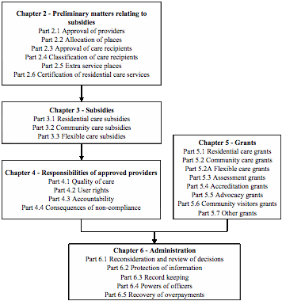
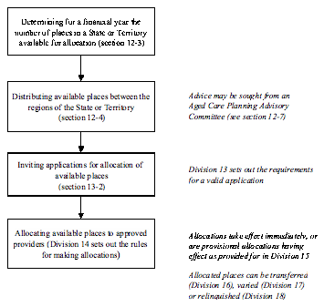

Aged Care
Act 1997
Act No. 112 of 1997 as amended
This compilation was prepared on 1 October 2011
taking into account amendments up to Act No. 86 of 2011
The text of any of those
amendments not in force
on that date is appended in the Notes section
The operation of amendments that have been incorporated may
be
affected by application provisions that are set out in the Notes section
Prepared by the Office of
Legislative Drafting and Publishing,
Attorney‑General�s Department, Canberra
��
��
��
Contents
Chapter 1—Introduction������������������������������������������������������������������������������������������������������������� 1
Division 1—Preliminary
matters������������������������������������������������������������������������������ 1
1‑1.......... Short title [see Note
1].................................................... 1
1‑2.......... Commencement [see Note
1]............................................. 1
1‑3.......... Identifying defined terms................................................. 1
1‑4.......... Tables of Divisions and
Subdivisions do not form part of this Act. 2
Division 2—Objects���������������������������������������������������������������������������������������������������������������� 3
2‑1.......... The objects of this Act.................................................... 3
Division 3—Overview
of this Act������������������������������������������������������������������������������� 5
3‑1.......... General....................................................................... 5
3‑2.......... Preliminary matters relating
to subsidies (Chapter 2).............. 5
3‑3.......... Subsidies (Chapter 3)..................................................... 5
3‑4.......... Responsibilities of approved
providers (Chapter 4)................ 6
3‑5.......... Grants (Chapter 5)......................................................... 6
3‑6.......... The structure of this Act.................................................. 6
Division 4—Application
of this Act�������������������������������������������������������������������������� 8
4‑1.......... Application of this Act................................................... 8
4‑2.......... Binding the Crown........................................................ 8
Chapter 2—Preliminary
matters relating to subsidies���������������������������������� 9
Division 5—Introduction��������������������������������������������������������������������������������������������������� 9
5‑1.......... What this Chapter is about.............................................. 9
5‑2.......... Which approvals etc. may be
relevant................................ 10
Part 2.1—Approval of
providers������������������������������������������������������������������������������������������ 11
Division 6—Introduction������������������������������������������������������������������������������������������������� 11
6‑1.......... What this Part is about................................................. 11
6‑2.......... The Approved Provider
Principles................................... 11
Division 7—What is
the significance of approval as a provider of aged care?���������� 12
7‑1.......... Pre‑conditions to
receiving subsidy................................. 12
7‑2.......... Approvals may be restricted........................................... 12
Division 8—How does
a person become an approved provider?�� 13
8‑1.......... Approval as a provider of aged
care.................................. 13
8‑2.......... Applications for approval.............................................. 14
8‑3.......... Suitability of people to
provide aged care.......................... 15
8‑3A...... Meaning of key personnel.............................................. 16
8‑4.......... Requests for further
information....................................... 17
8‑5.......... Notification of Secretary�s
determination........................... 18
8‑6.......... States, Territories and local
government taken to be approved providers��������� 20
Division 9—What
obligations arise from being an approved provider?������� 21
9‑1.......... Obligation to notify certain
changes................................. 21
9‑2.......... Obligation to give information
relevant to an approved provider�s status when requested����������� 22
9‑3.......... Obligation to give information
relevant to payments under this Act����������������� 24
9‑3A...... Obligation to give information
relating to accommodation bonds, entry contributions etc.���������� 24
9‑3B....... Obligation to give information
about ability to refund accommodation bond balances� 25
9‑4.......... Obligations while approval is
suspended.......................... 27
Division 10—When
does an approval cease to have effect?����������� 28
10‑1....... Cessation of approvals.................................................. 28
10‑2....... Approval lapses if no allocated
places............................... 28
10‑3....... Revocation of approval................................................. 28
Division 10A—Disqualified
individuals������������������������������������������������������������ 31
10A‑1.... Meaning of disqualified
individual.................................. 31
10A‑2.... Disqualified individual must not be
one of the key personnel of an approved provider 32
10A‑3.... Remedial orders........................................................... 33
Part 2.2—Allocation
of places���������������������������������������������������������������������������������������������� 35
Division 11—Introduction���������������������������������������������������������������������������������������������� 35
11‑1....... What this Part is about................................................. 35
11‑2....... The Allocation Principles.............................................. 35
11‑3....... Meaning of people with special
needs............................... 36
11‑4....... Explanation of the allocation
process................................ 36
Division 12—How does
the Commonwealth plan its allocations of places?��������������� 38
12‑1....... The planning process.................................................... 38
12‑2....... Objectives of the planning
process................................... 38
12‑3....... Minister to determine the number
of places available for allocation� 38
12‑4....... Distributing available places
among regions...................... 39
12‑5....... Determining proportion of care to
be provided to certain groups of people����� 39
12‑6....... Regions.................................................................... 40
12‑7....... Aged Care Planning Advisory
Committees......................... 40
Division 13—How do
people apply for allocations of places?������� 42
13‑1....... Applications for allocations of
places............................... 42
13‑2....... Invitation to apply....................................................... 42
13‑3....... Application fee........................................................... 43
13‑4....... Requests for further information....................................... 43
Division 14—How are
allocations of places decided?��������������������������� 45
14‑1....... Allocation of places..................................................... 45
14‑2....... Competitive assessment of
applications for allocations.......... 46
14‑3....... Compliance with the invitation....................................... 47
14‑4....... Waiver of requirements.................................................. 47
14‑5....... Conditions relating to particular
allocations...................... 48
14‑6....... Conditions relating to
allocations generally....................... 51
14‑7....... Allocation of places to services
with extra service status........ 51
14‑8....... Notification of allocation............................................... 52
14‑9....... Allocations in situations of
emergency.............................. 52
Division 15—When do
allocations of places take effect?����������������� 54
15‑1....... When allocations take effect........................................... 54
15‑2....... Provisional allocations................................................. 54
15‑3....... Applications for determinations...................................... 54
15‑4....... Variation or revocation of
provisional allocations................ 55
15‑5....... Variation of provisional
allocations on application.............. 56
15‑6....... Surrendering provisional
allocations................................ 57
15‑7....... Provisional allocation periods........................................ 57
Division 16—How are
allocated places transferred from one person to another?������������������ 59
Subdivision 16‑A—Transfer
of places other than provisionally allocated places���� 59
16‑1A.... Application of this Subdivision...................................... 59
16‑1....... Transfer of places......................................................... 59
16‑2....... Applications for transfer of
places.................................... 60
16‑3....... Requests for further information....................................... 62
16‑4....... Consideration of applications......................................... 62
16‑5....... Time limit for decisions on
applications............................. 64
16‑6....... Notice of decision on transfer.......................................... 64
16‑7....... Transfer day................................................................ 65
16‑8....... Transfer of places to service
with extra service status............. 66
16‑9....... Information to be given to
transferee................................. 66
16‑10..... Transferors to provide transferee
with certain records............ 67
16‑11..... Effect of transfer on certain
matters.................................... 68
Subdivision 16‑B—Transfer
of provisionally allocated places����������������� 68
16‑12..... Application of this Subdivision...................................... 68
16‑13..... Transfer of provisionally allocated
places........................... 69
16‑14..... Applications for transfer of
provisionally allocated places...... 70
16‑15..... Requests for further information....................................... 72
16‑16..... Consideration of applications......................................... 72
16‑17..... Time limit for decisions on
applications............................. 74
16‑18..... Notice of decision on transfer.......................................... 74
16‑19..... Transfer day................................................................ 75
16‑20..... Transfer of places to service with
extra service status............. 76
16‑21..... Information to be given to
transferee................................. 77
Division 17—How are
the conditions for allocations of places varied?��������� 78
17‑1....... Variation of allocations................................................. 78
17‑2....... Applications for variation of
allocations............................ 78
17‑3....... Requests for further information....................................... 80
17‑4....... Consideration of applications......................................... 80
17‑5....... Time limit for decisions on
applications............................. 81
17‑6....... Notice of decisions...................................................... 81
17‑7....... Variation day.............................................................. 81
17‑8....... Variation involving relocation of
places to service with extra service status�� 82
Division 18—When do
allocations cease to have effect?������������������ 84
18‑1....... Cessation of allocations................................................ 84
18‑2....... Relinquishing places.................................................... 84
18‑3....... Proposals relating to the care
needs of care recipients............ 85
18‑4....... Approved providers� obligations
relating to the care needs of care recipients����������������� 86
18‑5....... Revocation of unused allocations
of places......................... 86
Part 2.3—Approval of
care recipients���������������������������������������������������������������������������� 88
Division 19—Introduction���������������������������������������������������������������������������������������������� 88
19‑1....... What this Part is about................................................. 88
19‑2....... The Approval of Care Recipients
Principles........................ 88
Division 20—What is
the significance of approval as a care recipient?������� 89
20‑1....... Care recipients must be approved
before subsidy can be paid... 89
20‑2....... Effect of limitation of approvals....................................... 89
Division 21—Who is
eligible for approval as a care recipient?�� 90
21‑1....... Eligibility for approval................................................. 90
21‑2....... Eligibility to receive
residential care................................ 90
21‑3....... Eligibility to receive community
care................................ 90
21‑4....... Eligibility to receive flexible
care.................................... 91
Division 22—How does
a person become approved as a care recipient?������� 92
22‑1....... Approval as a care recipient............................................ 92
22‑2....... Limitation of approvals................................................. 92
22‑3....... Applications for approval.............................................. 93
22‑4....... Assessments of care needs.............................................. 93
22‑5....... Date of effect of approval................................................ 94
22‑6....... Notification of decisions............................................... 95
Division 23—When
does an approval cease to have effect?����������� 96
23‑1....... Expiration, lapse or revocation
of approvals....................... 96
23‑2....... Expiration of time limited
approvals................................. 96
23‑3....... Circumstances in which approval
lapses............................ 96
23‑4....... Revocation of approvals................................................ 97
Part 2.4—Classification
of care recipients�������������������������������������������������������������� 99
Division 24—Introduction���������������������������������������������������������������������������������������������� 99
24‑1....... What this Part is about................................................. 99
24‑2....... The Classification Principles.......................................... 99
Division 25—How are
care recipients classified?��������������������������������� 100
25‑1....... Classification of care recipients...................................... 100
25‑2....... Classification levels................................................... 101
25‑3....... Appraisals of the level of care
needed.............................. 101
25‑4....... Suspending approved providers
from making appraisals and reappraisals������� 103
25‑4A.... Stay of suspension agreements....................................... 104
25‑4B.... Stayed suspension may take effect................................... 105
25‑4C.... Applications for lifting of
suspension............................. 106
25‑4D.... Requests for further information..................................... 106
25‑4E.... Notification of Secretary�s decision................................ 107
25‑5....... Authorisation of another person
to make appraisals or reappraisals 107
Division 26—When do
classifications take effect?������������������������������ 108
26‑1....... Appraisals received within the
appropriate period—care other than respite care������������ 108
26‑2....... Appraisals not received within
the appropriate period—care other than respite care����� 108
26‑3....... When respite care classifications
take effect....................... 109
Division 27—Expiry
and renewal of classifications����������������������������� 110
27‑1....... When do classifications cease to
have effect?..................... 110
27‑2....... Expiry dates and reappraisal
periods............................... 110
27‑3....... Reappraisal required by Secretary................................... 115
27‑4....... Reappraisal at initiative of
approved provider................... 116
27‑5....... Requirements for reappraisals........................................ 117
27‑6....... Renewal of classifications............................................ 118
27‑7....... Date of effect of renewal of
classification that has an expiry date—reappraisal received during
reappraisal period������ 119
27‑8....... Date of effect of renewal of classification
that has an expiry date—reappraisal received after reappraisal period����������� 119
27‑9....... Date of effect of
renewal—reappraisals at initiative of approved provider�������� 120
Division 29—How are
classifications changed?�������������������������������������� 121
29‑1....... Changing classifications.............................................. 121
29‑2....... Date of effect of change................................................. 121
Part 2.5—Extra
service places�������������������������������������������������������������������������������������������� 122
Division 30—Introduction������������������������������������������������������������������������������������������� 122
30‑1....... What this Part is about................................................ 122
30‑2....... The Extra Service Principles......................................... 123
30‑3....... Meaning of distinct part.............................................. 123
Division 31—When is
a place an extra service place?���������������������� 124
31‑1....... Extra service place...................................................... 124
31‑3....... Effect of allocation or transfer
of places to services with extra service status��� 124
Division 32—How is
extra service status granted?������������������������������ 125
32‑1....... Grants of extra service status......................................... 125
32‑2....... Invitations to apply.................................................... 125
32‑3....... Applications for extra service
status................................ 126
32‑4....... Criteria to be considered by
Secretary.............................. 127
32‑5....... Competitive assessment of
applications........................... 129
32‑6....... Application fee.......................................................... 130
32‑7....... Maximum proportion of places....................................... 130
32‑8....... Conditions of grant of extra
service status......................... 130
32‑9....... Notification of extra service
status.................................. 132
Division 33—When
does extra service status cease?������������������������� 133
33‑1....... Cessation of extra service status..................................... 133
33‑3....... Lapsing of extra service status....................................... 133
33‑4....... Revocation or suspension of extra
service status at approved provider�s request����������� 134
Division 35—How are
extra service fees approved?���������������������������� 135
35‑1....... Approval of extra service fees........................................ 135
35‑2....... Applications for approval............................................ 135
35‑3....... Rules about amount of extra
service fee............................. 136
35‑4....... Notification of Secretary�s
decision................................ 137
Division 36—When is
residential care provided on an extra service basis?�������������� 138
36‑1....... Provision of residential care on
extra service basis.............. 138
36‑2....... Extra service agreements not to
be entered under duress etc... 138
36‑3....... Contents of extra service
agreements................................ 139
36‑4....... Additional protection for
existing residents...................... 139
Part 2.6—Certification
of residential care services�������������������������������������� 140
Division 37—Introduction������������������������������������������������������������������������������������������� 140
37‑1....... What this Part is about................................................ 140
37‑2....... The Certification Principles.......................................... 140
Division 38—How is a
residential care service certified?������������� 141
38‑1....... Certification of residential care
services........................... 141
38‑2....... Applications for certification........................................ 141
38‑3....... Suitability of residential care
service for certification........... 142
38‑4....... Secretary may require service to
be assessed...................... 143
38‑5....... Requests for further information..................................... 143
38‑6....... Notification of Secretary�s
determination......................... 143
38‑7....... Application fee.......................................................... 144
Division 39—When
does certification cease to have effect?������� 145
39‑1....... Certifications ceasing to have
effect................................. 145
39‑2....... Lapse of certification on change
of location of residential care service�������������� 145
39‑3....... Revocation of certification............................................ 145
39‑4....... Review of certification................................................. 146
39‑5....... Revocation of certification on
request of approved provider.. 147
Chapter 3—Subsidies��������������������������������������������������������������������������������������������������������������� 148
Division 40—Introduction������������������������������������������������������������������������������������������� 148
40‑1....... What this Chapter is about........................................... 148
Part 3.1—Residential
care subsidy������������������������������������������������������������������������������� 149
Division 41—Introduction������������������������������������������������������������������������������������������� 149
41‑1....... What this Part is about................................................ 149
41‑2....... The Residential Care Subsidy
Principles.......................... 149
41‑3....... Meaning of residential care.......................................... 149
Division 42—Who is
eligible for residential care subsidy?�������� 151
42‑1....... Eligibility for residential care
subsidy............................ 151
42‑2....... Leave from residential care
services................................. 152
42‑3....... Working out periods of leave........................................ 153
42‑4....... Accreditation requirement............................................ 154
42‑5....... Determinations allowing for
exceptional circumstances........ 154
42‑6....... Revocation of determinations........................................ 156
42‑7....... Exceeding the number of places
for which there is an allocation 157
42‑8....... Notice of refusal to pay
residential care subsidy................. 157
Division 43—How is
residential care subsidy paid?��������������������������� 158
43‑1....... Payment of residential care
subsidy................................ 158
43‑2....... Meaning of payment period.......................................... 158
43‑3....... Advances................................................................. 158
43‑4....... Claims for residential care
subsidy.................................. 159
43‑4A.... Variations of claims for residential
care subsidy................. 160
43‑5....... Deductions for fees..................................................... 161
43‑6....... Capital repayment deductions....................................... 161
43‑8....... Non‑compliance deductions......................................... 162
43‑9....... Recovery of overpayments............................................ 163
Division 44—What is
the amount of residential care subsidy? 164
44‑1....... What this Division is about......................................... 164
Subdivision 44‑A—Working
out the amount of residential care subsidy��� 164
44‑2....... Amount of residential care
subsidy................................. 164
Subdivision 44‑B—The
basic subsidy amount����������������������������������������������� 165
44‑3....... The basic subsidy amount............................................ 165
Subdivision 44‑C—Primary
supplements���������������������������������������������������������� 166
44‑5....... Primary supplements................................................... 166
44‑5A.... The accommodation supplement..................................... 167
44‑5B.... Meaning of supported resident...................................... 168
44‑5C.... Meaning of post‑2008 reform
resident............................ 168
44‑5D.... Meaning of pre‑2008 reform
resident............................. 168
44‑5E.... Meaning of pre‑entry leave........................................... 169
44‑6....... The concessional resident
supplement............................. 170
44‑7....... Meaning of concessional
resident.................................. 171
44‑8....... Meaning of assisted resident........................................ 173
44‑8AA Determinations for sections 44‑7
and 44‑8........................ 176
44‑8AB. Determination of value of person�s
assets......................... 178
44‑8A.... The charge exempt resident
supplement............................ 179
44‑8B.... Meaning of charge exempt resident................................ 180
44‑9....... Person taken not to be a
supported resident, a concessional resident or an assisted resident if asset
information not provided����������������� 181
44‑10..... How to work out the value of a
person�s assets.................. 181
44‑11..... Definitions relating to supported
residents, concessional residents and assisted residents������� 184
44‑12..... The respite supplement................................................ 186
44‑13..... The oxygen supplement............................................... 187
44‑14..... The enteral feeding supplement...................................... 188
44‑15..... Requests for further information..................................... 189
44‑16..... Additional primary supplements.................................... 190
Subdivision 44‑D—Reductions
in subsidy�������������������������������������������������������� 190
44‑17..... Reductions in subsidy................................................ 190
44‑18..... The extra service reduction........................................... 190
44‑19..... The adjusted subsidy reduction..................................... 191
44‑20..... The compensation payment reduction.............................. 191
Subdivision 44‑E—The
income test����������������������������������������������������������������������� 194
44‑21..... The income test.......................................................... 194
44‑22..... Daily income tested reduction taken
to be zero in some circumstances������������� 195
44‑23..... Effect on daily income tested
reduction of failure to give requested information�������������� 196
44‑24..... The care recipient�s total
assessable income..................... 197
44‑26..... The care recipient�s total
assessable income free area........ 201
Subdivision 44‑F—Other
supplements���������������������������������������������������������������� 203
44‑27..... Other supplements..................................................... 203
44‑28..... The pensioner supplement............................................ 203
44‑29..... The viability supplement............................................. 206
44‑30..... The hardship supplement............................................. 208
44‑31..... Determining cases of financial
hardship........................... 209
44‑32..... The resident contribution top up
supplement.................... 210
Part 3.2—Community
care subsidy������������������������������������������������������������������������������ 211
Division 45—Introduction������������������������������������������������������������������������������������������� 211
45‑1....... What this Part is about................................................ 211
45‑2....... The Community Care Subsidy
Principles.......................... 211
45‑3....... Meaning of community care.......................................... 211
Division 46—Who is
eligible for community care subsidy?������� 212
46‑1....... Eligibility for community care
subsidy............................ 212
46‑2....... Suspension of community care
services............................ 212
46‑3....... Exceeding the number of places
for which there is an allocation 214
46‑4....... Notice of refusal to pay
community care subsidy................. 214
Division 47—On what
basis is community care subsidy paid?� 215
47‑1....... Payability of community care
subsidy............................. 215
47‑2....... Meaning of payment period.......................................... 215
47‑3....... Advances................................................................. 215
47‑4....... Claims for community care subsidy................................. 216
47‑4A.... Variations of claims for community
care subsidy................. 217
47‑5....... Recovery of overpayments............................................ 217
Division 48—What is
the amount of community care subsidy? 218
48‑1....... Amount of community care subsidy................................. 218
Part 3.3—Flexible
care subsidy���������������������������������������������������������������������������������������� 219
Division 49—Introduction������������������������������������������������������������������������������������������� 219
49‑1....... What this Part is about................................................ 219
49‑2....... The Flexible Care Subsidy
Principles.............................. 219
49‑3....... Meaning of flexible care.............................................. 219
Division 50—Who is
eligible for flexible care subsidy?����������������� 220
50‑1....... Eligibility for flexible care
subsidy................................. 220
50‑2....... Kinds of care for which flexible
care subsidy may be payable. 220
50‑3....... Exceeding the number of places
for which there is an allocation 221
50‑4....... Notice of refusal to pay flexible
care subsidy..................... 222
Division 51—On what
basis is flexible care subsidy paid?���������� 223
51‑1....... Payment of flexible care subsidy..................................... 223
Division 52—What is
the amount of flexible care subsidy?������� 224
52‑1....... Amounts of flexible care subsidy.................................... 224
Chapter 4—Responsibilities
of approved providers�������������������������������������� 225
Division 53—Introduction������������������������������������������������������������������������������������������� 225
53‑1....... What this Chapter is about........................................... 225
53‑2....... Failure to meet responsibilities
does not have consequences apart from under this Act 225
Part 4.1—Quality of
care������������������������������������������������������������������������������������������������������� 227
Division 54—Quality
of care������������������������������������������������������������������������������������ 227
54‑1....... Responsibilities of approved
providers........................... 227
54‑2....... Accreditation Standards.............................................. 228
54‑4....... Community Care Standards........................................... 228
54‑5....... Flexible Care Standards............................................... 229
Part 4.2—User rights������������������������������������������������������������������������������������������������������������������ 230
Division 55—Introduction������������������������������������������������������������������������������������������� 230
55‑1....... What this Part is about................................................ 230
55‑2....... The User Rights Principles........................................... 230
Division 56—What are
the general responsibilities relating to user rights?���������� 231
56‑1....... Responsibilities of approved
providers—residential care..... 231
56‑2....... Responsibilities of approved
providers—community care..... 233
56‑3....... Responsibilities of approved
providers—flexible care......... 234
56‑4....... Complaints resolution mechanisms................................. 235
56‑5....... Extent to which responsibilities
apply............................ 236
Division 57—What are
the responsibilities relating to accommodation bonds and entry contributions?������������ 237
57‑1....... What this Division is about......................................... 237
Subdivision 57‑A—The
basic rules����������������������������������������������������������������������� 238
57‑2....... Basic rules about accommodation
bonds.......................... 238
Subdivision 57‑B—Prudential
requirements���������������������������������������������������� 240
57‑3....... Compliance with prudential
requirements......................... 240
57‑4....... Prudential Standards.................................................. 240
Subdivision 57‑C—Accommodation
bond agreements�������������������������������� 241
57‑9....... Contents of accommodation bond
agreements.................... 241
57‑10..... Accommodation bond agreements may
be incorporated into other agreements����������������� 242
57‑11..... Agreements cannot affect
requirements of this Division........ 243
Subdivision 57‑D—Amounts
of accommodation bonds����������������������������� 243
57‑12..... Maximum amount of accommodation
bond......................... 243
57‑13..... Maximum amount of accommodation
bond if care recipient moves between certain aged care services����������� 245
57‑14..... Accommodation bond in cases of
financial hardship............ 246
57‑15..... Revocation of determinations of
financial hardship............. 247
Subdivision 57‑E—Payment
of accommodation bonds������������������������������ 248
57‑16..... Period for payment of accommodation
bond....................... 248
57‑17..... Payment of an accommodation bond by
periodic payments.... 249
Subdivision 57‑EA—Permitted
use of accommodation bonds���������������� 250
57‑17A. Permitted use of accommodation bonds............................ 250
57‑17B.. Offences relating to non‑permitted
use of accommodation bonds 252
Subdivision 57‑F—Rights
of approved providers����������������������������������������� 253
57‑18..... Approved provider may retain income
derived................... 253
57‑19..... Amounts to be deducted from
accommodation bond balance.. 255
57‑20..... Retention amounts..................................................... 255
Subdivision 57‑G—Refunds������������������������������������������������������������������������������������� 257
57‑21..... Refunding of accommodation bond
balance—approved providers 257
57‑21AARefunding of
accommodation bond balance—former
approved providers.................................................... 258
57‑21A. Payment of interest on accommodation
bond balance........... 260
57‑21B.. Payment of interest on entry
contribution balance.............. 260
57‑22..... Delaying refunds to secure re‑entry................................. 260
Subdivision 57‑H—Charging
an accommodation bond instead of an accommodation charge������������ 261
57‑23..... Charging an accommodation bond
instead of an accommodation charge����������� 261
Division 57A—What
are the responsibilities relating to accommodation charges?������������ 263
57A‑1.... What this Division is about......................................... 263
Subdivision 57A‑A—The
basic rules�������������������������������������������������������������������� 263
57A‑2.... Basic rules about accommodation
charges......................... 263
Subdivision 57A‑B—Accommodation
charge agreements�������������������������� 265
57A‑3.... Contents of accommodation charge
agreements................... 265
57A‑4.... Accommodation charge agreements may
be incorporated into other agreements��������������� 266
57A‑5.... Agreements cannot affect
requirements of this Division........ 267
Subdivision 57A‑C—Daily
accrual amounts of accommodation charges 267
57A‑6.... Maximum daily accrual amount of
accommodation charge...... 267
57A‑7.... Accommodation charge not to accrue
after provision of care has ceased������������ 269
57A‑8.... Accommodation charge not to accrue
while residential service not certified��� 269
57A‑8A Maximum amount of accommodation charge
if care recipient moves between aged care services���� 269
57A‑9.... Accommodation charge in cases of
financial hardship.......... 269
57A‑10. Revocation of determinations of
financial hardship............. 271
Subdivision 57A‑D—Payment
of accommodation charges������������������������ 272
57A‑11. Accommodation charge may be payable not
more than one month in advance� 272
57A‑12. Approved provider may charge interest............................ 272
Division 58—What are
the responsibilities relating to resident fees?��������� 274
58‑1....... Responsibilities relating to
resident fees.......................... 274
58‑2....... Maximum daily amount of resident
fees............................. 274
58‑3....... Standard resident contribution...................................... 275
58‑3A.... Meaning of pre‑September
2009 resident and post‑September
2009 resident���������������� 276
58‑3B.... Standard resident
contribution—protected residents........... 277
58‑3C.... Standard resident contribution—certain
pre‑2008 reform residents� 278
58‑4....... Standard resident
contribution—phased residents.............. 280
58‑5....... Extra service amount................................................... 282
58‑6....... Maximum daily amount of resident fees
for reserving a place... 282
Division 59—What are
the requirements for resident agreements?�������������� 284
59‑1....... Requirements for resident
agreements.............................. 284
Division 60—What are
the responsibilities relating to community care fees?������ 286
60‑1....... Responsibilities relating to
community care fees................ 286
60‑2....... Maximum daily amount of community
care fees................... 286
Division 61—What are
the requirements for community care agreements?����������� 288
61‑1....... Requirements for community care
agreements..................... 288
Division 62—What are
the responsibilities relating to protection of personal information?������ 290
62‑1....... Responsibilities relating to
protection of personal information 290
62‑2....... Giving personal information to
courts etc......................... 291
Part 4.3—Accountability
etc.���������������������������������������������������������������������������������������������� 292
Division 63—Accountability
etc.��������������������������������������������������������������������������� 292
63‑1....... Responsibilities of approved
providers........................... 292
63‑1AA Responsibilities relating to alleged and
suspected assaults.. 293
63‑1A.... Responsibility relating to the basic
suitability of key personnel 296
63‑1B.... Responsibility relating to recording
entry of new residents.. 297
63‑1C.... Responsibility relating to
circumstances materially affecting an approved provider�s suitability to
provide aged care������������� 297
63‑2....... Annual report on the operation of
the Act......................... 297
Part 4.4—Consequences
of non‑compliance�������������������������������������������������������� 299
Division 64—Introduction������������������������������������������������������������������������������������������� 299
64‑1....... What this Part is about................................................ 299
64‑2....... The Sanctions Principles............................................. 299
Division 65—When can
sanctions be imposed?�������������������������������������� 300
65‑1....... Imposition of sanctions............................................... 300
65‑2....... Appropriateness of imposing
sanctions........................... 300
Division 66—What
sanctions can be imposed?��������������������������������������� 301
66‑1....... Sanctions that may be imposed...................................... 301
66‑2....... Agreement to certain matters in
lieu of revocation of approved provider status���������������� 302
Division 66A—Establishment
of administrator panel and adviser panel���� 304
66A‑1.... Establishment of administrator panel
and adviser panel........ 304
66A‑2.... Appointment of advisers.............................................. 305
66A‑3.... Appointment of administrators...................................... 305
66A‑4.... Powers of administrators and
advisers............................. 306
66A‑5.... Interpretation............................................................ 307
Division 67—How are
sanctions imposed?�������������������������������������������������� 308
67‑1....... Procedure for imposing sanctions................................... 308
67‑2....... Notice of non‑compliance............................................. 308
67‑3....... Notice of intention to impose
sanctions........................... 309
67‑4....... Notice to remedy non‑compliance................................... 310
67‑5....... Notice of decision on whether to
impose sanctions............. 311
Division 67A—When do
sanctions take effect?�������������������������������������� 313
67A‑1.... When this Division applies.......................................... 313
67A‑2.... Basic rule—sanction takes
effect at the section 67‑5 notice time 313
67A‑3.... Exceptions to the basic rule.......................................... 313
67A‑4.... Deferral to a later time.................................................. 313
67A‑5.... Progressive revocation or suspension
of allocation of places. 314
67A‑6.... This Division has effect subject to
section 66‑2................. 315
Division 68—When do
sanctions cease to apply?���������������������������������� 316
68‑1....... Sanctions cease to apply.............................................. 316
68‑2....... Sanction period......................................................... 316
68‑3....... Lifting of sanctions.................................................... 317
68‑4....... Applications for lifting of
sanctions................................ 317
68‑5....... Requests for further information..................................... 317
68‑6....... Notification of Secretary�s
decision................................ 318
Chapter 5—Grants����������������������������������������������������������������������������������������������������������������������� 319
Division 69—Introduction������������������������������������������������������������������������������������������� 319
69‑1....... What this Chapter is about........................................... 319
Part 5.1—Residential
care grants���������������������������������������������������������������������������������� 320
Division 70—Introduction������������������������������������������������������������������������������������������� 320
70‑1....... What this Part is about................................................ 320
70‑2....... The Residential Care Grant
Principles............................. 320
70‑3....... Meaning of capital works costs..................................... 320
Division 71—How do
people apply for allocations of residential care grants?�������� 322
71‑1....... Applications for residential care
grants............................ 322
71‑2....... Invitation to apply..................................................... 322
71‑3....... Requests for further information..................................... 323
Division 72—How are
residential care grants allocated?�������������� 324
72‑1....... Allocation of residential care
grants................................ 324
72‑2....... Criteria for allocations................................................. 325
72‑3....... Meeting the needs of people with
special needs................. 325
72‑4....... Compliance with the invitation..................................... 326
72‑5....... Waiver of requirements................................................ 326
72‑6....... Notification of allocation............................................. 327
72‑7....... Notice to unsuccessful applicants.................................. 327
Division 73—On what
basis are residential care grants paid?� 328
73‑1....... Basis on which residential care
grants are paid.................. 328
73‑2....... Conditions of residential care
grants............................... 328
73‑3....... Grants payable only if certain
conditions met.................... 329
73‑4....... Variation or revocation of
allocations.............................. 330
73‑5....... Variation of allocations on
application of approved provider. 331
73‑6....... Agreement taken to be varied........................................ 331
73‑7....... Appropriation........................................................... 331
Division 74—How much
is a residential care grant?������������������������� 332
74‑1....... The amount of a residential care grant.............................. 332
Part 5.2—Community
care grants��������������������������������������������������������������������������������� 333
Division 75—Introduction������������������������������������������������������������������������������������������� 333
75‑1....... What this Part is about................................................ 333
75‑2....... The Community Care Grant
Principles............................. 333
Division 76—How are
community care grants allocated?������������� 334
76‑1....... Allocation of community care
grants............................... 334
76‑2....... Criteria for allocations................................................. 334
76‑3....... Applications for community care
grants........................... 335
76‑4....... Notification of allocation............................................. 335
76‑5....... Notice to unsuccessful applicants.................................. 336
Division 77—On what
basis are community care grants paid? 337
77‑1....... Basis on which community care
grants are paid.................. 337
77‑2....... Conditions of community care
grants............................... 337
77‑3....... Grants payable only if certain
conditions met.................... 338
77‑4....... Variation or revocation of
allocations.............................. 338
77‑5....... Variation of allocations on
application of approved provider. 339
77‑6....... Agreement taken to be varied........................................ 340
77‑7....... Appropriation........................................................... 340
Division 78—How much
is a community care grant?������������������������ 341
78‑1....... The amount of a community care
grant.............................. 341
Part 5.2A—Flexible
care grants��������������������������������������������������������������������������������������� 342
Division 78A—Introduction��������������������������������������������������������������������������������������� 342
78A‑1.... What this Part is about................................................ 342
78A‑2.... The Flexible Care Grant Principles................................. 342
Division 78B—How are
flexible care grants allocated?������������������ 343
78B‑1.... Allocation of flexible care grants.................................... 343
78B‑2.... Criteria for allocations................................................. 343
78B‑3.... Applications for flexible care
grants................................ 344
78B‑4.... Notification of allocation............................................. 344
78B‑5.... Notice to unsuccessful applicants.................................. 345
Division 78C—On what
basis are flexible care grants paid?����� 346
78C‑1.... Basis on which flexible care grants
are paid....................... 346
78C‑2.... Conditions of flexible care grants................................... 346
78C‑3.... Grants payable only if certain
conditions met.................... 347
78C‑4.... Variation or revocation of
allocations.............................. 347
78C‑5.... Variation of allocations on
application of approved provider. 348
78C‑6.... Agreement taken to be varied........................................ 349
78C‑7.... Appropriation........................................................... 349
Division 78D—How
much is a flexible care grant?����������������������������� 350
78D‑1.... The amount of a flexible care grant................................... 350
Part 5.3—Assessment
grants���������������������������������������������������������������������������������������������� 351
Division 79—Assessment
grants��������������������������������������������������������������������������� 351
79‑1....... Assessment grants...................................................... 351
79‑2....... Conditions of assessment grants.................................... 351
79‑3....... Appropriation........................................................... 352
Part 5.4—Accreditation
grants������������������������������������������������������������������������������������������ 353
Division 80—Accreditation
grants����������������������������������������������������������������������� 353
80‑1....... Accreditation grants................................................... 353
80‑2....... Conditions of accreditation
grants.................................. 354
80‑3....... Appropriation........................................................... 355
Part 5.5—Advocacy
grants����������������������������������������������������������������������������������������������������� 356
Division 81—Advocacy
grants���������������������������������������������������������������������������������� 356
81‑1....... Advocacy grants........................................................ 356
81‑2....... Applications for advocacy grants................................... 356
81‑3....... Deciding whether to make advocacy
grants....................... 357
81‑4....... Conditions of advocacy grants...................................... 357
81‑5....... Appropriation........................................................... 358
Part 5.6—Community
visitors grants������������������������������������������������������������������������� 359
Division 82—Community
visitors grants������������������������������������������������������ 359
82‑1....... Community visitors grants........................................... 359
82‑2....... Applications for community
visitors grants...................... 359
82‑3....... Deciding whether to make
community visitors grants.......... 360
82‑4....... Conditions of community visitors
grants.......................... 360
82‑5....... Appropriation........................................................... 361
Part 5.7—Other
grants������������������������������������������������������������������������������������������������������������� 362
Division 83—Other
grants������������������������������������������������������������������������������������������ 362
83‑1....... Other grants............................................................. 362
83‑2....... Conditions of other grants............................................ 362
83‑3....... Appropriation........................................................... 362
Chapter 6—Administration������������������������������������������������������������������������������������������������� 363
Division 84—Introduction������������������������������������������������������������������������������������������� 363
84‑1....... What this Chapter is about........................................... 363
Part 6.1—Reconsideration
and review of decisions��������������������������������������� 364
Division 85—Reconsideration
and review of decisions�������������������� 364
85‑1....... Reviewable decisions................................................. 364
85‑2....... Deadlines for making reviewable
decisions....................... 370
85‑3....... Secretary must give reasons for
reviewable decisions........... 371
85‑4....... Secretary may reconsider
reviewable decisions.................. 371
85‑5....... Reconsideration of reviewable
decisions.......................... 372
85‑6....... Date of effect of certain
decisions made under section 1239 of the Social Security Act 1991���������� 373
85‑7....... Date of effect of certain
decisions made under section 1243 of the Social Security Act 1991���������� 374
85‑8....... AAT review of reviewable
decisions............................... 375
Part 6.2—Protection
of information���������������������������������������������������������������������������� 376
Division 86—Protection
of information��������������������������������������������������������� 376
86‑1....... Meaning of protected
information................................. 376
86‑2....... Use of protected information......................................... 376
86‑3....... Disclosure of protected
information for other purposes......... 377
86‑4....... Disclosure of protected
information by people conducting assessments���������� 378
86‑5....... Limits on use of protected
information disclosed by Secretary 379
86‑6....... Limits on use of protected
information disclosed under certain legislation����� 379
86‑7....... Limits on use of protected
information by certain Departments 380
86‑8....... Disclosure to court..................................................... 380
86‑9....... Information about an aged care
service............................. 381
Part 6.3—Record
keeping������������������������������������������������������������������������������������������������������ 383
Division 87—Introduction������������������������������������������������������������������������������������������� 383
87‑1....... What this Part is about................................................ 383
87‑2....... Records Principles..................................................... 383
87‑3....... Failure to meet obligations does
not have consequences apart from under this Act�������� 383
Division 88—What
records must an approved provider keep?�� 385
88‑1....... Approved provider to keep and retain
certain records.......... 385
88‑2....... Approved providers to keep
records specified in Records Principles��������������� 386
88‑3....... False or misleading records........................................... 387
Division 89—What
records must a person who was an approved provider retain?���������������� 388
89‑1....... Former approved provider to
retain records....................... 388
Part 6.4—Powers of
officers������������������������������������������������������������������������������������������������� 389
Division 90—Introduction������������������������������������������������������������������������������������������� 389
90‑1....... What this Part is about................................................ 389
90‑2....... Failure to meet obligations does
not have consequences apart from under this Act�������� 389
90‑3....... Meaning of authorised officer....................................... 390
90‑4....... Meaning of monitoring powers..................................... 390
Division 91—What
powers can be exercised with an occupier�s consent?� 392
91‑1....... Power to enter premises with
occupier�s consent to monitor compliance�������� 392
91‑2....... Power to ask people to answer
questions etc..................... 393
91‑3....... Occupier of premises to assist
authorised officers................ 394
Division 92—What
powers can be exercised without an occupier�s consent?���������� 395
92‑1....... Circumstances in which the powers
in this Division can be exercised�������������� 395
92‑2....... Monitoring warrants................................................... 395
92‑3....... Offence‑related warrants............................................... 396
92‑4....... Warrants may be granted by
telephone etc......................... 398
92‑5....... Seizures without offence‑related
warrant in emergency situations 400
92‑6....... Discovery of evidence................................................. 401
92‑7....... Power to require people to answer
questions etc................ 402
92‑8....... Person on premises to assist
authorised officers................. 403
Division 93—What
powers are there to examine people and obtain documents? 404
93‑1....... Secretary�s power to obtain
information and documents....... 404
93‑2....... Self‑incrimination...................................................... 405
93‑4....... Authorised officers may examine on
oath or affirmation......... 405
Division 94—What are
the obligations relating to identity cards? 407
94‑1....... Identity cards for authorised
officers................................ 407
94‑2....... Return of identity cards issued
to authorised officers........... 407
Part 6.4A—Complaints������������������������������������������������������������������������������������������������������������ 408
Division 94A—Complaints
Principles������������������������������������������������������������� 408
94A‑1.... Complaints Principles................................................. 408
Part 6.5—Recovery of
overpayments��������������������������������������������������������������������������� 410
Division 95—Recovery
of overpayments�������������������������������������������������������� 410
95‑1....... Recoverable amounts.................................................. 410
95‑2....... Recoverable amount is a debt........................................ 410
95‑3....... Recovery by deductions from
amounts payable to debtor...... 410
95‑4....... Recovery where there is a
transfer of places....................... 410
95‑5....... Refund to transferee if
Commonwealth makes double recovery 411
95‑6....... Write‑off and waiver of
debt.......................................... 411
Part 6.6—Aged Care
Commissioner��������������������������������������������������������������������������� 412
Division 95A—Aged
Care Commissioner���������������������������������������������������� 412
95A‑1.... Aged Care Commissioner............................................. 412
95A‑2.... Appointment............................................................ 413
95A‑3.... Acting appointments.................................................. 413
95A‑4.... Remuneration............................................................ 414
95A‑5.... Leave of absence........................................................ 414
95A‑6.... Other terms and conditions........................................... 414
95A‑7.... Restrictions on outside employment............................... 415
95A‑8.... Disclosure of interests................................................. 415
95A‑9.... Resignation.............................................................. 415
95A‑10. Termination of appointment.......................................... 415
95A‑11. Delegations of Aged Care Commissioner�s
functions........... 416
95A‑12. Annual report........................................................... 416
Chapter 7—Miscellaneous��������������������������������������������������������������������������������������������������� 418
Division 96—Miscellaneous�������������������������������������������������������������������������������������� 418
96‑1....... Principles................................................................ 418
96‑2....... Delegations of Secretary�s powers
and functions................ 419
96‑3....... Committees............................................................... 422
96‑4....... Care provided on behalf of an
approved provider................ 422
96‑5....... Care recipients etc. lacking
capacity to enter agreements....... 422
96‑6....... Applications etc. on behalf of
care recipients..................... 423
96‑7....... Withdrawal of applications.......................................... 423
96‑8....... Protection for reporting
reportable assaults...................... 423
96‑9....... Application of the Criminal
Code.................................. 426
96‑10..... Appropriation........................................................... 426
96‑11..... Minister may give general policy
directions...................... 427
96‑13..... Regulations.............................................................. 427
Schedule 1—Dictionary���������������������������������������������������������������������������������������������������������� 428
1.............. Definitions............................................................... 428
Notes���������������������������������������������������������������������������������������������������������������������������������������������������������� 437
An Act relating to aged care, and for other purposes
��
Division 1—Preliminary matters
1‑1� Short title [see Note 1]
������������������ This Act may be cited as the Aged Care Act 1997.
1‑2� Commencement [see Note 1]
����������� (1)� This Division commences on the day on which this Act receives the Royal Assent.
����������� (2)� Subject to subsection (3), the provisions of this Act (other than the provisions of this Division) commence on a day or days to be fixed by Proclamation.
����������� (3)� If a provision of this Act does not commence under subsection (2) within the period of 6 months beginning on the day on which this Act receives the Royal Assent, it commences on the first day after the end of that period.
1‑3� Identifying defined terms
����������� (1)� Many of the terms in this Act are defined in the Dictionary in Schedule 1.
����������� (2)� Most defined terms are identified by an asterisk appearing at the start of the term: as in �*aged care service�. The footnote that goes with the asterisk contains a signpost to the Dictionary.
����������� (3)� An asterisk usually identifies the first occurrence of a term in a subsection, note or definition. Later occurrences of the term in the same subsection, note or definition are not asterisked.
����������� (4)� Terms are not asterisked in headings, tables or diagrams.
����������� (5)� The following basic terms used throughout the Act are not identified with an asterisk:
|
Terms that are not identified |
||
|
Item |
This term: |
is defined in: |
|
1 |
approved provider |
Schedule 1 |
|
2 |
care |
Schedule 1 |
|
3 |
community care |
section 45‑3 |
|
4 |
community care service |
Schedule 1 |
|
5 |
flexible care |
section 49‑3 |
|
6 |
flexible care service |
Schedule 1 |
|
7 |
provide |
section 96‑4 |
|
8 |
residential care |
section 41‑3 |
|
9 |
residential care service |
Schedule 1 |
|
10 |
Secretary |
Schedule 1 |
1‑4� Tables of Divisions and Subdivisions do not form part of this Act
������������������ Tables of Divisions and tables of Subdivisions do not form part of this Act.
����������� (1)� The objects of this Act are as follows:
�������������������� (a)� to provide for funding of *aged care that takes account of:
���������������������������� (i)� the quality of the care; and
��������������������������� (ii)� the *type of care and level of care provided; and
�������������������������� (iii)� the need to ensure access to care that is affordable by, and appropriate to the needs of, people who require it; and
�������������������������� (iv)� appropriate outcomes for recipients of the care; and
��������������������������� (v)� accountability of the providers of the care for the funding and for the outcomes for recipients;
�������������������� (b)� to promote a high quality of care and accommodation for the recipients of *aged care services that meets the needs of individuals;
�������������������� (c)� to protect the health and well‑being of the recipients of aged care services;
�������������������� (d)� to ensure that aged care services are targeted towards the people with the greatest needs for those services;
�������������������� (e)� to facilitate access to aged care services by those who need them, regardless of race, culture, language, gender, economic circumstance or geographic location;
��������������������� (f)� to provide respite for families, and others, who care for older people;
�������������������� (g)� to encourage diverse, flexible and responsive aged care services that:
���������������������������� (i)� are appropriate to meet the needs of the recipients of those services and the carers of those recipients; and
��������������������������� (ii)� facilitate the independence of, and choice available to, those recipients and carers;
�������������������� (h)� to help those recipients to enjoy the same rights as all other people in Australia;
��������������������� (i)� to plan effectively for the delivery of aged care services that:
���������������������������� (i)� promote the targeting of services to areas of the greatest need and people with the greatest need; and
��������������������������� (ii)� avoid duplication of those services; and
�������������������������� (iii)� improve the integration of the planning and delivery of aged care services with the planning and delivery of related health and community services;
��������������������� (j)� to promote ageing in place through the linking of care and support services to the places where older people prefer to live.
����������� (2)� In construing the objects, due regard must be had to:
�������������������� (a)� the limited resources available to support services and programs under this Act; and
�������������������� (b)� the need to consider equity and merit in accessing those resources.
Division 3—Overview of this Act
������������������ This Act provides for the Commonwealth to give financial support:
�������������������� (a)� through payment of subsidies for the provision of *aged care; and
�������������������� (b)� through payment of grants for other matters connected with the provision of aged care.
Subsidies are paid under Chapter 3 (but Chapters 2 and 4 are also relevant to subsidies), and grants are paid under Chapter 5.
3‑2� Preliminary matters relating to subsidies (Chapter 2)
������������������ Before the Commonwealth can pay subsidy to a provider of *aged care under Chapter 3, a number of approvals and similar decisions may need to have been made under Chapter 2. These may relate to:
�������������������� (a)� the provider (for example, the requirement that the provider be an approved provider); or
�������������������� (b)� the *aged care service in question (for example, the requirement that *places have been allocated in respect of the service); or
�������������������� (c)� the recipient of aged care (for example, the requirement that the recipient has been approved as a recipient of the type of aged care that is provided).
������������������ A number of different kinds of subsidy can be paid under Chapter 3. They are paid for *aged care that has been provided. Eligibility for a subsidy depends on:
�������������������� (a)� particular approvals and similar decisions having been made under Chapter 2; and
�������������������� (b)� the circumstances in which the care is provided (for example, whether the care is provided in a residential care service that meets its *accreditation requirement).
3‑4� Responsibilities of approved providers (Chapter 4)
������������������ Approved providers have certain responsibilities under Chapter 4. These responsibilities relate to:
�������������������� (a)� the quality of care they provide; and
�������������������� (b)� user rights for the people to whom care is provided; and
�������������������� (c)� accountability for the care that is provided, and the basic suitability of their *key personnel.
Failure to meet these responsibilities can lead to the imposition of sanctions that affect the status of approvals and similar decisions under Chapter 2 (and therefore may affect amounts of subsidy payable to an approved provider).
������������������ The Commonwealth makes grants under Chapter 5 to contribute to costs associated with:
�������������������� (a)� the establishment or enhancement of *aged care services (for example, *residential care grants); or
�������������������� (b)� assessments or approvals related to *aged care (for example, *assessment grants); or
�������������������� (c)� support services related to the provision of aged care (for example, *advocacy grants).
The grants are (in most cases) payable under agreements with the recipients of the grants, and may be subject to conditions.
3‑6� The structure of this Act
������������������ This diagram sets out the basic structure of this Act.

Division 4—Application of this Act
����������� (1)� This Act applies in all the States and Territories.
����������� (2)� However, this Act does not apply in any external Territory, except the Territory of Christmas Island and the Territory of Cocos (Keeling) Islands.
����������� (3)� Despite subsection (1), Parts 2.2, 2.5 and 3.1 apply in relation to the Territory of Christmas Island and the Territory of Cocos (Keeling) Islands as if those Territories were part of Western Australia and were not Territories.
Note:��������� This has the effect that references in Parts 2.2, 2.5 and 3.1 to a Territory do not apply to the Territory of Christmas Island or the Territory of Cocos (Keeling) Islands, and that references in those Parts to a State will be relevant to Western Australia as if it included those Territories.
����������� (1)� This Act binds the Crown in each of its capacities.
����������� (2)� This Act does not make the Crown liable to be prosecuted for an offence.
Chapter 2—Preliminary matters relating to subsidies
��
5‑1� What this Chapter is about
Before the Commonwealth can pay a subsidy under Chapter 3 for the provision of care, a number of approvals and similar decisions may need to have been made. These relate to:
���� the provider of the service—the provider must be an approved provider (see Part 2.1);
������ the *aged care service in question—*places must have been allocated in respect of the service (see Part 2.2). In addition, decisions can be made under Part 2.5 allowing places in a residential care service to become *extra service places (enabling higher fees to be charged for those places), and a residential care service can become certified under Part 2.6 (enabling *accommodation bonds and *accommodation charges to be charged);
������ the recipient of the care—the recipient must (in most cases) be approved in respect of the type of *aged care provided (see Part 2.3), and (in the case of residential care or flexible care) can be classified in respect of the level of care that is required (see Part 2.4).
Note:��������� Not all of these approvals and decisions are needed in respect of each kind of subsidy under Chapter 3.
5‑2� Which approvals etc. may be relevant
������������������ The following table shows, in respect of each kind of payment under Chapter 3, which approvals and similar decisions under this Chapter may be relevant.
|
Which approvals etc. may be relevant |
||||
|
|
Approvals or decisions |
Kind of payment |
||
|
|
Residential care subsidy |
Community care subsidy |
Flexible care subsidy |
|
|
1 |
Approval of providers |
Yes |
Yes |
Yes |
|
2 |
Allocation of places |
Yes |
Yes |
Yes |
|
3 |
Approval of care recipients |
Yes |
Yes |
Yes |
|
4 |
Classification of care recipients |
Yes |
No |
Yes |
|
5 |
Decisions relating to extra service places |
Yes |
No |
No |
|
6 |
Certification of residential care services |
Yes |
No |
No |
Note 1:������ Classification of care recipients is relevant to *flexible care subsidy only in respect of some kinds of flexible care services.
Note 2:������ Allocation of funding for *residential care grants, *community care grants and *flexible care grants is dealt with in Parts 5.1, 5.2 and 5.2A respectively, and not in this Chapter.
Part 2.1—Approval of providers
Regardless of what type of *aged care is to be provided, approval under this Part is a precondition to a provider of aged care receiving subsidy under Chapter 3 for the provision of the care.
Table of Divisions
6���������� Introduction
7���������� What is the significance of approval as a provider of aged care?
8���������� How does a person become an approved provider?
9���������� What obligations arise from being an approved provider?
10�������� When does an approval cease to have effect?
10A����� Disqualified individuals
6‑2� The Approved Provider Principles
������������������ Approval of providers of *aged care is also dealt with in the Approved Provider Principles. The provisions of this Part indicate when a particular matter is or may be dealt with in these Principles.
Note:��������� The Approved Provider Principles are made by the Minister under section 96‑1.
Division 7—What is the significance of approval as a provider of aged care?
7‑1� Pre‑conditions to receiving subsidy
������������������ Payments of subsidy cannot be made under Chapter 3 to a person for providing *aged care unless:
�������������������� (a)� the person is approved under this Part as a provider of aged care; and
�������������������� (b)� the approval is in force in respect of the type of aged care provided, at the time it is provided; and
�������������������� (c)� the approval is in force in respect of the *aged care service through which the aged care is provided, at the time it is provided.
7‑2� Approvals may be restricted
����������� (1)� If a restriction on the approved provider�s approval is in force under paragraph 66‑1(b) limiting the approval to certain *aged care services, subsidy can only be paid under Chapter 3 in respect of care provided through those services.
����������� (2)� If a restriction on the approved provider�s approval is in force under paragraph 66‑1(c) limiting the approval to certain care recipients, subsidy can only be paid under Chapter 3 in respect of care provided to those care recipients.
Note:��������� Subsections (1) and (2) will apply together if restrictions on the approved provider�s approval are in force under both paragraph 66‑1(b) and paragraph 66‑1(c).
Division 8—How does a person become an approved provider?
8‑1� Approval as a provider of aged care
����������� (1)� The Secretary must, in writing, approve a person as a provider of *aged care if:
�������������������� (a)� the person (the applicant) makes an application under section 8‑2; and
�������������������� (b)� the Secretary is satisfied that the applicant is a *corporation; and
�������������������� (c)� the Secretary is satisfied that the applicant is suitable to provide aged care (see section 8‑3); and
�������������������� (d)� the Secretary is satisfied that none of the applicant�s *key personnel is a *disqualified individual.
Note 1:������ Under Part 4.4, the Secretary may restrict a person�s approval as a provider of *aged care to certain *aged care services, or to certain care recipients.
Note 2:������ Rejections of applications are reviewable under Part 6.1.
����������� (2)� The approval is in respect of:
�������������������� (a)� either:
���������������������������� (i)� all types of *aged care; or
��������������������������� (ii)� if the approval is specified to be in respect of one or more types of aged care—that type or those types of aged care; and
�������������������� (b)� each *aged care service in respect of which:
���������������������������� (i)� an allocation of a *place to the person in respect of the aged care service is in effect (whether because the place was originally allocated to the person or because of a transfer); or
��������������������������� (ii)� a *provisional allocation of a place to the person in respect of the aged care service is in force (whether because the place was originally allocated to the person but the allocation has not yet taken effect or because of a transfer).
����������� (3)� The approval in respect of an *aged care service begins to be in force on the first day on which:
�������������������� (a)� an allocation of a *place to the person in respect of the aged care service takes effect; or
�������������������� (b)� a *provisional allocation of a place to the person in respect of the aged care service begins to be in force; or
�������������������� (c)� a transfer day occurs for the transfer under Division 16 of a place to the person for the provision of *aged care through the aged care service.
����������� (4)� However, the approval does not come into force in respect of any *aged care service through which the person provides *aged care unless one of those events occurs in respect of one of the aged care services through which the person provides aged care within a period of 2 years, or such longer period as is specified in the Approved Provider Principles, beginning on the day on which the instrument of approval is made.
����������� (5)� The approval is not subject to any limitation relating to when it ceases to be in force, unless the instrument of approval specifies otherwise.
8‑2� Applications for approval
����������� (1)� A person may apply in writing to the Secretary to be approved as a provider of *aged care.
����������� (2)� The application must be in a form approved by the Secretary, and must be accompanied by:
�������������������� (a)� any documents that are required by the Secretary to be provided; and
�������������������� (b)� the application fee (if any) specified in, or worked out in accordance with, the Approved Provider Principles.
����������� (3)� The amount of any application fee:
�������������������� (a)� must be reasonably related to the expenses incurred or to be incurred by the Commonwealth in relation to the application; and
�������������������� (b)� must not be such as to amount to taxation.
����������� (4)� An application that contains information that is, to the applicant�s knowledge, false or misleading in a material particular is taken not to be an application under this section.
8‑3� Suitability of people to provide aged care
����������� (1)� In deciding whether the applicant is suitable to provide *aged care, the Secretary must consider:
�������������������� (a)� the suitability and experience of the applicant�s *key personnel; and
�������������������� (b)� the applicant�s ability to provide, and its experience (if any) in providing, aged care; and
�������������������� (c)� the applicant�s ability to meet (and, if the applicant has been a provider of aged care, its record of meeting) relevant standards for the provision of aged care (see Part 4.1); and
�������������������� (d)� the applicant�s commitment to (and, if the applicant has been a provider of aged care, its record of commitment to) the rights of the recipients of aged care; and
�������������������� (e)� the applicant�s record of financial management, and the methods that the applicant uses, or proposes to use, in order to ensure sound financial management; and
��������������������� (f)� if the applicant has been a provider of aged care—its record of financial management relating to the provision of that aged care; and
�������������������� (g)� if the applicant has been a provider of aged care—its conduct as a provider, and its compliance with its responsibilities as a provider and its obligations arising from the receipt of any payments from the Commonwealth for providing that aged care; and
������������������� (ga)� if the applicant has relevant key personnel in common with a person who is or has been an approved provider:
���������������������������� (i)� the person�s record of meeting relevant standards for the provision of aged care (see Part 4.1); and
��������������������������� (ii)� the person�s record of commitment to the rights of the recipients of aged care; and
�������������������������� (iii)� the person�s record of financial management, and the methods that the person uses or used in order to ensure sound financial management; and
�������������������������� (iv)� the person�s record of financial management relating to the provision of aged care; and
��������������������������� (v)� the conduct of the person as a provider of aged care, and its compliance with its responsibilities as such a provider and its obligations arising from the receipt of any payments from the Commonwealth for providing that aged care; and
�������������������� (h)� any other matters specified in the Approved Provider Principles.
����������� (2)� In considering a matter referred to in paragraphs (1)(b) to (h), the Secretary may also consider the matter in relation to any or all of the applicant�s *key personnel.
����������� (5)� The Approved Provider Principles may specify the matters to which the Secretary must have regard in considering any of the matters set out in paragraphs (1)(a) to (h).
����������� (6)� The references in paragraphs (1)(b), (c), (d), (f), (g) and (ga) to aged care include references to any care for the aged, whether provided before or after the commencement of this section, in respect of which any payment was or is payable under a law of the Commonwealth.
��������� (6A)� For the purposes of paragraph (1)(ga), the applicant has relevant key personnel in common with a person who is or has been an approved provider if:
�������������������� (a)� at the time the person provided *aged care as an approved provider, another person was one of its *key personnel; and
�������������������� (b)� that other person is one of the key personnel of the applicant.
����������� (7)� Paragraph 8‑1(1)(d) and sections 10A‑2, 10A‑3 and 63‑1A do not limit this section.
8‑3A� Meaning of key personnel
����������� (1)� For the purposes of this Act, each of the following is one of the key personnel of an entity at a particular time:
�������������������� (a)� a member of the group of persons who is responsible for the executive decisions of the entity at that time;
�������������������� (b)� any other person who has authority or responsibility for (or significant influence over) planning, directing or controlling the activities of the entity at that time;
�������������������� (c)� if, at that time, the entity conducts an *aged care service:
���������������������������� (i)� any person who is responsible for the nursing services provided by the service; and
��������������������������� (ii)� any person who is responsible for the day‑to‑day operations of the service;
�������������������������� whether or not the person is employed by the entity;
�������������������� (d)� if, at that time, the entity proposes to conduct an aged care service:
���������������������������� (i)� any person who is likely to be responsible for the nursing services to be provided by the service; and
��������������������������� (ii)� any person who is likely to be responsible for the day‑to‑day operations of the service;
�������������������������� whether or not the person is employed by the entity.
����������� (2)� Without limiting paragraph (1)(a), a reference in that paragraph to a person who is responsible for the executive decisions of an entity includes:
�������������������� (a)� where the entity is a body corporate that is incorporated, or taken to be incorporated, under the Corporations Act 2001—a director of the body corporate for the purposes of that Act; and
�������������������� (b)� in any other case—a member of the entity�s governing body.
����������� (3)� A person referred to in subparagraph (1)(c)(i) or (1)(d)(i) must hold a recognised qualification in nursing.
8‑4� Requests for further information
����������� (1)� If the Secretary needs further information to determine the application, the Secretary may give to the applicant a notice requiring the applicant to give the further information within 28 days after receiving the notice, or within such shorter period as is specified in the notice.
����������� (2)� The application is taken to be withdrawn if the applicant does not
give the further information within the 28 days, or within the shorter period,
as the case requires. However, this does not stop the applicant from reapplying.
Note:��������� The period for giving the further information can be extended—see section 96‑7.
����������� (3)� The notice must contain a statement setting out the effect of subsection (2).
����������� (4)� The Approved Provider Principles may limit the Secretary�s power to specify a shorter period in the notice by setting out one or both of the following:
�������������������� (a)� the circumstances in which the power may be exercised;
������������������� �(b)� the length of the shorter period, either generally or in respect of particular circumstances.
8‑5� Notification of Secretary�s determination
����������� (1)� The Secretary must notify the applicant, in writing, whether or not the applicant is approved as a provider of *aged care. The notice must be given:
�������������������� (a)� within 90 days after receiving the application; or
�������������������� (b)� if the Secretary has requested further information under section 8‑4—within 90 days after receiving the information.
����������� (2)� If the applicant is approved, the notice must include statements setting out the following matters:
�������������������� (a)� the applicant�s obligations under Division 9;
�������������������� (b)� the types of *aged care in respect of which the approval is given;
�������������������� (c)� the circumstances in which the approval may be restricted under Part 4.4 and the effect of such a restriction (see section 7‑2);
�������������������� (d)� a statement that the approval is in respect of those *aged care services in respect of which:
���������������������������� (i)� an allocation of a *place to the person in respect of the aged care service is in effect (whether because the place was originally allocated to the person or because of a transfer); or
��������������������������� (ii)� a *provisional allocation of a place to the person in respect of the aged care service is in force (whether because the place was originally allocated to the person but the allocation has not yet taken effect or because of a transfer);
������������������� (da)� a statement that the approval will not come into force unless one of the following occurs within a period of 2 years, or such longer period as is specified in the Approved Provider Principles, beginning on the day on which the instrument of approval is made:
���������������������������� (i)� an allocation of a place to the person in respect of an aged care service takes effect; or
��������������������������� (ii)� a provisional allocation of a place to the person in respect of an aged care service begins to be in force; or
�������������������������� (iii)� a transfer day occurs for the transfer under Division 16 of a place to the person for the provision of aged care through an aged care service;
������������������� (db)� if the approval specifies that it will cease to be in force on a particular day—the day on which it will cease to be in force;
�������������������� (e)� the circumstances in which the approval will lapse (see section 10‑2);
��������������������� (f)� the circumstances in which the approval may be suspended or revoked (see section 10‑3 and Part 4.4).
����������� (3)� If the applicant is approved as a provider of *aged care, the Secretary may, by written notice given to the applicant at the time the applicant is notified of the approval under subsection (1), specify any circumstance that the Secretary is satisfied materially affects the applicant�s suitability to provide aged care.
����������� (4)� The notice may specify the steps to be taken by the applicant to notify the Secretary and obtain his or her agreement before there is any change to that circumstance.
����������� (5)� A notice given to the applicant under subsection (3) is not a legislative instrument.
8‑6� States, Territories and local government taken to be approved providers
����������� (1)� Each of the following is taken to have been approved under this Part as a provider of *aged care:
�������������������� (a)� a State or Territory;
�������������������� (b)� an *authority of a State or Territory;
�������������������� (c)� a *local government authority.
The approval is taken to be in respect of all types of aged care.
����������� (2)� Subsection (1) ceases to apply in relation to a State, Territory, *authority of a State or Territory or *local government authority if the approval:
�������������������� (a)� lapses under section 10‑2; or
�������������������� (b)� is revoked under section 10‑3; or
�������������������� (c)� is revoked or suspended under Part 4.4.
����������� (3)� If a State, Territory, *authority of a State or Territory or *local government authority to which subsection (1) has ceased to apply subsequently applies under section 8‑2 for approval as a provider of *aged care, for the purposes of the application:
�������������������� (a)� the applicant is taken to be a *corporation; and
�������������������� (b)� if the applicant is a State or Territory—paragraphs 8‑3A(a) and (b) do not apply.
Division 9—What obligations arise from being an approved provider?
9‑1� Obligation to notify certain changes
����������� (1)� An approved provider must notify the Secretary of any of the following changes within 28 days after the change occurs:
�������������������� (a)� a change of circumstances that materially affects the approved provider�s suitability to be a provider of *aged care (see section 8‑3);
�������������������� (b)� a change of any of the approved provider�s *key personnel.
Note:��������� Approved providers have a responsibility under Part 4.3 to comply with this obligation. Failure to comply with a responsibility can result in a sanction being imposed under Part 4.4.
����������� (2)� The notification must be in the form approved by the Secretary.
����������� (3)� Despite paragraph (1)(b), an approved provider is not obliged to notify the Secretary of a change to the approved provider�s *key personnel if:
�������������������� (a)� the approved provider is a State or Territory; and
�������������������� (b)� the change relates to:
���������������������������� (i)� a member of a group of persons who is responsible for the executive decisions of the approved provider; or
��������������������������� (ii)� any other person who has authority or responsibility for (or significant influence over) planning, directing or controlling the activities of the approved provider.
��������� (3A)� For the purposes of this section, if:
�������������������� (a)� there is a change of any of an approved provider�s *key personnel; and
�������������������� (b)� the change is wholly or partly attributable to the fact that a particular person is, or is about to become, a *disqualified individual;
the approved provider is taken not to notify the change unless the provider�s notification includes the reason why the person is, or is about to become, a disqualified individual.
��������� (3B)� If:
�������������������� (a)� a person has been approved under section 8‑1 as a provider of *aged care; and
�������������������� (b)� the approval has not yet begun to be in force because:
���������������������������� (i)� no allocation of a *place to the person in respect of the *aged care service or services through which it provides aged care is in effect; and
��������������������������� (ii)� no *provisional allocation of a place to the person in respect of the aged care service or services through which it provides, or proposes to provide, aged care is in force; and
�������������������������� (iii)� the transfer day has not occurred for any transfer under Division 16 of a place to the person for the provision of aged care through the aged care service or services through which it provides, or proposes to provide, aged care;
this section has effect in respect of the person in the same way as it has effect in respect of an approved provider.
����������� (4)� An approved provider that is a *corporation is guilty of an offence if the approved provider fails to notify the Secretary of such a change within the 28 day period.
Penalty: 30 penalty units.
����������� (5)� Strict liability applies to subsection (4).
Note 1:������ Chapter 2 of the Criminal Code sets out the general principles of criminal responsibility.
Note 2:������ For strict liability, see section 6.1 of the Criminal Code.
9‑2� Obligation to give information relevant to an approved provider�s status when requested
����������� (1)� The Secretary may, at any time, request an approved provider to give the Secretary such information, relevant to the approved provider�s suitability to be a provider of *aged care (see section 8‑3), as is specified in the request. The request must be in writing.
����������� (2)� The approved provider must comply with the request within 28 days after the request was made, or within such shorter period as is specified in the notice.
Note:��������� Approved providers have a responsibility under Part 4.3 to comply with this obligation. Failure to comply with a responsibility can result in a sanction being imposed under Part 4.4.
��������� (2A)� If:
�������������������� (a)� a person has been approved under section 8‑1 as a provider of *aged care; and
�������������������� (b)� the approval has not yet begun to be in force because:
���������������������������� (i)� no allocation of a *place to the person in respect of the *aged care service or services through which it provides aged care is in effect; and
��������������������������� (ii)� no *provisional allocation of a place to the person in respect of the aged care service or services through which it provides, or proposes to provide, aged care is in force; and
�������������������������� (iii)� the transfer day has not occurred for any transfer under Division 16 of a place to the person for the provision of aged care through the aged care service or services through which it provides, or proposes to provide, aged care;
this section has effect in respect of the person in the same way as it has effect in respect of an approved provider.
����������� (3)� An approved provider that is a *corporation is guilty of an offence if it fails to comply with the request within the period referred to in subsection (2).
Penalty: 30 penalty units.
Note:��������� Chapter 2 of the Criminal Code sets out the general principles of criminal responsibility.
����������� (4)� The request must contain a statement setting out the effect of subsections (2) and (3).
9‑3� Obligation to give information relevant to payments under this Act
����������� (1)� The Secretary may, at any time, request an approved provider to give to the Secretary such information relating to payments made under this Act as is specified in the request. The request must be in writing.
����������� (2)� The approved provider must comply with the request within 28 days after the request was made, or within such shorter period as is specified in the notice.
Note:��������� Approved providers have a responsibility under Part 4.3 to comply with this obligation. Failure to comply with a responsibility can result in a sanction being imposed under Part 4.4.
����������� (3)� The request must contain a statement setting out the effect of subsection (2).
9‑3A� Obligation to give information relating to accommodation bonds, entry contributions etc.
����������� (1)� The Secretary may, at any time, request a person who is or has been an approved provider to give to the Secretary specified information relating to any of the following:
�������������������� (a)� *accommodation bonds charged by the person;
�������������������� (b)� the amount of one or more *accommodation bond balances at a particular time;
�������������������� (c)� the amount equal to the total of the accommodation bond balances that the person would have had to refund at a specified earlier time if certain assumptions specified in the request were made;
�������������������� (d)� *entry contributions given or loaned under a *formal agreement binding the person;
�������������������� (e)� the amount of one or more *entry contribution balances at a particular time;
��������������������� (f)� the amount equal to the total of the entry contribution balances that the person would have had to refund at a specified earlier time if certain assumptions specified in the request were made;
�������������������� (g)� *unregulated lump sums paid to the person;
�������������������� (h)� the amount of one or more *unregulated lump sum balances at a particular time.
The request must be in writing.
����������� (2)� The person must comply with the request within 28 days after the request was made, or within such shorter period as is specified in the request.
Note:��������� Approved providers have a responsibility under Part 4.3 to comply with this obligation. Failure to comply with a responsibility can result in a sanction being imposed under Part 4.4.
����������� (3)� A person commits an offence if:
�������������������� (a)� the Secretary requests the person to give information under subsection (1); and
�������������������� (b)� the person is required under subsection (2) to comply with the request within a period; and
�������������������� (c)� the person fails to comply with the request within the period; and
�������������������� (d)� the person is a *corporation.
Penalty: 30 penalty units.
����������� (4)� The request must contain a statement setting out the effect of subsections (2) and (3).
9‑3B� Obligation to give information about ability to refund accommodation bond balances
����������� (1)� This section applies if the Secretary believes, on reasonable grounds, that an approved provider:
�������������������� (a)� has not refunded, or is unable or unlikely to be able to refund, an *accommodation bond balance as required by section 57‑21; or
�������������������� (b)� is experiencing financial difficulties; or
�������������������� (c)� has used an *accommodation bond for a use that is not *permitted.
����������� (2)� The Secretary may request the approved provider to give the Secretary information specified in the request relating to any of the following:
�������������������� (a)� the approved provider�s suitability to be a provider of *aged care (see section 8‑3);
�������������������� (b)� the approved provider�s financial situation;
�������������������� (c)� the amount of one or more *accommodation bond balances at a particular time;
�������������������� (d)� how *accommodation bonds have been used by the approved provider;
�������������������� (e)� the approved provider�s policies and procedures relating to managing, monitoring and controlling the use of accommodation bonds;
��������������������� (f)� the roles and responsibilities of *key personnel in relation to managing, monitoring and controlling the use of accommodation bonds.
The request must be in writing.
����������� (3)� The Secretary may request the approved provider to give the specified information on a periodic basis.
����������� (4)� The approved provider must comply with the request:
�������������������� (a)� within 28 days after the request was made, or within such shorter period as is specified in the request; or
�������������������� (b)� if the information is to be given on a periodic basis—before the time or times worked out in accordance with the request.
Note:��������� Approved providers have a responsibility under Part 4.3 to comply with this obligation. Failure to comply with a responsibility can result in a sanction being imposed under Part 4.4.
����������� (5)� An approved provider commits an offence if:
�������������������� (a)� the Secretary requests the approved provider to give information under subsection (2); and
�������������������� (b)� the approved provider is required under subsection (4) to comply with the request within a period or before a particular time; and
�������������������� (c)� the approved provider fails to comply with the request within the period or before the time; and
�������������������� (d)� the approved provider is a *corporation.
Penalty: 30 penalty units.
����������� (6)� The request must contain a statement setting out the effect of subsections (4) and (5).
9‑4� Obligations while approval is suspended
������������������ If a person�s approval under section 8‑1 is suspended for a period under Part 4.4, the obligations under this Division apply to the person as if the person were an approved provider during that period.
Division 10—When does an approval cease to have effect?
����������� (1)� An approval as a provider of *aged care ceases to have effect if:
�������������������� (a)� the approval lapses under section 10‑2; or
�������������������� (b)� the approval is revoked under section 10‑3; or
�������������������� (c)� the period (if any) to which the approval is limited under subsection 8‑1(5) expires; or
�������������������� (d)� the approval is revoked under Part 4.4.
����������� (2)� If an approval as a provider of *aged care is suspended under Part 4.4, the approval ceases to have effect until the suspension ceases to apply (see Division 68).
10‑2� Approval lapses if no allocated places
������������������ The approval of a person as a provider of *aged care that is in force lapses if:
�������������������� (a)� no allocation of a *place to the provider in respect of any *aged care service through which it provides aged care is in effect; and
�������������������� (b)� no *provisional allocation of a place to the provider in respect of any aged care service through which it provides, or proposes to provide, aged care is in force; and
�������������������� (c)� the transfer day has not occurred for any transfer under Division 16 of a place to the person for the provision of aged care through the aged care service or services through which it provides, or proposes to provide, aged care.
����������� (1)� The Secretary must revoke an approval of a person as a provider of *aged care under section 8‑1 if the Secretary is satisfied that:
�������������������� (a)� the person has ceased to be a *corporation; or
�������������������� (b)� the person has ceased to be suitable for approval (see section 8‑3); or
�������������������� (c)� the person�s application for approval contained information that was false or misleading in a material particular.
Note 1:������ Revocation of approvals are reviewable under Part 6.1.
Note 2:������ Approvals may also be revoked as a sanction under Part 4.4.
����������� (3)� Before deciding to revoke the approval, the Secretary must notify the person that revocation is being considered. The notice must be in writing and must:
�������������������� (a)� include the Secretary�s reasons for considering the revocation; and
�������������������� (b)� invite the person to make submissions, in writing, to the Secretary within 28 days after receiving the notice; and
�������������������� (c)� inform the person that if no submission is made within that period, any revocation may take effect as early as 7 days after the last day for making submissions.
����������� (4)� In deciding whether to revoke the approval, the Secretary must consider any submissions given to the Secretary within that period.
����������� (5)� The Secretary must notify the person, in writing, of the decision.
����������� (6)� The notice must be given to the person within 28 days after the end of the period for making submissions. If the notice is not given within this period, the Secretary is taken to have decided not to revoke the approval.
����������� (7)� The Secretary must give effect to the revocation of the approval by:
�������������������� (a)� giving the person one or more written notices (which the Secretary may give at different times) limiting, or further limiting, the approval to:
���������������������������� (i)� one or more specified types of aged care; or
��������������������������� (ii)� one or more specified *aged care services; or
�������������������������� (iii)� one or more specified classes of care recipient; or
�������������������������� (iv)� any combination of the above; or
�������������������� (b)� giving the person a written notice revoking the approval altogether (whether or not the Secretary has already imposed any limitations under paragraph (a)).
A notice under this subsection may be given at the same time as the subsection (5) notice or at a later time.
��������� (7A)� A subsection (7) notice takes effect at the time specified in the notice, which must be at least 7 days after the day on which the notice is given.
��������� (7B)� The Secretary must not give a subsection (7) notice unless the Secretary is satisfied that appropriate arrangements have been made to ensure that the care recipients to whom the person will no longer be approved to provide *aged care after the notice takes effect will continue to be provided with care after that time.
��������� (7C)� Subject to subsection (7B), if the Secretary imposes one or more limitations under paragraph (7)(a), the Secretary must eventually revoke the approval altogether under paragraph (7)(b).
����������� (8)� Paragraph (1)(a) does not apply if the approved provider is a State, Territory, *authority of a State or Territory or *local government authority.
Division 10A—Disqualified individuals
10A‑1� Meaning of disqualified individual
����������� (1)� For the purposes of this Act, an individual is a disqualified individual if:
�������������������� (a)� the individual has been convicted of an indictable offence; or
�������������������� (b)� the individual is an insolvent under administration; or
�������������������� (c)� the individual is of unsound mind.
����������� (2)� In this section:
indictable offence means:
�������������������� (a)� an indictable offence against a law of the Commonwealth or of a State or Territory; or
�������������������� (b)� an offence that:
���������������������������� (i)� is an offence against a law of a foreign country or of a part of a foreign country; and
��������������������������� (ii)� when committed, corresponds to an indictable offence against a law of the Commonwealth or of a State or Territory.
insolvent under administration has the same meaning as in the Superannuation Industry (Supervision) Act 1993.
����������� (3)� Paragraph (1)(a) applies to a conviction, whether occurring before, at or after the commencement of this section.
����������� (4)� For the purposes of this section, an individual who is one of the *key personnel of an applicant under section 8‑2 is taken to be of unsound mind if, and only if, a registered medical practitioner has certified that he or she is mentally incapable of performing his or her duties as one of those key personnel.
����������� (5)� For the purposes of this section, an individual who is one of the *key personnel of an approved provider is taken to be of unsound mind if, and only if, a registered medical practitioner has certified that he or she is mentally incapable of performing his or her duties as one of those key personnel.
����������� (6)� This section does not affect the operation of Part VIIC of the Crimes Act 1914 (which includes provisions that, in certain circumstances, relieve persons from the requirement to disclose spent convictions and require persons aware of such convictions to disregard them).
10A‑2� Disqualified individual must not be one of the key personnel of an approved provider
Offence committed by approved providers
����������� (1)� A *corporation is guilty of an offence if:
�������������������� (a)� the corporation is an approved provider; and
�������������������� (b)� a *disqualified individual is one of the corporation�s *key personnel, and the corporation is reckless as to that fact.
Penalty: 300 penalty units.
Note:��������� Chapter 2 of the Criminal Code sets out the general principles of criminal responsibility.
����������� (2)� A *corporation that contravenes subsection (1) is guilty of a separate offence in respect of each day (including a day of a conviction for the offence or any later day) during which the contravention continues.
Offence committed by individuals
����������� (3)� An individual is guilty of an offence if:
�������������������� (a)� the individual is one of the *key personnel of an approved provider; and
�������������������� (b)� the approved provider is a *corporation; and
�������������������� (c)� the individual is a *disqualified individual, and the individual is reckless as to that fact.
Penalty: Imprisonment for 2 years.
Note:��������� Chapter 2 of the Criminal Code sets out the general principles of criminal responsibility.
Validity of acts of disqualified individuals and corporations
����������� (4)� An act of a *disqualified individual or a *corporation is not invalidated by the fact that this section is contravened.
Unacceptable key personnel situation
����������� (1)� For the purposes of this section, an unacceptable key personnel situation exists if:
�������������������� (a)� an individual is one of the *key personnel of an approved provider; and
�������������������� (b)� the approved provider is a *corporation; and
�������������������� (c)� the individual is a *disqualified individual.
Grant of orders
����������� (2)� If an unacceptable key personnel situation exists, the Federal Court may, on application by the Secretary, make such orders as the court considers appropriate for the purpose of ensuring that that situation ceases to exist.
����������� (3)� In addition to the Federal Court�s power under subsection (2), the court:
�������������������� (a)� has power, for the purpose of securing compliance with any other order made under this section, to make an order directing any person to do or refrain from doing a specified act; and
�������������������� (b)� has power to make an order containing such ancillary or consequential provisions as the court thinks just.
Grant of interim orders
����������� (4)� If an application is made to the Federal Court for an order under this section, the court may, before considering the application, grant an interim order directing any person to do or refrain from doing a specified act.
Notice of applications
����������� (5)� The Federal Court may, before making an order under this section, direct that notice of the application be given to such persons as it thinks fit or be published in such manner as it thinks fit, or both.
Discharge etc. of orders
����������� (6)� The Federal Court may, by order, rescind, vary or discharge an order made by it under this section or suspend the operation of such an order.
Definition
����������� (7)� In this section:
Federal Court means the Federal Court of Australia.
An approved provider can only receive subsidy under Chapter 3 for providing *aged care in respect of which a *place has been allocated. The Commonwealth plans the distribution between *regions of the available places in respect of the types of subsidies. It then invites applications and allocates the places to approved providers.
Table of Divisions
11�������� Introduction
12�������� How does the Commonwealth plan its allocations of places?
13�������� How do people apply for allocations of places?
14�������� How are allocations of places decided?
15�������� When do allocations of places take effect?
16�������� How are allocated places transferred from one person to another?
17�������� How are the conditions for allocations of places varied?
18�������� When do allocations cease to have effect?
11‑2� The Allocation Principles
������������������ Allocation of *places is also dealt with in the Allocation Principles. The provisions of this Part indicate when a particular matter is or may be dealt with in these Principles.
Note:��������� The Allocation Principles are made by the Minister under section 96‑1.
11‑3� Meaning of people with special needs
������������������ For the purposes of this Act, the following people are people with special needs:
�������������������� (a)� people from Aboriginal and Torres Strait Islander communities;
�������������������� (b)� people from non‑English speaking backgrounds;
�������������������� (c)� people who live in rural or remote areas;
�������������������� (d)� people who are financially or socially disadvantaged;
�������������������� (e)� people of a kind (if any) specified in the Allocation Principles.
11‑4� Explanation of the allocation process
������������������ This diagram sets out the steps that the Commonwealth takes in allocating *places to an approved provider under this Part in respect of a type of subsidy under Chapter 3.

Division 12—How does the Commonwealth plan its allocations of places?
����������� (1)� The Secretary must, for each financial year, carry out the planning process under this Division for each type of subsidy under Chapter 3.
����������� (2)� In carrying out the planning process, the Secretary:
�������������������� (a)� must have regard to the objectives set out in section 12‑2; and
�������������������� (b)� must comply with the Minister�s determination under section 12‑3; and
�������������������� (c)� may comply with sections 12‑4 to 12‑7.
12‑2� Objectives of the planning process
������������������ The objectives of the planning process are:
�������������������� (a)� to provide an open and clear planning process; and
�������������������� (b)� to identify community needs, particularly in respect of *people with special needs; and
�������������������� (c)� to allocate *places in a way that best meets the identified needs of the community.
12‑3� Minister to determine the number of places available for allocation
����������� (1)� The Minister must, in respect of each type of subsidy under Chapter 3, determine for the financial year how many *places are available for allocation in each State or Territory.
����������� (2)� The determination must be published in the Gazette.
12‑4� Distributing available places among regions
����������� (1)� The Secretary may, in respect of each type of subsidy, distribute for the financial year the *places *available for allocation in a State or Territory among the *regions within the State or Territory.
Note:��������� *Regions are determined under section 12‑6.
����������� (2)� In distributing the places, the Secretary must comply with any requirements specified in the Allocation Principles.
����������� (3)� If, in respect of a type of subsidy:
�������������������� (a)� the Secretary does not, under subsection (1), distribute for the financial year the *places *available for allocation in the State or Territory; or
�������������������� (b)� the whole of the State or Territory comprises one *region;
the Secretary is taken to have distributed for that year the places to the whole of the State or Territory as one region.
12‑5� Determining proportion of care to be provided to certain groups of people
����������� (1)� The Secretary may, in respect of each type of subsidy, determine for the *places *available for allocation the proportion of care that must be provided to one or more of the following:
�������������������� (a)� *people with special needs;
�������������������� (b)� *supported residents, *concessional residents and *assisted residents;
�������������������� (c)� recipients of *respite care;
�������������������� (d)� people needing a particular level of care;
�������������������� (e)� people of kinds specified in the Allocation Principles.
����������� (2)� In determining the proportion, the Secretary must consider any criteria specified in the Allocation Principles.
����������� (3)� The following are examples of the matters with which the criteria specified in the Allocation Principles may deal:
�������������������� (a)� the likely number of places that would be included in the *aged care services that would provide the care in relation to the *places to be allocated;
�������������������� (b)� whether those aged care services have been, or are likely to be, granted *extra service status;
�������������������� (c)� the particular kinds of care that are likely to be provided in relation to the places;
�������������������� (d)� the proportion of people receiving that care who are likely:
���������������������������� (i)� to be *people with special needs; or
��������������������������� (ii)� to be *supported residents, *concessional residents or *assisted residents; or
�������������������������� (iii)� to be recipients of *respite care; or
�������������������������� (iv)� to need a particular level of care; or
��������������������������� (v)� to be included in the kinds of people specified in the Allocation Principles;
�������������������� (e)� in the case of places in respect of *residential care subsidy—whether the residential care services through which the care is likely to be provided are likely to be *certified.
����������� (1)� The Secretary may, in respect of each type of subsidy, determine for each State and Territory the regions within the State and Territory.
��������� (1A)� If the Secretary determines the *regions within Western Australia, he or she must determine that one of those regions consists of the Territory of Christmas Island and the Territory of Cocos (Keeling) Islands.
����������� (2)� If the Secretary does not determine the regions within a State or Territory in respect of a particular type of subsidy, the whole of the State or Territory comprises the region.
����������� (3)� The determination must be published in the Gazette.
12‑7� Aged Care Planning Advisory Committees
����������� (1)� The Secretary may establish Aged Care Planning Advisory Committees.
����������� (2)� The Secretary may request advice from a Committee about:
�������������������� (a)� the distribution of *places among *regions under section 12‑4; and
�������������������� (b)� the making of determinations under section 12‑5.
If the Secretary requests advice, the Committee must advise the Secretary accordingly.
����������� (3)� The Allocation Principles may specify:
�������������������� (a)� the Committees� functions; and
�������������������� (b)� the Committees� membership; and
�������������������� (c)� any other matter relevant to the Committees� operations.
Division 13—How do people apply for allocations of places?
13‑1� Applications for allocations of places
������������������ A person may apply in writing for an allocation of *places. However, the application is valid only if:
�������������������� (a)� it is in response to an invitation to apply for allocation of places published by the Secretary under section 13‑2; and
�������������������� (b)� it is made on or before the closing date specified in the invitation; and
�������������������� (c)� it is in a form approved by the Secretary; and
������������������� (ca)� it is accompanied by the statements and other information required by that form; and
�������������������� (d)� it is accompanied by the application fee (see section 13‑3); and
�������������������� (e)� the applicant complies with any requests for information under section 13‑4.
Note:��������� These requirements can be waived under section 14‑4.
����������� (1)� If:
�������������������� (a)� *places are *available for allocation for a financial year; and
�������������������� (b)� those places have been distributed, or taken to have been distributed, to a *region under section 12‑4;
the Secretary may, during or before that financial year, invite applications for allocations of those places.
����������� (2)� The invitation may relate to more than one type of subsidy under Chapter 3, and to *places in respect of more than one *region.
����������� (3)� The invitation must specify the following:
�������������������� (a)� all of the *regions in respect of which allocations will be considered;
�������������������� (b)� the types of subsidy in respect of which allocations will be considered;
�������������������� (c)� the number of *places *available for allocation in respect of each type of subsidy;
�������������������� (d)� the closing date after which applications will not be accepted;
�������������������� (e)� the proportion of care (if any), in respect of the places available for allocation, that must be provided to each of the following:
���������������������������� (i)� *people with special needs;
��������������������������� (ii)� *supported residents, *concessional residents and *assisted residents;
�������������������������� (iii)� recipients of *respite care;
�������������������������� (iv)� people needing a particular level of care;
��������������������������� (v)� people of kinds specified in the Allocation Principles.
����������� (4)� The invitation must be:
�������������������� (a)� published in such newspapers; or
�������������������� (b)� published or notified by such other means;
as the Secretary thinks appropriate.
����������� (1)� The Allocation Principles may specify:
�������������������� (a)� the application fee; or
�������������������� (b)� the way the application fee is to be worked out.
����������� (2)� The amount of any application fee:
�������������������� (a)� must be reasonably related to the expenses incurred or to be incurred by the Commonwealth in relation to the application; and
�������������������� (b)� must not be such as to amount to taxation.
13‑4� Requests for further information
����������� (1)� If the Secretary needs further information for a purpose connected with making an allocation under Division 14, the Secretary may give an applicant a notice requesting the applicant to give the further information within 28 days after receiving the notice, or within such shorter period as is specified in the notice.
����������� (2)� The application is taken to be withdrawn if the applicant does not give the further information within 28 days, or within the shorter period, as the case requires. However, this does not stop the applicant from reapplying, either:
�������������������� (a)� in response to the invitation in question (on or before the closing date); or
�������������������� (b)� in response to a later invitation to apply for allocation of places.
Note:��������� The period for giving the further information can be extended—see section 96‑7.
����������� (3)� The Secretary�s request must contain a statement setting out the effect of subsection (2).
Division 14—How are allocations of places decided?
����������� (1)� The Secretary may allocate *places, in respect of a particular type of subsidy under Chapter 3, to a person to provide *aged care services for a *region.
����������� (2)� The *places may only be allocated to a person who:
�������������������� (a)� is approved under section 8‑1 to provide the *aged care in respect of which the places are allocated; or
�������������������� (b)� will be approved to provide aged care in respect of which the places are allocated once the allocation takes effect or, in the case of a *provisional allocation, begins to be in force.
��������� (2A)� The *places must not be allocated to the person if a sanction imposed under Part 4.4 is in force prohibiting allocation of places to the person.
����������� (3)� The allocation:
�������������������� (a)� must be the one that the Secretary is satisfied would best meet the needs of the aged care community in the *region (see section 14‑2); and
�������������������� (b)� may be made subject to conditions (see sections 14‑5 and 14‑6).
����������� (4)� In order for an allocation to be made to a person:
�������������������� (a)� the person must have made a valid application in respect of the allocation (see Division 13); and
�������������������� (b)� the allocation must comply with the terms of an invitation published under Division 13 (see section 14‑3);
except so far as the Secretary waives these requirements under section 14‑4.
Note:��������� However, paragraph (3)(a) and subsection (4) will not apply to an allocation of *places in a situation of emergency (see section 14‑9).
14‑2� Competitive assessment of applications for allocations
����������� (1)� In deciding which allocation of *places would best meet the needs of the aged care community in the *region, the Secretary must consider, in relation to each application:
�������������������� (a)� whether the people who manage, or propose to manage, the *aged care service that is providing or would provide the care to which the places relate have the necessary expertise and experience to do so; and
�������������������� (b)� if applicable, whether the premises used, or intended to be used, to provide the care to which the places relate are suitably planned and located for the provision of *aged care; and
�������������������� (c)� the ability of the applicant to provide the appropriate level of care; and
�������������������� (d)� if the applicant has been a provider of aged care—its conduct as such a provider, and its compliance with its responsibilities as such a provider and its obligations arising from the receipt of any payments from the Commonwealth for providing that aged care; and
������������������� (da)� if the applicant has relevant *key personnel in common with a person who is or has been an approved provider—the conduct of that person as a provider of aged care, and its compliance with its responsibilities as such a provider and its obligations arising from the receipt of any payments from the Commonwealth for providing that aged care; and
�������������������� (e)� the measures to protect the rights of care recipients; and
��������������������� (f)� the provision of appropriate care for care recipients who are *people with special needs; and
�������������������� (g)� any matters set out in the Allocation Principles.
����������� (2)� The reference in paragraphs (1)(d) and (da) to aged care includes a reference to any care for the aged, whether provided before or after the commencement of this section, in respect of which any payment was or is payable under a law of the Commonwealth.
����������� (3)� For the purposes of paragraph (1)(da), the applicant has relevant key personnel in common with a person who is or has been an approved provider if:
�������������������� (a)� at the time the person provided *aged care, another person was one of its *key personnel; and
�������������������� (b)� that other person is one of the key personnel of the applicant.
14‑3� Compliance with the invitation
������������������ The allocation complies with the terms of the invitation if:
�������������������� (a)� *places that are specified in the invitation as being *available for allocation in respect of a particular type of subsidy under Chapter 3 have been allocated only in respect of that type of subsidy; and
�������������������� (b)� places that are specified in the invitation as being available for allocation in respect of a particular *region have been allocated only in that region; and
�������������������� (c)� the total number of places that have been allocated does not exceed the number of places specified in the invitation as being available for allocation; and
�������������������� (d)� the Secretary has considered all valid applications made in respect of the allocation, together with any further information given under section 13‑4 in relation to those applications; and
�������������������� (e)� the allocation was made after the closing date.
����������� (1)� The Secretary may waive the requirement under paragraph 14‑1(4)(a) that each person who is allocated *places must have made a valid application in respect of the allocation if:
�������������������� (a)� each of the persons made an application in respect of the allocation; and
�������������������� (b)� the Secretary is satisfied that there are exceptional circumstances justifying the waiver.
����������� (2)� The Secretary may waive:
�������������������� (a)� the requirement under paragraph 14‑1(4)(a) that each person who is allocated *places must have made a valid application in respect of the allocation; and
�������������������� (b)� the requirement under paragraph 14‑1(4)(b) that the allocation must comply with the terms of an invitation published under Division 13;
if the places being allocated are places that have been *relinquished under section 18‑2 or that were included in an allocation, or a part of an allocation, revoked under Part 4.4.
Note:��������� If, because of this subsection, an allocation does not have to comply with the terms of an invitation published under Division 13, it will not be limited to places that are determined by the Minister under section 12‑3 to be available for allocation.
����������� (3)� The Secretary may waive:
�������������������� (a)� the requirement under paragraph 14‑1(4)(a) that each person who is allocated *places must have made a valid application in respect of the allocation; and
�������������������� (b)� the requirement under paragraph 14‑1(4)(b) that the allocation must comply with the terms of an invitation published under Division 13;
if the Secretary is satisfied that there are exceptional circumstances justifying the waiver, and that only places that are *available for allocation are allocated.
14‑5� Conditions relating to particular allocations
����������� (1)� The Secretary may make an allocation of *places to a person subject to such conditions as the Secretary specifies in writing.
����������� (2)� The Secretary may specify which of the conditions (if any) must be met before a determination can be made under section 15‑1.
Note:��������� An allocation takes effect when a determination is made under section 15‑1. Until an allocation takes effect, it is a *provisional allocation.
����������� (3)� It is a condition of every allocation of a *place that:
�������������������� (a)� the place is allocated in respect of a specified location; and
�������������������� (b)� the place is allocated in respect of a particular *aged care service; and
�������������������� (c)� any care provided, in respect of the place, must be provided at that location and through that service.
����������� (4)� The following are examples of the matters with which the conditions may deal:
�������������������� (a)� the proportion of care to be provided to:
���������������������������� (i)� *people with special needs; or
��������������������������� (ii)� *supported residents, *concessional residents and *assisted residents; or
�������������������������� (iii)� recipients of *respite care; or
�������������������������� (iv)� people needing a particular level of care; or
��������������������������� (v)� people of kinds specified in the Allocation Principles;
�������������������������� through the *aged care service in which the place is, or will be, included;
�������������������� (b)� the period within which the aged care service is to be operational;
�������������������� (c)� the period within which the premises to be used by the person to provide care are required to be built;
�������������������� (d)� the professional planning of the aged care service;
�������������������� (e)� the treatment of any *pre‑allocation lump sum, or part of such a sum, paid or payable to the person to whom the place is allocated (the pre‑allocation lump sum holder) by a care recipient, including:
���������������������������� (i)� the refund of the sum or part of the sum, with the consent of the care recipient; or
��������������������������� (ii)� the forgiveness of any obligation (including a contingent obligation) in relation to the sum or part of the sum, with the consent of the care recipient;
��������������������� (f)� the conditions and entry into force of any accommodation bond agreement entered into as a consequence of the refund of a pre‑allocation lump sum or part of such a sum, or the forgiveness of an obligation (including a contingent obligation) in relation to a pre‑allocation lump sum or part of such a sum.
Note:��������� Approved providers have a responsibility under Part 4.3 to comply with the conditions to which the allocation is subject. Failure to comply with a responsibility can result in a sanction being imposed under Part 4.4.
����������� (5)� If:
�������������������� (a)� a condition imposed on an allocation of *places to a person requires:
���������������������������� (i)� the refund by the person to a care recipient, with the consent of the care recipient, of a *pre‑allocation lump sum or part of such a sum; or
��������������������������� (ii)� the forgiveness by the person of an obligation (including a contingent obligation) by a care recipient, with the consent of the care recipient, in relation to a pre‑allocation lump sum or part of such a sum; and
�������������������� (b)� the care recipient continues, on the day on which the allocation was made, to be provided with *aged care through the residential care service in relation to entry to which the pre‑allocation lump sum was paid or became payable;
then the care recipient and the pre‑allocation lump sum holder have the same rights, duties and obligations in relation to the charging of an *accommodation bond or an *accommodation charge as the care recipient and the pre‑allocation lump sum holder would have under this Act if:
�������������������� (c)� the care recipient had *entered the residential care service or flexible care service on the day on which the allocation was made; and
�������������������� (d)� the pre‑allocation lump sum were an accommodation bond paid in respect of aged care provided through another residential care service or flexible care service.
����������� (6)� A pre‑allocation lump sum is an amount paid or payable to a person (the pre‑allocation lump sum holder) by a care recipient in the following circumstances:
�������������������� (a)� the amount does not accrue daily;
�������������������� (b)� the amount is for the care recipient�s *entry to a residential care service or flexible care service conducted by the pre‑allocation lump sum holder;
�������������������� (c)� the amount is not an *accommodation bond, an *entry contribution or an *unregulated lump sum.
14‑6� Conditions relating to allocations generally
����������� (1)� An allocation of *places to a person is also subject to such conditions as are from time to time determined by the Secretary, in writing, in respect of:
�������������������� (a)� allocations of places generally; or
�������������������� (b)� allocations of places of a specified kind that includes the allocation of places in question.
����������� (2)� In making a determination under subsection (1), the Secretary must have regard to any matters specified in the Allocation Principles.
����������� (3)� Conditions determined under this section apply to allocations that occurred before or after the determination is made, unless the determination specifies otherwise.
Note:��������� Approved providers have a responsibility under Part 4.3 to comply with the conditions to which the allocation is subject. Failure to comply with a responsibility can result in a sanction being imposed under Part 4.4.
14‑7� Allocation of places to services with extra service status
����������� (1)� The Secretary must not approve the allocation of *places to a residential care service that has, or a *distinct part of which has, *extra service status unless subsection (2) or (3) applies to the allocation.
����������� (2)� The Secretary may approve the allocation if satisfied that the *places other than the allocated places could, after the allocation, form one or more *distinct parts of the residential care service concerned.
Note:��������� The allocated places would not have *extra service status because of the operation of section 31‑3.
����������� (3)� The Secretary may approve the allocation if satisfied that:
�������������������� (a) granting the allocation would be reasonable, having regard to the criteria set out in section 32‑4; and
�������������������� (b)� granting the allocation would not result in the maximum proportion of *extra service places under section 32‑7, for the State, Territory or region concerned, being exceeded; and
�������������������� (c)� any other requirements set out in the Allocation Principles are satisfied.
Note:��������� These *places would have *extra service status because of the operation of section 31‑1. (Section 31‑3 would not apply.)
14‑8� Notification of allocation
����������� (1)� The Secretary must notify each applicant in writing whether or not any *places have been allocated to the applicant.
����������� (2)� If *places have been allocated to an applicant, the notice must set out:
�������������������� (a)� the number of places that have been allocated; and
�������������������� (b)� the types of subsidy under Chapter 3 in respect of which the places have been allocated; and
�������������������� (c)� the *region for which the places have been allocated; and
�������������������� (d)� if the Secretary determines that the allocation takes effect immediately—a statement of the consequences of the allocation taking effect immediately; and
�������������������� (e)� if the allocation is a *provisional allocation—a statement of the effect of the allocation being a provisional allocation; and
��������������������� (f)� the conditions to which the allocation is subject; and
�������������������� (g)� if the allocation is a provisional allocation—which of those conditions (if any) must be met before the allocation can take effect.
14‑9� Allocations in situations of emergency
����������� (1)� The Secretary may declare that an allocation of *places to a person is made in a situation of emergency.
����������� (2)� Paragraph 14‑1(3)(a) and subsection 14‑1(4) do not apply to an allocation that is the subject of such a declaration.
Note:��������� The effect of subsection (2) is that the process of inviting applications under Division 13 does not apply, valid applications for the allocation are not required, and there is no competitive assessment of applications.
����������� (3)� The Secretary must not make such a declaration unless the Secretary is satisfied that:
�������������������� (a)� a situation of emergency exists that could result in, or has resulted in, *aged care ceasing to be provided to a group of care recipients; and
�������������������� (b)� an allocation of *places under this Division would ensure that the provision of that care did not cease, or would resume; and
�������������������� (c)� there is insufficient time, in making the allocation, to comply with paragraph 14‑1(3)(a) and subsection 14‑1(4).
����������� (4)� A declaration must specify a period at the end of which the allocation in question is to cease to have effect.
Note:��������� If, because of this section, an allocation does not have to comply with the terms of an invitation published under Division 13, it will not be limited to places that are determined by the Minister under section 12‑3 to be available for allocation.
Division 15—When do allocations of places take effect?
15‑1� When allocations take effect
����������� (1)� An allocation of *places to a person takes effect when the Secretary determines that the person is in a position to provide care, in respect of those places, for which subsidy under Chapter 3 may be paid.
����������� (2)� The Secretary may so determine at the same time that the allocation is made. If the Secretary does not do so, the allocation is taken to be a provisional allocation.
Note:��������� Subsidy cannot be paid in respect of places covered by an allocation that is only a provisional allocation.
����������� (3)� If the allocation was made subject to conditions under section 14‑5 that must be met before a determination is made, the Secretary must not make the determination unless he or she is satisfied that all of those conditions have been met.
����������� (4)� In deciding whether to make the determination, the Secretary must have regard to any matters specified in the Allocation Principles.
������������������ A *provisional allocation remains in force until the end of the *provisional allocation period (see section 15‑7) unless, before then:
�������������������� (a)� a determination is made under section 15‑1 relating to the provisional allocation; or
�������������������� (b)� the provisional allocation is revoked under section 15‑4; or
�������������������� (c)� the provisional allocation is surrendered under section 15‑6.
15‑3� Applications for determinations
����������� (1)� The person may, at any time before the end of the *provisional allocation period, apply to the Secretary for a determination under section 15‑1.
����������� (2)� The application must be in the form approved by the Secretary.
����������� (3)� The Secretary must, within 28 days after receiving the application:
�������������������� (a)� make a determination under section 15‑1; or
�������������������� (b)� reject the application;
and, within that period, notify the person accordingly.
Note:��������� Rejections of applications are reviewable under Part 6.1.
����������� (4)� Rejection of the application does not prevent the person making a fresh application at a later time during the *provisional allocation period.
15‑4� Variation or revocation of provisional allocations
����������� (1)� The Secretary may vary or revoke a *provisional allocation if the Secretary is satisfied that a condition to which the provisional allocation is subject under section 14‑5 or 14‑6 has not been met.
Note:��������� Variations or revocations of *provisional allocations are reviewable under Part 6.1.
����������� (2)� A variation of the *provisional allocation must be a variation of a condition to which the allocation is subject under section 14‑5 or 14‑6.
����������� (3)� Before deciding to vary or revoke the *provisional allocation, the Secretary must notify the person that variation or revocation is being considered. The notice:
�������������������� (a)� must be in writing; and
�������������������� (b)� must invite the person to make written submissions to the Secretary, within 28 days after receiving the notice, as to why the provisional allocation should not be varied or revoked; and
�������������������� (c)� must inform the person that, if no submissions are made within that period, the variation or revocation takes effect on the day after the last day for making submissions.
����������� (4)� In deciding whether to vary or revoke the *provisional allocation, the Secretary must consider:
�������������������� (a)� any submissions made within that period; and
�������������������� (b)� any matters specified in the Allocation Principles.
����������� (5)� The Secretary must notify, in writing, the person of the decision.
����������� (6)� The notice must be given to the person within 28 days after the end of the period for making submissions. If the notice is not given within this period, the Secretary is taken to have decided not to vary or revoke the *provisional allocation.
����������� (7)� If the Secretary has decided to vary the *provisional allocation, the notice must include details of the variation.
����������� (8)� A variation or revocation has effect:
�������������������� (a)� if no submissions were made under subsection (3)—on the day after the last day for making submissions; or
�������������������� (b)� if such a submission was made—on the day after the person receives a notice under subsection (5).
15‑5� Variation of provisional allocations on application
����������� (1)� If the allocation is a *provisional allocation, the person may apply to the Secretary for a variation of the provisional allocation.
����������� (2)� A variation of the *provisional allocation may be:
�������������������� (a)� a reduction in the number of *places to which the provisional allocation relates; or
�������������������� (b)� a variation of any of the conditions to which the provisional allocation is subject under section 14‑5.
����������� (3)� The application must:
�������������������� (a)� be in the form approved by the Secretary; and
�������������������� (b)� be made before the end of the *provisional allocation period.
����������� (4)� The Secretary must, within 28 days after receiving the application:
�������������������� (a)� make the variation; or
�������������������� (b)� reject the application;
and, within that period, notify the person accordingly.
Note:��������� Rejections of applications are reviewable under Part 6.1.
����������� (5)� If the Secretary has decided to vary the *provisional allocation, the notice must include details of the variation.
����������� (6)� Rejection of the application does not prevent the person making a fresh application at a later time during the *provisional allocation period.
����������� (7)� In deciding whether to vary the *provisional allocation, the Secretary must have regard to any matters specified in the Allocation Principles.
15‑6� Surrendering provisional allocations
������������������ If the allocation is a *provisional allocation, the person may, at any time before the end of the *provisional allocation period, surrender the allocation by notice in writing to the Secretary.
15‑7� Provisional allocation periods
����������� (1)� The provisional allocation period is the period of 2 years after the day on which the allocation is made.
����������� (2)� However, the *provisional allocation period:
�������������������� (a)� may be extended; and
�������������������� (b)� if an application under section 15‑3 is pending at the end of the 2 years, or the 2 years as so extended—continues until the Secretary makes a determination under section 15‑1 or rejects the application.
����������� (3)� The Secretary must extend the *provisional allocation period if:
�������������������� (a)� the person applies to the Secretary, in accordance with subsection (4), for an extension; and
�������������������� (b)� the person has not already been granted an extension; and
�������������������� (c)� the Secretary is satisfied that the extension is justified in the circumstances; and
�������������������� (d)� the Secretary is satisfied that granting the extension meets any requirements specified in the Allocation Principles.
����������� (4)� The application:
�������������������� (a)� must be in the form approved by the Secretary; and
�������������������� (b)� must be made at least 60 days, or such lesser number of days as the Secretary allows, before what would be the end of the *provisional allocation period if it were not extended.
����������� (5)� The Secretary must, within 28 days after receiving an application for an extension:
�������������������� (a)� grant an extension; or
�������������������� (b)� reject the application;
and, within that period, notify the person accordingly.
Note:��������� Extending provisional allocation periods and rejections of applications for extensions are reviewable under Part 6.1.
����������� (6)� The period of the extension is 12 months unless the Secretary is satisfied that the applicant meets the criteria in the Allocation Principles for increasing or decreasing the period of the extension. The Secretary must specify the period of the extension in the notice of the granting of the extension.
����������� (7)� The following are examples of the matters with which the Allocation Principles may deal:
�������������������� (a)� the extent to which the person has made reasonable progress towards being in a position to provide the care for which subsidy may be paid under Chapter 3;
�������������������� (b)� circumstances in which delays in being in a position to provide that care are justified;
�������������������� (c)� circumstances in which the period of the extension can be increased or decreased.
Division 16—How are allocated places transferred from one person to another?
Subdivision 16‑A—Transfer of places other than provisionally allocated places
16‑1A� Application of this Subdivision
������������������ This Subdivision applies to the transfer of an allocated *place, other than a *provisionally allocated place.
����������� (1)� A transfer of a *place to which this Subdivision applies from one person to another is of no effect unless it is approved by the Secretary.
����������� (2)� The Secretary must approve the transfer of a *place to which this Subdivision applies if, and only if:
�������������������� (b)� an application for transfer is made under section 16‑2; and
�������������������� (c)� the Secretary is satisfied under section 16‑4 that the transfer is justified in the circumstances; and
�������������������� (d)� the transferee is an approved provider when the transfer is completed in respect of the *aged care service to which the places will relate after transfer; and
�������������������� (e)� the transfer would not have the effect of the care to which the place relates being provided in a different State or Territory.
����������� (3)� If the transfer is approved:
�������������������� (a)� the transferee is taken, from the transfer day (see section 16‑7), to be the person to whom the *place is allocated under this Subdivision; and
�������������������� (b)� if, as part of the transfer, approval is sought for one or more variations of the conditions to which the allocation is subject under section 14‑5—the Secretary is taken to have made such variation of the conditions as is specified in the instrument of approval.
16‑2� Applications for transfer of places
����������� (1)� An approved provider to whom a *place to the transfer of which this Subdivision applies has been allocated under Division 14 may apply in writing to the Secretary for approval to transfer the place to another person.
����������� (2)� The application must:
�������������������� (a)� be in a form approved by the Secretary; and
�������������������� (b)� include the information referred to in subsection (3); and
�������������������� (c)� be signed by the transferor and the transferee; and
�������������������� (d)� set out any variation of the conditions to which the allocation is subject under section 14‑5, for which approval is being sought as part of the transfer; and
�������������������� (e)� if, after the transfer, the *place would relate to a different *aged care service—set out the proposals for ensuring that care needs are appropriately met for care recipients who are being provided with care in respect of those places.
����������� (3)� The information to be included in the application is as follows:
�������������������� (a)� the transferor�s name;
�������������������� (b)� the number of *places to be transferred;
�������������������� (c)� the *aged care service to which the places currently relate, and its location;
�������������������� (d)� the proposed transfer day;
�������������������� (e)� the name of the transferee;
��������������������� (f)� if, after the transfer, the places would relate to a different aged care service—that aged care service, and its location;
�������������������� (g)� whether any of the places are:
���������������������������� (i)� places included in a residential care service, or a *distinct part of a residential care service, that has *extra service status; or
��������������������������� (ii)� *adjusted subsidy places; or
�������������������������� (iii)� places in respect of which one or more *residential care grants have been paid;
�������������������� (h)� if the places are included in a residential care service and, after the transfer, the places would relate to a different residential care service—whether that service, or a *distinct part of that service, has *extra service status;
��������������������� (i)� such other information as is specified in the Allocation Principles.
����������� (4)� The application must be made:
�������������������� (a)� if the transferee has been approved under section 8‑1 as a provider of *aged care (even if the approval has not yet begun to be in force)—no later than 60 days, or such other period as the Secretary determines under subsection (5), before the proposed transfer day; or
�������������������� (b)� if the transferee has not been approved under section 8‑1 as a provider of aged care—no later than 90 days, or such other period as the Secretary determines under subsection (5), before the proposed transfer day.
����������� (5)� The Secretary may, at the request of the transferor and the transferee, determine another period under paragraph (4)(a) or (b) if the Secretary is satisfied that it is justified in the circumstances.
����������� (6)� In deciding whether to make a determination, and in determining another period, the Secretary must consider any matters set out in the Allocation Principles.
����������� (7)� The Secretary must give written notice of his or her decision under subsection (5) to the transferor and the transferee. The notice is not a legislative instrument.
����������� (8)� If the information included in an application changes, the application is taken not to have been made under this section unless the transferor and the transferee give the Secretary written notice of the changes.
16‑3� Requests for further information
����������� (1)� If the Secretary needs further information to determine the application, the Secretary may give to the transferor and the transferee a notice requesting that:
�������������������� (a)� either the transferor or the transferee give the further information; or
�������������������� (b)� the transferor and the transferee jointly give the further information;
within 28 days after receiving the notice.
����������� (2)� The application is taken to be withdrawn if the further information is not given within the 28 days.
Note:��������� The period for giving the further information can be extended—see section 96‑7.
����������� (3)� The notice must contain a statement setting out the effect of subsection (2).
16‑4� Consideration of applications
����������� (1)� In deciding whether the transfer is justified in the circumstances, the Secretary must consider the following:
�������������������� (a)� whether the transfer would meet the objectives of the planning process set out in section 12‑2;
�������������������� (b)� if the places were allocated to meet the needs of *people with special needs—whether those needs would continue to be met after the transfer;
�������������������� (c)� if the places were allocated to provide a particular type of *aged care—whether that type of aged care would continue to be provided after the transfer;
�������������������� (d)� the suitability of the transferee to provide the aged care to which the places to be transferred relate;
�������������������� (e)� if, after the transfer, the *places would relate to a different *aged care service:
���������������������������� (i)� the financial viability, if the transfer were to occur, of the aged care service in which the places are currently included; and
��������������������������� (ii)� the financial viability, if the transfer were to occur, of the aged care service in which the places would be included; and
�������������������������� (iii)� the suitability of the premises being used, or proposed to be used, to provide care through that aged care service; and
�������������������������� (iv)� the standard of care, accommodation and other services provided, or proposed to be provided, by that aged care service; and
��������������������������� (v)� whether the proposals set out in the application, for ensuring that care needs are appropriately met for care recipients who are being provided with care in respect of those places, are satisfactory;
������������������� (ea)� if the transferee has been a provider of aged care—its conduct as such a provider, and its compliance with its responsibilities as such a provider and its obligations arising from the receipt of any payments from the Commonwealth for providing that aged care;
������������������� (eb)� if the transferee has relevant *key personnel in common with a person who is or has been an approved provider—the conduct of that person as a provider of aged care, and its compliance with its responsibilities as such a provider and its obligations arising from the receipt of any payments from the Commonwealth for providing that aged care;
��������������������� (f)� any other matters set out in the Allocation Principles.
����������� (2)� The reference in paragraphs (1)(ea) and (eb) to aged care includes a reference to any care for the aged, whether provided before or after the commencement of this subsection, in respect of which any payment was or is payable under a law of the Commonwealth.
����������� (3)� For the purposes of paragraph (1)(eb), the transferee has relevant key personnel in common with a person who is or has been an approved provider if:
�������������������� (a)� at the time the person provided *aged care as an approved provider, another person was one of its *key personnel; and
�������������������� (b)� that other person is one of the key personnel of the transferee.
16‑5� Time limit for decisions on applications
����������� (1)� Subject to this section, the Secretary must, at least 14 days before the proposed transfer day:
�������������������� (a)� approve the transfer; or
�������������������� (b)� reject the application;
and notify the transferor and transferee accordingly.
Note:��������� Rejections of applications are reviewable under Part 6.1.
����������� (2)� The Secretary may make a decision under subsection (1) on a later day if the transferor and the transferee agree. However, the later day must not occur on or after the proposed transfer day.
����������� (3)� If:
�������������������� (a)� the Secretary is given written notice (the alteration notice) under subsection 16‑2(8) of changes to the information contained in the application; and
�������������������� (b)� the alteration notice is given on or after the day occurring 30 days before the day by which the Secretary must act under subsection (1) of this section;
the Secretary is not obliged to act under subsection (1) until the end of the 30 day period following the day on which the alteration notice was given by the Secretary.
16‑6� Notice of decision on transfer
������������������ If the transfer is approved, the notice must include statements setting out the following matters:
�������������������� (a)� the number of *places to be transferred;
�������������������� (b)� the proposed transfer day;
�������������������� (c)� the *aged care service to which the places currently relate, and its location;
�������������������� (d)� if, after the transfer, the places will relate to a different aged care service:
���������������������������� (i)� that aged care service, and its location; and
��������������������������� (ii)� the proposals for ensuring that care needs are appropriately met for care recipients who are being provided with care in respect of those places, including the timetable for the proposals;
�������������������� (e)� the proportion of care, in respect of the places to be transferred, to be provided to:
���������������������������� (i)� *people with special needs; or
��������������������������� (ii)� *supported residents, *concessional residents and *assisted residents; or
�������������������������� (iii)� recipients of *respite care; or
�������������������������� (iv)� people needing a particular level of care; or
��������������������������� (v)� people of the kinds specified in the Allocation Principles;
��������������������� (f)� such other information as is specified in the Allocation Principles.
����������� (1)� The transfer day is the proposed transfer day specified in the application if the transfer is completed on or before that day.
����������� (2)� If the transfer is not completed on or before the proposed transfer day, the transferor and the transferee may apply, in writing, to the Secretary to approve a day as the transfer day.
Note:��������� Because the proposed transfer day must be specified in the application for transfer, the Secretary must be notified if the transfer is not completed on or before the proposed transfer day (see subsection 16‑2(8)).
����������� (3)� The Secretary must, within 28 days after receiving the application under subsection (2):
�������������������� (a)� approve a day as the transfer day; or
�������������������� (b)� reject the application;
and, within that period, notify the transferor and the transferee accordingly.
Note:��������� Approvals of days and rejections of applications are reviewable under Part 6.1.
����������� (4)� However, the day approved by the Secretary as the transfer day must not be earlier than the day on which the transfer is actually completed.
16‑8� Transfer of places to service with extra service status
����������� (1)� The Secretary must not approve the transfer of a *place to which this Subdivision applies from one person to another if:
�������������������� (a)� the transfer would result in residential care in respect of the place being provided through a residential care service in a different location; and
�������������������� (b)� that residential care service has, or a *distinct part of that service has, *extra service status;
unless subsection (2) or (3) applies to the transfer.
����������� (2)� The Secretary may approve the transfer if satisfied that the *places other than transferred places could, after the allocation, form one or more *distinct parts of the residential care service concerned.
Note:��������� The transferred places would not have *extra service status because of the operation of section 31‑3.
����������� (3)� The Secretary may approve the transfer if satisfied that:
�������������������� (a)� granting the transfer would be reasonable, having regard to the criteria set out in section 32‑4; and
�������������������� (b)� granting the transfer would not result in the maximum proportion of *extra service places under section 32‑7, for the State, Territory or region concerned, being exceeded; and
�������������������� (c)� any other requirements set out in the Allocation Principles are satisfied.
Note:��������� These *places would have *extra service status because of the operation of section 31‑1. (Section 31‑3 would not apply.)
16‑9� Information to be given to transferee
����������� (1)� The Secretary may give to the transferee information specified in the Allocation Principles at such times as are specified in those Principles.
����������� (2)� The following are examples of matters that may be specified in the Allocation Principles:
�������������������� (a)� the types of subsidies paid under Chapter 3 to the transferor in respect of the *aged care service in which *places being transferred are included;
�������������������� (b)� the likely future adjustments to those payments;
�������������������� (c)� where applicable, the current *classification levels of care recipients receiving care from the service and their classification histories;
�������������������� (d)� the financial status of those care recipients;
�������������������� (e)� if the aged care service in which the places being transferred are included is a residential care service:
���������������������������� (i)� matters relating to the *certification of the aged care service; and
��������������������������� (ii)� matters relating to whether the aged care service meets its *accreditation requirement;
��������������������� (f)� matters relating to the *residential care grants (if any) that have been made in respect of that aged care service;
�������������������� (h)� compliance by the transferor with the transferor�s responsibilities under Chapter 4 in relation to that aged care service, including any action that has been taken or is proposed to be taken, under Part 4.4, in relation to the transferor.
����������� (3)� The Allocation Principles must not specify information that would, or would be likely to, disclose the identity of any care recipient.
16‑10� Transferors to provide transferee with certain records
����������� (1)� If the transfer is completed, the transferor must give to the transferee such records, or copies of such records, as are necessary to ensure that the transferee can provide care in respect of the *places being transferred.
����������� (2)� These records must include the following:
�������������������� (a)� the assessment and classification records of care recipients receiving care from the *aged care service to which the *places being transferred relate;
�������������������� (b)� the individual care plans of those care recipients;
�������������������� (c)� the medical records, progress notes and other clinical records of those care recipients;
�������������������� (d)� the schedules of fees and charges (including, where applicable, retention amounts relating to *accommodation bonds) for those care recipients;
�������������������� (e)� any agreements between those care recipients and the transferor;
��������������������� (f)� the accounts of those care recipients;
�������������������� (g)� where applicable, the prudential requirements for accommodation bonds for that aged care service;
�������������������� (h)� the records specified in the Allocation Principles.
Note:��������� Approved providers have a responsibility under Part 4.3 to comply with this obligation. Failure to comply with a responsibility can result in a sanction being imposed under Part 4.4.
16‑11� Effect of transfer on certain matters
������������������ On the transfer day:
�������������������� (a)� any entitlement of the transferor to an amount of subsidy under Chapter 3, in respect of the *place being transferred, that is payable but has not been paid passes to the transferee; and
�������������������� (b)� any responsibilities under Part 4.2 that the transferor had, immediately before that transfer day, in relation to an *accommodation bond balance connected with the place become responsibilities of the transferee under Part 4.2; and
�������������������� (c)� the transferee is subject to any obligations to which the transferor was subject, immediately before that day, under a *resident agreement or *community care agreement entered into with a care recipient provided with care in respect of the place.
Subdivision 16‑B—Transfer of provisionally allocated places
16‑12� Application of this Subdivision
������������������ This Subdivision applies to the transfer of a *provisionally allocated *place.
16‑13� Transfer of provisionally allocated places
����������� (1)� A transfer of a *provisionally allocated *place from one person to another is of no effect unless it is approved by the Secretary.
����������� (2)� The Secretary must not approve the transfer of a *provisionally allocated *place unless:
�������������������� (a)� an application for the transfer is made under section 16‑14; and
�������������������� (b)� the Secretary is satisfied that, because of the needs of the aged care community in the region for which the places were provisionally allocated, there are exceptional circumstances justifying the transfer; and
�������������������� (c)� the Secretary is satisfied, having regard to the matters mentioned in section 16‑16, that the needs of the aged care community in the region for which the places were provisionally allocated are best met by the transfer; and
�������������������� (d)� the Secretary is satisfied that the transferee will be an approved provider when the transfer is completed in respect of the *aged care service to which the places will relate after transfer; and
�������������������� (e)� the location in respect of which the place is provisionally allocated will not change as a result of the transfer; and
��������������������� (f)� the provisional allocation is in respect of residential care subsidy.
����������� (3)� If the transfer is approved:
�������������������� (a)� the transferee is taken, from the transfer day (see section 16‑19), to be the person to whom the *place is *provisionally allocated under this Subdivision; and
�������������������� (b)� if, as part of the transfer, approval is sought for one or more variations of the conditions to which the allocation is subject under section 14‑5—the Secretary is taken to have made such variation of the conditions as is specified in the instrument of approval.
16‑14� Applications for transfer of provisionally allocated places
����������� (1)� A person to whom a *place has been *provisionally allocated under Division 14 may apply in writing to the Secretary for approval to transfer the place to another person.
����������� (2)� The application must:
�������������������� (a)� be in a form approved by the Secretary; and
�������������������� (b)� include the information referred to in subsection (3); and
�������������������� (c)� be signed by the transferor and the transferee; and
�������������������� (d)� set out any variation of the conditions to which the *provisional allocation is subject under section 14‑5, for which approval is being sought as part of the transfer.
����������� (3)� The information to be included in the application is as follows:
�������������������� (a)� the transferor�s name;
�������������������� (b)� the number of *places to be transferred;
�������������������� (c)� the *aged care service to which the places currently relate, and its location;
�������������������� (d)� the proposed transfer day;
�������������������� (e)� the transferee�s name;
��������������������� (f)� if, after the transfer, the places would relate to a different aged care service—that aged care service;
�������������������� (g)� whether any of the places are:
���������������������������� (i)� places included in a residential care service, or a *distinct part of a residential care service, that has *extra service status; or
��������������������������� (ii)� places in respect of which one or more *residential care grants have been paid;
�������������������� (h)� if the places are included in a residential care service and, after the transfer, the places would relate to a different residential care service—whether that service, or a distinct part of that service, has extra service status;
��������������������� (i)� evidence of the progress made by the transferor towards being in a position to provide care in respect of the places;
��������������������� (j)� the day on which, if the transfer were to take place, the transferee would be in a position to provide care in respect of the places;
�������������������� (k)� such other information as is specified in the Allocation Principles.
Note:��������� The Secretary must not approve the transfer if the location in respect of which the place is provisionally allocated will change as a result of the transfer (see paragraph 16‑13(2)(e)).
����������� (4)� The application must be made:
�������������������� (a)� if the transferee has been approved under section 8‑1 as a provider of *aged care (even if the approval has not yet begun to be in force)—no later than 60 days, or such other period as the Secretary determines under subsection (5), before the proposed transfer day; or
�������������������� (b)� if the transferee has not been approved under section 8‑1 as a provider of aged care—no later than 90 days, or such other period as the Secretary determines under subsection (5), before the proposed transfer day.
����������� (5)� The Secretary may, at the request of the transferor and the transferee, determine another period under paragraph (4)(a) or (b) if the Secretary is satisfied that it is justified in the circumstances.
����������� (6)� In deciding whether to make a determination, and in determining another period, the Secretary must consider any matters set out in the Allocation Principles.
����������� (7)� The Secretary must give written notice of his
or her decision under subsection (5) to the transferor and the transferee.
The notice is not a legislative instrument.
����������� (8)� If the information included in an application changes, the application is taken not to have been made under this section unless the transferor and the transferee give the Secretary written notice of the changes.
16‑15� Requests for further information
����������� (1)� If the Secretary needs further information to determine the application, the Secretary may give to the transferor and the transferee a notice requesting that:
�������������������� (a)� either the transferor or the transferee give the further information; or
�������������������� (b)� the transferor and the transferee jointly give the further information;
within 28 days after receiving the notice.
����������� (2)� The application is taken to be withdrawn if the further information is not given within the 28 days.
Note:��������� The period for giving the further information can be extended—see section 96‑7.
����������� (3)� The notice must contain a statement setting out the effect of subsection (2).
16‑16� Consideration of applications
����������� (1)� In considering whether the needs of the aged care community in the region for which the *places were allocated are best met by the transfer, the Secretary must consider each of the following matters:
�������������������� (a)� whether the transfer would meet the objectives of the planning process set out in section 12‑2;
�������������������� (b)� whether the transferor has made such significant progress towards being in a position to provide care, in respect of the places, that it would be contrary to the interests of the aged care community in the region not to permit the transfer;
�������������������� (c)� whether the transferee is likely to be in a position to provide care in respect of the places within a short time after the transfer;
�������������������� (d)� the standard of care, accommodation and other services proposed to be provided by the *aged care service in which the places would be included if the transfer were to occur;
�������������������� (e)� the suitability of the transferee to provide the *aged care to which the places to be transferred relate;
��������������������� (f)� the suitability of the premises proposed to be used to provide care through the aged care service in which the places would be included if the transfer were to occur;
�������������������� (g)� if the places were allocated to meet the needs of *people with special needs—whether those needs would be met once the allocation of the places to be transferred took effect;
�������������������� (h)� if the places were allocated to provide a particular type of aged care—whether that type of aged care would be provided once the allocation of the places to be transferred took effect;
��������������������� (i)� if the transferee has been a provider of aged care—its conduct as such a provider, and its compliance with its responsibilities as such a provider and its obligations arising from the receipt of any payments from the Commonwealth for providing that aged care;
��������������������� (j)� if the transferee has relevant *key personnel in common with a person who is or has been an approved provider—the conduct of that person as a provider of aged care, and its compliance with its responsibilities as such a provider and its obligations arising from the receipt of any payments from the Commonwealth for providing that aged care;
�������������������� (k)� the financial viability, if the transfer were to occur, of the transferee and the aged care service in which the places would be included if the transfer were to occur;
��������������������� (l)� the measures to be adopted by the transferee to protect the rights of care recipients;
������������������� (m)� any matters set out in the Allocation Principles.
Note:��������� The Secretary must not approve the transfer if the location in respect of which the place is provisionally allocated will change as a result of the transfer (see paragraph 16‑13(2)(e)).
����������� (2)� The reference in paragraphs (1)(i) and (j) to aged care includes a reference to any care for the aged, whether provided before or after the commencement of this section, in respect of which any payment was or is payable under a law of the Commonwealth.
����������� (3)� For the purposes of paragraph (1)(j), the transferee has relevant key personnel in common with a person who is or has been an approved provider if:
�������������������� (a)� at the time the person provided *aged care, another person was one of its *key personnel; and
�������������������� (b)� that other person is one of the key personnel of the transferee.
16‑17� Time limit for decisions on applications
����������� (1)� Subject to this section, the Secretary must, at least 14 days before the proposed transfer day:
�������������������� (a)� approve the transfer; or
�������������������� (b)� reject the application;
and notify the transferor and transferee accordingly.
Note:��������� Rejections of applications are reviewable under Part 6.1.
����������� (2)� The Secretary may make a decision under subsection (1) on a later day if the transferor and the transferee agree. However, the later day must not occur on or after the proposed transfer day.
����������� (3)� If:
�������������������� (a)� the Secretary is given written notice (the alteration notice) under subsection 16‑14(8) of changes to the information contained in the application; and
�������������������� (b)� the alteration notice is given on or after the day occurring 30 days before the day by which the Secretary must act under subsection (1) of this section;
the Secretary is not obliged to act under subsection (1) until the end of the 30 day period following the day on which the alteration notice was given by the Secretary.
16‑18� Notice of decision on transfer
������������������ If the transfer is approved, the notice must include statements setting out the following matters:
�������������������� (a)� the number of *places to be transferred;
�������������������� (b)� the proposed transfer day;
�������������������� (c)� the *aged care service to which the places currently relate, and its location;
�������������������� (d)� if, after the transfer, the places will relate to a different aged care service—that aged care service;
�������������������� (e)� the proportion of care, in respect of the places to be transferred, to be provided once the allocation takes effect to:
���������������������������� (i)� *people with special needs; or
��������������������������� (ii)� *supported residents, *concessional residents and *assisted residents; or
�������������������������� (iii)� recipients of *respite care; or
�������������������������� (iv)� people needing a particular level of care; or
��������������������������� (v)� people of the kinds specified in the Allocation Principles;
��������������������� (f)� such other information as is specified in the Allocation Principles.
Note:��������� The Secretary must not approve the transfer if the location in respect of which the place is provisionally allocated will change as a result of the transfer (see paragraph 16‑13(2)(e)).
����������� (1)� The transfer day is the proposed transfer day specified in the application if the transfer is completed on or before that day.
����������� (2)� If the transfer is not completed on or before the proposed transfer day, the transferor and the transferee may apply, in writing, to the Secretary to approve a day as the transfer day.
Note:��������� Because the proposed transfer day must be specified in the application for transfer, the Secretary must be notified if the transfer is not completed on or before the proposed transfer day (see subsection 16‑14(8)).
����������� (3)� The Secretary must, within 28 days after receiving the application under subsection (2):
�������������������� (a)� approve a day as the transfer day; or
�������������������� (b)� reject the application;
and, within that period, notify the transferor and the transferee accordingly.
Note:��������� Approvals of days and rejections of applications are reviewable under Part 6.1.
����������� (4)� However, the day approved by the Secretary as the transfer day must not be earlier than the day on which the transfer is actually completed.
16‑20� Transfer of places to service with extra service status
����������� (1)� The Secretary must not approve the transfer of a *provisionally allocated *place from one person to another if:
�������������������� (a)� the transfer would result in residential care in respect of the place being provided by a different residential care service; and
�������������������� (b)� that residential care service has, or a *distinct part of that service has, *extra service status;
unless subsection (2) or (3) applies to the transfer.
Note:��������� The Secretary must not approve the transfer if the location in respect of which the place is provisionally allocated will change as a result of the transfer (see paragraph 16‑13(2)(e)).
����������� (2)� The Secretary may approve the transfer if satisfied that the *places other than the transferred places could, after the allocation has taken effect, form one or more *distinct parts of the residential care service concerned.
Note:��������� The transferred places would not have *extra service status because of the operation of section 31‑3.
����������� (3)� The Secretary may approve the transfer if satisfied that:
�������������������� (a)� granting the transfer would be reasonable, having regard to the criteria set out in section 32‑4; and
�������������������� (b)� granting the transfer would not result in the maximum proportion of *extra service places under section 32‑7, for the State, Territory or *region concerned, being exceeded; and
�������������������� (c)� any other requirements set out in the Allocation Principles are satisfied.
Note:��������� The places would have *extra service status because of the operation of section 31‑1. (Section 31‑3 would not apply.)
16‑21� Information to be given to transferee
���������������� � The Secretary may give to the transferee information specified in the Allocation Principles at such times as are specified in those Principles.
Division 17—How are the conditions for allocations of places varied?
17‑1� Variation of allocations
����������� (1)� The Secretary must approve a variation of the conditions to which the allocation of a *place is subject under section 14‑5 if and only if:
�������������������� (a)� the allocation has taken effect under Division 15; and
�������������������� (b)� an application for variation is made under section 17‑2; and
�������������������� (c)� the Secretary is satisfied under section 17‑4 that the variation is justified in the circumstances; and
�������������������� (d)� the variation would not have the effect of the care to which the place relates being provided in a different State or Territory.
Note:��������� An allocation of a place can also be varied under Division 16 as part of a transfer of the allocation from one person to another.
����������� (2)� If the variation is approved, it takes effect on the variation day (see section 17‑7).
17‑2� Applications for variation of allocations
����������� (1)� An approved provider to whom a *place has been allocated under Division 14 may apply in writing to the Secretary to vary the conditions to which the allocation is subject under section 14‑5.
����������� (2)� The application must:
�������������������� (a)� be in a form approved by the Secretary; and
�������������������� (b)� include such information as is specified in the Allocation Principles.
����������� (3)� The following are examples of the matters that may be specified in the Allocation Principles for the purposes of paragraph (2)(b):
�������������������� (a)� the applicant�s name;
�������������������� (b)� the *aged care service to which the allocation being varied relates, and its location;
�������������������� (c)� the number of *places to which the variation relates;
�������������������� (d)� whether any of the places to which the variation relates are:
���������������������������� (i)� *adjusted subsidy places; or
��������������������������� (ii)� places included in a residential care service, or a *distinct part of a residential care service, that has *extra service status;
�������������������� (e)� if, after the variation, care provided in respect of the places would be provided at a different location:
���������������������������� (i)� the address of that location; and
��������������������������� (ii)� the proposals for ensuring that care needs are appropriately met for care recipients who are being provided with care in respect of those places;
��������������������� (f)� the conditions of the allocation to be varied.
����������� (4)� The application must be made no later than 60 days, or such other period as the Secretary determines under subsection (5), before the proposed variation day.
����������� (5)� The Secretary may determine, at the applicant�s request, another period under subsection (4) if the Secretary is satisfied that it is justified in the circumstances.
Note:��������� Determinations of periods and refusals to determine periods are reviewable under Part 6.1.
����������� (6)� In deciding whether to make a determination, and in determining another period, the Secretary must consider any matters set out in the Allocation Principles.
����������� (7)� The Secretary must give written notice of the decision under subsection (5) to the applicant.
����������� (8)� If the information that an applicant has included in an application changes, the application is taken not to have been made under this section unless the applicant gives the Secretary written notice of the changes.
17‑3� Requests for further information
����������� (1)� If the Secretary needs further information to determine the application, the Secretary may give to the applicant a notice requesting the applicant to give the further information within 28 days after receiving the notice.
����������� (2)� The application is taken to be withdrawn if the applicant does not give the further information within 28 days.
Note:��������� The period for giving the further information can be extended—see section 96‑7.
����������� (3)� The notice must contain a statement setting out the effect of subsection (2).
17‑4� Consideration of applications
������������������ In deciding whether the variation is justified in the circumstances, the Secretary must consider:
�������������������� (a)� whether the variation will meet the objectives of the planning process set out in section 12‑2; and
�������������������� (b)� the financial viability of the *aged care service to which the allocation being varied relates; and
�������������������� (c)� if the *places have been allocated to meet the needs of a particular group—whether those needs would continue to be met after the variation; and
�������������������� (d)� if the places have been allocated to provide a particular type of *aged care—whether that type of aged care would continue to be provided after the variation; and
�������������������� (e)� if, after the variation, the places would be included in a different aged care service—the financial viability of the aged care service; and
��������������������� (f)� if, after the variation, care provided in respect of the places would be provided at a different location:
���������������������������� (i)� the suitability of the premises used, or proposed to be used, to provide care through that aged care service; and
��������������������������� (ii)� the proposals for ensuring that care needs are appropriately met for care recipients who are being provided with care in respect of those places; and
�������������������� (g)� any other matters set out in the Allocation Principles.
17‑5� Time limit for decisions on applications
������������������ The Secretary must, at least 14 days before the proposed variation day:
�������������������� (a)� approve the variation; or
�������������������� (b)� reject the application;
and, within that period, notify the applicant accordingly.
Note:��������� Rejections of applications are reviewable under Part 6.1.
������������������ If the variation is approved, the notice must include statements setting out the following matters:
�������������������� (a)� the number of *places to which the variation relates;
�������������������� (b)� details of the variation of the conditions to which the allocation in question is subject;
�������������������� (c)� if, after the variation, care provided in respect of the places would be provided at a different location:
���������������������������� (i)� the address of that location; and
��������������������������� (ii)� the proposals for ensuring that care needs are appropriately met for care recipients who are being provided with care in respect of those places;
�������������������� (d)� any other matters specified in the Allocation Principles.
����������� (1)� The variation day is the proposed variation day specified in the application if the variation is made on or before that day.
����������� (2)� If the variation is not made on or before the proposed variation day, the applicant may apply, in writing, to the Secretary to approve a day as the variation day.
����������� (3)� The Secretary must, within 28 days after receiving the application:
�������������������� (a)� approve a day as the variation day; or
�������������������� (b)� reject the application;
and, within that period, notify the applicant accordingly.
Note:��������� Approvals of days and rejections of applications are reviewable under Part 6.1.
����������� (4)� However, the day approved by the Secretary as the variation day must not be earlier than the day on which the variation is made.
17‑8� Variation involving relocation of places to service with extra service status
����������� (1)� The Secretary must not approve the variation of the conditions to which an allocation of places is subject, if:
�������������������� (a)� the variation would result in residential care in respect of the *places being provided through a residential care service in a different location; and
�������������������� (b)� that residential care service has, or a *distinct part of that service has, *extra service status;
unless subsection (2) or (3) applies to the variation.
����������� (2)� The Secretary may approve the variation if the Secretary is satisfied that the *places other than the places to which the variation relates could, after the variation, form one or more *distinct parts of the residential care service concerned.
Note:��������� The places to which the variation relates would not have *extra service status because of the operation of section 31‑3.
����������� (3)� The Secretary may approve the variation if the Secretary is satisfied that:
�������������������� (a)� granting the variation would be reasonable, having regard to the criteria set out in section 32‑4; and
�������������������� (b)� granting the variation would not result in the maximum proportion of *extra service places under section 32‑7, for the State, Territory or region concerned, being exceeded; and
�������������������� (c)� any other requirements set out in the Allocation Principles are satisfied.
Note:��������� These places would have *extra service status because of the operation of section 31‑1. (Section 31‑3 would not apply.)
Division 18—When do allocations cease to have effect?
18‑1� Cessation of allocations
����������� (1)� The allocation of a *place that has taken effect under Division 15 ceases to have effect if any of the following happens:
�������������������� (a)� the place is relinquished (see section 18‑2);
�������������������� (b)� the allocation is revoked under section 18‑5 or Part 4.4;
�������������������� (c)� the person to whom the place is allocated ceases to be an approved provider.
����������� (2)� Without limiting subsection (1), if the allocation of a *place is the subject of a declaration under section 14‑9, the allocation ceases to have effect at the end of the period specified, under subsection 14‑9(4), in the declaration.
����������� (3)� If the allocation of a place that has taken effect under Division 15 is suspended under Part 4.4, the allocation ceases to have effect until the suspension ceases to apply (see Division 68).
����������� (1)� If an allocation of *places has taken effect under Division 15, the approved provider to whom the places are allocated may *relinquish all or some of the places by notice in writing to the Secretary.
����������� (2)� The notice must include the following information:
�������������������� (a)� the approved provider�s name;
�������������������� (b)� the *aged care service in which the *places to be *relinquished are included, and its location;
�������������������� (c)� the date of the proposed relinquishment of the places;
�������������������� (d)� the number of places to be relinquished;
�������������������� (e)� the approved provider�s proposals for ensuring that care needs are appropriately met for those care recipients (if any) who are being provided with care in respect of the places to be relinquished.
����������� (3)� The proposals referred to in paragraph (2)(e) must deal with the matters specified in the Allocation Principles.
����������� (4)� An approved provider must not *relinquish a *place that has taken effect under Division 15 without giving a notice of the relinquishment under this section at least 60 days before the proposed date of relinquishment.
Note:��������� Approved providers have a responsibility under Part 4.3 to comply with this obligation. Failure to comply with a responsibility can result in a sanction being imposed under Part 4.4.
����������� (5)� If an approved provider that is a *corporation fails to comply with subsection (4), the approved provider is guilty of an offence punishable, on conviction, by a fine not exceeding 30 penalty units.
Note:��������� Chapter 2 of the Criminal Code sets out the general principles of criminal responsibility.
18‑3� Proposals relating to the care needs of care recipients
����������� (1)� The Secretary must decide whether any proposals for ensuring that care needs are appropriately met for care recipients who are being provided with care in respect of the *places being *relinquished, set out in the notice under subsection 18‑2(1), are satisfactory.
����������� (2)� In deciding if the proposals are satisfactory, the Secretary must take into account any matters specified in the Allocation Principles.
����������� (3)� The Secretary must give notice to the approved provider, in writing, of the Secretary�s decision within 14 days after receiving the notice under subsection 18‑2(1).
����������� (4)� If the Secretary decides that the proposals are not satisfactory, the Secretary may, in the notice given under subsection (3), request the approved provider to modify the proposals as specified in the notice within the period specified in the notice.
����������� (5)� If the approved provider does not, within the period specified in the notice, modify the proposals in accordance with the request, the Secretary may give notice, in writing, to the approved provider:
�������������������� (a)� rejecting the proposals set out in the notice under subsection 18‑2(1); and
�������������������� (b)� setting out new proposals acceptable to the Secretary for ensuring that care needs are appropriately met for care recipients who are being provided with care in respect of the *places being *relinquished.
18‑4� Approved providers� obligations relating to the care needs of care recipients
����������� (1)� An approved provider must not *relinquish *places in respect of which care recipients are being provided with care without complying with any proposal, for ensuring that care needs are appropriately met for those care recipients, that was:
�������������������� (a)� accepted by the Secretary under section 18‑3; or
�������������������� (b)� modified by the approved provider as requested by the Secretary under subsection 18‑3(4); or
�������������������� (c)� set out by the Secretary in a notice under subsection 18‑3(5).
Note:��������� Approved providers have a responsibility under Part 4.3 to comply with this obligation. Failure to comply with a responsibility can result in a sanction being imposed under Part 4.4.
����������� (2)� If an approved provider that is a *corporation fails to comply with this section, the approved provider is guilty of an offence punishable, on conviction, by a fine not exceeding 1,000 penalty units.
Note:��������� Chapter 2 of the Criminal Code sets out the general principles of criminal responsibility.
18‑5� Revocation of unused allocations of places
����������� (1)� The Secretary may revoke the allocation of a *place if the approved provider to whom the place is allocated has not, for a continuous period of 12 months, or such other period as is set out in the Allocation Principles:
�������������������� (a)� if the allocation is in respect of residential care subsidy—provided residential care in respect of the place; or
�������������������� (b)� if the allocation is in respect of community care subsidy—provided community care in respect of the place; or
�������������������� (c)� if the allocation is in respect of flexible care subsidy—provided flexible care in respect of the place.
Note:��������� Revocations of allocations are reviewable under Part 6.1.
����������� (2)� Before deciding to revoke the allocation, the Secretary must notify the approved provider that revocation is being considered. The notice must be in writing and must:
�������������������� (a)� include the Secretary�s reasons for considering the revocation; and
�������������������� (b)� invite the approved provider to make written submissions to the Secretary within 28 days after receiving the notice; and
�������������������� (c)� inform the approved provider that if no submission is made within that period, any revocation will take effect on the day after the last day for making submissions.
����������� (3)� In deciding whether to revoke the allocation, the Secretary must consider:
�������������������� (a)� any submissions given to the Secretary within that period; and
�������������������� (b)� any matters specified in the Allocation Principles.
����������� (4)� The Secretary must notify, in writing, the approved provider of the decision.
����������� (5)� The notice must be given to the approved provider within 28 days after the end of the period for making submissions. If the notice is not given within this period, the Secretary is taken to have decided not to revoke the allocation.
����������� (6)� A revocation has effect:
�������������������� (a)� if no submission was made under subsection (2)—on the day after the last day for making submissions; or
�������������������� (b)� if such a submission was made—7 days after the day on which the notice was given under subsection (4).
Part 2.3—Approval of care recipients
A person must be approved under this Part to receive either residential care or community care before an approved provider can be paid *residential care subsidy or *community care subsidy for providing that care. In some cases, approval under this Part to receive flexible care is required before *flexible care subsidy can be paid.
Table of Divisions
19�������� Introduction
20�������� What is the significance of approval as a care recipient?
21�������� Who is eligible for approval as a care recipient?
22�������� How does a person become approved as a care recipient?
23�������� When does an approval cease to have effect?
19‑2� The Approval of Care Recipients Principles
������������������ Approval of care recipients is also dealt with in the Approval of Care Recipients Principles. The provisions of this Part indicate when a particular matter is or may be dealt with in these Principles.
Note:��������� The Approval of Care Recipients Principles are made by the Minister under section 96‑1.
Division 20—What is the significance of approval as a care recipient?
20‑1� Care recipients must be approved before subsidy can be paid
����������� (1)� Subsidy cannot be paid under Chapter 3 to an approved provider for providing residential care to a person unless the person is approved under this Part as a recipient of residential care.
����������� (2)� Subsidy cannot be paid under Chapter 3 to an approved provider for providing community care to a person unless the person is approved under this Part as a recipient of community care.
����������� (3)� Subsidy cannot be paid under Chapter 3 to an approved provider for providing flexible care unless:
�������������������� (a)� the person is approved under this Part as a recipient of that kind of flexible care; or
�������������������� (b)� the person is included in a class of people who, under the Flexible Care Subsidy Principles made for the purposes of subparagraph 50‑1(1)(b)(ii), do not need approval in respect of flexible care.
����������� (4)� For the purposes of this Act, if a particular kind of flexible care also constitutes residential care or community care, a person who is approved under this Part as a recipient of residential care or community care (as the case requires) is also taken to be approved under this Part as a recipient of that kind of flexible care.
20‑2� Effect of limitation of approvals
������������������ If a person�s approval as a recipient of a type of *aged care is limited under section 22‑2, payments cannot be made under Chapter 3 to an approved provider for providing care to the person unless the care was provided in accordance with the limitation.
Division 21—Who is eligible for approval as a care recipient?
21‑1� Eligibility for approval
������������������ A person is eligible to be approved under this Part if the person is eligible to receive:
�������������������� (a)� residential care (see section 21‑2); or
�������������������� (b)� community care (see section 21‑3); or
�������������������� (c)� flexible care (see section 21‑4).
21‑2� Eligibility to receive residential care
������������������ A person is eligible to receive residential care if:
�������������������� (a)� the person has physical, medical, social or psychological needs that require the provision of care; and
�������������������� (b)� those needs cannot be met more appropriately through non‑residential care services; and
�������������������� (c)� the person meets the criteria (if any) specified in the Approval of Care Recipient Principles as the criteria that a person must meet in order to be eligible to be approved as a recipient of residential care.
21‑3� Eligibility to receive community care
������������������ A person is eligible to receive community care if:
�������������������� (a)� the person has physical, social or psychological needs that require the provision of care; and
�������������������� (b)� those needs can be met appropriately through non‑residential care services; and
�������������������� (c)� the person meets the criteria (if any) specified in the Approval of Care Recipients Principles as the criteria that a person must meet in order to be eligible to be approved as a recipient of community care.
21‑4� Eligibility to receive flexible care
������������������ A person is eligible to receive flexible care if:
�������������������� (a)� the person has physical, social or psychological needs that require the provision of care; and
�������������������� (b)� those needs can be met appropriately through flexible care services; and
�������������������� (c)� the person meets the criteria (if any) specified in the Approval of Care Recipients Principles as the criteria that a person must meet in order to be eligible to be approved as a recipient of flexible care.
Division 22—How does a person become approved as a care recipient?
22‑1� Approval as a care recipient
����������� (1)� A person can be approved as a recipient of one or more of the following:
�������������������� (a)� residential care;
�������������������� (b)� community care;
�������������������� (c)� flexible care.
����������� (2)� The Secretary must approve a person as a recipient of one or more of those types of *aged care if:
�������������������� (a)� an application is made under section 22‑3; and
�������������������� (b)� the Secretary is satisfied that the person is eligible to receive that type of aged care (see Division 21).
Note:��������� Rejections of applications are reviewable under Part 6.1.
����������� (1)� The Secretary may limit an approval to one or more of the following:
�������������������� (a)� care provided by an *aged care service of a particular kind;
�������������������� (b)� care provided during a specified period starting on the day after the approval was given;
�������������������� (c)� the provision of *respite care for the period specified in the limitation;
�������������������� (d)� any other matter or circumstance specified in the Approval of Care Recipients Principles.
The Secretary is taken to have limited an approval to the provision of care other than *respite care, unless the approval expressly covers the provision of respite care.
Note:��������� Limitations of approvals are reviewable under Part 6.1.
����������� (2)� A period specified under paragraph (1)(b) must not exceed the period (if any) specified in the Approval of Care Recipients Principles.
����������� (3)� If an approval is for residential care, the Secretary may limit the approval to a *low level of residential care.
Note:��������� Limitations of approvals to a low level of residential care are reviewable under Part 6.1.
����������� (4)� The Secretary may, at any time, vary any limitation under this section of an approval, including any limitation varied under this subsection.
Note:��������� Variations of limitations are reviewable under Part 6.1.
����������� (5)� Any limitation of an approval under this section, including any limitation as varied under subsection (4), must be consistent with the care needs of the person to whom the approval relates.
22‑3� Applications for approval
����������� (1)� A person may apply in writing to the Secretary for the person to be approved as a recipient of one or more types of *aged care.
����������� (2)� However, the fact that the application is for approval of a person as a recipient of one or more types of *aged care does not stop the Secretary from approving the person as a recipient of one or more other types of aged care.
����������� (3)� The application must be in a form approved by the Secretary. It may be made on the person�s behalf by another person.
22‑4� Assessments of care needs
����������� (1)� Before deciding whether to approve a person under this Part, the Secretary must ensure the care needs of the person have been assessed.
����������� (2)� The Secretary may limit the assessment to assessing the person in relation to:
�������������������� (a)� the person�s eligibility to receive one or more specified types of *aged care; or
�������������������� (b)� in the case of residential care—the person�s eligibility to receive specified levels of residential care.
����������� (3)� However, the Secretary may make the decision without the person�s care needs being assessed if the Secretary is satisfied that there are exceptional circumstances that justify making the decision without an assessment.
����������� (4)� A person to whom the Secretary�s function of deciding whether to approve the person is delegated may be the same person who assessed the person.
22‑5� Date of effect of approval
����������� (1)� An approval takes effect on the day on which the Secretary approves the person as a care recipient.
����������� (2)� However, an approval of a person who is provided with care before being approved as a recipient of that type of *aged care is taken to have had effect from the day on which the care started if:
�������������������� (a)� the application for approval is made within 5 *business days (or that period as extended under subsection (3)) after the day on which the care started; and
�������������������� (b)� the Secretary is satisfied, in accordance with the Approval of Care Recipients Principles, that the person urgently needed the care when it started, and that it was not practicable to apply for approval beforehand.
Note:��������� Decisions about when a person urgently needed care are reviewable under Part 6.1.
����������� (3)� A person may apply in writing to the Secretary for an extension of the period referred to in subsection (2). The Secretary must, by written notice given to the person:
�������������������� (a)� grant an extension of a duration determined by the Secretary; or
�������������������� (b)� reject the application.
Note:��������� Determinations of periods and rejections of applications are reviewable under Part 6.1.
22‑6� Notification of decisions
����������� (1)� The Secretary must notify, in writing, the person who applied for approval whether that person, or the person on whose behalf the application was made, is approved as a recipient of one or more specified types of *aged care.
����������� (2)� If the person is approved, the notice must include statements setting out the following matters:
�������������������� (a)� the day from which the approval takes effect (see section 22‑5);
�������������������� (b)� any limitations on the approval under subsection 22‑2(1);
�������������������� (c)� if the approval is for residential care—whether the approval is limited to a *low level of residential care (see subsection 22‑2(3));
�������������������� (d)� when the approval will expire (see section 23‑2);
�������������������� (e)� when the approval will lapse (see section 23‑3);
��������������������� (f)� the circumstances in which the approval may be revoked (see section 23‑4).
����������� (3)� The Secretary must notify, in writing, a person who is already approved as a recipient of one or more types of *aged care if the Secretary:
�������������������� (a)� limits the person�s approval under subsection 22‑2(1) or (3); or
�������������������� (b)� varies a limitation on the person�s approval under subsection 22‑2(4).
Division 23—When does an approval cease to have effect?
23‑1� Expiration, lapse or revocation of approvals
������������������ An approval as a recipient of residential care, community care or flexible care ceases to have effect if any of the following happens:
�������������������� (a)� the approval expires under section 23‑2;
�������������������� (b)� the approval lapses under section 23‑3;
�������������������� (c)� the approval is revoked under section 23‑4.
23‑2� Expiration of time limited approvals
������������������ If a person�s approval is limited to a specified period under paragraph 22‑2(1)(b), the approval expires when that period ends.
23‑3� Circumstances in which approval lapses
Care not received within a certain time
����������� (1)� Except in the circumstances mentioned in subsection (1A), a person�s approval lapses if the person is not provided with the care in respect of which he or she is approved within:
�������������������� (a)� the entry period specified in the Approval of Care Recipients Principles; or
�������������������� (b)� if no such period is specified—the period of 12 months starting on the day after the approval was given.
��������� (1A)� A person�s approval does not lapse under subsection (1) if:
�������������������� (a)� the care in respect of which he or she is approved is limited to residential care provided as *respite care; or
�������������������� (b)� if the approval is for residential care other than residential care provided as respite care—the care in respect of which he or she is approved is not limited to a *low level of residential care; or
�������������������� (c)� if the care in respect of which he or she is approved is flexible care—the care is specified for the purposes of this paragraph in the Approval of Care Recipients Principles.
����������� (2)� For the purposes of paragraph (1)(a), the Approval of Care Recipients Principles may specify different entry periods for all or any of the following:
�������������������� (a)� residential care (other than residential care provided as *respite care);
�������������������� (b)� residential care provided as respite care;
�������������������� (c)� community care;
�������������������� (d)� flexible care.
Person ceases to be provided with care in respect of which approved
����������� (3)� A person�s approval lapses if the person ceases, in the circumstances specified in the Approval of Care Recipients Principles, to be provided with the care in respect of which he or she is approved.
����������� (4)� For the purposes of subsection (3), a person is not taken to cease to be provided with residential care merely because he or she is on *leave under section 42‑2.
����������� (1)� The Secretary may revoke a person�s approval if, after ensuring that the person�s care needs have been assessed, the Secretary is satisfied that the person has ceased to be eligible to receive a type of *aged care in respect of which he or she is approved.
Note 1:������ Revocations of approval are reviewable under Part 6.1.
Note 2:������ For eligibility to receive types of *aged care, see Division 21.
����������� (2)� In deciding whether to revoke the person�s approval, the Secretary must consider the availability of such alternative care arrangements as the person may need if the care currently being provided to the person ceases.
����������� (3)� Before deciding to revoke the approval, the Secretary must notify the person, and the approved provider (if any) providing care to the person, that revocation is being considered. The notice must be in writing and must:
�������������������� (a)� include the Secretary�s reasons for considering the revocation; and
�������������������� (b)� invite the person and the approved provider (if any) to make submissions, in writing, to the Secretary within 28 days after receiving the notice; and
�������������������� (c)� inform them that if no submissions are made within that period, any revocation will take effect on the day after the last day for making submissions.
����������� (4)� In deciding whether to revoke the approval, the Secretary must consider any submissions given to the Secretary within that period.
����������� (5)� The Secretary must notify, in writing, the person and the approved provider (if any) of the decision.
����������� (6)� The notice must be given to the person and the approved provider (if any) within 28 days after the end of the period for making submissions. If the notice is not given within this period, the Secretary is taken to have decided not to revoke the approval.
����������� (7)� A revocation has effect:
�������������������� (a)� if no submission was made under subsection (3)—on the day after the last day for making submissions; or
�������������������� (b)� if such a submission was made, and the person and the approved provider (if any) received notice under subsection (5) on the same day—the day after that day; or
�������������������� (c)� if such a submission was made, and they received the notice on different days—the day after the later of those days.
Part 2.4—Classification of care recipients
Care recipients approved under Part 2.3 for residential care, or for some kinds of flexible care, are classified according to the level of care they need. The classifications may affect the amounts of *residential care subsidy or *flexible care subsidy payable to approved providers for providing care.
Note:��������� Care recipients who are approved under Part 2.3 for community care only are not classified under this Part.
Table of Divisions
24�������� Introduction
25�������� How are care recipients classified?
26�������� When do classifications take effect?
27�������� Expiry and renewal of classifications
29�������� How are classifications changed?
24‑2� The Classification Principles
������������������ The classification of care recipients is also dealt with in the Classification Principles. The provisions of this Part indicate when a particular matter is or may be dealt with in these Principles.
Note:��������� The Classification Principles are made by the Minister under section 96‑1.
Division 25—How are care recipients classified?
25‑1� Classification of care recipients
����������� (1)� If the Secretary receives an appraisal under section 25‑3 in respect of:
�������������������� (a)� a care recipient who is approved under Part 2.3 for residential care; or
�������������������� (b)� a care recipient who is approved under Part 2.3 for flexible care and whose flexible care is of a kind specified in the Classification Principles;
the Secretary must classify the care recipient according to the level of care the care recipient needs, relative to the needs of other care recipients.
����������� (2)� The classification must specify the appropriate *classification level for the care recipient (see section 25‑2). The Classification Principles may specify methods or procedures that the Secretary must follow in determining the appropriate classification level for the care recipient.
����������� (3)� In classifying the care recipient, the Secretary:
�������������������� (a)� must take into account the appraisal made in respect of the care recipient under section 25‑3; and
�������������������� (c)� must take into account any other matters specified in the Classification Principles.
����������� (4)� If there is no classification of the care recipient, the care recipient is taken to be classified at the *lowest applicable classification level under the Classification Principles (see subsection 25‑2(3)).
����������� (5)� The Classification Principles may exclude a class of care recipients from classification under this Part. A care recipient who is in such a class cannot be classified under this Part for the period specified in the Classification Principles in relation to that class.
����������� (1)� The Classification Principles may set out the *classification levels for care recipients being provided with residential care or flexible care.
����������� (2)� The Classification Principles may provide for any of the following:
�������������������� (a)� for only some of the *classification levels to be available when care is provided as *respite care;
�������������������� (b)� for different classification levels to apply when residential care is provided as respite care;
�������������������� (c)� for different classification levels to apply in respect of flexible care.
����������� (3)� The Classification Principles may specify the *lowest applicable classification level. They may provide that a different level is the lowest applicable classification level when care is provided as *respite care.
����������� (4)� The Classification Principles may specify the criteria, in respect of each *classification level, for determining which level applies to a care recipient.
����������� (5)� The following are examples of matters the Classification Principles may deal with in specifying the criteria:
�������������������� (a)� a care recipient�s clinical needs;
�������������������� (b)� the assistance a care recipient requires with the activities of daily living;
�������������������� (c)� the assistance a care recipient requires with personal care;
�������������������� (d)� the assistance a care recipient requires with communication or sensory processes;
�������������������� (e)� the care recipient�s need for social or emotional support.
25‑3� Appraisals of the level of care needed
����������� (1)� An appraisal of the level of care needed by a care recipient, relative to the needs of other care recipients, must be made by:
�������������������� (a)� the approved provider that is providing care to the care recipient, or a person acting on the approved provider�s behalf; or
�������������������� (b)� if a person has been authorised under section 25‑5 to make those appraisals—that person.
However, this subsection does not apply if the care recipient is being provided with care as *respite care.
����������� (2)� The appraisal:
�������������������� (a)� must not be made during the period of 7 days starting on the day on which the approved provider began providing care to the care recipient; and
�������������������� (b)� must not be given to the Secretary during the period of 28 days starting on the day on which the approved provider began providing care to the care recipient.
��������� (2A)� However, if the Classification Principles specify:
�������������������� (a)� circumstances in which subsection (2) does not apply in relation to an appraisal; and
�������������������� (b)� an alternative period during which the appraisal may be made in those circumstances;
the times when the appraisal may be made and given to the Secretary are to be determined in accordance with the Classification Principles.
����������� (3)� The appraisal must be in a form approved by the Secretary, and must be made in accordance with the procedures (if any) specified in the Classification Principles.
��������� (3A)� The Secretary may approve forms which must be used in the course of making an appraisal.
����������� (4)� If a care recipient is being, or is to be, provided with care as *respite care, an assessment of the care recipient�s care needs made under section 22‑4 is taken:
�������������������� (a)� to be an appraisal of the level of care needed by the care recipient; and
�������������������� (b)� to have been received by the Secretary under subsection 25‑1(1) as such an appraisal.
25‑4� Suspending approved providers from making appraisals and reappraisals
����������� (1)� The Secretary may suspend an approved provider from making appraisals under section 25‑3 and reappraisals under section 27‑4 if:
�������������������� (a)� the Secretary is satisfied that the approved provider, or a person acting on the approved provider�s behalf, gave false, misleading or inaccurate information in a substantial number of appraisals or reappraisals connected with classifications reviewed under subsection 29‑1(3); and
�������������������� (b)� the classifications made in connection with those appraisals or reappraisals were changed under section 29‑1; and
�������������������� (c)� the Secretary is satisfied that, after those classifications were changed, the approved provider continued to give false, misleading or inaccurate information in other appraisals or reappraisals.
Note:��������� Suspensions of approved providers from making assessments are reviewable under Part 6.1.
����������� (2)� In considering whether a number of appraisals or reappraisals in which false, misleading or inaccurate information was given is substantial, the Secretary must apply the criteria (if any) specified in the Classification Principles.
����������� (3)� Before deciding to suspend an approved provider from making appraisals and reappraisals, the Secretary must notify the approved provider that suspension is being considered. The notice must be in writing and must:
�������������������� (a)� specify the period proposed for the suspension; and
�������������������� (b)� invite the approved provider to make submissions, in writing, to the Secretary within 28 days after receiving the notice; and
�������������������� (c)� inform the approved provider that if no submissions are made within that period, any suspension will take effect on the day after the last day for making submissions.
����������� (4)� In making the decision whether to suspend the approved provider, the Secretary must consider any submissions given to the Secretary within that period.
����������� (5)� The Secretary must notify the approved provider, in writing, of the decision:
�������������������� (a)� not to suspend the approved provider from making appraisals and reappraisals; or
�������������������� (b)� to suspend the approved provider from making appraisals and reappraisals for the period specified in the notice.
����������� (6)� The notice must be given to the approved provider within 28 days after the end of the period for making submissions. If the notice is not given within this period, the Secretary is taken to have decided not to suspend the approved provider.
��������� (6A)� The Secretary may specify in the notice that the suspension will not take effect if, within the period specified in the notice, the approved provider enters into an agreement with the Secretary (see section 25‑4A).
��������� (6B)� If the Secretary does so:
�������������������� (a)� the suspension does not take effect if the approved provider enters into the agreement within the period specified in the notice (unless the Secretary later decides under subsection 25‑4B(1) that it is to take effect); and
�������������������� (b)� the suspension takes effect on the day after the last day of the period specified in the notice, if the approved provider does not enter into the agreement within that period.
����������� (7)� If the Secretary does not do so, the suspension takes effect:
�������������������� (a)� if no submission was made under subsection (3)—on the day after the last day for making submissions; or
�������������������� (b)� if such a submission was made—7 days after the day on which the notice under subsection (5) was given.
25‑4A� Stay of suspension agreements
����������� (1)� An agreement entered into for the purposes of subsection 25‑4(6A) may require the approved provider to do either or both of the following:
�������������������� (a)� provide, at its expense, such training as is specified in the agreement for its officers, employees and agents within the period specified in the agreement;
�������������������� (b)� appoint an adviser, approved by the Secretary, to assist the approved provider to conduct, in a proper manner, appraisals and reappraisals of the care needs of care recipients.
����������� (2)� If the agreement requires the approved provider to appoint an adviser, the approved provider must, within the period specified in the agreement:
�������������������� (a)� nominate, in writing, a proposed adviser to the Secretary; and
�������������������� (b)� give the Secretary written information about the proposed adviser, to allow the Secretary to decide whether the proposed adviser is suitable.
����������� (3)� The approved provider must appoint the adviser within 3 days after the approved provider is informed of the Secretary�s approval.
25‑4B� Stayed suspension may take effect
����������� (1)� The Secretary may decide that the suspension is to take effect, if the Secretary is satisfied that:
�������������������� (a)� if the agreement requires the approved provider to appoint an adviser—the approved provider has not complied with subsection 25‑4A(2) or (3); or
�������������������� (b)� the approved provider has not complied with the agreement; or
�������������������� (c)� despite having complied with the agreement, the approved provider has continued not to conduct in a proper manner appraisals and reappraisals of the care needs of care recipients provided with care through the aged care service.
����������� (2)� If the Secretary decides that the suspension is to take effect, the Secretary must notify the approved provider, in writing, of the decision.
����������� (3)� The suspension takes effect 7 days after the day on which that notice is given and has effect from that day for the whole of the suspension period specified in the notice under subsection 25‑4(5).
����������� (4)� The Secretary must not give an approved provider a notice under subsection (2) after the last day on which the suspension would have had effect had the approved provider not entered into the agreement.
25‑4C� Applications for lifting of suspension
����������� (1)� The Secretary may lift the suspension of an approved provider from making appraisals and reappraisals if the approved provider applies, in writing, to the Secretary to do so.
����������� (2)� Subsection (1) applies whether or not the suspension has taken effect.
����������� (3)� The application must:
�������������������� (a)� be in a form approved by the Secretary; and
�������������������� (b)� meet any requirements specified in the Classification Principles.
����������� (4)� In deciding whether it is appropriate for the suspension to be lifted, the Secretary must have regard to any matters specified in the Classification Principles.
25‑4D� Requests for further information
����������� (1)� If the Secretary needs further information to decide the application, the Secretary may give the applicant a written notice requiring the applicant to give the further information within 28 days after receiving the notice, or within such shorter period as is specified in the notice.
����������� (2)� The application is taken to be withdrawn if the applicant does not give the further information within the 28 days, or within the shorter period. However, this does not stop the applicant from reapplying.
Note:��������� The period for giving the further information can be extended—see section 96‑7.
����������� (3)� The notice must contain a statement setting out the effect of subsection (2).
25‑4E� Notification of Secretary�s decision
����������� (1)� The Secretary must notify the approved provider, in writing, of the Secretary�s decision whether to lift the suspension. The notice must be given:
�������������������� (a)� within 28 days after receiving the application; or
�������������������� (b)� if the Secretary has requested further information under section 25‑4D—within 28 days after receiving the information.
����������� (2)� If the Secretary decides that the suspension is to be lifted, the notice must:
�������������������� (a)� inform the approved provider when the suspension will cease to apply; and
�������������������� (b)� set out any other matters specified in the Classification Principles.
25‑5� Authorisation of another person to make appraisals or reappraisals
����������� (1)� If the Secretary suspends an approved provider from making appraisals and reappraisals, the Secretary may, in writing, authorise another person to make appraisals or reappraisals of care recipients to whom the approved provider provides care.
����������� (2)� The Secretary must inform the approved provider, in writing, of the name of the person who has been authorised to make appraisals or reappraisals of care recipients to whom the approved provider provides care.
Division 26—When do classifications take effect?
26‑1� Appraisals received within the appropriate period—care other than respite care
������������������ A classification of a care recipient (other than a classification in relation to care provided as *respite care) is taken to have had effect from the day on which the approved provider began providing care to the care recipient, if the appraisal by that approved provider is received by the Secretary:
�������������������� (a)� within the period specified in the Classification Principles; or
�������������������� (b)� if no such period is so specified—within 2 months after the day on which provision of the care to the care recipient began.
26‑2� Appraisals not received within the appropriate period—care other than respite care
����������� (1)� A classification of a care recipient (other than a classification in relation to care provided as *respite care) takes effect from the day an appraisal of the care recipient is received by the Secretary if the appraisal is received outside the period in paragraph 26‑1(a) or (b) (whichever is applicable).
����������� (2)� However, if the Secretary is satisfied that the appraisal was sent in sufficient time to be received by the Secretary, in the ordinary course of events, within that period, the classification is taken to have had effect from the day the care recipient began being provided with the level of care specified in the appraisal.
Note:��������� A decision that the Secretary is not satisfied an appraisal was sent in sufficient time is reviewable under Part 6.1.
����������� (3)� In considering whether an appraisal received outside that period was sent in sufficient time, the Secretary may have regard to any information, relevant to that question, that the approved provider gives to the Secretary.
����������� (4)� The Secretary must notify the approved provider, in writing, if the Secretary is not satisfied that the appraisal received outside that period was sent in sufficient time.
26‑3� When respite care classifications take effect
������������������ A classification of a care recipient in relation to care provided as *respite care takes effect on a day specified in the Classification Principles.
Division 27—Expiry and renewal of classifications
27‑1� When do classifications cease to have effect?
����������� (1)� A classification that has an *expiry date under section 27‑2 ceases to have effect on that date, unless it is renewed under section 27‑6.
����������� (2)� A classification that does not have an *expiry date under section 27‑2 continues to have effect but may be renewed under section 27‑6 if a reappraisal is made under section 27‑4.
27‑2� Expiry dates and reappraisal periods
����������� (1)� The following table sets out:
�������������������� (a)� when a classification has an *expiry date; and
�������������������� (b)� when that expiry date occurs; and
�������������������� (c)� for the purposes of renewing the classification, the reappraisal period for the expiry date:
|
Expiry dates and reappraisal periods |
|||
|
Item |
If this circumstance applies in relation to the care recipient ... |
the expiry date for the
care recipient�s classification is ... |
and the reappraisal period
for that *expiry date is ... |
|
1 |
The care recipient: (a) ceases being provided with residential care or flexible care through a residential care service or a flexible care service (other than because the recipient is on *leave); and (b) has not *entered an *aged care service that is a residential care service or a flexible care service within 28 days after ceasing to be provided with that care. |
The day on which the care recipient ceased being provided with that care. |
No reappraisal period. |
|
2 |
The care recipient has taken *extended hospital leave. |
The day on which that *leave ends. |
The period: (a) beginning 7 days after the day on which the care recipient next began receiving residential care from an approved provider; and (b) ending 2 months after that day. |
|
3 |
Both: (a) an approved provider began providing the care recipient with residential care (other than residential care provided as *respite care) on the day after the end of an in‑patient hospital episode (see subsection (7)); and (b) the care recipient was not on *leave at the time of that attendance. |
The day that occurs 6 months after the day on which the approved provider began providing care to the care recipient. |
The period: (a) beginning one month before the *expiry date for the classification; and (b) ending one month after that date. |
|
4 |
The care recipient has taken *extended hospital leave. |
The day that occurs 6 months after the first day on which an approved provider began providing care to the care recipient after the end of that *leave. |
The period: (a) beginning one month before the *expiry date for the classification; and (b) ending one month after that date. |
|
5 |
The care recipient�s classification has been renewed under section 27‑5 because the care recipient�s care needs have changed significantly. |
The day that occurs 6 months after the day on which the renewal took effect. |
The period: (a) beginning one month before the *expiry date for the classification; and (b) ending one month after that date. |
|
6 |
The Secretary has given the approved provider a notice under section 27‑3 requiring a reappraisal of the level of care needed by the care recipient to be made. |
Either: (a) the day after the last day of the period specified in the notice within which the reappraisal is to be made; or (b) if the reappraisal is received by the Secretary before the end of that period—the date of receipt. |
The period specified in the notice within which the reappraisal is to be made. |
|
7 |
The care recipient is being provided with residential care as *respite care. |
The day on which the period during which the care recipient was provided with the respite care ends. |
No reappraisal period. |
Note:��������� If a classification has an expiry date but no reappraisal period, the classification cannot be renewed (see subsection 27‑6(1)).
Reappraisal period deferred if care recipient on leave
����������� (2)� If:
�������������������� (a)� the *expiry date for the classification occurs:
���������������������������� (i)� while the care recipient is on *leave (other than *extended hospital leave) from a residential care service; or
��������������������������� (ii)� within one month after the residential care service began providing residential care to the care recipient after that leave ended; and
�������������������� (b)� the classification does not have that expiry date because of item 6 of the table in subsection (1);
then, despite subsection (1), the reappraisal period for the classification is the period of 2 months beginning on the day on which the residential care service began providing residential care to the care recipient after that leave ended.
If more than one expiry date applies
����������� (3)� If:
�������������������� (a)� a classification has an *expiry date (the first expiry date) because a particular circumstance specified in the table in subsection (1) applies in relation to the care recipient; and
�������������������� (b)� another circumstance specified in that table starts to apply in relation to the care recipient before the first expiry date;
then, subject to subsection (4):
�������������������� (c)� the first expiry date ceases to apply in relation to the classification; and
�������������������� (d)� the expiry date for the other circumstance applies in relation to the classification.
����������� (4)� If the other circumstance is that specified in item 6 of the table:
�������������������� (a)� the first expiry date continues to apply in relation to the classification, unless the relevant notice under section 27‑3 is given before the start of the reappraisal period for the first expiry date; and
�������������������� (b)� the *expiry date for the circumstance specified in item 6 of the table does not apply.
If reappraisal made at initiative of approved provider before expiry date
����������� (5)� If:
�������������������� (a)� a classification has an *expiry date because a particular circumstance specified in the table in subsection (1) applies in relation to the care recipient; and
�������������������� (b)� before the start of the reappraisal period for that expiry date, the Secretary receives a reappraisal of the level of care needed by the care recipient made under section 27‑4;
that expiry date ceases to apply in relation to the classification.
Classification Principles may specify different expiry date or reappraisal period
����������� (6)� The Classification Principles may specify that:
�������������������� (a)� a different *expiry date applies in relation to a classification to that provided for under this section; or
�������������������� (b)� a different reappraisal period applies in respect of an expiry date to that provided for under this section.
Meaning of in‑patient hospital episode
����������� (7)� In this section, in‑patient hospital episode, in relation to a care recipient, means a continuous period during which the care recipient:
�������������������� (a)� is an in‑patient of a hospital; and
�������������������� (b)� is provided with medical or related care or services.
27‑3� Reappraisal required by Secretary
����������� (1)� If:
�������������������� (a)� the Secretary is satisfied that an approved provider, or a person acting on an approved provider�s behalf, gave false, misleading or inaccurate information in a substantial number of appraisals or reappraisals connected with classifications reviewed under subsection 29‑1(3); and
�������������������� (b)� the classifications made in connection with those appraisals or reappraisals were changed under section 29‑1; and
�������������������� (c)� the Secretary is satisfied that, after those classifications were changed, the approved provider continued to give false, misleading or inaccurate information in other appraisals or reappraisals;
the Secretary may give the approved provider a written notice requiring a reappraisal to be made of the level of care needed by one or more care recipients to whom the approved provider provides care.
����������� (2)� In considering whether a number of appraisals or reappraisals in which false, misleading or inaccurate information was given is substantial, the Secretary must apply the criteria (if any) specified in the Classification Principles.
����������� (3)� The notice must specify a period for each care recipient within which the reappraisal of the level of care needed by the care recipient is to be made.
����������� (4)� The Secretary may, at his or her own initiative or on application from the approved provider, give the approved provider a notice varying or revoking a notice under subsection (1). The Secretary may vary a notice more than once.
����������� (5)� The Secretary may, in writing, authorise a person or persons (other than the approved provider) to make the reappraisals required by the notice under subsection (1).
����������� (6)� The Secretary must inform the approved provider, in writing, of the name of a person who has been authorised under subsection (5).
27‑4� Reappraisal at initiative of approved provider
����������� (1)� A reappraisal of the level of care needed by a care recipient may be made at the initiative of an approved provider in accordance with this section.
Reappraisal after first year of effect of classification or renewal
����������� (2)� A reappraisal of the level of care needed by a care recipient may be made if:
�������������������� (a)� the classification of the care recipient has been in effect for more than 12 months; or
�������������������� (b)� if the classification of the care recipient has been renewed—the most recent renewal of the classification has been in effect for more than 12 months.
Reappraisal if needs of care recipient have changed significantly
����������� (3)� A reappraisal of the level of care needed by a care recipient may be made if the care needs of the care recipient change significantly.
����������� (4)� The Classification Principles may specify the circumstances in which the care needs of a care recipient are taken to change significantly.
Reappraisal if care recipient enters another aged care service
����������� (5)� If a care recipient *enters an *aged care service (the later service) that is a residential care service or a flexible care service within 28 days after another residential care service or flexible care service ceased to provide residential care or flexible care to the care recipient (other than because the care recipient was on *leave), a reappraisal of the level of care needed by the care recipient may be made during the period:
�������������������� (a)� beginning 7 days after the day on which the care recipient entered the later service; and
�������������������� (b)� ending 2 months after the day on which the care recipient entered the later service.
Reappraisal if care recipient classified at lowest applicable classification level
����������� (6)� A reappraisal of the level of care needed by a care recipient may be made if the care recipient is classified at the *lowest applicable classification level.
����������� (7)� Subsections (2), (3) and (6) do not apply if the care recipient is classified at the *lowest applicable classification level because of the operation of subsection 25‑1(4).
27‑5� Requirements for reappraisals
����������� (1)� A reappraisal of the level of care needed by a care recipient must be made in accordance with the Classification Principles applying to an appraisal under Division 25.
����������� (2)� The reappraisal must be made by:
�������������������� (a)� the approved provider that is providing care to the care recipient, or a person acting on the approved provider�s behalf; or
�������������������� (b)� if a person has been authorised under subsection 25‑5(1) or 27‑3(5) to make the reappraisal—that person.
����������� (3)� The reappraisal must be in a form approved by the Secretary.
����������� (4)� The Secretary may approve forms which must be used in the course of making a reappraisal.
27‑6� Renewal of classifications
����������� (1)� The Secretary may renew the classification of a care recipient (other than a classification to which item 1 or 7 of the table in subsection 27‑2(1) applies) if:
�������������������� (a)� the Secretary receives a reappraisal of the level of care needed by the care recipient; and
�������������������� (b)� either:
���������������������������� (i)� the reappraisal is made in respect of an expiry date for the classification; or
��������������������������� (ii)� the reappraisal is made under section 27‑4.
Note:��������� Refusals to renew the classifications of care recipients are reviewable under Part 6.1.
����������� (2)� The renewal of the classification must specify the appropriate *classification level for the care recipient. The Classification Principles may specify methods or procedures that the Secretary must follow in determining the appropriate classification level for the care recipient.
����������� (3)� In renewing the classification, the Secretary must take into account:
�������������������� (a)� the reappraisal made in respect of the care recipient; and
�������������������� (b)� any other matters specified in the Classification Principles.
����������� (1)� This section applies if:
�������������������� (a)� a reappraisal is made in respect of an *expiry date for a care recipient�s classification; and
�������������������� (b)� the reappraisal is received by the Secretary during the reappraisal period for the expiry date (see subsection 27‑2(1)).
����������� (2)� The renewal of the classification takes effect from the *expiry date for the classification.
����������� (3)� Despite subsection (2), if the *expiry date for the classification occurs:
�������������������� (a)� while the care recipient is on *leave from a residential care service; or
�������������������� (b)� within one month after a residential care service began providing residential care to the care recipient after that leave ended;
the renewal of the classification takes effect from the day on which the care recipient next began receiving residential care after that leave ended.
����������� (4)� Despite subsections (2) and (3), if the Secretary has given a notice under section 27‑3 requiring the reappraisal to be made, the renewal of the classification takes effect from the day on which the reappraisal is received by the Secretary.
����������� (1)� If:
�������������������� (a)� a reappraisal is made in respect of an *expiry date for a care recipient�s classification; and
�������������������� (b)� the reappraisal is received by the Secretary after the end of the reappraisal period for that expiry date (see subsection 27‑2(1));
the renewal of the classification takes effect from the day on which the reappraisal is received by the Secretary.
����������� (2)� However, if the Secretary is satisfied that the reappraisal was sent in sufficient time to be received by the Secretary, in the ordinary course of events, within that period, the renewal is taken to have had effect from the *expiry date for the classification.
Note:��������� A decision that the Secretary is not satisfied a reappraisal was sent in sufficient time is reviewable under Part 6.1.
����������� (3)� In considering whether a reappraisal received after that period was sent in sufficient time, the Secretary may have regard to any information, relevant to that question, that the approved provider gives to the Secretary.
����������� (4)� The Secretary must notify the approved provider, in writing, if the Secretary is not satisfied that a reappraisal received outside that period was sent in sufficient time.
����������� (5)� Subsections (2), (3) and (4) do not apply if the Secretary has given a notice under section 27‑3 requiring the reappraisal to be made.
27‑9� Date of effect of renewal—reappraisals at initiative of approved provider
������������������ If:
�������������������� (a)� a reappraisal of the level of care needed by the care recipient is made under section 27‑4; and
�������������������� (b)� if there is an *expiry date for the care recipient�s classification—the reappraisal is received by the Secretary before the start of the reappraisal period in respect of that expiry date;
the renewal of the classification takes effect:
�������������������� (c)� if the reappraisal is made under subsection 27‑4(2), (3) or (6)—from the day on which the reappraisal is received by the Secretary; or
�������������������� (d)� if the reappraisal is made under subsection 27‑4(5)—from the day on which the care recipient *entered the *aged care service.
Division 29—How are classifications changed?
29‑1� Changing classifications
����������� (1)� The Secretary must change a classification if the Secretary is satisfied that:
�������������������� (a)� the classification was based on an incorrect or inaccurate appraisal under section 25‑3 or reappraisal under section 27‑5; or
�������������������� (b)� the classification was, for any other reason, incorrect.
Note:��������� Changes of classifications are reviewable under Part 6.1.
����������� (2)� A classification cannot be changed in any other circumstances, except when classifications are renewed under section 27‑6.
����������� (3)� Before changing a classification under subsection (1), the Secretary must review it, having regard to:
�������������������� (a)� any material on which the classification was based that the Secretary considers relevant; and
�������������������� (b)� any matters specified in the Classification Principles as matters to which the Secretary must have regard; and
�������������������� (c)� any other material or information that the Secretary considers relevant (including material or information that has become available since the classification was made).
����������� (4)� If the Secretary changes the classification under subsection (1), the Secretary must give written notice of the change to the approved provider that is providing care to the care recipient.
29‑2� Date of effect of change
������������������ A change of a classification is taken to have had effect:
�������������������� (a)� if the classification took effect less than 6 months before the Secretary gives written notice of the change to the approved provider—from the day on which the classification took effect; or
�������������������� (b)� in any other case—from the day that occurred 6 months before the day on which the Secretary gives the notice.
A *place in respect of which residential care is provided may become an extra service place. Extra service places involve providing a significantly higher standard of accommodation, food and services to care recipients. Extra service places can attract higher resident fees, but a lower amount of *residential care subsidy is payable.
Note 1:������ For resident fees, see Division 58.
Note 2:������ For the lower amount of *residential care subsidy, see section 44‑18, and also sections 44‑6, 44‑29 and 44‑30. Further amounts may be deducted to recover capital payments (see section 43‑6).
Note 3:������ *Extra service status also affects an approved provider�s future entitlement for capital payments (see subsection 72‑1(4)).
Note 4: ����� The rules for various matters relating to allocations of places are also affected by *extra service status (see sections 14‑7, 16‑8 and 17‑8).
Table of Divisions
30�������� Introduction
31�������� When is a place an extra service place?
32�������� How is extra service status granted?
33�������� When
does extra service status cease?
35�������� How are extra service fees approved?
36�������� When is
residential care provided on an extra service basis?
30‑2� The Extra Service Principles
������������������ Extra service places are also dealt with in the Extra Service Principles. The provisions of this Part indicate where a particular matter is or may be dealt with in these Principles.
Note:��������� The Extra Service Principles are made by the Minister under section 96‑1.
30‑3� Meaning of distinct part
����������� (1)� For the purposes of this Part, distinct part, in relation to a residential care service, means a specific area of the service that:
�������������������� (a)� is physically identifiable as separate from all the other *places included in the service; and
�������������������� (b)� includes sufficient living space for the care recipients to whom residential care is provided in respect of the places in the area; and
�������������������� (c)� meets any other requirements specified in the Extra Service Principles.
Example:��� A wing of a service with a separate living and dining area for residents living in the wing might constitute a �distinct part� of the service.
Note:��������� If the Secretary approves an application for *extra service status for a distinct part of a service, all the places in that distinct part will be extra service places at a particular time as long as the requirements of section 31‑1 are met.
����������� (2)� The Extra Service Principles may specify characteristics that must be present in order for an area to be physically identifiable as separate for the purposes of paragraph (1)(a).
Division 31—When is a place an extra service place?
������������������ A *place is an extra service place on a particular day if, on that day:
�������������������� (a)� the place is included in a residential care service, or a *distinct part of a residential care service, which has *extra service status (see Divisions 32 and 33); and
�������������������� (b)� an extra service fee is in force for the place (see Division 35); and
�������������������� (c)� residential care is provided, in respect of the place, to a care recipient on an extra service basis (see Division 36); and
�������������������� (d)� the place meets any other requirements set out
in the Extra Service Principles.
31‑3� Effect of allocation or transfer of places to services with extra service status
����������� (1)� If:
�������������������� (a)� *places are allocated or transferred to a service that has *extra service status, or a *distinct part of which has extra service status; and
�������������������� (b)� the allocation or transfer was in accordance with subsection 14‑7(2), 16‑8(2) or 16‑20(2);
the allocated or transferred places are taken, for the purposes of this Part, not to have extra service status.
����������� (2)� If:
�������������������� (a)� the Secretary approves a variation, under Division 17, of the conditions to which an allocation of *places is subject; and
�������������������� (b)� as a result of the variation, care in respect of the places is provided through a residential care service in a different location; and
�������������������� (c)� the variation was in accordance with subsection 17‑8(2);
the places are taken, for the purposes of this Part, not to have *extra service status.
Division 32—How is extra service status granted?
32‑1� Grants of extra service status
����������� (1)� An application may be made to the Secretary in accordance with section 32‑3 for *extra service status in respect of a residential care service, or a *distinct part of a residential care service. The application must be in response to an invitation under section 32‑2.
����������� (2)� The Secretary must, by notice in writing, grant *extra service status in respect of the residential care service, or a distinct part of the residential care service, if:
�������������������� (a)� the Secretary is satisfied, having considered the application in accordance with sections 32‑4 and 32‑5, that extra service status should be granted; and
�������������������� (b)� the application is accompanied by the application fee (see section 32‑6); and
�������������������� (c)� granting the extra service status would not result in the number of extra service places exceeding the maximum proportion (if any) determined by the Minister under section 32‑7 for the State, Territory or region in which the residential care service is located.
����������� (3)� The grant of *extra service status is subject to such conditions as are set out by the Secretary in the notice given to the applicant under subsection 32‑9(1). The conditions may include conditions that must be satisfied before the extra service status becomes effective.
����������� (1)� The Secretary may invite applications for *extra service status in respect of residential care services, or *distinct parts of residential care services, in a particular State or Territory, or in a particular region within a State or Territory.
����������� (2)� The invitation must specify:
�������������������� (a)� the closing date; and
�������������������� (b)� if the Minister has determined under section 32‑7 a maximum proportion of the total number of *places allocated in the State, Territory or region that may be extra service places—the maximum proportion.
����������� (3)� The invitation must be:
�������������������� (a)� published in such newspapers; or
�������������������� (b)� published or notified by such other means;
as the Secretary thinks appropriate.
����������� (4)� In this section:
region means a region determined by the Secretary under subsection 12‑6(1) for a State or Territory in respect of residential care subsidy.
32‑3� Applications for extra service status
����������� (1)� A person may make an application for *extra service status in respect of a residential care service, or a *distinct part of a residential care service, if the person:
�������������������� (a)� has the allocation under Part 2.2 for the *places included in the residential care service; or
�������������������� (b)� has applied under Part 2.2 for such an allocation.
����������� (2)� The application must:
�������������������� (a)� be in response to an invitation to apply for *extra service status published by the Secretary under section 32‑2; and
�������������������� (b)� be made on or before the closing date specified in the invitation; and
�������������������� (c)� be in a form approved by the Secretary; and
�������������������� (d)� state the number of *places to be included in the residential care service, or the *distinct part, for which extra service status is sought; and
�������������������� (e)� specify the standard of accommodation, services and food in relation to each such place; and
��������������������� (f)� include an application for approval under Division 35 of the extra service fee in respect of each place; and
�������������������� (g)� meet any requirements specified in the Extra Service Principles.
����������� (3)� If the Secretary needs further information to determine the application, the Secretary may give to the applicant a notice requesting the applicant to give the further information within 28 days after receiving the notice.
����������� (4)� The application is taken to be withdrawn if the applicant does not give the further information within 28 days.
Note:��������� The period for giving the further information can be extended—see section 96‑7.
����������� (5)� The Secretary may, for a purpose connected with considering an application under this section, request the applicant to agree to an assessment of the residential care service concerned, conducted by a person authorised by the Secretary to conduct the assessment.
����������� (6)� If the applicant does not agree to the assessment within 28 days of the request, the application is taken to be withdrawn.
����������� (7)� A request under subsection (3) or (5) must contain a statement setting out the effect of subsection (4) or (6), as the case requires.
32‑4� Criteria to be considered by Secretary
����������� (1)� The Secretary must not grant an application unless the following criteria are satisfied:
�������������������� (a)� granting the *extra service status sought would not unreasonably reduce access to residential care by people living in the State, Territory or region concerned who:
���������������������������� (i)� are *supported residents, *concessional residents or *assisted residents; or
��������������������������� (ii)� are included in a class of people specified in the Extra Service Principles;
�������������������� (b)� the proposed standard of accommodation, services and food in respect of each *place that would be covered by the extra service status is, in the Secretary�s opinion, at the time of the application, significantly higher than the average standard in residential care services that do not have extra service status;
�������������������� (c)� if the applicant has been a provider of aged care—the applicant has a very good record of:
���������������������������� (i)� conduct as such a provider; and
��������������������������� (ii)� compliance with its responsibilities as such a provider, and meeting its obligations arising from the receipt of any payments from the Commonwealth for providing aged care;
������������������� (ca)� if the applicant has relevant *key personnel in common with a person who is or has been an approved provider—the person has a very good record of:
���������������������������� (i)� conduct as a provider of *aged care; and
��������������������������� (ii)� compliance with its responsibilities as such a provider, and meeting its obligations arising from the receipt of any payments from the Commonwealth for providing aged care;
�������������������� (d)� if, at the time of the application, residential care is being provided through the residential care service:
���������������������������� (i)� the service is *certified; and
��������������������������� (ii)� the service meets its *accreditation requirement (see section 42‑4); and
�������������������� (e)� any other matters specified in the Extra Service Principles.
����������� (2)� The Extra Service Principles may specify the matters to which the Secretary must have regard in considering, or how the Secretary is to determine:
�������������������� (a)� whether granting *extra service status would unreasonably reduce access as mentioned in paragraph (1)(a); and
�������������������� (b)� whether the proposed standard referred to in paragraph (1)(b) is significantly higher than the average standard referred to in that paragraph; and
�������������������� (c)� whether an applicant has a very good record of conduct, compliance or meeting its obligations, for the purposes of paragraph (1)(c); and
�������������������� (d)� whether a person with whom the applicant has relevant *key personnel in common and who is or has been an approved provider has a very good record of conduct, compliance or meeting its obligations, for the purposes of paragraph (1)(ca).
����������� (3)� The reference in paragraphs (1)(c) and (ca) to aged care includes a reference to any care for the aged, whether provided before or after the commencement of this section, in respect of which any payment was or is payable under a law of the Commonwealth.
����������� (4)� For the purposes of paragraphs (1)(ca) and (2)(d), the applicant has relevant key personnel in common with a person who is or has been an approved provider if:
�������������������� (a)� at the time the person provided *aged care, another person was one of its *key personnel; and
�������������������� (b)� that other person is one of the key personnel of the applicant.
32‑5� Competitive assessment of applications
����������� (1)� The Secretary must consider an application in accordance with this section if:
�������������������� (a)� more than one application in respect of a State or Territory, or a particular region within a State or Territory, is made in response to an invitation under section 32‑2; and
�������������������� (b)� the Secretary is satisfied that to grant the *extra service status sought in each application that would (apart from this section) succeed would:
���������������������������� (i)� unreasonably reduce access as mentioned in paragraph 32‑4(1)(a); or
��������������������������� (ii)� result in the number of extra service places exceeding the maximum proportion (if any) set by the Minister under section 32‑7.
����������� (2)� The Secretary must grant *extra service status in respect of the applications in a way that ensures that the extra service status granted will not:
�������������������� (a)� unreasonably reduce access as mentioned in paragraph 32‑4(1)(a); or
�������������������� (b)� result in the number of extra service places exceeding the maximum proportion (if any) set by the Minister under section 32‑7.
����������� (3)� The Secretary must, in deciding which applications will succeed:
�������������������� (a)� give preference to those applications that best meet the criteria in section 32‑4; and
�������������������� (b)� have regard to the level of the extra service fees (see Division 35) proposed in each application.
����������� (4)� The Extra Service Principles may set out matters to which the Secretary is to have regard in determining which applications best meet the criteria set out in section 32‑4.
����������� (1)� The Extra Service Principles may specify:
�������������������� (a)� the application fee; or
�������������������� (b)� the way the application fee is to be worked out.
����������� (2)� The amount of any application fee:
�������������������� (a)� must be reasonably related to the expenses incurred or to be incurred by the Commonwealth in relation to the application; and
�������������������� (b)� must not be such as to amount to taxation.
32‑7� Maximum proportion of places
����������� (1)� The Minister may determine, in respect of any State or Territory, or any region within a State or Territory, the maximum proportion of the total number of *places allocated in the State, Territory or region that may be extra service places.
����������� (2)� The determination must be published in the Gazette.
32‑8� Conditions of grant of extra service status
����������� (1)� *Extra service status is subject to the terms and conditions set out in the notice given to the applicant under subsection 32‑9(1).
����������� (2)� The conditions are taken to include any conditions set out in this Act and any conditions specified in the Extra Service Principles.
����������� (3)� Without limiting the conditions to which a grant of *extra service status in respect of a residential care service, or *distinct part, may be subject, such a grant is subject to the following conditions:
�������������������� (a)� if the Extra Service Principles specify standards that must be met by a residential care service, or a distinct part of a residential care service, that has extra service status—the service, or distinct part, must meet those standards;
�������������������� (b)� residential care may not be provided other than on an extra service basis through the residential care service, or distinct part, except to a care recipient who was being provided with residential care through the service, or distinct part, immediately before extra service status became effective.
Note:��������� Paragraph (b) is to protect residents already in a service when it is granted extra service status. See also paragraph 36‑1(1)(b), which provides that an *extra service agreement is necessary in order for residential care to be provided on an extra service basis. A person cannot be forced to enter such an agreement, and section 36‑4 contains additional protection for existing residents.
����������� (4)� A notice under subsection (1) must:
�������������������� (a)� specify that the *extra service status granted is in respect of a particular location; and
�������������������� (b)� specify that location.
����������� (5)� Without limiting the conditions to which a grant of *extra service status may be subject, conditions may be included that relate to the following:
�������������������� (a)� the minimum standard of accommodation, services and food;
�������������������� (b)� entering into an agreement relating to *capital repayment deductions (see section 43‑6);
�������������������� (c)� agreements with care recipients setting out the terms on which they will receive care on an extra service basis;
�������������������� (d)� the level of the extra service fee.
����������� (6)� Conditions, other than those under this Act or the Extra Service Principles, may be varied, in accordance with any requirements set out in those Principles, by agreement between the Secretary and the approved provider.
Note:��������� Approved providers have a responsibility under Part 4.3 to comply with the conditions to which a grant of extra service status is subject. Failure to comply with a responsibility can result in a sanction being imposed under Part 4.4.
32‑9� Notification of extra service status
����������� (1)� The Secretary must notify each applicant in writing whether the *extra service status sought in the application has been granted. The notice must be given:
�������������������� (a)� within 90 days of receiving the application; or
�������������������� (b)� if the Secretary has requested further information under subsection 32‑3(3)—within 90 days after receiving the information.
����������� (2)� If *extra service status has been granted, the notice must specify:
�������������������� (a)� the conditions to which the grant is subject; and
�������������������� (b)� when the extra service status will become effective (see subsection (3); and
�������������������� (c)� when the extra service status ceases to have effect (see Division 33).
����������� (3)� The day on which the *extra service status becomes effective must not be:
�������������������� (a)� before the day on which the notice is given; or
�������������������� (b)� before the day on which the residential care service concerned is *certified.
The day may be specified by reference to conditions that must be satisfied in order for extra service status to become effective.
Example:��� Extra service status might not become effective until specified building works are completed.
Division 33—When does extra service status cease?
33‑1� Cessation of extra service status
���������������������������� *Extra service status for a residential care service, or a *distinct part of a residential care service, ceases to have effect at a particular time if any of the following happens:
�������������������� (b)� the extra service status lapses under section 33‑3;
�������������������� (c)� the extra service status is revoked or suspended under section 33‑4 or Part 4.4;
�������������������� (d)� the residential care service does not meet its *accreditation requirement (if any) at that time;
�������������������� (e)� the residential care service ceases to be *certified;
��������������������� (f)� if the Extra Service Principles specify that extra service status ceases to have effect on the occurrence of a particular event—that event occurs.
33‑3� Lapsing of extra service status
����������� (1)� *Extra service status for a residential care service, or a *distinct part of a residential care service, lapses if:
�������������������� (a)� an allocation made under Division 14 in respect of all of the *places included in that service, or distinct part, is *relinquished or revoked; or
�������������������� (b)� the allocation is a *provisional allocation and the provisional allocation does not take effect under section 15‑1 before the end of the *provisional allocation period; or
�������������������� (c)� the approval of the person as a provider of *aged care services ceases to have effect under Division 10.
����������� (2)� The Extra Service Principles may specify other circumstances in which *extra service status for a residential care service, or a *distinct part of a residential care service, lapses.
33‑4� Revocation or suspension of extra service status at approved provider�s request
����������� (1)� The Secretary must revoke, or suspend for a specified period, the *extra service status of a residential care service, or a *distinct part of a residential care service, if the approved provider concerned requests the Secretary in writing to do so.
Note: �������� *Extra service status can also be revoked or suspended as a sanction under Part 4.4 (see paragraph 66‑1(g)).
����������� (2)� Subject to subsection (3), a revocation or suspension under this section has effect on the date requested by the approved provider, unless the Secretary specifies otherwise.
����������� (3)� However, the date of effect must not be earlier than 60 days after the day on which the request is received by the Secretary.
����������� (4)� The Secretary must notify the approved provider, in writing, of the day on which the revocation or suspension will take effect and, in the case of a suspension, the day on which it will cease to have effect.
Division 35—How are extra service fees approved?
35‑1� Approval of extra service fees
����������� (1)� A person who:
�������������������� (a)� has applied for *extra service status to be granted in respect of a residential care service, or a *distinct part of a residential care service; or
�������������������� (b)� who has been granted such extra service status;
may apply to the Secretary, in accordance with section 35‑2, for extra service fees to be approved for one or more *places included in that residential care service or distinct part.
����������� (2)� The Secretary must approve the extra service fees proposed in the application if:
�������������������� (a)� the proposed fees meet the requirements of section 35‑3; and
�������������������� (b)� the proposed fees meet any requirements (whether as to amount or otherwise) set out in the Extra Service Principles; and
�������������������� (c)� in a case where the application is not included in an application under Division 32—the Secretary is satisfied that any requirements specified in the Extra Service Principles in relation to standards, *certification or accreditation have been met; and
�������������������� (d)� fees for those places have not been approved during the 12 months immediately before the date on which the application is given to the Secretary.
Note:��������� Rejections of applications are reviewable under Part 6.1.
35‑2� Applications for approval
����������� (1)� The application must be in a form approved by the Secretary, and must satisfy any requirements set out in the Extra Service Principles.
����������� (2)� If the applicant has not been granted *extra service status for the residential care service, or the *distinct part of the residential care service, in which the *places concerned are located, the application must be included in an application under Division 32 for such extra service status.
35‑3� Rules about amount of extra service fee
����������� (1)� The Secretary must not approve a nil amount as the extra service fee for a *place.
����������� (2)� The Secretary must not approve extra service fees for the *places in that residential care service, or *distinct part, if the average of the extra service fees for all those places, worked out on a daily basis, would be less than:
�������������������� (a)� $10.00; or
�������������������� (b)� such other amount as is specified in the Extra Service Principles.
����������� (3)� The Secretary must not approve extra service fees for *places in respect of which residential care is provided if:
�������������������� (a)� the care is provided through a particular residential care service; and
�������������������� (b)� extra service fees have previously been approved in respect of places in respect of which residential care is provided through that aged care service; and
�������������������� (c)� 12 months, or such other period specified in the Extra Service Principles, has not yet elapsed since the date on which the last approval took effect.
����������� (4)� The Secretary must not approve an application for an extra service fee for a *place if:
�������������������� (a)� an extra service fee for the place (the current fee) is in force at the time the application is made; and
�������������������� (b)� the application proposes to increase the current fee by an amount that exceeds the maximum amount specified in, or worked out in accordance with, the Extra Service Principles.
35‑4� Notification of Secretary�s decision
������������������ The Secretary must notify the applicant, in writing, of the Secretary�s decision on the application. The notice must be given within 28 days after receiving the application.
Division 36—When is residential care provided on an extra service basis?
36‑1� Provision of residential care on extra service basis
����������� (1)� Residential care is provided, in respect of a *place, to a care recipient on an extra service basis on a particular day if:
�������������������� (a)� the care is provided in accordance with the conditions applying to the *extra service status for the residential care service, or the *distinct part of a residential care service, through which the care is provided; and
�������������������� (b)� there is in force on that day an *extra service agreement, between the care recipient and the person providing the service, that was entered into in accordance with section 36‑2 and that meets the requirements of section 36‑3; and
�������������������� (c)� the care meets any other requirements set out in the Extra Service Principles.
����������� (2)� For the purposes of paragraph (1)(b), a care recipient is taken to have entered an *extra service agreement if the care recipient has entered an agreement which contains the provisions specified in section 36‑3.
Example:��� These conditions may be included in a *resident agreement.
36‑2� Extra service agreements not to be entered under duress etc.
����������� (1)� An *extra service agreement must not be entered into in circumstances under which the care recipient is subject to duress, misrepresentation, or threat of disadvantage or detriment.
����������� (2)� An *extra service agreement must not be entered into in a way that contravenes the Extra Service Principles.
����������� (3)� Without limiting subsection (1), a threat to cease providing care to a care recipient through a particular residential care service unless the care recipient signs an *extra service agreement is taken to be a threat of disadvantage for the purposes of that subsection.
36‑3� Contents of extra service agreements
����������� (1)� An *extra service agreement must specify:
�������������������� (a)� the level of the extra service amount (within the meaning of section 58‑5) in respect of the *place concerned; and
�������������������� (b)� how the extra service amount may be varied; and
�������������������� (c)� the standard of the accommodation, services and food to be provided to the care recipient.
Note:��������� The notice under subsection 32‑9(1) will specify minimum standards, but care recipients and the persons providing care may make agreements to provide more than the minimum.
����������� (2)� An *extra service agreement must also:
�������������������� (a)� contain the provisions (if any) set out in the Extra Service Principles; and
�������������������� (b)� deal with the matters (if any) specified in the Extra Service Principles.
36‑4� Additional protection for existing residents
������������������ An *extra service agreement entered into with a care recipient who was being provided with care in a residential care service, or a *distinct part of a residential care service, immediately before *extra service status became effective under Division 32 must provide that the care recipient may terminate the agreement:
�������������������� (a)� at any time during the 3 months after the date of effect of the agreement; and
�������������������� (b)� without penalty of any kind.
Note:��������� Under paragraph 56‑1(f), an approved provider has a responsibility to comply with this Division. A failure to comply may lead to sanctions being imposed under Part 4.4.
Part 2.6—Certification of residential care services
An approved provider can only charge *accommodation bonds or *accommodation charges or receive accommodation supplements or concessional resident supplements in respect of a residential care service if the service has been certified under this Part.
Table of Divisions
37�������� Introduction
38�������� How is a residential care service certified?
39�������� When does certification cease to have effect?
37‑2� The Certification Principles
������������������ The *certification of residential care services is also dealt with in the Certification Principles. The provisions of this Part indicate when a particular matter is or may be dealt with in these Principles.
Note:��������� The Certification Principles are made by the Minister under section 96‑1.
Division 38—How is a residential care service certified?
38‑1� Certification of residential care services
����������� (1)� An application may be made to the Secretary in accordance with section 38‑2 for *certification of a residential care service.
����������� (2)� The Secretary must, in writing, *certify the residential care service if:
�������������������� (a)� the Secretary is satisfied, having considered the application in accordance with sections 38‑3 and 38‑4 (if applicable), that the service should be certified; and
�������������������� (b)� the application is accompanied by the application fee (see section 38‑7).
Note:��������� Rejections of applications are reviewable under Part 6.1.
38‑2� Applications for certification
����������� (1)� The application for *certification of a residential care service must be made by the approved provider who has the allocation under Part 2.2 for the *places included in the residential care service for which certification is sought.
����������� (2)� The application must:
�������������������� (a)� be in a form approved by the Secretary; and
�������������������� (b)� be accompanied by any documents that are required by the Secretary to be provided; and
�������������������� (c)� meet any requirements specified in the Certification Principles.
����������� (3)� If residential care is provided at different locations through the same residential care service, only one application may be made for the certification of the service (in respect of all those locations).
����������� (4)� An application cannot be made:
�������������������� (a)� for certification of a part of a residential care service; or
�������������������� (b)� for certification of more than one residential care service, even if the residential care services are conducted in the same premises.
38‑3� Suitability of residential care service for certification
����������� (1)� In considering an application, the Secretary must have regard to:
�������������������� (a)� the standard of the buildings and equipment that are being used by the residential care service in providing residential care; and
�������������������� (b)� the standard of the residential care being provided by the residential care service; and
�������������������� (c)� if the applicant has been a provider of *aged care—its conduct as such a provider, and its compliance with its responsibilities as such a provider and its obligations arising from the receipt of any payments from the Commonwealth for providing aged care; and
������������������� (ca)� if the applicant has relevant *key personnel in common with a person who is or has been an approved provider—the conduct of that person as a provider of aged care, and its compliance with its responsibilities as such a provider and its obligations arising from the receipt of any payments from the Commonwealth for providing that aged care; and
�������������������� (d)� any other matters specified in the Certification Principles.
����������� (2)� The reference in paragraphs (1)(c) and (ca) to aged care includes a reference to any care for the aged, whether provided before or after the commencement of this section, in respect of which any payment was or is payable under a law of the Commonwealth.
����������� (3)� The Certification Principles may specify the matters to which the Secretary must have regard in considering any of the matters set out in paragraphs (1)(a), (b) and (c).
����������� (4)� For the purposes of paragraph (1)(ca), the applicant has relevant key personnel in common with a person who is or has been an approved provider if:
�������������������� (a)� at the time the person provided *aged care, another person was one of its *key personnel; and
�������������������� (b)� that other person is one of the key personnel of the applicant.
38‑4� Secretary may require service to be assessed
����������� (1)� For the purpose of deciding whether to *certify a residential care service, the Secretary may require the service to be assessed by a person or body authorised by the Secretary.
����������� (2)� The assessment may relate to any aspect of the residential care service that the Secretary considers relevant to the suitability of the service for *certification.
38‑5� Requests for further information
����������� (1)� If the Secretary needs further information to determine the application, the Secretary may give to the applicant a notice requesting the further information:
�������������������� (a)� within the period specified in the notice; or
�������������������� (b)� if no period is specified in the notice—within 28 days after receiving the notice.
����������� (2)� The application is taken to be withdrawn if the applicant does not give the further information within whichever of those periods applies.
Note:��������� The period for giving the further information can be extended—see section 96‑7.
����������� (3)� The notice must contain a statement setting out the effect of subsection (2).
38‑6� Notification of Secretary�s determination
����������� (1)� The Secretary must notify the applicant, in writing, whether the residential care service has been *certified. The notice must be given:
�������������������� (a)� within 90 days of receiving the application; or
�������������������� (b)� if the Secretary has requested further information under section 38‑5—within 90 days after receiving the information.
����������� (2)� If the Secretary decides to *certify the residential care service, the notice must include statements setting out:
�������������������� (a)� when the certification takes effect; and
�������������������� (b)� how the certification can be reviewed (see section 39‑4); and
�������������������� (c)� when the certification ceases to have effect (see Division 39); and
�������������������� (d)� the consequences of failure by the approved provider to comply with the responsibilities relating to *accommodation bonds set out in Division 57, or those relating to *accommodation charges set out in Division 57A, in particular, that such a failure may lead to the revocation or suspension under Part 4.4 of the certification of the residential care service; and
�������������������� (e)� such other matters as are specified in the Certification Principles.
����������� (1)� The Certification Principles may specify:
�������������������� (a)� the application fee; or
�������������������� (b)� the way the application fee is to be worked out.
����������� (2)� The amount of any application fee:
�������������������� (a)� must be reasonably related to the expenses incurred or to be incurred by the Commonwealth in relation to the application; and
�������������������� (b)� must not be such as to amount to taxation.
Division 39—When does certification cease to have effect?
39‑1� Certifications ceasing to have effect
������������������ The *certification of a residential care service ceases to have effect if any of the following happens:
�������������������� (a)� the certification lapses under section 39‑2;
�������������������� (b)� the certification is revoked under section 39‑3 or 39‑5;
�������������������� (c)� the certification is revoked or suspended under Part 4.4;
�������������������� (d)� if the Certification Principles specify that a certification ceases to have effect on the occurrence of a particular event—that event occurs.
39‑2� Lapse of certification on change of location of residential care service
������������������ The certification of a residential care service lapses if, after the residential care service has been *certified, there is a change in the location at which residential care is provided through the service.
39‑3� Revocation of certification
����������� (1)� The Secretary must revoke the *certification of a residential care service if:
�������������������� (a)� the Secretary is satisfied that the service has ceased to be suitable for certification; or
�������������������� (b)� the Secretary is satisfied that the approved provider�s application for certification of the service contained information that was false or misleading in a material particular.
Note 1:������ *Certification may also be revoked as a sanction under Part 4.4.
Note 2:������ Revocations of *certifications are reviewable under Part 6.1.
����������� (2)� Before deciding to revoke the *certification, the Secretary must notify the approved provider that revocation is being considered. The notice must be in writing and must:
�������������������� (a)� include the Secretary�s reasons for considering the revocation; and
�������������������� (b)� invite the approved provider to make submissions, in writing, to the Secretary within 28 days after receiving the notice; and
�������������������� (c)� inform the approved provider that if no submission is made within that period, any revocation will take effect on the day after the last day for making submissions.
����������� (3)� In deciding whether to revoke the certification, the Secretary must:
�������������������� (a)� consider any submissions given to the Secretary within that period; and
�������������������� (b)� consider any review of the certification under section 39‑4.
����������� (4)� The Secretary must notify the approved provider, in writing, of the decision.
����������� (5)� The notice must be given to the approved provider within 28 days after the end of the period for making submissions. If the notice is not given within this period, the Secretary is taken to have decided not to revoke the certification.
����������� (6)� A revocation takes effect:
�������������������� (a)� if no submission described in subsection (2) was made—on the day after the last day for making submissions; or
�������������������� (b)� if such a submission was made—7 days after the day on which the notice under subsection (4) was given.
����������� (1)� The Secretary may, at any time, review the *certification of a residential care service.
����������� (2)� The Secretary must give notice, in writing, to the approved provider of the review at least 5 *business days before the review commences.
����������� (3)� For the purposes of the review, the Secretary may require the residential care service to be assessed by a person or body authorised by the Secretary.
����������� (4)� The assessment may relate to any aspect of the residential care service that the Secretary considers relevant to the ongoing suitability of the service for *certification.
����������� (5)� The Secretary must, within 28 days after completing the review, notify the approved provider, in writing, of the result of the review.
39‑5� Revocation of certification on request of approved provider
����������� (1)� The Secretary must revoke the *certification of a residential care service if the approved provider who has the allocation under Part 2.2 for the *places included in the residential care service requests the Secretary in writing to revoke the certification.
����������� (2)� The request must be given to the Secretary:
�������������������� (a)� at least 60 days before the day on which the revocation is requested to take effect; or
�������������������� (b)� at or before such other later time as is determined by the Secretary in accordance with any requirements specified in the Certification Principles.
����������� (3)� The Secretary must notify the approved provider of the revocation. The notice must be in writing and must be given to the approved provider at least 14 days before the day on which the revocation is to take effect.
����������� (4)� The revocation has effect on the day requested, unless another day is specified in the notice under subsection (3).
����������� (5)� The revocation is subject to such conditions (if any) as are specified in the notice.
Note:��������� Decisions to impose conditions on revocations under this section are reviewable under Part 6.1.
��
40‑1� What this Chapter is about
The Commonwealth pays subsidies to approved providers for *aged care that has been provided. These subsidies are:
������ *residential care subsidy (see Part 3.1);
������ *community care subsidy (see Part 3.2);
������ *flexible care subsidy (see Part 3.3).
A number of approvals and other decisions may need to have been made under Chapter 2 before a particular kind of payment can be made (see section 5‑2). Receipt of payments under this Chapter gives rise to certain responsibilities, that are dealt with in Chapter 4.
Part 3.1—Residential care subsidy
The *residential care subsidy is a payment by the Commonwealth to approved providers for providing residential care to care recipients.
Table of Divisions
41�������� Introduction
42�������� Who is eligible for residential care subsidy?
43�������� How is residential care subsidy paid?
44�������� What is the amount of residential care subsidy?
41‑2� The Residential Care Subsidy Principles
���������������������������� *Residential care subsidy is also dealt with in the Residential Care Subsidy Principles. The provisions in this Part indicate when a particular matter is or may be dealt with in these Principles.
Note:��������� The Residential Care Subsidy Principles are made by the Minister under section 96‑1.
41‑3� Meaning of residential care
����������� (1)� Residential care is personal care or nursing care, or both personal care and nursing care, that:
�������������������� (a)� is provided to a person in a residential facility in which the person is also provided with accommodation that includes:
���������������������������� (i)� appropriate staffing to meet the nursing and personal care needs of the person; and
��������������������������� (ii)� meals and cleaning services; and
�������������������������� (iii)� furnishings, furniture and equipment for the provision of that care and accommodation; and
�������������������� (b)� meets any other requirements specified in the Residential Care Subsidy Principles.
����������� (2)� However, residential care does not include any of the following:
�������������������� (a)� care provided to a person in the person�s private home;
�������������������� (b)� care provided in a hospital or in a psychiatric facility;
�������������������� (c)� care provided in a facility that primarily provides care to people who are not frail and aged;
�������������������� (d)� care that is specified in the Residential Care Subsidy Principles not to be residential care.
Division 42—Who is eligible for residential care subsidy?
42‑1� Eligibility for residential care subsidy
����������� (1)� An approved provider is eligible for *residential care subsidy in respect of a day if the Secretary is satisfied that, during that day:
�������������������� (a)� the approved provider holds an allocation of *places for residential care subsidy that is in force under Part 2.2 (not being a *provisional allocation); and
�������������������� (b)� the approved provider provides residential care to a care recipient in respect of whom an approval is in force under Part 2.3 as a recipient of residential care; and
�������������������� (c)� the residential care service through which the care is provided meets its *accreditation requirement (if any) applying at that time (see section 42‑4).
Note 1:������ A care recipient can be taken to be provided with residential care while he or she is on *leave from that care (see section 42‑2).
Note 2:������ If the care recipient�s approval under Part 2.3 is not in force, subsidy will not be payable. (For example, the approval may have been given only for a limited period.)
����������� (2)� However, the approved provider is not eligible in respect of residential care provided to the care recipient during that day if:
�������������������� (a)� it is excluded because the approved provider exceeds the approved provider�s allocation of *places for residential care subsidy (see section 42‑7); or
�������������������� (b)� the approved provider stopped providing residential care to the person during that day; or
�������������������� (c)� subject to subsections (3) and (4), another approved provider would, but for this paragraph, also be eligible for *residential care subsidy in respect of residential care provided to the same care recipient during that day.
����������� (3)� Paragraph (2)(c) does not apply if the approved provider started providing residential care to the care recipient before the other approved provider.
����������� (4)� Paragraph (2)(c) does not apply if:
�������������������� (a)� the care recipient is on *leave under section 42‑2 from the residential care service through which the approved provider provides residential care to the care recipient at a level that is not a *high level of residential care; and
�������������������� (b)� the care recipient�s approval under Part 2.3 is not limited under subsection 22‑2(3) to a *low level of residential care; and
�������������������� (c)� the other approved provider is providing to the care recipient, on a temporary basis, a high level of residential care; and
�������������������� (d)� the approved provider referred to in paragraph (a) is unable to provide that high level of residential care.
Note:��������� Eligibility may also be affected by Division 7 (relating to a person�s approval as a provider of aged care services) or Division 20 (relating to a person�s approval as a recipient of residential care).
42‑2� Leave from residential care services
����������� (1)� On each day during which a care recipient is on *leave under this section from a residential care service, the care recipient is taken, for the purposes of this Part (other than section 42‑3) and for the purposes of section 67A‑5, to be provided with residential care by the approved provider operating the residential care service.
����������� (2)� A care recipient is on *leave under this section from a residential care service on each day of any period during which the care recipient attends a hospital for the purpose of receiving hospital treatment, so long as the day is on or after the day on which the care recipient *enters the residential care service.
Note:��������� Attending a hospital for a period of extended hospital leave may result in the Minister determining a lower basic subsidy amount for the recipient for days occurring during that period, which will affect the amount of subsidy that is payable (see section 44‑3).
����������� (3)� A care recipient is on *leave under this section from a residential care service on a day if:
�������������������� (a)� during the whole of that day, the care recipient is absent from the residential care service; and
�������������������� (b)� either:
���������������������������� (i)� the care recipient does not, during that day, attend a hospital for the purpose of receiving hospital treatment; or
��������������������������� (ii)� the care recipient does, during that day, attend a hospital for that purpose and the day is before the day on which the care recipient *enters the residential care service; and
�������������������� (c)� the number of days on which the care recipient has previously been on leave under this subsection, during the current financial year, is less than 52.
Note:��������� If a care recipient is taken not to have been provided with care because the maximum number of days has been exceeded, subsidy will not be payable in respect of those days. However, the care recipient may agree to pay a fee to the approved provider to reserve the care recipient�s *place in the service. The maximum amount in such a case is set by section 58‑6.
��������� (3A)� A care recipient is on *leave under this section from a residential care service on a day if:
�������������������� (a)� *flexible care subsidy is payable in respect of the care recipient and the day; and
�������������������� (b)� the requirements specified in the Residential Care Subsidy Principles for the purposes of this paragraph are met.
Note:��������� If a care recipient is on leave for at least 30 days continuously under subsections (2) and (3A), this may result in the Minister determining a lower basic subsidy amount for the recipient for days occurring during that period, which will affect the amount of residential care subsidy that is payable (see section 44‑3).
����������� (4)� Despite subsections (2), (3) and (3A), a care recipient cannot be on *leave under this section from a residential care service during any period during which the residential care in question would have been *respite care.
42‑3� Working out periods of leave
����������� (1)� In working out the days on which a care recipient is on *leave under section 42‑2:
�������������������� (a)� include the day on which the period commenced; and
�������������������� (b)� do not include the day on which the approved provider recommenced, or commenced, providing residential care to the care recipient.
Note:��������� Absences that do not include an overnight absence from a residential care service are not counted as *leave because of paragraph (b).
����������� (2)� Subject to subsection (3), a care recipient cannot be on *leave under section 42‑2 from a residential care service before he or she *enters the service.
����������� (3)� A care recipient may be on leave under section 42‑2 on the days during the period starting on the later of:
�������������������� (a)� the day on which he or she was notified that there was a vacancy in the residential care service in question; or
������������������� (aa)� the day on which he or she accepted a place in the residential care service; or
�������������������� (b)� the day that is 7 days, or such other period as is specified in the Residential Care Subsidy Principles, before the day on which the person *enters the residential care service;
and ending on the day of entry.
42‑4� Accreditation requirement
������������������ A residential care service meets its accreditation requirement at all times during which:
�������������������� (a)� there is in force an accreditation of the service by an *accreditation body; or
�������������������� (b)� there is in force a determination under section 42‑5 that the service is taken, for the purposes of this Division, to meet its accreditation requirement.
42‑5� Determinations allowing for exceptional circumstances
����������� (1)� The Secretary may determine, in accordance with the Residential Care Subsidy Principles, that a residential care service is taken, for the purposes of this Division, to meet its *accreditation requirement. However, the Secretary must first be satisfied that exceptional circumstances apply to the service.
Note:��������� Refusals to make determinations are reviewable under Part 6.1.
����������� (2)� The following are examples of the matters that the Residential Care Subsidy Principles may require the Secretary to take into account:
�������������������� (a)� the reasons for a residential care service not meeting the standards required for accreditation;
�������������������� (b)� the action that the approved provider conducting a residential care service must take for the service to meet those standards;
�������������������� (c)� the impact of a residential care service not meeting those standards on the residential care, accommodation and other services provided through the service to care recipients.
����������� (3)� The Secretary must not make a determination if:
�������������������� (a)� there is an immediate or severe risk to the safety or well‑being of care recipients to whom residential care is being provided through the residential care service; or
�������������������� (b)� the approved provider has not applied for accreditation of the service; or
�������������������� (c)� a determination under this section has previously been made in relation to the service and the service has not subsequently met its *accreditation requirement as set out in section 42‑4; or
�������������������� (d)� any circumstances specified in the Residential Care Subsidy Principles for the purposes of this paragraph apply.
����������� (4)� A determination ceases to be in force on the earlier of:
�������������������� (a)� the end of 6 months, or such shorter period as is specified in the determination, after the determination is made; or
�������������������� (b)� the occurrence of a specified event, if the determination so provides.
Note:��������� Determinations specifying periods or events are reviewable under Part 6.1.
��������� (4A)� A determination made under subsection (1) is not a legislative instrument.
����������� (5)� If the Secretary needs further information to determine the application, the Secretary may give to the applicant a notice requesting the applicant to give the further information within 28 days after receiving the notice.
����������� (6)� The application is taken to be withdrawn if the applicant does not give the further information within 28 days.
Note:��������� The period for giving the further information can be extended—see section 96‑7.
����������� (7)� The notice must contain a statement setting out the effect of subsection (6).
����������� (8)� The Secretary must notify the approved provider, in writing, of the Secretary�s decision on whether to make the determination. If the Secretary makes the determination, the notice must inform the approved provider of:
�������������������� (a)� the period at the end of which; and
�������������������� (b)� any event on the occurrence of which;
the determination will cease to be in force.
����������� (9)� A notice under subsection (8) must be given to the approved provider:
�������������������� (a)� within 28 days after receiving the application; or
�������������������� (b)� if the Secretary has requested further information under subsection (5)—within 28 days after receiving the information.
42‑6� Revocation of determinations
����������� (1)� The Secretary must revoke a determination under section 42‑5 if satisfied that:
�������������������� (a)� the exceptional circumstances that applied to the residential care service in question at the time the determination was made no longer apply; or
�������������������� (b)� circumstances have changed such that one or more of the circumstances referred to in subsection 42‑5(3) now applies.
Note:��������� Revocations of determinations are reviewable under Part 6.1.
����������� (2)� The Secretary must, in writing, notify the approved provider conducting the service of the Secretary�s decision to revoke the determination. The notice must be given within 7 days after the decision is made.
42‑7� Exceeding the number of places for which there is an allocation
����������� (1)� For the purposes of a person�s eligibility for *residential care subsidy, residential care provided to a particular care recipient on a particular day is excluded if:
�������������������� (a)� the number of care recipients provided with residential care by the approved provider during that day exceeds the number of *places included in the approved provider�s allocation of places for residential care subsidy; and
�������������������� (b)� the Secretary decides, in accordance with subsection (2), that the residential care provided to that particular care recipient on that day is to be excluded.
����������� (2)� In deciding under paragraph (1)(b) which residential care is to be excluded, the Secretary must:
�������������������� (a)� make the number of exclusions necessary to ensure that the number of *places for which *residential care subsidy will be payable does not exceed the number of places included in the approved provider�s allocation of places for residential care subsidy; and
�������������������� (b)� exclude the residential care in the reverse order in which the care recipients *entered the residential care service for the provision of residential care.
42‑8� Notice of refusal to pay residential care subsidy
����������� (1)� If:
�������������������� (a)� an approved provider has claimed *residential care subsidy in respect of a person; and
�������������������� (b)� the approved provider is not eligible for residential care subsidy in respect of that person;
the Secretary must notify the approved provider, in writing, accordingly.
����������� (2)� A notice given under subsection (1) is not a legislative instrument.
Division 43—How is residential care subsidy paid?
43‑1� Payment of residential care subsidy
����������� (1)� Residential care subsidy is payable by the Commonwealth to an approved provider in respect of each *payment period (see section 43‑2) during which the approved provider is eligible under section 42‑1. However, it is not payable in respect of any days during that period on which the approved provider is not eligible.
����������� (2)� Residential care subsidy is separately payable by the Commonwealth in respect of each residential care service through which the approved provider provides residential care.
����������� (3)� The Secretary may, in accordance with the Residential Care Subsidy Principles, deduct from the amount of residential care subsidy otherwise payable in respect of a *payment period such of the following amounts as apply to the residential care service in question:
�������������������� (a)� deductions for fees (see section 43‑5);
�������������������� (b)� *capital repayment deductions (see section 43‑6);
�������������������� (d)� non‑compliance deductions (see section 43‑8).
43‑2� Meaning of payment period
������������������ A payment period is:
�������������������� (a)� a calendar month; or
�������������������� (b)� such other period as is set out in the Residential Care Subsidy Principles.
����������� (1)� Subject to subsection 43‑4(2), *residential care subsidy is payable by the Commonwealth in advance, in respect of a *payment period, at such times as the Secretary thinks fit.
����������� (2)� The Secretary must work out the amount of an advance to be paid to an approved provider in respect of the first *payment period or the second payment period for a residential care service by estimating the amount of *residential care subsidy that will be payable for the days in that period.
����������� (3)� The Secretary must work out the amount of an advance to be paid to an approved provider in respect of subsequent *payment periods for a residential care service by:
�������������������� (a)� estimating the amount of *residential care subsidy that will be payable (taking into account any deductions under subsection 43‑1(3)) for the days in the period; and
�������������������� (b)� increasing or reducing that amount to make any adjustments that the Secretary reasonably believes are necessary to take account of likely underpayments or overpayments in respect of advances previously paid under this section.
����������� (4)� The amounts of advances must be worked out in accordance with any requirements set out in the Residential Care Subsidy Principles.
����������� (5)� The Secretary may, in deciding whether to reduce the amount of an advance under paragraph (3)(b), take into account the likelihood of the Commonwealth�s right to recover a particular overpayment being waived under section 95‑6.
Note:��������� Subsection (5) allows the Secretary to take account of waivers in respect of overpayments caused, for example, by some cases of incorrect determinations of the *ordinary incomes of care recipients.
43‑4� Claims for residential care subsidy
����������� (1)� For the purpose of obtaining payment of *residential care subsidy in respect of a residential care service through which an approved provider provides residential care, the approved provider must, as soon as practicable after the end of each *payment period, give to the Secretary:
�������������������� (a)� a claim, in the form approved by the Secretary, for residential care subsidy that is payable in respect of the residential care service for that payment period; and
�������������������� (b)� any information relating to the claim that is stated in the form to be required, or that the Secretary requests; and
�������������������� (c)� copies of any documents relating to the claim, or to the payment of *residential care subsidy, that are stated in the form to be required, or that the Secretary requests.
����������� (2)� An advance of *residential care subsidy is not payable in respect of a *payment period for the residential care service if the approved provider has not given to the Secretary under subsection (1) a claim relating to the second last preceding payment period for the service.
Example:��� An advance of subsidy is not payable for March if the Secretary has not been given a claim for January of the same year (assuming the *payment periods are all calendar months—see section 43‑2).
����������� (3)� Subsection (2) does not apply to the first *payment period or the second payment period for a residential care service.
����������� (4)� If all the places in a residential care service are transferred from one person to another, subsection (2) does not apply to the first 2 *payment periods for the residential care service that occur after the transfer took effect.
����������� (5)� If:
�������������������� (a)� apart from this subsection, the operation of paragraph (1)(c) would result in the acquisition of property from a person otherwise than on just terms; and
�������������������� (b)� the acquisition would be invalid because of paragraph 51(xxxi) of the Constitution;
the Commonwealth is liable to pay compensation of a reasonable amount to the person in respect of the acquisition.
43‑4A� Variations of claims for residential care subsidy
����������� (1)� An approved provider may vary the claim made in respect of a *payment period within:
�������������������� (a)� 2 years after the end of the payment period; or
�������������������� (b)� such longer period as is determined in respect of the claim by the Secretary.
����������� (2)� In determining a longer period for the purposes of paragraph (1)(b), the Secretary must be satisfied that a variation is required:
�������������������� (a)� due to an administrative error made by the Commonwealth or an agent of the Commonwealth; or
�������������������� (b)� because the Commonwealth or an agent of the Commonwealth considers that the circumstances of a care recipient are different from those on the basis of which subsidy was claimed.
Note:��������� Determinations of periods under paragraph (1)(b) are reviewable under Part 6.1.
����������� (3)� A determination made under paragraph (1)(b) is not a legislative instrument.
������������������ The Secretary may, on behalf of the Commonwealth, enter into an agreement with an approved provider, under which:
�������������������� (a)� amounts equal to the fees payable by the approved provider for applications made under this Act are to be deducted from amounts of *residential care subsidy otherwise payable to the approved provider in respect of the residential care service specified in the agreement; and
�������������������� (b)� so far as amounts are so deducted, the approved provider ceases to be liable to the Commonwealth for payment of the fees.
43‑6� Capital repayment deductions
����������� (1)� Capital repayment deductions apply in respect of a residential care service if:
�������������������� (a)� the approved provider is granted *extra service status under Division 32 in respect of the service, or in respect of a *distinct part of the service; and
�������������������� (b)� the Commonwealth has previously made capital payments in respect of the service, whether or not the payments were made to that approved provider; and
�������������������� (c)� the payments have not been repaid to the
Commonwealth.
The capital repayment deductions are applied in accordance with an agreement entered into under this section.
����������� (2)� The Secretary may, on behalf of the Commonwealth, enter into an agreement with the approved provider, under which:
�������������������� (a)� amounts equal to the capital payments made in respect of the service are to be deducted from amounts of *residential care subsidy otherwise payable to the approved provider in respect of the service; and
�������������������� (b)� so far as amounts are so deducted, the approved provider ceases to be liable to the Commonwealth for repayment in respect of the capital payments.
Note:��������� Entering into such an agreement may be a condition of the granting of *extra service status (see paragraph 32‑8(5)(b)).
����������� (3)� However, only a proportion of the amounts equal to the capital payments made in respect of the service are to be deducted under the agreement if:
�������������������� (a)� *extra service status is granted only in respect of a *distinct part of the service; or
�������������������� (b)� some or all of the capital payments were made more than 5 years before the first of the deductions is to be made; or
�������������������� (c)� the circumstances (if any) specified in the Residential Care Subsidy Principles apply.
The proportion is to be worked out in accordance with the Residential Care Subsidy Principles.
����������� (4)� The agreement must provide for the deductions to be completed within 3 years after the making of the first deduction.
����������� (5)� In this section:
capital payment means:
�������������������� (a)� a *residential care grant; or
�������������������� (g)� a payment of a kind specified in the Residential Care Subsidy Principles.
43‑8� Non‑compliance deductions
����������� (1)� Subject to subsection (2), non‑compliance deductions apply in respect of a residential care service if conditions, to which the allocation of the *places included in the service are subject under section 14‑5 or 14‑6, relating to:
�������������������� (a)� the proportion of care to be provided to *supported residents, *concessional residents and *assisted residents; or
�������������������� (b)� the proportion of care to be provided to recipients of *respite care;
have not been met.
����������� (2)� The Residential Care Subsidy Principles may specify circumstances in which non‑compliance deductions do not apply even if the conditions referred to in subsection (1) have not been met.
����������� (3)� The Secretary must notify the approved provider conducting a residential care service if, in respect of a *payment period, non‑compliance deductions apply in respect of the residential care service. The notice must be in writing and must set out why non‑compliance deductions apply.
��������� (3A)� A notice given under subsection (3) is not a legislative instrument.
����������� (4)� The amount of a non‑compliance deduction is the amount worked out in accordance with the Residential Care Subsidy Principles.
Note:��������� Non‑compliance deductions do not affect the maximum fees payable by residents (see Division 58).
43‑9� Recovery of overpayments
������������������ This Division does not affect the Commonwealth�s right to recover overpayments under Part 6.5.
Division 44—What is the amount of residential care subsidy?
44‑1� What this Division is about
Amounts of *residential care subsidy payable under Division 43 to an approved provider are worked out under this Division in respect of each residential care service. The amount in respect of a residential care service is determined by adding together amounts worked out, using the residential care subsidy calculator in section 44‑2, in respect of individual care recipients in the service.
Table of Subdivisions
44‑A���� Working out the amount of residential care subsidy
44‑B���� The basic subsidy amount
44‑C���� Primary supplements
44‑D���� Reductions in subsidy
44‑E���� The income test
44‑F����� Other supplements
Subdivision 44‑A—Working out the amount of residential care subsidy
44‑2� Amount of residential care subsidy
����������� (1)� The amount of *residential care subsidy payable to an approved provider for a residential care service in respect of a *payment period is the amount worked out by adding together the amounts of residential care subsidy for each care recipient:
�������������������� (a)� to whom the approved provider provided residential care through the residential care service during the period; and
�������������������� (b)� in respect of whom the approved provider was eligible for residential care subsidy during the period.
����������� (2)� This is how to work out the amount of *residential care subsidy for a care recipient in respect of the *payment period.
Residential care subsidy calculator
Step 1.�� Work out the basic subsidy amount using Subdivision 44‑B.
Step 2.�� Add to this amount the amounts of any primary supplements worked out using Subdivision 44‑C.
Step 3.�� Subtract the amounts of any reductions in subsidy worked out using Subdivision 44‑D.
Step 4.�� Subtract any further reduction worked out by applying the income test under Subdivision 44‑E.
Step 5.�� Add the amounts of any other supplements worked out using Subdivision 44‑F.
The result is the amount of residential care subsidy for the care recipient in respect of the payment period.
Subdivision 44‑B—The basic subsidy amount
44‑3� The basic subsidy amount
����������� (1)� The basic subsidy amount for the care recipient in respect of the *payment period is the sum of all the basic subsidy amounts for the days during the period on which the care recipient was provided with residential care through the residential care service in question.
����������� (2)� The basic subsidy amount for a day is the amount determined by the Minister by legislative instrument.
����������� (3)� The Minister may determine different amounts (including nil amounts) based on any one or more of the following:
�������������������� (a)� the *classification levels for care recipients being provided with residential care;
������������������� (aa)� whether the care recipient�s approval under Part 2.3 is limited under subsection 22‑2(3) to a *low level of residential care;
�������������������� (b)� whether the residential care being provided is *respite care;
�������������������� (c)� the times at which a care recipient *entered a residential care service;
������������������� (ca)� whether a care recipient is on *extended hospital leave;
������������������� (cb)� whether an appraisal of a care recipient�s care needs is received after the end of the period mentioned in paragraph 26‑1(a) or (b) (whichever is applicable);
������������������� (cc)� whether a reappraisal of a care recipient�s care needs is received after the end of the reappraisal period for the classification determined under section 27‑2;
�������������������� (d)� the State or Territory in which a residential care service is located;
�������������������� (e)� any other matters specified in the Residential Care Subsidy Principles;
��������������������� (f)� any other matters determined by the Minister.
����������� (4)� The Minister must not determine a different amount for a day based on the care recipient being on *extended hospital leave that is less than half of the amount that would have been the basic subsidy amount if the care recipient had not been on extended hospital leave on that day.
Subdivision 44‑C—Primary supplements
������������������ The primary supplements for the care recipient under step 2 of the residential care subsidy calculator in section 44‑2 are such of the following supplements as apply to the care recipient in respect of the *payment period:
����������������� (aaa)� the accommodation supplement (see section 44‑5A);
�������������������� (a)� the concessional resident supplement (see section 44‑6);
������������������� (aa)� the charge exempt resident supplement (see section 44‑8A);
�������������������� (b)� the respite supplement (see section 44‑12);
�������������������� (c)� the oxygen supplement (see section 44‑13);
�������������������� (d)� the enteral feeding supplement (see section 44‑14);
�������������������� (e)� any additional primary supplements (see section 44‑16).
Note:��������� Most of the supplements under this Subdivision are taken into account in applying the income test under Subdivision 44‑E. (The supplements under Subdivision 44‑F are not taken into account in applying the income test.)
44‑5A� The accommodation supplement
����������� (1)� The accommodation supplement for the care recipient in respect of the *payment period is the sum of all the accommodation supplements for the days during the period on which:
�������������������� (a)� the care recipient was provided with residential care (other than *respite care) through the residential care service in question; and
�������������������� (b)� the care recipient was eligible for an accommodation supplement.
����������� (2)� The care recipient is eligible for an accommodation supplement on a particular day if, on that day:
�������������������� (a)� the care recipient�s *classification level is not the lowest applicable classification level; and
�������������������� (b)� the care recipient is a *supported resident; and
�������������������� (c)� the residential care service is *certified; and
�������������������� (d)� the residential care provided to the care recipient is not provided on an extra service basis for the purposes of Division 36.
����������� (3)� The accommodation supplement for a particular day is the amount:
�������������������� (a)� determined by the Minister by legislative instrument; or
�������������������� (b)� worked out in accordance with a method determined by the Minister by legislative instrument.
����������� (4)� The Minister may determine different amounts (including nil amounts) or methods based on any one or more of the following:
�������������������� (a)� the value of assets held by a care recipient;
�������������������� (b)� any other matter specified in the Residential Care Subsidy Principles.
44‑5B� Meaning of supported resident
����������� (1)� A person is a supported resident on a particular day if:
�������������������� (a)� on that day, the person is being provided with residential care (other than *respite care) through a residential care service; and
�������������������� (b)� on that day, the person is a *post‑2008 reform resident; and
�������������������� (c)� the amount determined by the Secretary by legislative instrument in relation to that day for the purposes of this paragraph is equal to or more than the value of the person�s assets at the time at which the person *entered the residential care service or such other time specified in the Residential Care Subsidy Principles.
Note:��������� Some *supported residents may be required to pay an *accommodation bond or an *accommodation charge—see sections 57‑12 and 57A‑6.
If there is financial hardship
����������� (2)� A person is also a supported resident if:
�������������������� (a)� a determination is in force under section 57‑14 or 57A‑9 in respect of the person; and
�������������������� (b)� the person is a *post‑2008 reform resident.
44‑5C� Meaning of post‑2008 reform resident
������������������ A person is a post‑2008 reform resident if the person is being provided with residential care through a residential care service and the person is not a *pre‑2008 reform resident.
44‑5D� Meaning of pre‑2008 reform resident
����������� (1)� A person is a pre‑2008 reform resident if:
�������������������� (a)� the person is being provided with residential care through a residential care service; and
�������������������� (b)� either:
���������������������������� (i)� the person *entered a residential care service before 20 March 2008; or
��������������������������� (ii)� the person was on *pre‑entry leave from a residential care service immediately before 20 March 2008 and the person entered the residential care service on or after 20 March 2008 at the end of that pre‑entry leave; and
�������������������� (c)� the person has not had a break in residential care of more than 28 days between:
���������������������������� (i)� the last residential care service through which residential care was provided, or taken to be provided, to the person before 20 March 2008 and the next residential care service through which residential care is provided, or taken to be provided, to the person; and
��������������������������� (ii)� any residential care service through which residential care is provided, or taken to be provided, to the person on or after 20 March 2008 and the next residential care service through which residential care is provided, or taken to be provided, to the person.
����������� (2)� The period:
�������������������� (a)� beginning on the day on which a person ceases to be provided with residential care through a residential care service (other than because the person is on *leave from the residential care service); and
�������������������� (b)� ending on the day on which the person *enters, or begins *pre‑entry leave, with the next residential care service through which residential care is provided, or taken to be provided, to the person;
is a break in residential care for the person.
����������� (3)� For the purposes of subsections (1) and (2), a person is not provided, or taken to be provided, with residential care during any period during which the person is being provided with *respite care.
44‑5E� Meaning of pre‑entry leave
������������������ A care recipient is on pre‑entry leave from a residential care service on a particular day if, on that day, the care recipient is taken to be provided with residential care by the residential care service because the care recipient is on *leave under section 42‑2 because of subsection 42‑3(3).
44‑6� The concessional resident supplement
����������� (1)� The concessional resident supplement for the care recipient in respect of the *payment period is the sum of all the concessional resident supplements for the days during the period on which:
�������������������� (a)� the care recipient was provided with residential care (other than *respite care) through the residential care service in question; and
�������������������� (b)� the care recipient was eligible for a *concessional resident supplement.
����������� (2)� The care recipient is eligible for a concessional resident supplement on a particular day if, on that day:
�������������������� (a)� the care recipient�s *classification level is not the *lowest applicable classification level; and
�������������������� (b)� the care recipient is a *concessional resident or an *assisted resident; and
�������������������� (c)� the residential care service is *certified; and
�������������������� (d)� the residential care provided to the care recipient is not provided on an extra service basis for the purposes of Division 36.
However, the care recipient must have *entered the residential care service after the residential care service was certified.
����������� (4)� The concessional resident supplement for a particular day is the amount determined by the Minister by legislative instrument.
����������� (5)� Subject to subsection (6), the Minister may determine different amounts (including nil amounts) based on any one or more of the following:
�������������������� (a)� the amount of an *accommodation bond paid by, or an *accommodation charge charged to, a care recipient for *entry to a residential care service;
�������������������� (b)� the value of assets held by a care recipient;
�������������������� (c)� whether the residential care with which a care recipient is provided is *respite care;
�������������������� (d)� any other matters specified in the Residential Care Subsidy Principles.
����������� (6)� The Minister must determine lower amounts in respect of *assisted residents than the Minister determines in respect of *concessional residents.
44‑7� Meaning of concessional resident
If the applicable time is before 1 July 2005
����������� (1)� A person is a concessional resident if the person is being provided with residential care (other than *respite care) through a residential care service, the applicable time under subsection (2) is before 1 July 2005 and, at the applicable time:
�������������������� (a)� the person was receiving an *income support payment; and
�������������������� (b)� the person had not been a *homeowner for 2 years or more, or owned a home that was occupied by:
���������������������������� (i)� the *partner or a *dependent child of the person; or
��������������������������� (ii)� a carer of the person who had occupied the home for the past 2 years and, at the entry time, was eligible to receive an income support payment; or
�������������������������� (iii)� a *close relation of the person who had occupied the home for the past 5 years and, at the entry time, was eligible to receive an income support payment; and
�������������������� (c)� the value of the person�s assets was less than:
���������������������������� (i)� the amount obtained by rounding to the nearest $500.00 (rounding $250.00 upwards) an amount equal to 2.5 times the *basic age pension amount at the time in question; or
��������������������������� (ii)� such other amount as is specified in, or worked out in accordance with, the Residential Care Subsidy Principles.
Note:��������� A *concessional resident cannot be required to pay an *accommodation bond or an *accommodation charge—see sections 57‑12 and 57A‑6.
If the applicable time is on or after 1 July 2005
��������� (1A)� A person is also a concessional resident if:
�������������������� (a)� the person is being provided with residential care (other than *respite care) through a residential care service; and
�������������������� (b)� the applicable time under subsection (2) is on or after 1 July 2005; and
�������������������� (c)� the person is a *pre‑2008 reform resident; and
�������������������� (d)� there is in force a determination covered by subsection (1B) or (1C).
��������� (1B)� Subject to subsection (1D), this subsection covers a determination, made under section 44‑8AA before the person *entered the residential care service, that the conditions in paragraphs (1)(a), (b) and (c) would have been met for the person at the time specified in the determination if the references in subparagraphs (1)(b)(ii) and (iii) to the entry time had been references to the time specified in the determination.
��������� (1C)� Subject to subsection (1E), this subsection covers a determination, made under section 44‑8AA when or after the person *entered the residential care service, that the conditions in paragraphs (1)(a), (b) and (c) were met at the applicable time under subsection (2).
��������� (1D)� If:
�������������������� (a)� a determination covered by subsection (1B) is made in relation to a person; and
�������������������� (b)� the time specified in the determination is on or after 20 September 2009;
subsection (1B) has effect as if the reference to paragraph (1)(c) were a reference to that paragraph modified by omitting �2.5� from subparagraph (i) and substituting �2.25�.
��������� (1E)� If:
�������������������� (a)� a determination covered by subsection (1C) is made in relation to a person; and
�������������������� (b)� the applicable time under subsection (2) is on or after 20 September 2009;
subsection (1C) has effect as if the reference to paragraph (1)(c) were a reference to that paragraph modified by omitting �2.5� from subparagraph (i) and substituting �2.25�.
What is the applicable time?
����������� (2)� The applicable time is:
�������������������� (a)� if:
���������������������������� (i)� the person had, within 28 days prior to *entry to the residential care service, been provided with residential care through another residential care service; and
��������������������������� (ii)� the person had paid an *accommodation bond for entry to that other service;
�������������������������� the time that was, under this subsection, the applicable time in respect of that other service; or
�������������������� (b)� in any other case—the time at which the person entered the residential care service.
If there is financial hardship (whatever the applicable time)
����������� (3)� A person is also a concessional resident if:
�������������������� (a)� a determination is in force under paragraph 57‑14(1)(a) or 57A‑9(1)(a) in respect of the person; and
�������������������� (b)� the person is a *pre‑2008 reform resident.
44‑8� Meaning of assisted resident
If the applicable time is before 1 July 2005
����������� (1)� A person is an assisted resident if the person is being provided with residential care (other than *respite care) through a residential care service, the applicable time under subsection (2) is before 1 July 2005 and, at the applicable time:
�������������������� (a)� the person was receiving an *income support payment; and
�������������������� (b)� the person had not been a *homeowner for 2 years or more, or owned a home that was occupied by:
���������������������������� (i)� the *partner or a *dependent child of the person; or
��������������������������� (ii)� a carer of the person who had occupied the home for the past 2 years and, at the entry time, was eligible to receive an income support payment; or
�������������������������� (iii)� a *close relation of the person who had occupied the home for the past 5 years and, at the entry time, was eligible to receive an income support payment; and
�������������������� (c)� the value of the person�s assets was less than:
���������������������������� (i)� the amount obtained by rounding to the nearest $500.00 (rounding $250.00 upwards) an amount equal to 4 times the *basic age pension amount at the time in question; or
��������������������������� (ii)� such other amount as is specified in, or worked out in accordance with, the Residential Care Subsidy Principles;
�������������������������� but more than:
�������������������������� (iii)� the amount obtained by rounding to the nearest $500.00 (rounding $250.00 upwards) an amount equal to 2.5 times the *basic age pension amount at the time in question; or
�������������������������� (iv)� such other amount as is specified in, or worked out in accordance with, the Residential Care Subsidy Principles.
Note:��������� An *assisted resident may be required to pay an *accommodation bond or an *accommodation charge.
If the applicable time is on or after 1 July 2005
��������� (1A)� A person is also an assisted resident if:
�������������������� (a)� the person is being provided with residential care (other than *respite care) through a residential care service; and
�������������������� (b)� the applicable time under subsection (2) is on or after 1 July 2005; and
�������������������� (c)� the person is a *pre‑2008 reform resident; and
�������������������� (d)� there is in force a determination covered by subsection (1B) or (1C).
If there is financial hardship (whatever the applicable time)
������ (1AA)� A person is also an assisted resident if:
�������������������� (a)� a determination is in force under paragraph 57‑14(1)(b) or 57A‑9(1)(b) in respect of the person; and
�������������������� (b)� the person is a *pre‑2008 reform resident.
��������� (1B)� Subject to subsection (1D), this subsection covers a determination, made under section 44‑8AA before the person *entered the residential care service, that the conditions in paragraphs (1)(a), (b) and (c) would have been met for the person at the time specified in the determination if the references in subparagraphs (1)(b)(ii) and (iii) to the entry time had been references to the time specified in the determination.
��������� (1C)� Subject to subsection (1E), this subsection covers a determination, made under section 44‑8AA when or after the person *entered the residential care service, that the conditions in paragraphs (1)(a), (b) and (c) were met at the applicable time under subsection (2).
��������� (1D)� If:
�������������������� (a)� a determination covered by subsection (1B) is made in relation to a person; and
�������������������� (b)� the time specified in the determination is on or after 20 September 2009;
subsection (1B) has effect as if the reference to paragraph (1)(c) were a reference to that paragraph modified by:
�������������������� (c)� omitting �4� from subparagraph (i) and substituting �3.61�; and
�������������������� (d)� omitting �2.5� from subparagraph (iii) and substituting �2.25�.
��������� (1E)� If:
�������������������� (a)� a determination covered by subsection (1C) is made in relation to a person; and
�������������������� (b)� the applicable time under subsection (2) is on or after 20 September 2009;
subsection (1C) has effect as if the reference to paragraph (1)(c) were a reference to that paragraph modified by:
�������������������� (c)� omitting �4� from subparagraph (i) and substituting �3.61�; and
�������������������� (d)� omitting �2.5� from subparagraph (iii) and substituting �2.25�.
What is the applicable time?
����������� (2)� The applicable time is:
�������������������� (a)� if:
���������������������������� (i)� the person had, within 28 days prior to *entry to the residential care service, been provided with residential care through another residential care service; and
��������������������������� (ii)� the person had paid an *accommodation bond for entry to that other service;
�������������������������� the time that was, under this subsection, the applicable time in respect of that other service; or
�������������������� (b)� in any other case—the time at which the person entered the residential care service.
44‑8AA� Determinations for sections 44‑7 and 44‑8
Making determinations
����������� (1)� The Secretary may make a determination (the resident status determination) described in section 44‑7 or 44‑8 if:
�������������������� (a)� the person mentioned in that section has applied, in a form approved by the Secretary, for the resident status determination; and
�������������������� (b)� the Secretary has made a determination (the asset value determination) under section 44‑8AB of the value of the person�s assets at the time that is specified in the resident status determination; and
�������������������� (c)� the Secretary is satisfied of the matters relating to the person that are to be set out in the resident status determination.
Note:��������� The time specified in a determination covered by subsection 44‑7(1C) or 44‑8(1C) is the applicable time under subsection 44‑7(2) or 44‑8(2).
Giving notice of decision on resident status determination
����������� (2)� Within 14 days after deciding whether or not to grant the application, the Secretary must notify the person in writing of:
�������������������� (a)� the decision; and
�������������������� (b)� if the Secretary made the resident status determination—the content of the determination.
When the resident status determination comes into force
����������� (3)� The resident status determination comes into force on the day it is made or an earlier day stated in the determination to be the day on which the determination comes into force.
When the resident status determination ceases to be in force
����������� (5)� The resident status determination ceases to be in force when the asset value determination ceases to be in force, if:
�������������������� (a)� the person was not being provided with residential care (other than *respite care) through a residential care service when the resident status determination came into force; and
�������������������� (b)� the person has not been provided with such care between:
���������������������������� (i)� the time the resident status determination came into force; and
��������������������������� (ii)� the time the asset value determination ceases to be in force.
Note:��������� Subsections 44‑8AB(3) and (4) explain how to work out when the asset value determination ceases to be in force.
����������� (6)� The Secretary may by written instrument revoke the resident status determination if he or she ceases to be satisfied of any of the matters relating to the person that are set out in the determination. The determination ceases to be in force on a day specified in the instrument (which may be before the instrument is made).
����������� (7)� Within 14 days after revoking the resident status determination, the Secretary must give written notice of the revocation and the day on which the determination ceases being in force to:
�������������������� (a)� the person; and
�������������������� (b)� each approved provider (if any) who has provided the person with residential care (other than *respite care) through a residential care service since the determination ceased to be in force.
����������� (8)� A resident status determination made under subsection (1) is not a legislative instrument.
44‑8AB� Determination of value of person�s assets
Making determinations
����������� (1)� The Secretary must determine the value, at the time specified in the determination, of a person�s assets in accordance with section 44‑10, if the person:
�������������������� (a)� applies in the approved form for the determination; and
�������������������� (b)� gives the Secretary sufficient information to make the determination.
The time specified must be at or before the determination is made.
Note:��������� The determination may affect the maximum amount of accommodation bond or charge for the person under section 57‑12 or 57A‑6, as well as whether the person is a *supported resident under section 44‑5B, a concessional resident under section 44‑7 or an assisted resident under section 44‑8.
Giving notice of the determination
����������� (2)� Within 14 days after making the determination, the Secretary must give the person a copy of the determination.
When the determination is in force
����������� (3)� The determination is in force for the period specified in, or worked out under, the determination.
����������� (4)� However, the Secretary may by written instrument revoke the determination if he or she is satisfied that it is incorrect. The determination ceases to be in force on a day specified in the instrument (which may be before the instrument is made).
����������� (5)� Within 14 days after revoking the determination, the Secretary must give written notice of the revocation and the day the determination ceases being in force to:
�������������������� (a)� the person; and
�������������������� (b)� if the Secretary is aware that the person has given an approved provider a copy of the determination—the approved provider.
����������� (6)� A determination made under subsection (1) is not a legislative instrument.
44‑8A� The charge exempt resident supplement
����������� (1)� The charge exempt resident supplement for the care recipient in respect of the *payment period is the sum of all the charge exempt resident supplements for the days during the period on which:
�������������������� (a)� the care recipient was provided with residential care (other than *respite care) through the residential care service in question; and
�������������������� (b)� the care recipient was eligible for a charge exempt resident supplement.
����������� (2)� The care recipient is eligible for a charge exempt resident supplement on a particular day (whether before or after this section commences) if, on that day:
�������������������� (a)� the care recipient is a *charge exempt resident; and
�������������������� (b)� the residential care service is *certified; and
�������������������� (c)� the residential care provided to the care recipient is not provided on an extra service basis for the purposes of Division 36.
����������� (3)� The charge exempt resident supplement for a particular day is:
�������������������� (a)� $12.17; or
�������������������� (b)� such other amount as the Minister determines by legislative instrument.
����������� (4)� The Minister may determine different amounts (including nil amounts) under subsection (3) based on any one or more of the following:
������������������� (aa)� the maximum rate of accommodation supplement;
�������������������� (a)� the maximum rate of concessional resident supplement;
�������������������� (b)� if the care recipient is an *assisted resident—whether a reduced amount of concessional resident supplement is payable in respect of the care recipient under subsection 44‑6(6);
������������������� (ba)� if the care recipient is a *supported resident—the amount of the accommodation supplement that is payable in respect of the care recipient on a particular day;
�������������������� (c)� any other matters specified in the Residential Care Subsidy Principles.
����������� (5)� In the circumstances specified in the Residential Care Subsidy Principles, the Secretary may determine that an amount of charge exempt resident supplement that would otherwise be payable for a particular care recipient is not payable to the provider concerned.
����������� (6)� In that case, the Secretary must:
�������������������� (a)� use his or her best endeavours to find the care recipient or, if the care recipient is deceased, the care recipient�s legal representatives or such other person as is specified in the Residential Care Subsidy Principles; and
�������������������� (b)� if the appropriate person can be found under paragraph (a)—pay the amount directly to the appropriate person or to the care recipient�s estate, as the case requires.
If no appropriate person can be found under paragraph (a), the Secretary need not take any further action in relation to the amount.
44‑8B� Meaning of charge exempt resident
���������������� � A person is a charge exempt resident if:
�������������������� (a)� at any time on 30 September 1997, the person occupied an approved nursing home bed in a nursing home approved under section 40AA of the National Health Act 1953 (as then in force); and
�������������������� (b)� the person is receiving residential care, having *entered an *aged care service at any time after 30 September 1997 (whether before or after this section commences); and
�������������������� (c)� apart from this section, the person would have been eligible to pay an *accommodation charge for the entry.
Note 1:������ A *concessional resident cannot be a charge exempt resident, because concessional residents cannot be required to pay an accommodation charge and therefore do not meet the test in paragraph (c).
Note 2:������ A charge exempt resident cannot be required to pay an accommodation charge: see paragraph 57A‑2(1)(b).
44‑9� Person taken not to be a supported resident, a concessional resident or an assisted resident if asset information not provided
������������������ If:
�������������������� (a)� a care recipient is provided with residential care through a residential care service at a particular time; and
�������������������� (b)� at that time, the care recipient has not given to the approved provider conducting the residential care service sufficient information about the care recipient�s assets for the approved provider to determine whether the care recipient is a *supported resident, an *assisted resident or a *concessional resident;
the person is taken, for the purposes of this Act, not to be a supported resident under subsection 44‑5B(1), a concessional resident under subsection 44‑7(1) or an assisted resident under subsection 44‑8(1) at that time.
Note:��������� This section does not affect whether a person is a concessional resident under subsection 44‑7(1A) or an assisted resident under subsection 44‑8(1A).
44‑10� How to work out the value of a person�s assets
����������� (1)� Subject to this section, the value of a person�s assets for the purposes of section 44‑5A, 44‑5B, 44‑7, 44‑8 or 44‑8AB is to be worked out in accordance with the Residential Care Subsidy Principles.
��������� (1A)� If a person who is receiving an *income support supplement or a *service pension has an income stream (within the meaning of the Veterans� Entitlements Act 1986) that was purchased on or after 20 September 2007, the value of the person�s assets:
�������������������� (a)� is taken to include the amount that the Secretary determines to be the value of that income stream that would be included in the value of the person�s assets if Subdivision A of Division 11 of Part IIIB of the Veterans� Entitlements Act 1986 applied for the purposes of this Act; and
�������������������� (b)� is taken to exclude the amount that the Secretary determines to be the value of that income stream that would not be included in the value of the person�s assets if Subdivision A of Division 11 of Part IIIB of the Veterans� Entitlements Act 1986 applied for the purposes of this Act.
��������� (1B)� If a person who is not receiving an *income support supplement or a *service pension has an income stream (within the meaning of the Social Security Act 1991) that was purchased on or after 20 September 2007, the value of the person�s assets:
�������������������� (a)� is taken to include the amount that the Secretary determines to be the value of that income stream that would be included in the value of the person�s assets if Division 1 of Part 3.12 of the Social Security Act 1991 applied for the purposes of this Act; and
�������������������� (b)� is taken to exclude the amount that the Secretary determines to be the value of that income stream that would not be included in the value of the person�s assets if Division 1 of Part 3.12 of the Social Security Act 1991 applied for the purposes of this Act.
��������� (1C)� The value of a person�s assets is taken to include the amount that the Secretary determines to be the amount:
�������������������� (a)� if the person is receiving an *income support supplement or a *service pension—that would be included in the value of the person�s assets if Subdivisions B and BB of Division 11 and Subdivision H of Division 11A of Part IIIB of the Veterans� Entitlements Act 1986 applied for the purposes of this Act; and
�������������������� (b)� otherwise—that would be included in the value of the person�s assets if Division 2 of Part 3.12 and Division 8 of Part 3.18 of the Social Security Act 1991 applied for the purposes of this Act.
Note 1:������ Subdivisions B and BB of Division 11 of Part IIIB of the Veterans� Entitlements Act 1986, and Division 2 of Part 3.12 of the Social Security Act 1991, deal with disposal of assets.
Note 2:������ Subdivision H of Division 11A of Part IIIB of the Veterans� Entitlements Act 1986, and Division 8 of Part 3.18 of the Social Security Act 1991, deal with the attribution to individuals of assets of private companies and private trusts.
����������� (2)� In working out the value at a particular time of the assets of a person who is or was a *homeowner then, disregard the value of a home that, at the time, was occupied by:
�������������������� (a)� the *partner or a *dependent child of the person; or
�������������������� (b)� a carer of the person who:
���������������������������� (i)� had occupied the home for the past 2 years; and
��������������������������� (ii)� was eligible to receive an *income support payment at the time; or
�������������������� (c)� a *close relation of the person who:
���������������������������� (i)� had occupied the home for the past 5 years; and
��������������������������� (ii)� was eligible to receive an *income support payment at the time.
����������� (3)� The value of the assets of a person who is a *member of a couple is taken to be 50% of the sum of:
�������������������� (a)� the value of the person�s assets; and
�������������������� (b)� the value of the assets of the person�s *partner.
����������� (4)� A reference to the value of the assets of a person is, in relation to an asset owned by the person jointly or in common with one or more other people, a reference to the value of the person�s interest in the asset.
����������� (5)� A determination under paragraph (1A)(a), (1A)(b), (1B)(a) or (1B)(b) or subsection (1C) is not a legislative instrument.
44‑11� Definitions relating to supported residents, concessional residents and assisted residents
����������� (1)� In sections 44‑7, 44‑8, and 44‑10 and in this section:
child: without limiting who is a child of a person for the purposes of this section and sections 44‑7, 44‑8 and 44‑10, each of the following is the child of a person:
�������������������� (a)� a stepchild or an adopted child of the person;
�������������������� (b)� someone who would be the stepchild of the person except that the person is not legally married to the person�s partner;
�������������������� (c)� someone who is a child of the person within the meaning of the Family Law Act 1975;
�������������������� (d)� someone included in a class of persons specified for the purposes of this paragraph in the Residential Care Subsidy Principles.
close relation, in relation to a person, means:
�������������������� (a)� a parent of the person; or
�������������������� (b)� a sister, brother, child or grandchild of the person; or
�������������������� (c)� a person included in a class of persons specified in the Residential Care Subsidy Principles.
Note:��������� See also subsection (5).
dependent child has the meaning given by subsection (2).
homeowner has the meaning given by the Residential Care Subsidy Principles.
member of a couple means:
�������������������� (a)� a person who is legally married to another person, and is not living separately and apart from the person on a permanent basis; or
������������������� (aa)� a person whose relationship with another person (whether of the same sex or a different sex) is registered under a law of a State or Territory prescribed for the purposes of section 22B of the Acts Interpretation Act 1901 as a kind of relationship prescribed for the purposes of that section, and who is not living separately and apart from the other person on a permanent basis; or
�������������������� (b)� a person who lives with another person (whether of the same sex or a different sex) in a de facto relationship, although not legally married to the other person.
parent: without limiting who is a parent of a person for the purposes of this section and sections 44‑7, 44‑8 and 44‑10, someone is the parent of a person if the person is his or her child because of the definition of child in this section.
partner, in relation to a person, means the other *member of a couple of which the person is also a member.
����������� (2)� A young person (see subsection (3)) is a dependent child of a person (in this subsection referred to as the adult) if:
�������������������� (a)� the adult:
���������������������������� (i)� is legally responsible (whether alone or jointly with another person) for the day‑to‑day care, welfare and development of the young person; or
��������������������������� (ii)� is under a legal obligation to provide financial support in respect of the young person; and
������������������� (aa)� in a subparagraph (a)(ii) case—the adult is not included in a class of people specified for the purposes of this paragraph in the Residential Care Subsidy Principles; and
�������������������� (b)� the young person is not:
���������������������������� (i)� in full‑time employment; or
��������������������������� (ii)� in receipt of a social security pension (within the meaning of the Social Security Act 1991) or a social security benefit (within the meaning of that Act); or
�������������������������� (iii) included in a class of people specified in the Residential Care Subsidy Principles.
����������� (3)� A reference in subsection (2) to a young person is a reference to any of the following:
�������������������� (a)� a person under 16 years of age;
�������������������� (b)� a person who:
���������������������������� (i)� has reached 16 years of age, but is under 25 years of age; and
��������������������������� (ii)� is receiving full‑time education at a school, college or university;
�������������������� (c) a person included in a class of people specified in the Residential Care Subsidy Principles.
����������� (4)� The reference in paragraph (2)(a) to care does not have the meaning given in the Dictionary in Schedule 1.
����������� (5)� For the purposes of paragraph (b) of the definition of close relation in subsection (1), if one person is the child of another person because of the definition of child in this section, relationships traced to or through the person are to be determined on the basis that the person is the child of the other person.
����������� (1)� The respite supplement for the care recipient in respect of the *payment period is the sum of all the respite supplements for the days during the period on which:
�������������������� (a)� the care recipient was provided with residential care through the residential care service in question; and
�������������������� (b)� the care recipient was eligible for a respite supplement.
����������� (2)� The care recipient is eligible for a respite supplement on a particular day if, on that day:
�������������������� (a)� the residential care provided through the residential care service:
���������������������������� (i)� was provided as *respite care; and
��������������������������� (ii)� meets any requirements specified in the Residential Care Subsidy Principles; and
�������������������� (b)� the care recipient�s approval under Part 2.3 was not limited so as to preclude the provision of respite care; and
�������������������� (c)� the number of days on which the care recipient had previously been provided with residential care as respite care during the financial year in which the day occurred does not equal or exceed the number specified, for the purposes of this paragraph, in the Residential Care Subsidy Principles; and
�������������������� (d)� immediately before that day, the number of successive days on which the care recipient had been provided with residential care as respite care does not equal the number specified, for the purposes of this paragraph, in the Residential Care Subsidy Principles.
����������� (3)� The respite supplement for a particular day is the amount determined by the Minister by legislative instrument.
����������� (4)� The Minister may determine different amounts (including nil amounts) based on any one or more of the following:
�������������������� (a)� the different levels of care at which a care recipient may be assessed under section 22‑4;
�������������������� (b)� whether a residential care service is *certified;
�������������������� (c)� whether a care recipient *enters a residential care service, for provision of *respite care, before or after the service is certified;
�������������������� (d)� whether a care recipient continues to be provided with residential care through a residential care service immediately after ceasing to be provided with *respite care through that service;
�������������������� (e)� whether a care recipient is a *member of a couple;
��������������������� (f)� any other matters specified in the Residential Care Subsidy Principles.
����������� (1)� The oxygen supplement for the care recipient in respect of the *payment period is the sum of all the oxygen supplements for the days during the period on which:
�������������������� (a)� the care recipient was provided with residential care through the residential care service in question; and
�������������������� (b)� a determination was in force under subsection (2) in relation to the care recipient; and
�������������������� (c)� the residential care provided through the residential care service included administering oxygen to the care recipient in circumstances of a kind specified in the Residential Care Subsidy Principles.
����������� (2)� The Secretary may determine that a care recipient is eligible for an oxygen supplement.
Note:��������� Refusals to make determinations are reviewable under Part 6.1.
��������� (2A)� A determination made under subsection (2) is not a legislative instrument.
����������� (3)� In deciding whether to make a determination, the Secretary must comply with any requirements, and have regard to any matters, specified in the Residential Care Subsidy Principles.
����������� (4)� An approved provider that is providing, or is to provide, residential care to a care recipient may apply to the Secretary, in the form approved by the Secretary, for a determination under subsection (2) in respect of the care recipient.
����������� (5)� The Secretary must notify the applicant, in writing, of the Secretary�s decision on whether to make the determination. The notice must be given within 28 days after the decision is made.
����������� (6)� The oxygen supplement for a particular day is the amount:
�������������������� (a)� determined by the Minister by legislative instrument; or
�������������������� (b)� worked out in accordance with a method determined by the Minister by legislative instrument.
����������� (7)� The Minister may determine different amounts (including nil amounts) or methods based on any matters determined by the Minister by legislative instrument.
44‑14� The enteral feeding supplement
����������� (1)� The enteral feeding supplement for the care recipient in respect of the *payment period is the sum of all the enteral feeding supplements for the days during the period on which:
�������������������� (a)� the care recipient was provided with residential care through the residential care service in question; and
�������������������� (b)� a determination was in force under subsection (2) in relation to the care recipient; and
�������������������� (c)� the residential care provided through the residential care service included providing enteral feeding to the care recipient in circumstances of a kind specified in the Residential Care Subsidy Principles.
����������� (2)� The Secretary may determine that a care recipient is eligible for an enteral feeding supplement.
Note:��������� Refusals to make determinations are reviewable under Part 6.1.
��������� (2A)� A determination made under subsection (2) is not a legislative instrument.
����������� (3)� In deciding whether to make a determination, the Secretary must comply with any requirements, and have regard to any matters, specified in the Residential Care Subsidy Principles.
����������� (4)� An approved provider that is providing, or is to provide, residential care to a care recipient may apply to the Secretary, in the form approved by the Secretary, for a determination under subsection (2) in respect of the care recipient.
����������� (5)� The Secretary must notify the applicant, in writing, of the Secretary�s decision on whether to make the determination. The notice must be given within 28 days after the decision is made.
����������� (6)� The enteral feeding supplement for a particular day is the amount:
�������������������� (a)� determined by the Minister by legislative instrument; or
�������������������� (b)� worked out in accordance with a method determined by the Minister by legislative instrument.
����������� (7)� The Minister may determine different amounts (including nil amounts) or methods based on any matters determined by the Minister by legislative instrument.
44‑15� Requests for further information
����������� (1)� If the Secretary needs further information to determine an application under section 44‑13 or 44‑14, the Secretary may give to the applicant a notice requesting the further information:
�������������������� (a)� within the period specified in the notice; or
�������������������� (b)� if no period is specified in the notice—within 28 days after receiving the notice.
����������� (2)� The application is taken to be withdrawn if the applicant does not give the further information within whichever of those periods applies.
Note:��������� The period for giving further information can be extended—see section 96‑7.
����������� (3)� The notice must contain a statement setting out the effect of subsection (2).
44‑16� Additional primary supplements
����������� (1)� The Residential Care Subsidy Principles may provide for additional primary supplements.
����������� (2)� The Residential Care Subsidy Principles may specify, in respect of each such supplement, the circumstances in which the supplement will apply to a care recipient in respect of a *payment period.
����������� (3)� The Minister may determine by legislative instrument, in respect of each such supplement, the amount of the supplement, or the way in which the amount of the supplement is to be worked out.
Subdivision 44‑D—Reductions in subsidy
������������������ The reductions in subsidy for the care recipient under step 3 of the residential care subsidy calculator in section 44‑2 are such of the following reductions as apply to the care recipient in respect of the *payment period:
�������������������� (a)� the extra service reduction (see section 44‑18);
�������������������� (b)� the adjusted subsidy reduction (see section 44‑19);
�������������������� (c)� the compensation payment reduction (see section 44‑20).
44‑18� The extra service reduction
����������� (1)� The extra service reduction for the care recipient in respect of the *payment period is the sum of all the extra service reductions for days during the period on which:
�������������������� (a)� the care recipient was provided with residential care through the residential care service in question; and
�������������������� (b)� the care is provided in respect of a place that is an *extra service place (see Division 31), or the care is required, under a condition of a kind specified in paragraph 32‑8(3)(b), to be provided on an extra service basis.
����������� (2)� The extra service reduction for a particular day is an amount equal to 25% of the daily rate of the extra service fee in force for the *place under Division 35.
44‑19� The adjusted subsidy reduction
����������� (1)� The adjusted subsidy reduction for the care recipient in respect of the *payment period is the sum of all the adjusted subsidy reductions for days during the period on which:
�������������������� (a)� the care recipient is provided with residential care through the residential care service in question; and
�������������������� (b)� the residential care service, or the part of the residential care service through which the care is provided, is determined by the Minister in writing to be an adjusted subsidy residential care service.
��������� (1A)� A determination made under paragraph (1)(b) is not a legislative instrument.
����������� (2)� The adjusted subsidy reduction for a particular day is the amount determined by the Minister by legislative instrument.
����������� (3)� The Minister may determine different amounts based on any matters determined by the Minister by legislative instrument.
44‑20� The compensation payment reduction
����������� (1)� The compensation payment reduction for the care recipient in respect of the *payment period is the sum of all compensation payment reductions for days during the period:
�������������������� (a)� on which the care recipient is provided with residential care through the residential care service in question; and
�������������������� (b)� that are covered by a compensation entitlement.
����������� (2)� For the purposes of this section, a day is covered by a compensation entitlement if:
�������������������� (a)� the care recipient is entitled to compensation under a judgment, settlement or reimbursement arrangement; and
�������������������� (b)� the compensation takes into account the cost of providing residential care to the care recipient on that day; and
�������������������� (c)� the application of compensation payment reductions to the care recipient for preceding days has not resulted in reductions in subsidy that, in total, exceed or equal the part of the compensation that relates, or is to be treated under subsection (5) or (6) as relating, to future costs of providing residential care.
����������� (3)� The compensation payment reduction for a particular day is an amount equal to the amount of *residential care subsidy that would be payable for the care recipient in respect of the *payment period if:
�������������������� (a)� the care recipient was provided with residential care on that day only; and
�������������������� (b)� this section and Subdivision 44‑F did not apply.
����������� (4)� However, if:
�������������������� (a)� the compensation payment reduction arises from a judgment or settlement that fixes the amount of compensation on the basis that liability should be apportioned between the care recipient and the compensation payer; and
�������������������� (b)� as a result, the amount of compensation is less than it would have been if liability had not been so apportioned; and
�������������������� (c)� the compensation is not paid in a lump sum;
the amount of the compensation payment reduction under subsection (3) is reduced by the proportion corresponding to the proportion of liability that is apportioned to the care recipient by the judgment or settlement.
����������� (5)� If a care recipient is entitled to compensation under a judgment or settlement that does not take into account the future costs of providing residential care to the care recipient, the Secretary may, in accordance with the Residential Care Subsidy Principles, determine:
�������������������� (a)� that, for the purposes of this section, the judgment or settlement is to be treated as having taken into account the cost of providing that residential care; and
�������������������� (b)� the part of the compensation that, for the purposes of this section, is to be treated as relating to the future costs of providing residential care.
Note:��������� Determinations are reviewable under Part 6.1.
����������� (6)� If:
�������������������� (a)� a care recipient is entitled to compensation under a settlement; and
�������������������� (b)� the settlement takes into account the future costs of providing residential care to the recipient; and
�������������������� (c)� the Secretary is satisfied that the settlement does not adequately take into account the future costs of providing residential care to the care recipient;
the Secretary may, in accordance with the Residential Care Subsidy Principles, determine the part of the compensation that, for the purposes of this section, is to be treated as relating to the future costs of providing residential care.
Note:��������� Determinations are reviewable under Part 6.1.
����������� (7)� A determination under subsection (5) or (6) must be in writing and notice of it must be given to the care recipient.
��������� (7A)� A determination under subsection (5) or (6) is not a legislative instrument.
����������� (8)� A reference in this section to the costs of providing residential care does not include a reference to an amount that is or may be payable as an *accommodation bond, except to the extent provided in the Residential Care Subsidy Principles.
����������� (9)� In this section, the following terms have the same meanings as in the Health and Other Services (Compensation) Act 1995:
|
compensation |
|
compensation payer |
|
judgment |
|
reimbursement arrangement |
|
settlement. |
Subdivision 44‑E—The income test
����������� (1)� The income test for the care recipient under step 4 of the residential care subsidy calculator in section 44‑2 is applied by working out the amount (if any) of the income tested reduction in respect of the *payment period.
����������� (2)� The income tested reduction in respect of the *payment period is the sum of all the *daily income tested reductions for days during the period on which the care recipient is provided with residential care through the residential care service in question.
����������� (3)� The *daily income tested reduction for a particular day is worked out as follows:
Income tested reduction calculator
Step 1.�� Work out the care recipient�s *total assessable income on a yearly basis (see section 44‑24).
Step 2.�� Work out the care recipient�s *total assessable income free area (see section 44‑26).
Step 3.�� If the care recipient�s *total assessable income does not exceed the care recipient�s *total assessable income free area, the income tested reduction is zero.
Step 4.�� If the care recipient�s *total assessable income exceeds the care recipient�s *total assessable income free area, the smallest of the following amounts (rounded down to the nearest cent) is the *daily income tested reduction:
������������� (a)���� the amount equal to 5/12 of that excess (worked out on a per day basis);
������������� (b)���� the amount equal to 135% of the *basic age pension amount for that day (worked out on a per day basis);
������������� (c)���� the amount worked out in respect of the *payment period using steps 1, 2 and 3 of the residential care subsidy calculator in section 44‑2, less the amount of any charge exempt resident supplement under section 44‑8A (worked out on a per day basis).
�������������������� Note:������������ In some circumstances, a different *daily income tested reduction will apply under section 44‑22 or 44‑23.
44‑22� Daily income tested reduction taken to be zero in some circumstances
����������� (1)� The *daily income tested reduction in respect of the care recipient is taken to be zero for each day, during the *payment period, on which one or more of the following applies:
�������������������� (a)� the care recipient was provided with *respite care;
�������������������� (b)� a determination was in force under subsection (2) in relation to the care recipient;
�������������������� (c)� the care recipient was included in a class of people specified in the Residential Care Subsidy Principles.
����������� (2)� The Secretary may, in accordance with the Residential Care Subsidy Principles, determine that the *daily income tested reduction in respect of the care recipient is to be taken to be zero.
Note:��������� Refusals to make determinations are reviewable under Part 6.1.
����������� (3)� The determination ceases to be in force at the end of the period (if any) specified in the determination.
Note:��������� Decisions specifying periods are reviewable under Part 6.1.
����������� (4)� In deciding whether to make a determination, the Secretary must have regard to the matters specified in the Residential Care Subsidy Principles.
����������� (5)� Application may be made to the Secretary, in the form approved by the Secretary, for a determination under subsection (2) in respect of a care recipient. The application may be made by:
�������������������� (a)� the care recipient; or
�������������������� (b)� an approved provider that is providing, or is to provide, residential care to the care recipient.
����������� (6)� The Secretary must notify the care recipient and the approved provider, in writing, of the Secretary�s decision on whether to make the determination. The notice must be given:
�������������������� (a)� if an application for a determination was made under subsection (5)—within 28 days after the application was made, or, if the Secretary requested further information in relation to the application, within 28 days after receiving the information; or
�������������������� (b)� if such an application was not made—within 28 days after the decision is made.
����������� (7)� A determination under subsection (2) is not a legislative instrument.
44‑23� Effect on daily income tested reduction of failure to give requested information
����������� (1)� If the care recipient fails to give to the Secretary information, within the time specified in a notice under subsection 44‑24(8), that the Secretary requests for the purpose of determining the care recipient�s *total assessable income under section 44‑24, the *daily income tested reduction in respect of the care recipient, for each day during the period:
�������������������� (a)� starting on the day on which the care recipient failed to give the information; and
�������������������� (b)� finishing at the end of the day before the day on which the care recipient gives to the Secretary the information requested;
is the amount worked out under subsection (4) of this section.
����������� (2)� If the care recipient elects, by a written notice given to the Secretary, not to give any information to the Secretary for the purpose of determining the care recipient�s *total assessable income under section 44‑24, the *daily income tested reduction in respect of the care recipient, for each day during the period:
�������������������� (a)� starting on the day on which the care recipient made the election; and
�������������������� (b)� finishing at the end of, the day before the day on which the care recipient gives to the Secretary a written notice revoking the election;
is the amount worked out under subsection (4) of this section.
����������� (3)� The Secretary must not, while the election is in force, request the care recipient to give information for the purpose of determining the care recipient�s *total assessable income under section 44‑24.
����������� (4)� For the purpose of subsections (1) and (2), the *daily income tested reduction in respect of the care recipient is whichever is the lesser of the following amounts (rounded down to the nearest cent):
�������������������� (a)� the amount equal to 135% of the *basic age pension amount for that day (worked out on a per day basis);
�������������������� (b)� the amount worked out in respect of the *payment period using steps 1, 2 and 3 of the residential care subsidy calculator in section 44‑2 (worked out on a per day basis).
Note:��������� Care recipients are not obliged to give information to the Secretary. However, if they do not, the amount of residential care subsidy paid for their care may be reduced, and the amount of resident fees that they are liable to pay may therefore increase (see Division 58).
44‑24� The care recipient�s total assessable income
����������� (1)� If the care recipient is not entitled to an *income support payment, his or her total assessable income is the amount the Secretary determines to be the amount that would be worked out as the care recipient�s ordinary income for the purpose of applying Module E of Pension Rate Calculator A at the end of section 1064 of the Social Security Act 1991.
Note:��������� Determinations are reviewable under Part 6.1.
����������� (2)� If the care recipient is entitled to a *service pension, his or her total assessable income is the sum of:
�������������������� (a)� the amount of the care recipient�s service pension reduced by the amount worked out under subsection 5GA(3) of the Veterans� Entitlements Act 1986 to be the care recipient�s minimum pension supplement amount; and
�������������������� (b)� the amount the Secretary determines to be the amount that would be worked out as the care recipient�s ordinary/adjusted income for the purpose of applying Module E of the Rate Calculator in Schedule 6 to the Veterans� Entitlements Act 1986.
Note:��������� Determinations are reviewable under Part 6.1.
����������� (3)� If the care recipient is entitled to an *income support supplement, his or her total assessable income is the sum of:
�������������������� (a)� the amount of the care recipient�s income support supplement reduced by the amount worked out under subsection 5GA(3) of the Veterans� Entitlements Act 1986 to be the care recipient�s minimum pension supplement amount; and
�������������������� (b)� the amount the Secretary determines to be the amount that would be worked out as the care recipient�s ordinary/adjusted income for the purpose of applying Module E of the Rate Calculator in Schedule 6 to the Veterans� Entitlements Act 1986.
Note:��������� Determinations are reviewable under Part 6.1.
����������� (4)� If the care recipient is entitled to an *income support payment (other than an *income support supplement or a *service pension), his or her total assessable income is the sum of:
�������������������� (a)� the amount of the care recipient�s income support payment reduced by, if the payment is an income support payment within the meaning of subsection 23(1) of the Social Security Act 1991, the amount worked out under subsection 20A(4) of that Act to be the care recipient�s minimum pension supplement amount; and
�������������������� (b)� the amount the Secretary determines to be the amount that would be worked out as the care recipient�s ordinary income for the purpose of applying Module E of Pension Rate Calculator A at the end of section 1064 of the Social Security Act 1991.
Note:��������� Determinations are reviewable under Part 6.1.
��������� (4A)� However, the reduction referred to in paragraph (4)(a) does not apply if:
�������������������� (a)� the care recipient�s income support payment is special benefit or youth allowance under the Social Security Act 1991; or
�������������������� (b)� the care recipient has not reached pension age (within the meaning of subsections 23(5A), (5B), (5C) and (5D) of that Act) and the rate of the care recipient�s income support payment is worked out in accordance with the Rate Calculator at the end of section 1066A, 1067L, 1068, 1068A or 1068B of that Act.
����������� (5)� The Residential Care Subsidy Principles may specify amounts that are to be taken, in relation to specified kinds of care recipients, to be excluded from determinations under subsection (1) or paragraph (2)(b), (3)(b) or (4)(b).
����������� (6)� For the purpose of making a determination under subsection (1) or paragraph (4)(b) of the amount that would be worked out as the care recipient�s ordinary income for the purpose referred to in that subsection or paragraph, the relevant provisions of the Social Security Act 1991 apply as if:
�������������������� (a)� paragraph 8(8)(zc) of that Act were omitted; and
�������������������� (b)� section 1176 of that Act were omitted; and
�������������������� (c)� any other provision of the social security law (within the meaning of the Social Security Act 1991) were omitted:
���������������������������� (i)� that has the direct or indirect effect of excluding an amount from a person�s ordinary income (within the meaning of that Act); and
��������������������������� (ii)� that is specified in the Residential Care Subsidy Principles.
Note:��������� The effect of this subsection is that certain amounts that would not be included when working out a person�s ordinary income under the Social Security Act 1991 will be included for the purposes of working out a care recipient�s total assessable income under this section.
����������� (7)� For the purpose of making a determination under paragraph (2)(b) or (3)(b) of the amount that would be worked out as the care recipient�s ordinary/adjusted income for the purpose referred to in the relevant paragraph, the relevant provisions of the Veterans� Entitlements Act 1986 apply as if:
�������������������� (a)� section 59X of that Act were omitted; and
�������������������� (b)� any other provision of the Veterans� Entitlements Act 1986 were omitted:
���������������������������� (i)� that has the direct or indirect effect of excluding an amount from a person�s ordinary/adjusted income (within the meaning of that Act); and
��������������������������� (ii)� that is specified in the Residential Care Subsidy Principles.
Note:��������� The effect of this subsection is that certain amounts that would not be included when working out a person�s ordinary/adjusted income under the Veterans� Entitlements Act 1986 will be included for the purposes of working out a care recipient�s total assessable income under this section.
����������� (8)� The Secretary may, by notice in writing, request one or more of the following:
�������������������� (a)� the care recipient;
�������������������� (b)� a person acting for or on behalf of the care recipient;
�������������������� (c)� any other person whom the Secretary believes has information that would assist the Secretary in making the determination;
to give, within the period specified in the notice, to the Secretary such information as is specified in the notice for the purposes of making the determination.
Note:��������� A person is not obliged to provide the information.
����������� (9)� A determination under subsection (1) or paragraph (2)(b), (3)(b) or (4)(b) takes effect on the day specified by the Secretary. The day may be earlier than the day on which the determination is made.
��������� (10)� The Secretary must notify, in writing, the care recipient of any determination under subsection (1) or paragraph (2)(b), (3)(b) or (4)(b).
��������� (11)� The notice must include such matters as are specified in the Residential Care Subsidy Principles.
��������� (12)� A determination made under subsection (1) or paragraph (2)(b), (3)(b) or (4)(b) is not a legislative instrument.
Note:��������� The Secretary can delegate functions related to determinations under subsection (1) or paragraph (2)(b), (3)(b) or (4)(b) to the Secretary of the Department administered by the Minister who administers the Social Security Act 1991 and to the *Repatriation Commission—see subsection 96‑2(3).
44‑26� The care recipient�s total assessable income free area
General rule
����������� (1)� The total assessable income free area for a care recipient (other than a *protected resident or a *phased resident) is the sum of:
�������������������� (a)� the amount worked out by applying point 1064‑B1 of Pension Rate Calculator A at the end of section 1064 of the Social Security Act 1991; and
�������������������� (b)� the amount worked out under point 1064‑BA4 of Pension Rate Calculator A at the end of section 1064 of the Social Security Act 1991; and
�������������������� (c)� the amount worked out by applying point 1064‑E4 of Pension Rate Calculator A at the end of section 1064 of the Social Security Act 1991.
Protected residents
����������� (2)� The total assessable income free area for a care recipient who is a *protected resident is the sum of:
�������������������� (a)� the amount worked out by applying old point 1064‑B1; and
�������������������� (b)� the amounts referred to in paragraphs (1)(b) and (c).
Note:��������� Old point 1064‑B1 is defined in subsection (6).
Phased residents
����������� (3)� The total assessable income free area for a care recipient who is a *phased resident is:
�������������������� (a)� if the calculation is in respect of the period 20 September 2009 to 19 March 2010 (inclusive)—the sum of:
���������������������������� (i)� the amount worked out by applying old point 1064‑B1; and
��������������������������� (ii)� the amounts referred to in paragraphs (1)(b) and (c); or
�������������������� (b)� if the calculation is in respect of a period (the relevant period) referred to in the table in subsection (5)—the sum of:
���������������������������� (i)� the amount worked out by applying old point 1064‑B1; and
��������������������������� (ii)� the amount for the relevant period worked out in accordance with subsection (4) (rounded to the nearest cent); and
�������������������������� (iii)� the amounts referred to in paragraphs (1)(b) and (c).
����������� (4)� For the purposes of subparagraph (3)(b)(ii), the amount for the relevant period is the applicable percentage, for that period, of the amount that is the difference between:
�������������������� (a)� the amount worked out by applying point 1064‑B1 of Pension Rate Calculator A at the end of section 1064 of the Social Security Act 1991, as that point has effect in that period; and
�������������������� (b)� the amount worked out by applying old point 1064‑B1.
����������� (5)� The applicable percentage for a relevant period is as set out in the following table:
|
Total assessable income free area—phased residents |
||
|
Item |
If the relevant period is ... |
the applicable percentage is ... |
|
1 |
20 March 2010 to 19 September 2010 (inclusive) |
14.3 |
|
2 |
20 September 2010 to 19 March 2011 (inclusive) |
28.6 |
|
3 |
20 March 2011 to 19 September 2011 (inclusive) |
42.9 |
|
4 |
20 September 2011 to 19 March 2012 (inclusive) |
57.2 |
|
5 |
20 March 2012 to 19 September 2012 (inclusive) |
71.5 |
|
6 |
20 September 2012 to 19 March 2013 (inclusive) |
85.8 |
Definition
����������� (6)� In this section:
old point 1064‑B1 means point 1064‑B1 of Pension Rate Calculator A at the end of section 1064 of the Social Security Act 1991, as that point has effect on 19 September 2009.
Subdivision 44‑F—Other supplements
������������������ The other supplements for the care recipient under step 5 of the residential care subsidy calculator in section 44‑2 are such of the following supplements as apply to the care recipient in respect of the *payment period:
�������������������� (a)� the pensioner supplement (see section 44‑28);
�������������������� (b)� the viability supplement (see section 44‑29);
�������������������� (c)� the hardship supplement (see section 44‑30);
�������������������� (d)� the resident contribution top up supplement (see section 44‑32).
Note:��������� The supplements under this Subdivision are not taken into account in applying the income test under Subdivision 44‑E. (The supplements under Subdivision 44‑C are taken into account in applying the income test.)
44‑28� The pensioner supplement
����������� (1)� The pensioner supplement for the care recipient in respect of the *payment period is the sum of all the pensioner supplements for the days during the period on which:
�������������������� (a)� the care recipient was provided with residential care through the residential care service in question; and
�������������������� (b)� the care recipient was eligible for a pensioner supplement.
����������� (2)� Subject to subsections (3), (5) and (6), the care recipient is eligible for a pensioner supplement on a particular day if:
�������������������� (a)� the care recipient is a *pre‑2008 reform resident; and
�������������������� (b)� if the day falls before 20 March 2008—on that particular day any of the following apply to the care recipient:
���������������������������� (i)� the care recipient was receiving an *income support payment;
��������������������������� (ii)� the care recipient had a *dependent child;
�������������������������� (iii)� the care recipient was provided with *respite care;
�������������������������� (iv)� the care recipient was included in a class of people specified in the Residential Care Subsidy Principles; and
�������������������� (c)� if the day falls on or after 20 March 2008—on that particular day any of the following apply to the care recipient:
���������������������������� (i)� the care recipient was receiving an income support payment;
��������������������������� (ii)� the care recipient had a dependent child;
�������������������������� (iii)� the care recipient was included in a class of people specified in the Residential Care Subsidy Principles.
����������� (3)� The care recipient is not eligible for a pensioner supplement on a particular day if:
�������������������� (a)� an *accommodation bond was paid, or agreed to be paid, by the care recipient for *entry to the residential care service; and
�������������������� (b)� either:
���������������������������� (i)� if the time (the entry time) of the care recipient�s entry was before 20 September 2009—that accommodation bond exceeded the amount obtained by rounding to the nearest $500.00 (rounding $250.00 upwards) an amount equal to 10 times the *basic age pension amount; or
��������������������������� (ii)� if the time (the entry time) of the care recipient�s entry was on or after 20 September 2009—that accommodation bond exceeded the amount obtained by rounding to the nearest $500.00 (rounding $250.00 upwards) an amount equal to 9 times the *basic age pension amount;
unless, on that day, the care recipient had a dependent child.
����������� (4)� For the purposes of subsection (3), if the care recipient elects under subsection 57‑17(1) to pay an *accommodation bond by periodic payments, the amount of the accommodation bond is taken to be what would have been payable by the care recipient in accordance with Subdivision 57‑D had the care recipient paid it as a lump sum.
����������� (5)� If the care recipient has failed to give to the Secretary information that the Secretary requests for the purpose of determining the care recipient�s *total assessable income under section 44‑24, the care recipient is not eligible for a pensioner supplement for any of the days during the period:
�������������������� (a)� starting on the day on which the care recipient failed to give to the Secretary that information; and
�������������������� (b)� finishing at the end of the day before the day on which the care recipient gave to the Secretary that information.
����������� (6)� If the care recipient has elected not to give any information to the Secretary for the purpose of determining the care recipient�s *total assessable income under section 44‑24, the care recipient is not eligible for a pensioner supplement for any of the days during the period:
�������������������� (a)� starting on the day on which the care recipient made the election; and
�������������������� (b)� finishing at the end of the day before the day on which the care recipient gives to the Secretary a written notice revoking the election.
Note:��������� Care recipients are not obliged to give the Secretary the information. They can choose not to give the information, but, in addition to the effect this has on the income test (see section 44‑23), a pensioner supplement will not apply.
����������� (7)� The pensioner supplement for a particular day is the amount determined by the Minister by legislative instrument.
����������� (8)� The Minister may determine different amounts (including nil amounts) based on any matters determined by the Minister by legislative instrument.
44‑29� The viability supplement
����������� (1)� The viability supplement for the care recipient in respect of the *payment period is the sum of all the viability supplements for the days during the period on which:
�������������������� (a)� the care recipient was provided with residential care through the residential care service in question; and
�������������������� (b)� the service was the subject of a determination under subsection (2).
����������� (2)� The Secretary may, in accordance with the Residential Care Subsidy Principles, make a determination by legislative instrument under this subsection in respect of a residential care service if satisfied that the determination should be made having regard to:
�������������������� (a)� how small the service is, and the size of the population that it serves; and
�������������������� (b)� the degree of isolation of the service�s location; and
�������������������� (c)� any other matters specified in the Residential Care Subsidy Principles.
Note:��������� Refusals to make determinations are reviewable under Part 6.1.
����������� (3)� The Secretary must not make a determination under subsection (2) in respect of a residential care service if the residential care service, or a *distinct part of the residential care service, has *extra service status.
����������� (4)� A person may apply to the Secretary, in the form approved by the Secretary, for a determination under subsection (2) in respect of a residential care service.
����������� (5)� If the Secretary needs further information to determine the application, the Secretary may give to the applicant a notice requesting the further information:
�������������������� (a)� within the period specified in the notice; or
�������������������� (b)� if no period is specified in the notice—within 28 days after receiving the notice.
����������� (6)� The application is taken to be withdrawn if the applicant does not give the further information within whichever of those periods applies. The notice must contain a statement setting out the effect of this subsection.
Note:��������� The period for giving the further information can be extended—see section 96‑7.
����������� (7)� The Secretary must notify the person, in writing, of the Secretary�s decision on whether to make the determination. The notice must be given:
�������������������� (a)� if an application for a determination was made under subsection (4)—within 28 days after the application was made, or, if the Secretary requested further information under subsection (5), within 28 days after receiving the information; or
�������������������� (b)� if such an application was not made—within 28 days after the decision is made.
����������� (8)� The viability supplement for a particular day is the amount:
�������������������� (a)� determined by the Minister by legislative instrument; or
�������������������� (b)� worked out in accordance with a method determined by the Minister by legislative instrument.
����������� (9)� The Minister may determine different amounts or methods based upon:
�������������������� (a)� the number of *places included in residential care services; and
�������������������� (b)� the size of the population served by residential care services; and
�������������������� (c)� the degree of isolation of residential care services; and
�������������������� (d)� whether residential care services are, or could be, co‑located with other residential care services; and
�������������������� (e)� any other matters determined by the Minister by legislative instrument.
44‑30� The hardship supplement
����������� (1)� The hardship supplement for the care recipient in respect of the *payment period is the sum of all the hardship supplements for the days during the period on which:
�������������������� (a)� the care recipient was provided with residential care through the residential care service in question; and
�������������������� (b)� the care recipient was eligible for a hardship supplement.
����������� (2)� Subject to subsection (4), the care recipient is eligible for a hardship supplement on a particular day if:
�������������������� (a)� the Residential Care Subsidy Principles specify one or more classes of care recipients to be care recipients for whom paying the maximum daily amount of resident fees worked out under section 58‑2 would cause financial hardship; and
�������������������� (b)� on that day, the care recipient is included in such a class.
����������� (3)� Subject to subsection (4), the care recipient is also eligible for a hardship supplement on a particular day if a determination is in force under section 44‑31 in relation to the care recipient.
����������� (4)� The care recipient is not eligible for a hardship supplement in respect of a day if, on that day, the care recipient is being provided with residential care on an extra service basis (see Division 36).
����������� (5)� The hardship supplement for a particular day is the amount:
�������������������� (a)� determined by the Minister by legislative instrument; or
�������������������� (b)� worked out in accordance with a method determined by the Minister by legislative instrument.
����������� (6)� The Minister may determine different amounts (including nil amounts) or methods based on any matters determined by the Minister by legislative instrument.
44‑31� Determining cases of financial hardship
����������� (1)� The Secretary may, in accordance with the Residential Care Subsidy Principles, determine that the care recipient is eligible for a hardship supplement if the Secretary is satisfied that paying the maximum daily amount of resident fees worked out under section 58‑2 would cause the care recipient financial hardship.
Note:��������� Refusals to make determinations are reviewable under Part 6.1.
����������� (2)� In deciding whether to make a determination under this section, and in determining a lesser amount, the Secretary must have regard to the matters (if any) specified in the Residential Care Subsidy Principles.
����������� (3)� A determination under this section ceases to be in force at the end of a specified period, or on the occurrence of a specified event, if the determination so provides.
Note:��������� Decisions to specify periods or events are reviewable under Part 6.1.
����������� (4)� Application may be made to the Secretary, in the form approved by the Secretary, for a determination under this section. The application may be made by:
�������������������� (a)� the care recipient; or
�������������������� (b)� an approved provider who is providing, or is to provide, residential care to the care recipient.
����������� (5)� If the Secretary needs further information to determine the application, the Secretary may give to the applicant a notice requesting the applicant to give the further information:
�������������������� (a)� within 28 days after receiving the notice; or
�������������������� (b)� within such other period as is specified in the notice.
����������� (6)� The application is taken to have been withdrawn if the information is not given within whichever of those periods applies. The notice must contain a statement setting out the effect of this subsection.
Note:��������� The period for giving the further information can be extended—see section 96‑7.
����������� (7)� The Secretary must notify the care recipient and the approved provider, in writing, of the Secretary�s decision on whether to make the determination. The notice must be given:
�������������������� (a)� within 28 days after receiving the application; or
�������������������� (b)� if the Secretary has requested further information under subsection (5)—within 28 days after receiving the information.
����������� (8)� If the Secretary makes the determination, the notice must set out:
�������������������� (a)� any period at the end of which; or
�������������������� (b)� any event on the occurrence of which;
the determination will cease to be in force.
����������� (9)� A determination under subsection (1) is not a legislative instrument.
44‑32� The resident contribution top up supplement
����������� (1)� The resident contribution top up supplement for the care recipient in respect of the *payment period is the sum of all the resident contribution top up supplements for the days during the period on which:
�������������������� (a)� the care recipient was provided with residential care through the residential care service in question; and
�������������������� (b)� the care recipient was eligible for a resident contribution top up supplement.
����������� (2)� The care recipient is eligible for a resident contribution top up supplement on a particular day if the care recipient is a *phased resident on that day.
����������� (3)� The resident contribution top up supplement for the care recipient for a particular day is an amount equal to the difference between:
�������������������� (a)� the amount that is the standard resident contribution for a care recipient for that day under subsection 58‑3(1); and
�������������������� (b)� the amount that is the standard resident contribution for a *phased resident for that day under subsection 58‑4(4).
Part 3.2—Community care subsidy
The *community care subsidy is a payment by the Commonwealth to approved providers for providing community care to care recipients.
Table of Divisions
45�������� Introduction
46�������� Who is eligible for community care subsidy?
47�������� On what basis is community care subsidy paid?
48�������� What is the amount of community care subsidy?
45‑2� The Community Care Subsidy Principles
������������������ *Community care subsidy is also dealt with in the Community Care Subsidy Principles. The provisions of this Part indicate when a particular matter is or may be dealt with in these Principles.
Note:��������� The Community Care Subsidy Principles are made by the Minister under section 96‑1.
45‑3� Meaning of community care
����������� (1)� Community care is care consisting of a package of personal care services and other personal assistance provided to a person who is not being provided with residential care.
����������� (2)� The Community Care Subsidy Principles may specify care that:
�������������������� (a)� constitutes community care for the purposes of this Act; or
�������������������� (b)� does not constitute community care for the purposes of this Act.
Division 46—Who is eligible for community care subsidy?
46‑1� Eligibility for community care subsidy
����������� (1)� An approved provider is eligible for *community care subsidy in respect of a day if the Secretary is satisfied that, during that day:
�������������������� (a)� the approved provider holds an allocation of *places for community care subsidy that is in force under Part 2.2 (other than a *provisional allocation); and
�������������������� (b)� there is in force a *community care agreement under which a care recipient approved under Part 2.3 in respect of community care is to be provided with community care by the approved provider, whether or not the care is to be provided on that day; and
�������������������� (c)� the approved provider provides the care recipient with such community care (if any) as is required under the community care agreement.
Note:��������� A care recipient can be taken to be provided with community care while the provision of that care is temporarily suspended (see section 46‑2).
����������� (2)� However, the approved provider is not eligible for *community care subsidy if the *community care agreement is excluded on that day because the approved provider exceeds the approved provider�s allocation of *places for community care subsidy (see section 46‑3).
Note:��������� Eligibility may also be affected by Division 7 (relating to a person�s approval as a provider of *aged care services) or Division 20 (relating to a person�s approval as a recipient of community care).
46‑2� Suspension of community care services
����������� (1)� A care recipient who is being provided with community care by an approved provider in accordance with a *community care agreement may request the approved provider to suspend, on a temporary basis, the provision of that community care, commencing on a date specified in the request.
����������� (2)� The approved provider must comply with the request.
����������� (3)� For the purposes of this Part:
�������������������� (a)� the *community care agreement as in force on that date is taken to remain in force during the period for which the provision of care is suspended; and
�������������������� (b)� the care recipient is to be taken (subject to subsection (4)) to have been provided with community care as required by the community care agreement:
���������������������������� (i)� on each day of any period during which the care recipient attends a hospital for the purpose of receiving hospital treatment; and
��������������������������� (ii)� on each day of any period during which the care recipient is provided with care (other than by the approved provider) of a type, and at a level, specified in the Community Care Subsidy Principles; and
�������������������������� (iii)� on each day of any other period specified in the Community Care Subsidy Principles as a period during which a care recipient is to be taken to be provided with community care for the purposes of this section.
����������� (4) The Community Care Subsidy Principles may specify a maximum number of days, in respect of each period or all periods referred to in subsection (3), for which a care recipient may be taken to have been provided with community care under that subsection during a particular year.
Note:��������� If a care recipient is taken not to have been provided with care because the maximum number of days has been exceeded, subsidy will not be payable in respect of those days. However, it would be open to the care recipient to agree, in accordance with paragraph 61‑1(1)(e), to pay a fee to the approved provider to reserve the care recipient�s place in the service.
����������� (5)� In working out the days on which the provision of community care is suspended under this section:
�������������������� (a)� include the day on which the period commenced; and
�������������������� (b)� do not include the day on which the approved provider recommenced, or commenced, providing community care to the care recipient.
46‑3� Exceeding the number of places for which there is an allocation
����������� (1)� For the purposes of an approved provider�s eligibility for *community care subsidy, a *community care agreement to provide community care to a particular care recipient on a particular day is excluded if:
�������������������� (a)� the number of care recipients in respect of whom the approved provider has, during that day, community care agreements to provide community care exceeds the number of *places included in the approved provider�s allocation of places for community care subsidy; and
�������������������� (b)� the Secretary decides, in accordance with subsection (2), that the community care agreement is to be excluded on that day.
����������� (2)� In deciding under paragraph (1)(b) which *community care agreements are to be excluded, the Secretary must:
�������������������� (a)� make the number of exclusions necessary to ensure that the number of *places for which *community care subsidy will be payable does not exceed the number of places included in the approved provider�s allocation of places for community care subsidy; and
�������������������� (b)� exclude the community care agreements in the reverse order in which the care recipients in question *entered the community care service for the provision of community care.
46‑4� Notice of refusal to pay community care subsidy
����������� (1)� If:
�������������������� (a)� an approved provider has claimed *community care subsidy in respect of a person; and
�������������������� (b)� the approved provider is not eligible for community care subsidy in respect of that person;
the Secretary must, within 28 days after receiving the claim, notify the approved provider in writing accordingly.
����������� (2)� A notice given under subsection (1) is not a legislative instrument.
Division 47—On what basis is community care subsidy paid?
47‑1� Payability of community care subsidy
����������� (1)� *Community care subsidy is payable by the Commonwealth to an approved provider in respect of each *payment period (see section 47‑2) during which the approved provider is eligible under section 46‑1. However, it is not payable in respect of any days during that period on which the approved provider is not eligible.
����������� (2)� *Community care subsidy is separately payable by the Commonwealth in respect of each community care service through which an approved provider provides community care.
47‑2� Meaning of payment period
������������������ A payment period is:
�������������������� (a)� a calendar month; or
�������������������� (b)� such other period as is set out in the Community Care Subsidy Principles.
����������� (1)� Subject to subsection 47‑4(2), *community care subsidy is payable by the Commonwealth in advance, in respect of a *payment period, at such times as the Secretary thinks fit.
����������� (2)� The Secretary must work out the amount of an advance to be paid to an approved provider in respect of the first *payment period for a community care service by estimating the amount of *community care subsidy that will be payable for the days in that period and in the following payment period.
����������� (3)� The Secretary must work out the amount of an advance to be paid to an approved provider in respect of subsequent *payment periods for a community care service by:
�������������������� (a)� estimating the amount of *community care subsidy that will be payable for the days in the period; and
�������������������� (b)� increasing or reducing that amount to make any adjustments that the Secretary reasonably believes are necessary to take account of likely underpayments or overpayments in respect of advances previously paid under this section.
����������� (4)� The amounts of advances must be worked out in accordance with any requirements set out in the Community Care Subsidy Principles.
47‑4� Claims for community care subsidy
����������� (1)� For the purpose of obtaining payment of *community care subsidy in respect of a community care service through which an approved provider provides community care, the approved provider must, as soon as practicable after the end of each *payment period, give to the Secretary:
�������������������� (a)� a claim, in the form approved by the Secretary, for community care subsidy that is, or may become, payable in respect of the service for that payment period; and
�������������������� (b)� any information relating to the claim that is stated in the form to be required, or that the Secretary requests.
����������� (2)� An advance of *community care subsidy is not payable in respect of a *payment period for the community care service if the approved provider has not given to the Secretary, under subsection (1), a claim relating to the second last preceding payment period for the service.
Example:��� An advance of subsidy is not payable for March if the Secretary has not been given a claim for January of the same year (assuming the *payment periods are all calendar months—see section 47‑2).
����������� (3)� Subsection (2) does not apply to the first *payment period or the second payment period for a community care service.
47‑4A� Variations of claims for community care subsidy
����������� (1)� An approved provider may vary the claim made in respect of a *payment period within:
�������������������� (a)� 2 years after the end of that payment period; or
�������������������� (b)� such longer period as is determined in respect of the claim by the Secretary.
����������� (2)� In determining a longer period for the purposes of paragraph (1)(b), the Secretary must be satisfied that a variation is required:
�������������������� (a)� due to an administrative error made by the Commonwealth or an agent of the Commonwealth; or
�������������������� (b)� because the Commonwealth or an agent of the Commonwealth considers that the circumstances of a care recipient are different from those on the basis of which subsidy was claimed.
Note:��������� Determinations of periods under paragraph (1)(b) are reviewable under Part 6.1.
����������� (3)� A determination made under paragraph (1)(b) is not a legislative instrument.
47‑5� Recovery of overpayments
������������������ This Division does not affect the Commonwealth�s right to recover overpayments under Part 6.5.
Division 48—What is the amount of community care subsidy?
48‑1� Amount of community care subsidy
����������� (1)� The amount of *community care subsidy that is payable to an approved provider in respect of a *payment period for a community care service is the sum of the amounts of community care subsidy payable to the approved provider in respect of each care recipient:
�������������������� (a)� in respect of whom there is in force a *community care agreement for provision of community care provided through the service during the period; and
�������������������� (b)� in respect of whom the approved provider was eligible under section 46‑1 for community care subsidy during the period.
����������� (2)� The amount of *community care subsidy that is payable to an approved provider in respect of a care recipient is the sum of the amounts of community care subsidy payable in respect of each day, during the *payment period, on which there is in force a *community care agreement for provision of community care to the care recipient.
����������� (3)� The amount of *community care subsidy that is payable in respect of a day is the amount:
�������������������� (a)� determined by the Minister by legislative instrument; or
�������������������� (b)� worked out in accordance with a method determined by the Minister by legislative instrument.
����������� (4)� The Minister may determine rates of or methods for working out *community care subsidy based on any matters determined by the Minister by legislative instrument.
Part 3.3—Flexible care subsidy
The *flexible care subsidy is a payment by the Commonwealth to approved providers for providing flexible care to care recipients.
Table of Divisions
49�������� Introduction
50�������� Who is eligible for flexible care subsidy?
51�������� On what basis is flexible care subsidy paid?
52�������� What is the amount of flexible care subsidy?
49‑2� The Flexible Care Subsidy Principles
���������������������������� *Flexible care subsidy is also dealt with in the Flexible Care Subsidy Principles. The provisions of this Part indicate when a particular matter is or may be dealt with in these Principles.
Note:��������� The Flexible Care Subsidy Principles are made by the Minister under section 96‑1.
49‑3� Meaning of flexible care
������������������ Flexible care means care provided in a residential or community setting through an *aged care service that addresses the needs of care recipients in alternative ways to the care provided through residential care services and community care services.
Division 50—Who is eligible for flexible care subsidy?
50‑1� Eligibility for flexible care subsidy
����������� (1)� An approved provider is eligible for *flexible care subsidy in respect of a day if the Secretary is satisfied that, during that day:
�������������������� (a)� the approved provider holds an allocation of *places for flexible care subsidy that is in force under Part 2.2 (other than a *provisional allocation); and
�������������������� (b)� the approved provider provides flexible care to a care recipient who:
���������������������������� (i)� is approved under Part 2.3 in respect of flexible care; or
��������������������������� (ii)� is included in a class of people who, under the Flexible Care Subsidy Principles, do not need approval under Part 2.3 in respect of flexible care; and
�������������������� (c)� the flexible care is of a kind for which flexible care subsidy may be payable (see section 50‑2).
����������� (2)� However, the approved provider is not eligible in respect of flexible care provided to the care recipient if the care is excluded because the approved provider exceeds the approved provider�s allocation of *places for *flexible care subsidy (see section 50‑3).
Note:��������� Eligibility may also be affected by Division 7 (relating to a person�s approval as a provider of *aged care services) or Division 20 (relating to a person�s approval as a recipient of flexible care).
50‑2� Kinds of care for which flexible care subsidy may be payable
����������� (1)� The Flexible Care Subsidy Principles may specify kinds of care for which *flexible care subsidy may be payable.
����������� (2)� Kinds of care may be specified by reference to one or more of the following:
�������������������� (a)� the nature of the care;
�������������������� (b)� the circumstances in which the care is provided;
�������������������� (c)� the nature of the locations in which it is provided;
�������������������� (d)� the groups of people to whom it is provided;
�������������������� (e)� the period during which the care is provided;
��������������������� (f)� any other matter.
Note:��������� Examples of the kinds of care that might be specified are:
(a)����� care for *people with special needs;
(b)����� care provided in small, rural or remote communities;
(c)����� care provided through a pilot program for alternative means of providing care;
(d)����� care provided as part of co‑ordinated service and accommodation arrangements directed at meeting several health and community service needs.
50‑3� Exceeding the number of places for which there is an allocation
����������� (1)� For the purposes of an approved provider�s eligibility for *flexible care subsidy, flexible care provided to a particular care recipient on a particular day is excluded if:
�������������������� (a)� the number of care recipients provided with flexible care by the approved provider during that day exceeds the number of *places included in the approved provider�s allocation of places for flexible care subsidy; and
�������������������� (b)� the Secretary decides, in accordance with subsection (2), that the flexible care provided to that particular care recipient on that day is to be excluded.
����������� (2)� In deciding under paragraph (1)(b) which flexible care is to be excluded, the Secretary must:
�������������������� (a)� make the number of exclusions necessary to ensure that the number of *places for which *flexible care subsidy will be payable does not exceed the number of places included in the approved provider�s allocation of places for flexible care subsidy; and
�������������������� (b)� exclude the flexible care in the reverse order in which the care recipients in question *entered the flexible care service for the provision of flexible care.
50‑4� Notice of refusal to pay flexible care subsidy
����������� (1)� If:
�������������������� (a)� an approved provider has claimed *flexible care subsidy in respect of a person; and
�������������������� (b)� the approved provider is not eligible for flexible care subsidy in respect of that person;
the Secretary must notify the approved provider, in writing, accordingly.
����������� (2)� A notice given under subsection (1) is not a legislative instrument.
Division 51—On what basis is flexible care subsidy paid?
51‑1� Payment of flexible care subsidy
����������� (1)� *Flexible care subsidy in respect of a particular kind of flexible care is payable in accordance with the Flexible Care Subsidy Principles.
����������� (2)� The Flexible Care Subsidy Principles may, in relation to each kind of flexible care, provide for one or more of the following:
�������������������� (a)� the periods in respect of which *flexible care subsidy is payable;
�������������������� (b)� the payment of flexible care subsidy in advance;
�������������������� (c)� the way in which claims for flexible care subsidy are to be made;
�������������������� (d)� any other matter relating to the payment of flexible care subsidy.
Division 52—What is the amount of flexible care subsidy?
52‑1� Amounts of flexible care subsidy
����������� (1)� The amount of *flexible care subsidy that is payable in respect of a day is the amount:
�������������������� (a)� determined by the Minister by legislative instrument; or
�������������������� (b)� worked out in accordance with a method determined by the Minister by legislative instrument.
����������� (2)� The Minister may determine rates of or methods for working out *flexible care subsidy based on any matters determined by the Minister by legislative instrument.
Chapter 4—Responsibilities of approved providers
��
53‑1� What this Chapter is about
Approved providers have responsibilities in relation to *aged care they provide through their *aged care services. These responsibilities relate to:
������ the quality of care they provide (see Part 4.1);
������ user rights for the people to whom the care is provided (see Part 4.2);
������ accountability for the care that is provided, and the basic suitability of their *key personnel (see Part 4.3).
Sanctions may be imposed under Part 4.4 on approved providers who do not meet their responsibilities.
Note:��������� The responsibilities of an approved provider in respect of an *aged care service cover all the care recipients in the service who are approved under Part 2.3 as recipients of the type of *aged care provided through the service, as well as those in respect of whom a subsidy is payable under Chapter 3.
53‑2� Failure to meet responsibilities does not have consequences apart from under this Act
����������� (1)� If:
�������������������� (a)� an approved provider fails to meet a responsibility under this Chapter; and
�������������������� (b)� the failure does not give rise to an offence;
the failure has no consequences under any law other than this Act.
����������� (2)� However, if the act or omission that constitutes that failure also constitutes a breach of an obligation under another law, this section does not affect the operation of any law in relation to that breach of obligation.
54‑1� Responsibilities of approved providers
����������� (1)� The responsibilities of an approved provider in relation to the quality of the *aged care that the approved provider provides are as follows:
�������������������� (a)� to provide such care and services as are specified in the Quality of Care Principles in respect of aged care of the type in question;
�������������������� (b)� to maintain an adequate number of appropriately skilled staff to ensure that the care needs of care recipients are met;
�������������������� (c)� to provide care and services of a quality that is consistent with any rights and responsibilities of care recipients that are specified in the User Rights Principles for the purposes of paragraph 56‑1(l), 56‑2(i) or 56‑3(j);
�������������������� (d)� if the care is provided through a residential care service—to comply with the Accreditation Standards made under section 54‑2;
��������������������� (f)� if the care is provided through a community care service—to comply with the Community Care Standards made under section 54‑4;
�������������������� (g)� if the care is provided through a flexible care service—to comply with the Flexible Care Standards (if any), made under section 54‑5, that apply to a flexible care service of that kind;
�������������������� (h)� such other responsibilities as are specified in the Quality of Care Principles.
Note:��������� The Quality of Care Principles are made by the Minister under section 96‑1.
����������� (2)� The responsibilities under subsection (1) apply in relation to matters concerning a person to whom the approved provider provides, or is to provide, care through an *aged care service only if:
�������������������� (a)� subsidy is payable under Chapter 3 for the provision of the care to the person; or
�������������������� (b)� both:
���������������������������� (i)� the approved provider is approved in respect of the aged care service through which the person is provided, or to be provided, with *aged care and for the type of aged care provided, or to be provided, to the person; and
��������������������������� (ii)� the person is approved under Part 2.3 as a recipient of the type of aged care provided, or to be provided, through the service.
����������� (1)� The Quality of Care Principles may set out Accreditation Standards. Accreditation Standards are standards for quality of care and quality of life for the provision of residential care.
����������� (2)� The following are examples of matters with which the Accreditation Standards may deal:
�������������������� (a)� health and personal care of care recipients;
�������������������� (b)� the lifestyle of care recipients;
�������������������� (c)� safe practices and the physical environment in which residential care is provided;
�������������������� (d)� management systems, staffing and organisational development relating to the provision of residential care.
54‑4� Community Care Standards
����������� (1)� The Quality of Care Principles may set out Community Care Standards. Community Care Standards are standards for quality of care and quality of life for the provision of community care.
����������� (2)� The following are examples of matters with which the Community Care Standards may deal:
�������������������� (a)� the information and consultation requirements applicable to the provision of community care;
�������������������� (b)� the assessment and review of care needs of care recipients;
�������������������� (c)� the planning and co‑ordination of the delivery of community care.
����������� (1)� The Quality of Care Principles may set out Flexible Care Standards. Flexible Care Standards are standards for quality of care and quality of life for the provision of flexible care of particular kinds.
����������� (2)� The Flexible Care Standards may set out different standards for different kinds of flexible care.
����������� (3)� The following are examples of matters with which the Flexible Care Standards may deal:
�������������������� (a)� health and personal care of care recipients;
�������������������� (b)� the lifestyle of care recipients;
�������������������� (c)� safe practices and the physical environment in which flexible care is provided;
�������������������� (d)� the information and consultation requirements applicable to the provision of flexible care;
�������������������� (e)� the assessment and review of care needs of care recipients;
��������������������� (f)� the planning and co‑ordination of the delivery of flexible care.
A person who is an approved provider in respect of an *aged care service has general responsibilities to users, and proposed users, of the service who are approved as care recipients of the type of *aged care in question. Failure to meet those responsibilities may lead to sanctions being imposed under Part 4.4.
Table of Divisions
55�������� Introduction
56�������� What are the general responsibilities relating to user rights?
57�������� What are the responsibilities relating to accommodation bonds and entry contributions?
57A����� What are the responsibilities relating to accommodation charges?
58�������� What are the responsibilities relating to resident fees?
59�������� What are the requirements for resident agreements?
60�������� What are the responsibilities relating to community care fees?
61�������� What are the requirements for community care agreements?
62�������� What are the responsibilities relating to protection of personal information?
55‑2� The User Rights Principles
������������������ User rights are also dealt with in the User Rights Principles. The provisions of this Part indicate where a particular matter is or may be dealt with in these Principles.
Note:��������� The User Rights Principles are made by the Minister under section 96‑1.
Division 56—What are the general responsibilities relating to user rights?
56‑1� Responsibilities of approved providers—residential care
������������������ The responsibilities of an approved provider in relation to a care recipient to whom the approved provider provides, or is to provide, residential care are as follows:
�������������������� (a)� to comply with the requirements of Division 57 in relation to any *accommodation bond, or the requirements of Division 57A in relation to any *accommodation charge, charged for the care recipient�s *entry to the residential care service through which the care is, or is to be, provided;
������������������� (aa)� to comply with the requirements of:
���������������������������� (i)� the Prudential Standards made under section 57‑4; and
��������������������������� (ii)� section 57‑21B;
�������������������������� in relation to any *entry contribution given or loaned under a *formal agreement binding the approved provider and the care recipient;
�������������������� (b)� to charge no more than the amount permitted under Division 58 for provision of the care and services that it is the approved provider�s responsibility under paragraph 54‑1(1)(a) to provide;
�������������������� (c)� to charge no more than the amount permitted under the User Rights Principles by way of a booking fee for *respite care;
�������������������� (d)� to charge no more for any other care or services than an amount agreed beforehand with the care recipient, and to give the care recipient an itemised account of the other care or services;
�������������������� (e)� to provide such security of tenure for the care recipient�s *place in the service as is specified in the User Rights Principles;
��������������������� (f)� to comply with the requirements of Division 36 in relation to *extra service agreements; and
�������������������� (g)� to offer to enter into a *resident agreement with the care recipient, and, if the care recipient wishes, to enter into such an agreement (see Division 59);
�������������������� (h)� to comply with the requirements of Division 62 in relation to *personal information relating to the care recipient;
��������������������� (i)� to comply with the requirements of section 56‑4 in relation to resolution of complaints;
��������������������� (j)� to allow people acting for care recipients to have such access to the service as is specified in the User Rights Principles;
�������������������� (k)� to allow people acting for bodies that have been paid *advocacy grants under Part 5.5, or *community visitors grants under Part 5.6, to have such access to the service as is specified in the User Rights Principles;
������������������ (ka)� to take reasonable steps to find any care recipients who paid an accommodation charge while they were *charge exempt residents and who have since ceased to be provided with residential care by the provider;
������������������ (kb)� if a care recipient covered by paragraph (ka) is deceased—to take reasonable steps to identify the legal representatives of the care recipient�s estate or the person specified in the Residential Care Subsidy Principles;
������������������ (kc)� to refund any fees or charges, as and when directed by the Secretary, to care recipients who paid an accommodation charge in respect of a period during which they were charge exempt residents, or, if such a care recipient is deceased, to the care recipient�s estate or to the person specified in the Residential Care Subsidy Principles;
��������������������� (l)� not to act in a way which is inconsistent with any rights and responsibilities of care recipients that are specified in the User Rights Principles;
������������������� (m)� such other responsibilities as are specified in the User Rights Principles.
56‑2� Responsibilities of approved providers—community care
������������������ The responsibilities of an approved provider in relation to a care recipient to whom the approved provider provides, or is to provide, community care are as follows:
�������������������� (a)� not to charge for the care recipient�s *entry to the service through which the care is, or is to be, provided;
�������������������� (b)� to charge no more than the amount permitted under Division 60 for provision of the care and services that it is the approved provider�s responsibility under paragraph 54‑1(1)(a) to provide;
�������������������� (c)� to charge no more for any other care or services than an amount agreed beforehand with the care recipient, and to give the care recipient an itemised account of the other care or services;
�������������������� (d)� to provide such security of tenure for the care recipient�s *place in the service as is specified in the User Rights Principles;
�������������������� (e)� to offer to enter into a *community care agreement with the care recipient, and, if the care recipient wishes, to enter into such an agreement (see Division 61);
��������������������� (f)� to comply with the requirements of Division 62 in relation to *personal information relating to the care recipient;
�������������������� (g)� to comply with the requirements of section 56‑4 in relation to resolution of complaints;
�������������������� (h)� to allow people acting for bodies that have been paid *advocacy grants under Part 5.5 to have such access to the service as is specified in the User Rights Principles;
��������������������� (i)� not to act in a way which is inconsistent with any rights and responsibilities of care recipients that are specified in the User Rights Principles;
��������������������� (j)� such other responsibilities as are specified in the User Rights Principles.
56‑3� Responsibilities of approved providers—flexible care
������������������ The responsibilities of an approved provider in relation to a care recipient to whom the approved provider provides, or is to provide, flexible care are as follows:
�������������������� (a)� to comply with the requirements of Division 57, and the User Rights Principles, in relation to any *accommodation bond charged for the care recipient�s *entry to the flexible care service through which the care is, or is to be, provided;
������������������� (aa)� to comply with the requirements of the User Rights Principles in relation to any *accommodation charge charged for the care recipient�s entry to the flexible care service through which the care is, or is to be, provided;
������������������� (ab)� to comply with the requirements of:
���������������������������� (i)� the Prudential Standards made under section 57‑4; and
��������������������������� (ii)� section 57‑21B;
�������������������������� in relation to any *entry contribution given or loaned under a *formal agreement binding the approved provider and the care recipient;
�������������������� (b)� to charge no more than the amount specified in, or worked out in accordance with, the User Rights Principles, for provision of the care and services that it is the approved provider�s responsibility under paragraph 54‑1(1)(a) to provide;
�������������������� (c)� to charge no more for any other care or services than an amount agreed beforehand with the care recipient, and to give the care recipient an itemised account of the other care or services;
�������������������� (d)� to provide such security of tenure for the care recipient�s *place in the service as is specified in the User Rights Principles;
�������������������� (e)� to comply with any requirements of the User Rights Principles relating to:
���������������������������� (i)� offering to enter into an agreement with the care recipient relating to the provision of care to the care recipient; or
��������������������������� (ii)� entering into such an agreement if the care recipient wishes;
��������������������� (f)� to comply with the requirements of Division 62 in relation to *personal information relating to the care recipient;
�������������������� (g)� to comply with the requirements of section 56‑4 in relation to resolution of complaints;
�������������������� (h)� to allow people acting for care recipients to have such access to the service as is specified in the User Rights Principles;
��������������������� (i)� to allow people acting for bodies that have been paid *advocacy grants under Part 5.5 to have such access to the service as is specified in the User Rights Principles;
������������������� (ia)� to take reasonable steps to find any care recipients who paid an accommodation charge while they were *charge exempt residents and who have since ceased to be provided with flexible care by the provider;
������������������� (ib)� if a care recipient covered by paragraph (ia) is deceased—to take reasonable steps to identify the legal representatives of the care recipient�s estate or the person specified in the Residential Care Subsidy Principles;
������������������� (ic)� to refund any fees or charges, as and when directed by the Secretary, to care recipients who paid an accommodation charge in respect of a period during which they were charge exempt residents, or, if such a care recipient is deceased, to the care recipient�s estate or to the person specified in the Residential Care Subsidy Principles;
��������������������� (j)� not to act in a way which is inconsistent with
any rights and responsibilities of care recipients that are specified in the
User Rights Principles;
�������������������� (k)� such other responsibilities as are specified in the User Rights Principles.
56‑4� Complaints resolution mechanisms
����������� (1)� The approved provider must:
�������������������� (a)� establish a complaints resolution mechanism for the *aged care service; and
�������������������� (b)� use the complaints resolution mechanism to address any complaints made by or on behalf of a person to whom care is provided through the service; and
�������������������� (c)� advise the person of any other mechanisms that are available to address complaints, and provide such assistance as the person requires to use those mechanisms; and
�������������������� (d)� allow people authorised by the Secretary to investigate and assist in the resolution of complaints such access to the service as is specified in the User Rights Principles; and
�������������������� (e)� comply with any requirement made of the approved provider under the Complaints Principles.
����������� (2)� If the *aged care service is a residential care service, the complaints resolution mechanism must be the complaints resolution mechanism provided for in the *resident agreements entered into between the care recipients provided with care through the service and the approved provider (see paragraph 59‑1(1)(g)).
����������� (3)� If the *aged care service is a community care service, the complaints resolution mechanism must be the complaints resolution mechanism provided for in the *community care agreements entered into between the care recipients provided with care through the service and the approved provider (see paragraph 61‑1(1)(f)).
56‑5� Extent to which responsibilities apply
������������������ The responsibilities under this Division apply in relation to matters concerning any person to whom the approved provider provides, or is to provide, care through an *aged care service only if:
�������������������� (a)� subsidy is payable under Chapter 3 for the provision of care to that person; or
�������������������� (b)� both:
���������������������������� (i)� the approved provider is approved in respect of the aged care service through which the person is provided, or to be provided, with *aged care and for the type of aged care provided, or to be provided, to the person; and
��������������������������� (ii)� the person is approved under Part 2.3 as a recipient of the type of aged care provided, or to be provided, through the service.
Division 57—What are the responsibilities relating to accommodation bonds and entry contributions?
57‑1� What this Division is about
If an approved provider charges an *accommodation bond for the *entry of a care recipient to a residential care service or flexible care service, several rules must be followed. These relate particularly to prudential arrangements, *accommodation bond agreements, the amount of the bond and its payment, treatment of income derived from the bond, deductions from the bond and refunding the bond.
If an approved provider has been given or loaned an *entry contribution, several rules must be followed. The rules set out in this Division relate particularly to prudential arrangements and payment of interest on *entry contribution balances. Other rules are set out in section 71 of the Aged Care (Consequential Provisions) Act 1997.
Table of Subdivisions
57‑A���� The basic rules
57‑B���� Prudential requirements
57‑C���� Accommodation bond agreements
57‑D���� Amounts of accommodation bonds
57‑E���� Payment of accommodation bonds
57‑EA�� Permitted use of accommodation bonds
57‑F����� Rights of approved providers
57‑G���� Refunds
57‑H���� Charging an accommodation bond instead of an accommodation charge
Subdivision 57‑A—The basic rules
57‑2� Basic rules about accommodation bonds
����������� (1)� The rules relating to charging an *accommodation bond for the *entry of a person to a residential care service, or flexible care service, as a care recipient are as follows:
������������������� (aa)� at the time of entry, at least one of the following must be true:
���������������������������� (i)� if the accommodation bond is charged for the entry of the care recipient to a residential care service—the care recipient is not eligible to pay an *accommodation charge under subsection 57A‑2(1);
��������������������������� (ii)� the service, or the *distinct part of the service through which the care recipient is to receive care, has *extra service status;
�������������������������� (iii)� section 57‑23 allows the approved provider to charge an accommodation bond for the entry;
�������������������������� (iv)� if the accommodation bond is charged for the entry of the care recipient to a flexible care service—the care recipient requires a level of care that corresponds to a *low level of residential care provided through a residential care service;
Note:��������� If a care recipient�s assets at the time of the care recipient�s *entry to the residential care service or *flexible care service are less than the care recipient�s minimum permissible asset value (as defined in subsection 57‑12(3)), the care recipient cannot be required to pay an *accommodation bond—see section 57‑12.
������������������� (ab)� the person is not a *charge exempt resident;
�������������������� (a)� if the accommodation bond is charged for the entry of the care recipient to a residential care service—the residential care service must be *certified for the accommodation bond to become payable;
�������������������� (b)� the entry must not be for the purpose of the provision of *respite care;
�������������������� (c)� the approved provider conducting the residential care service or flexible care service must comply with the prudential requirements (see section 57‑3);
�������������������� (d)� the approved provider must, before the recipient enters the service, provide the care recipient with such information about the accommodation bond as is specified in the User Rights Principles;
�������������������� (e)� the approved provider must have entered into an *accommodation bond agreement (see section 57‑9) with the care recipient before, or within 21 days after, the care recipient entered the service;
Note:������ This time limit is extended in some cases if certain legal processes relating to the care recipient�s mental impairment are in progress—see subsection (2) of this section.
��������������������� (f)� another person must not be required to pay the accommodation bond as a condition of the care recipient entering the residential care service or flexible care service;
�������������������� (g)� the accommodation bond must not exceed the maximum amount under section 57‑12 or 57‑13, paragraph 57‑14(1)(b) or section 57‑23, as the case requires, and the care recipient must not be charged more than one accommodation bond in respect of entering the service;
�������������������� (h)� the accommodation bond must not be charged if a determination is in force under paragraph 57‑14(1)(a) that paying an accommodation bond would cause the care recipient financial hardship;
��������������������� (i)� payment of the accommodation bond can only be required during a period specified in section 57‑16;
��������������������� (j)� payment of the accommodation bond by periodic payments must meet the requirements set out in section 57‑17;
�������������������� (k)� the approved provider must not use the accommodation bond unless the use of the bond is *permitted (see section 57‑17A);
Note:������ For the use of bonds charged before 1 October 2011, see Part 2 of Schedule 1 to the Aged Care Amendment Act 2011.
������������������ (ka)� the approved provider must comply with the prudential requirements (see section 57‑3);
��������������������� (l)� the approved provider is entitled to income derived from investing the *accommodation bond balance (see section 57‑18);
������������������� (m)� amounts must not be deducted from the accommodation bond balance, except for amounts deducted under section 57‑19;
�������������������� (o)� the approved provider must not charge an accommodation bond if prohibited under Part 4.4 from doing so (see paragraph 66‑1(j));
�������������������� (p)� any other rules specified in the User Rights Principles.
����������� (2)� If, at the end of the 21 days mentioned in paragraph (1)(e):
�������������������� (a)� the approved provider and the care recipient have not entered into an *accommodation bond agreement; and
�������������������� (b)� a process under a law of the Commonwealth, a State or a Territory has begun for a person (other than an approved provider) to be appointed, by reason that the care recipient has a mental impairment, as the care recipient�s legal representative;
the time limit in that paragraph is extended until the end of 7 days after:
�������������������� (c)� the appointment is made; or
�������������������� (d)� a decision is made not to make the appointment; or
�������������������� (e)� the process ends for some other reason;
or for such further period as the Secretary allows, having regard to any matters specified in the User Rights Principles.
Subdivision 57‑B—Prudential requirements
57‑3� Compliance with prudential requirements
������������������ An approved provider complies with the prudential requirements if the approved provider complies with the Prudential Standards made under section 57‑4.
����������� (1)� The User Rights Principles may set out Prudential Standards. Prudential Standards are standards providing for:
�������������������� (a)� protection of *accommodation bond balances of care recipients; and
�������������������� (b)� protection of *entry contribution balances of care recipients; and
�������������������� (c)� sound financial management of approved providers; and
�������������������� (d)� provision of information about the financial management of approved providers.
����������� (2)� The following are examples of matters with which the Prudential Standards may deal:
�������������������� (a)� corporate governance requirements for approved providers;
�������������������� (b)� financial reporting requirements for approved providers;
�������������������� (c)� liquidity requirements for approved providers;
�������������������� (d)� capital requirements for approved providers;
�������������������� (e)� insurance requirements for approved providers;
��������������������� (f)� information retention and provision requirements for approved providers.
Subdivision 57‑C—Accommodation bond agreements
57‑9� Contents of accommodation bond agreements
����������� (1)� An agreement between an approved provider and a person proposing to *enter, or having entered, as a care recipient to a residential care service, or flexible care service, through which the approved provider provides care is an accommodation bond agreement if it sets out the following:
�������������������� (a)� the amount of the *accommodation bond that:
���������������������������� (i)� will be payable if the care recipient enters the residential care service or flexible care service; or
��������������������������� (ii)� if the care recipient has already entered the residential care service or flexible care service—is payable;
�������������������� (b)� the care recipient�s proposed date of entry, or date of entry, to the residential care service or flexible care service;
�������������������� (c)� how the accommodation bond is to be paid, and if the accommodation bond is to be paid by periodic payments, the conditions relating to the periodic payments (which must comply with the requirements of section 57‑17);
�������������������� (d)� when the accommodation bond is payable;
�������������������� (e)� the amount of each retention amount (within the meaning of section 57‑20) that will be deducted from the *accommodation bond balance;
��������������������� (f)� when retention amounts and other amounts permitted by section 57‑19 to be deducted from the accommodation bond balance will be deducted;
�������������������� (g)� unless the care recipient has already entered the residential care service or flexible care service—the conditions that will apply if the care recipient agrees to pay the accommodation bond but then does not enter the residential care service or flexible care service (including the conditions that will apply if the person chooses not to enter the service);
�������������������� (h)� whether agreeing to pay the accommodation bond entitles the care recipient to specific accommodation or additional services within the residential care service or flexible care service;
��������������������� (i)� if the accommodation bond is such an amount that, under subsection 44‑28(3), the care recipient would not be eligible for a *pensioner supplement—any additional resident fees that will be payable by the care recipient as a result of not being so eligible;
��������������������� (j)� any financial hardship provisions that apply to the care recipient;
�������������������� (k)� the circumstances in which the accommodation bond balance must be refunded and the way the amount of the refund will be worked out;
��������������������� (l)� such other matters as are specified in the User Rights Principles.
����������� (2)� The User Rights Principles may specify, but are not limited to, matters relating to the following:
�������������������� (a)� the specific entitlements of care recipients arising from entering into an *accommodation bond agreement;
�������������������� (d)� a care recipient�s obligations;
�������������������� (e)� alleviating financial hardship.
57‑10� Accommodation bond agreements may be incorporated into other agreements
������������������ For the purposes of this Division, a person is taken to have entered into an *accommodation bond agreement if the person has entered into an agreement that contains the provisions required by section 57‑9.
Example:��� These provisions may be included in a *resident agreement.
57‑11� Agreements cannot affect requirements of this Division
������������������ The requirements of this Division apply despite any provision of an *accommodation bond agreement, or any other agreement, to the contrary.
Subdivision 57‑D—Amounts of accommodation bonds
57‑12� Maximum amount of accommodation bond
����������� (1)� Subject to subsection (2) and sections 57‑13 and 57‑14, the maximum amount of an *accommodation bond for the *entry of a person as a care recipient to a residential care service or flexible care service is whichever is the lowest of the following:
�������������������� (a)� the amount of the accommodation bond specified in the *accommodation bond agreement;
�������������������� (b)� an amount that, when subtracted from an amount equal to the value of the care recipient�s assets at the time of the care recipient�s entry to the residential care service or flexible care service, leaves an amount at least equal to the care recipient�s minimum permissible asset value (see subsection (3));
�������������������� (c)� such amount as is specified in, or worked out in accordance with, the User Rights Principles.
Note:��������� The operation of this section may be modified if, before entering an accommodation bond agreement, the care recipient gives the approved provider a determination under section 44‑8AB of the value of the care recipient�s assets. See subsection (5).
����������� (2)� If:
�������������������� (a)� a care recipient proposes to *enter a residential care service, or flexible care service, conducted by an approved provider; and
�������������������� (b)� the care recipient does not, before entering an *accommodation bond agreement, give to the approved provider sufficient information about the care recipient�s assets for the approved provider to be able to determine the amounts referred to in paragraph (1)(b);
the maximum amount of an *accommodation bond for the entry of the person as a care recipient to the residential care service or flexible care service is the lesser of the amounts referred to in paragraphs (1)(a) and (c).
����������� (3)� A care recipient�s minimum permissible asset value is:
�������������������� (a)� if the time (the entry time) of the care recipient�s *entry to the residential care service or flexible care service is before 20 September 2009:
���������������������������� (i)� the amount obtained by rounding to the nearest $500.00 (rounding $250.00 upwards) an amount equal to 2.5 times the *basic age pension amount at the entry time; or
��������������������������� (ii)� such higher amount as is specified in, or worked out in accordance with, the User Rights Principles; or
�������������������� (b)� if the time (the entry time) of the care recipient�s entry to the residential care service or flexible care service is on or after 20 September 2009:
���������������������������� (i)� the amount obtained by rounding to the nearest $500.00 (rounding $250.00 upwards) an amount equal to 2.25 times the *basic age pension amount at the entry time; or
��������������������������� (ii)� such higher amount as is specified in, or worked out in accordance with, the User Rights Principles.
����������� (4)� The value of a care recipient�s assets is to be worked out in the same way as it would be worked out under section 44‑10 for the purposes of section 44‑5B, 44‑7 or 44‑8.
����������� (5)� However, subsections (1), (2) and (3) are modified as described in the table, and subsection (4) does not apply, if, before entering the *accommodation bond agreement, the care recipient gives the approved provider a copy of a determination that:
�������������������� (a)� is a determination under section 44‑8AB of the value of the care recipient�s assets at a time (the valuation time) that is before or at the time (the entry time) the care recipient *enters the residential care service or flexible care service; and
�������������������� (b)� is in force at the entry time, if that is after the valuation time.
|
Modifications of subsections (1), (2) and (3) |
||
|
|
If: |
Subsections (1), (2) and (3) have effect as if: |
|
1 |
The valuation time is before the entry time |
(a) the references in paragraph (1)(b) and subsection (3) to the time of the care recipient�s *entry to the residential care service or flexible care service were references to the valuation time; and (b) the value of the care recipient�s assets at the valuation time were the value specified in the determination |
|
2 |
The valuation time is at the entry time |
The value of the care recipient�s assets at the entry time were the value specified in the determination |
������������������ If:
�������������������� (a)� an *accommodation bond has been paid by a care recipient for *entry to an aged care service (the original service) that is a residential care service or a flexible care service; and
�������������������� (b)� the care recipient ceases being provided with residential care, or flexible care, through the original service (other than because the care recipient is on *leave); and
�������������������� (c)� the care recipient enters another aged care service that is a residential care service or a flexible care service within 28 days after the day on which the care recipient ceased being provided with care by the original service;
the maximum amount of the accommodation bond for the entry of the care recipient to the other service is the amount of the accommodation bond balance that was refunded or is payable to the care recipient under section 57‑21 in respect of the accommodation bond referred to in paragraph (a).
57‑14� Accommodation bond in cases of financial hardship
����������� (1)� The Secretary may determine, in accordance with the User Rights Principles, that a person:
�������������������� (a)� must not be charged an *accommodation bond because payment of an accommodation bond would cause the person financial hardship; or
�������������������� (b)� must not be charged an accommodation bond of more than a specified maximum amount because payment of more than that amount would cause the person financial hardship.
Note:��������� Refusals to make determinations are reviewable under Part 6.1.
����������� (2)� Without limiting the circumstances that constitute financial hardship for the purposes of this section, such circumstances include any circumstances specified in the User Rights Principles.
����������� (3)� The determination ceases to be in force at the end of a specified period or on the occurrence of a specified event, if the determination so provides.
Note:��������� Decisions to specify periods or events are reviewable under Part 6.1.
����������� (4)� Application may be made to the Secretary, in the form approved by the Secretary, for a determination under subsection (1) that payment of an *accommodation bond, or an accommodation bond of more than a specified maximum amount, would cause the person financial hardship. The application may be made by:
�������������������� (a)� the person; or
�������������������� (b)� an approved provider to which the accommodation bond, or a larger accommodation bond, would otherwise be paid.
����������� (5)� If the Secretary needs further information to determine the application, the Secretary may give to the applicant a notice requiring the applicant to give the further information:
�������������������� (a)� within 28 days after receiving the notice; or
�������������������� (b)� within such other period as is specified in the notice.
The application is taken to have been withdrawn if the information is not given within whichever of those periods applies. The notice must contain a statement setting out the effect of this subsection.
Note:��������� The period for giving the further information can be extended—see section 96‑7.
����������� (6)� The Secretary must notify the person and the approved provider, in writing, of the Secretary�s decision on whether to make the determination. The notice must be given:
�������������������� (a)� within 28 days after receiving the application; or
�������������������� (b)� if the Secretary has requested further information under subsection (5)—within 28 days after receiving the information.
����������� (7)� If the Secretary makes a determination, the notice must:
�������������������� (a)� set out any period at the end of which, or any event on the occurrence of which, the determination will cease to be in force; and
�������������������� (b)� if the determination is that a person must not be charged an *accommodation bond of more than a specified maximum amount—specify the maximum amount of the accommodation bond.
57‑15� Revocation of determinations of financial hardship
����������� (1)� The Secretary may, in accordance with the User Rights Principles, revoke a determination made under section 57‑14.
Note:��������� Revocations of determinations are reviewable under Part 6.1.
����������� (2)� Before deciding to revoke the determination, the Secretary must notify the person, and an approved provider who is providing or is to provide residential care or flexible care to the person, that revocation is being considered. The notice must be in writing and must:
�������������������� (a)� invite the person and the approved provider to make submissions, in writing, to the Secretary within 28 days after receiving the notice; and
�������������������� (b)� inform them that if no submissions are made within that period, the revocation takes effect on the day after the last day for making submissions.
����������� (3)� In making the decision whether to revoke the determination, the Secretary must consider any submissions received within the period for making submissions. The Secretary must make the decision within 28 days after the end of that period.
����������� (4)� The Secretary must notify, in writing, the person and the approved provider of the decision.
����������� (5)� The notice must be given to the person and the approved provider within 28 days after the end of the period for making submissions. If the notice is not given within that period, the Secretary is taken to have decided not to revoke the determination.
����������� (6)� A revocation has effect:
�������������������� (a)� if the person and the approved provider received notice under subsection (4) on the same day—the day after that day; or
�������������������� (b)� if they received the notice on different days—the day after the later of those days.
Subdivision 57‑E—Payment of accommodation bonds
57‑16� Period for payment of accommodation bond
����������� (1)� A care recipient must not be required to pay an *accommodation bond:
�������������������� (a)� before the end of such period as is specified in the User Rights Principles; or
�������������������� (b)� if no period is specified—before the end of 6 months;
after *entry to the residential care service or flexible care service.
����������� (2)� If the care recipient has entered a residential care service and the residential care service was not *certified at the time of the care recipient�s *entry to the service, the care recipient must not be required to pay the *accommodation bond:
�������������������� (a)� before the end of such period as is specified in the User Rights Principles; or
�������������������� (b)� if no period is specified—before the end of 6 months;
following the certification of the residential care service.
Note 1:������ However, under sections 57‑18 and 57‑20, amounts representing income derived and retention amounts are payable from:
(a)������������ the date a care recipient *enters a residential care service that is *certified or a flexible care service; or
(b)������������ the date on which a residential care service is certified, if it was not certified at the time a care recipient entered it.
Note 2:������ Paragraph 57‑2(1)(e) in most cases requires the *accommodation bond agreement to have been entered into before, or within 21 days after, the care recipient�s *entry to the service—this applies even if the care recipient has entered a residential care service that was not *certified at the time of the care recipient�s entry to the service.
57‑17� Payment of an accommodation bond by periodic payments
����������� (1)� A care recipient may elect that an *accommodation bond is to be paid, in whole or in part, by periodic payments.
����������� (2)� The User Rights Principles may specify:
�������������������� (a)� the frequency of periodic payments; and
�������������������� (b)� the method for working out amounts of periodic payments (including a method where only part of the *accommodation bond is to be paid by periodic payments); and
�������������������� (c)� any other matters relating to periodic payments.
����������� (3)� The method specified in the User Rights Principles for working out amounts of periodic payments must have regard to:
�������������������� (a)� the income that the approved provider could be expected to have derived; and
�������������������� (b)� the retention amounts that would have been permitted to be deducted under section 57‑20;
if the *accommodation bond had been paid as a lump sum.
Subdivision 57‑EA—Permitted use of accommodation bonds
57‑17A� Permitted use of accommodation bonds
Permitted use—general
����������� (1)� A use of an *accommodation bond by an approved provider is permitted if the bond is:
�������������������� (a)� used for *capital expenditure (see subsection (2)); or
�������������������� (b)� invested in a financial product covered by subsection (3); or
�������������������� (c)� used to make a loan in relation to which the following conditions are satisfied:
���������������������������� (i)� the loan is not made to an individual;
��������������������������� (ii)� the loan is made on a commercial basis;
�������������������������� (iii)� there is a written agreement in relation to the loan;
�������������������������� (iv)� it is a condition of the agreement that the money loaned will only be used as mentioned in paragraph (a) or (b);
��������������������������� (v)� the agreement includes any other conditions specified in the User Rights Principles; or
�������������������� (d)� used to refund *accommodation bond balances or *entry contribution balances; or
�������������������� (e)� used to repay debt accrued for the purposes of capital expenditure or refunding accommodation bond balances; or
��������������������� (f)� used to repay debt that is accrued before the commencement of this section, if the debt is accrued for the purposes of providing *aged care to care recipients; or
�������������������� (g)� used as permitted by the User Rights Principles.
Note 1:������ An approved provider, and the approved provider�s key personnel, may commit an offence if the approved provider uses an accommodation bond otherwise than for a permitted use (see section 57‑17B).
Note 2:������ This section commences on 1 October 2011 (see paragraph (f) of this subsection and section 2 of the Aged Care Amendment Act 2011).
Permitted use—capital expenditure
����������� (2)� For the purposes of subsection (1), the following expenditure is capital expenditure if it is reasonable in the circumstances:
�������������������� (a)� expenditure to acquire land on which are, or are to be built, the premises needed for providing residential care or flexible care;
�������������������� (b)� expenditure to acquire, erect, extend or significantly alter premises used or proposed to be used for providing residential care or flexible care;
�������������������� (c)� expenditure to acquire or install furniture, fittings or equipment for premises used or proposed to be used for providing residential care or flexible care, when those premises are initially erected or following an extension, a significant alteration or a significant refurbishment;
�������������������� (d)� expenditure that is directly attributable to doing a thing mentioned in paragraph (a), (b) or (c);
�������������������� (e)� expenditure specified in the User Rights Principles.
Example:��� Repairs to, or maintenance of, premises (such as painting, plumbing, electrical work or gardening) would not constitute a significant alteration for the purposes of this subsection.
Permitted use—financial products
����������� (3)� For the purposes of subsection (1), the following (within the meaning of section 764A of the Corporations Act 2001) are financial products covered by this subsection:
�������������������� (a)� any deposit‑taking facility made available by an ADI in the course of its banking business (within the meaning of the Banking Act 1959), other than an RSA within the meaning of the Retirement Savings Accounts Act 1997;
Note 1:��� ADI is short for authorised deposit‑taking institution.
Note 2:��� RSA is short for retirement savings account.
�������������������� (b)� a debenture, stock or bond issued or proposed to be issued by the Commonwealth, a State or a Territory;
�������������������� (c)� a security, other than a security of a kind specified in the User Rights Principles;
�������������������� (d)� any of the following in relation to a registered scheme:
���������������������������� (i)� an interest in the scheme;
��������������������������� (ii)� a legal or equitable right or interest in an interest covered by subparagraph (i);
�������������������������� (iii)� an option to acquire, by way of issue, an interest or right covered by subparagraph (i) or (ii);
�������������������� (e)� a financial product specified in the User Rights Principles.
Permitted uses specified in User Rights Principles
����������� (4)� Without limiting paragraph (1)(g), the User Rights Principles may specify that a use of an *accommodation bond is only permitted for the purposes of that paragraph if:
�������������������� (a)� specified circumstances apply; or
�������������������� (b)� the approved provider complies with conditions specified in, or imposed in accordance with, the User Rights Principles.
Note:��������� For paragraph (4)(a), the User Rights Principles might, for example, specify that the use of an accommodation bond is only permitted if the approved provider obtains the prior consent of the Secretary to the use of the bond.
57‑17B� Offences relating to non‑permitted use of accommodation bonds
Offence for approved provider
����������� (1)� A *corporation commits an offence if:
�������������������� (a)� the corporation is or has been an approved provider; and
�������������������� (b)� the corporation uses an *accommodation bond; and
�������������������� (c)� the use of the accommodation bond is not *permitted; and
�������������������� (d)� both of the following apply at a particular time during the period of 2 years after the use of the bond:
���������������������������� (i)� an insolvency event (within the meaning of the Aged Care (Bond Security) Act 2006) has occurred in relation to the corporation;
��������������������������� (ii)� there has been at least one outstanding bond balance (within the meaning of that Act) of the corporation.
Penalty: 300 penalty units.
Note:��������� The Secretary must make a default event declaration under the Aged Care (Bond Security) Act 2006 in relation to the corporation if paragraph (d) of this subsection applies (see section 10 of that Act).
Offence for key personnel
����������� (2)� An individual commits an offence if:
�������������������� (a)� the individual is one of the *key personnel of an entity that is or has been an approved provider; and
�������������������� (b)� the entity uses an *accommodation bond; and
�������������������� (c)� the use of the accommodation bond is not *permitted; and
�������������������� (d)� the individual knew that, or was reckless or negligent as to whether:
���������������������������� (i)� the bond would be used; and
��������������������������� (ii)� the use of the bond was not permitted; and
�������������������� (e)� the individual was in a position to influence the conduct of the entity in relation to the use of the bond; and
��������������������� (f)� the individual failed to take all reasonable steps to prevent the use of the bond; and
�������������������� (g)� both of the following apply at a particular time during the period of 2 years after the use of the bond:
���������������������������� (i)� an insolvency event (within the meaning of the Aged Care (Bond Security) Act 2006) has occurred in relation to the entity;
��������������������������� (ii)� there has been at least one outstanding bond balance (within the meaning of that Act) of the entity; and
�������������������� (h)� at the time the bond was used, the entity was a *corporation.
Penalty: Imprisonment for 2 years.
Strict liability
����������� (3)� Strict liability applies to paragraphs (1)(d) and (2)(g) and (h).
Note:��������� For strict liability, see section 6.1 of the Criminal Code.
Subdivision 57‑F—Rights of approved providers
57‑18� Approved provider may retain income derived
����������� (1)� An approved provider may retain income derived from the investment of an *accommodation bond balance in respect of an *accommodation bond paid to the approved provider.
����������� (2)� Despite section 57‑16, if a care recipient pays an *accommodation bond to an approved provider after the due date (see subsection (6)), the care recipient may be required to pay to the approved provider an amount representing the income the approved provider could be expected to have derived, through investing the *accommodation bond balance, during the period:
�������������������� (a)� beginning on the due date; and
�������������������� (b)� ending on the day on which the *accommodation bond was paid.
����������� (3)� If the care recipient is provided with care for 2 months or less, the care recipient may be required to pay to the approved provider an amount representing the income the approved provider could be expected to have derived, through investing the *accommodation bond balance, during:
�������������������� (a)� the whole of the month in which the care recipient *entered the residential care service or flexible care service; and
�������������������� (b)� the 2 following months;
unless the User Rights Principles specify that a lesser amount is payable.
Example:��� If a care recipient *entered a residential care service on 20 January and left on 3 March, the amount would be the amount the approved provider could have been expected to have derived if the care recipient received care for the whole of January, February and March.
����������� (4)� The User Rights Principles may specify a method for working out the amounts referred to in subsections (2) and (3).
����������� (5)� The User Rights Principles may provide that, in the circumstances specified in the User Rights Principles, an approved provider must not retain income derived, from the investment of an *accommodation bond balance, in respect of periods specified in the User Rights Principles.
����������� (6)� In this section:
due date means:
�������������������� (a)� in relation to an *accommodation bond payable by a care recipient for *entry to a residential care service—whichever of the following days is applicable:
���������������������������� (i)� the day on which the care recipient entered the residential care service;
��������������������������� (ii)� if the residential care service was not *certified on that day—the day on which the residential care service was certified; or
�������������������� (b)� in relation to an accommodation bond payable by a care recipient for entry to a flexible care service—the day on which the care recipient entered the flexible care service.
57‑19� Amounts to be deducted from accommodation bond balance
����������� (1)� An approved provider to whom an *accommodation bond was paid by a care recipient may deduct from the *accommodation bond balance:
�������������������� (a)� retention amounts in respect of the accommodation bond (see section 57‑20); and
�������������������� (b)� amounts owed to the approved provider by the care recipient under an *accommodation bond agreement, a *resident agreement or an *extra service agreement; and
�������������������� (c)� amounts, worked out in accordance with the User Rights Principles, representing interest on the amounts referred to in paragraph (b).
����������� (2)� The approved provider must not deduct any other amounts from the *accommodation bond balance.
����������� (1)� A retention amount must not exceed the amount specified in, or worked out in accordance with, the User Rights Principles.
����������� (2)� The User Rights Principles may provide that, in the circumstances specified in the User Rights Principles, an approved provider must not deduct any amounts from an *accommodation bond balance in respect of periods specified in the User Rights Principles.
����������� (3)� Subject to subsections (4) and (5), a retention amount may be deducted from an *accommodation bond balance for each month, or part of a month, during which the care recipient concerned is:
�������������������� (a)� provided with residential care through the residential care service in respect of which the *accommodation bond was paid; or
�������������������� (b)� provided with flexible care through the flexible care service in respect of which the accommodation bond was paid.
����������� (4)� Subject to subsection (5), retention amounts may only be deducted during the period of 5 years, or such other period specified in the User Rights Principles, starting on the latest of the following days:
�������������������� (a)� the day on which the care recipient *entered the residential care service or flexible care service;
�������������������� (b)� if the service is a residential care service and is not *certified on that day—the day on which the service became certified;
�������������������� (c)� if a determination under paragraph 57‑14(1)(a) is in force in respect of the care recipient—the day after the day on which the determination ceases to be in force;
�������������������� (d)� such other day as is worked out in accordance with the User Rights Principles.
����������� (5)� If, before the *accommodation bond was paid, amounts had already been deducted from an *accommodation bond balance in respect of another accommodation bond previously paid by the care recipient, the period of 5 years referred to in subsection (4) is reduced by each month in respect of which a retention amount was so deducted.
Note:��������� The effect of this subsection is that all periods spent in residential care or flexible care after an *accommodation bond is first paid will count towards the 5 year maximum under subsection (4) for deducting retention amounts.
Example:��� If a care recipient initially spends 6 weeks in residential care and then moves to another residential care service, retention amounts can be deducted for 3 months in respect of the 6 weeks of care (see subsection (6)), but after that only for up to 4 years and 9 months.
����������� (6)� For the purposes of this section, if the care recipient is provided with care for 2 months or less, the care recipient is taken, for the purposes of working out retention amounts payable, to have received that care during:
�������������������� (a)� the whole of the month in which the care recipient *entered the residential care service or flexible care service; and
�������������������� (b)� the 2 following months;
unless the User Rights Principles specify that care is taken to have been provided for a shorter period.
Example:��� A care recipient who *entered a residential care service on 20 January and left on 3 March would be taken to have received care for the whole of January, February and March. Therefore, retention amounts could be deducted for each of these months.
����������� (7)� Deduction of retention amounts must comply with any other requirements specified in the User Rights Principles.
57‑21� Refunding of accommodation bond balance—approved providers
����������� (1)� The *accommodation bond balance in respect of an *accommodation bond paid by a care recipient for *entry to a residential care service or flexible care service must be refunded by the approved provider conducting the service if:
�������������������� (a)� the care recipient dies; or
�������������������� (b)� the care recipient ceases to be provided with:
���������������������������� (i)� residential care by the residential care service (other than because the care recipient is on *leave); or
��������������������������� (ii)� flexible care provided in a residential setting by the flexible care service; or
�������������������� (c)� in respect of an accommodation bond paid for the entry to a residential care service—the residential care service ceases to be *certified.
����������� (2)� The *accommodation bond balance must be refunded to the care recipient in the way specified in the User Rights Principles.
����������� (3)� The *accommodation bond balance must be refunded:
������������������� (aa)� if the care recipient dies—within 14 days after the day on which the approved provider is shown the probate of the will of the care recipient or letters of administration of the estate of the care recipient; or
�������������������� (a)� if the care recipient is to *enter another service to receive residential care:
���������������������������� (i)� if the care recipient has notified the approved provider of the move more than 14 days before the day on which the approved provider ceased providing care to the care recipient—on the day on which the approved provider ceased providing that care; or
��������������������������� (ii)� if the care recipient so notified the approved provider within 14 days before the day on which the approved provider ceased providing that care—within 14 days after the day on which the notice was given; or
�������������������������� (iii)� if the care recipient did not notify the approved provider before the day on which the approved provider ceased providing that care—within 14 days after the day on which the approved provider ceased providing that care; or
�������������������� (b)� in any other case—within 14 days after the day on which the event referred to in paragraph (1)(b) or (c) (whichever is applicable) happened.
57‑21AA� Refunding of accommodation bond balance—former approved providers
����������� (1)� If:
�������������������� (a)� an *accommodation bond is paid to a person by a care recipient for *entry to a residential care service or flexible care service conducted by the person; and
�������������������� (b)� the person ceases to be an approved provider in respect of the residential care service or flexible care service;
the person (the former approved provider) must refund the *accommodation bond balance in respect of the accommodation bond to the care recipient.
����������� (2)� The *accommodation bond balance must be refunded under subsection (1):
�������������������� (a)� if the care recipient dies within 90 days after the day on which the former approved provider ceased to be an approved provider in respect of the residential care service or flexible care service that provided the care recipient with care (the 90 day period)—within 14 days after the day on which the former approved provider is shown the probate of the will of the care recipient or letters of administration of the estate of the care recipient; or
�������������������� (b)� if the care recipient is to *enter another service to receive residential care within the 90 day period:
���������������������������� (i)� if the care recipient has notified the former approved provider of the move more than 14 days before the day on which the former approved provider ceased providing care to the care recipient—on the day on which the former approved provider ceased providing that care; or
��������������������������� (ii)� if the care recipient so notified the former approved provider within 14 days before the day on which the former approved provider ceased providing that care—within 14 days after the day on which the notice was given; or
�������������������������� (iii)� if the care recipient did not notify the former approved provider before the day on which the former approved provider ceased providing that care—within 14 days after the day on which the former approved provider ceased providing that care; or
�������������������� (c)� in any other case—within the 90 day period.
����������� (3)� A person commits an offence if:
�������������������� (a)� the person is required under this section to refund an amount on a particular day or within a particular period; and
�������������������� (b)� the person does not refund the amount before that day or within that period; and
�������������������� (c)� the person is a *corporation.
Penalty for a contravention of this subsection: 30 penalty units.
Note:��������� Chapter 2 of the Criminal Code sets out the general principles of criminal responsibility.
57‑21A� Payment of interest on accommodation bond balance
����������� (1)� An approved provider that is required under this Subdivision to refund an *accommodation bond balance must pay an amount representing interest on the accommodation bond balance in the circumstances (if any) specified in the User Rights Principles.
��������� (1A)� A *corporation that has been an approved provider and is required under this Subdivision to refund an *accommodation bond balance must pay an amount representing interest on the accommodation bond balance in the circumstances (if any) specified in the User Rights Principles.
����������� (2)� The amount is to be worked out in accordance with the User Rights Principles.
����������� (3)� The amount must be paid to the person specified in the User Rights Principles in the way specified in the User Rights Principles.
57‑21B� Payment of interest on entry contribution balance
����������� (1)� An approved provider that is required under a *formal agreement to refund an *entry contribution balance must pay an amount representing interest on the entry contribution balance in the circumstances (if any) specified in the User Rights Principles.
��������� (1A)� A *corporation that has been an approved provider and is required under a *formal agreement to refund an *entry contribution balance must pay an amount representing interest on the entry contribution balance in the circumstances (if any) specified in the User Rights Principles.
����������� (2)� The amount is to be worked out in accordance with the User Rights Principles.
����������� (3)� The amount must be paid to the person specified in the User Rights Principles in the way specified in the User Rights Principles.
57‑22� Delaying refunds to secure re‑entry
����������� (1)� If a care recipient ceases to be provided with residential care by a residential care service (other than because the care recipient is on *leave), or ceases to be provided with flexible care by a flexible care service, the care recipient may agree with the approved provider to delay refunding the *accommodation bond balance on condition that, if the care recipient requests re‑entry to the service:
�������������������� (a)� the approved provider must allow *entry to the care recipient, if:
���������������������������� (i) there are any *places vacant in the service; and
��������������������������� (ii)� in a case where the service is a residential care service—the care recipient has been approved under Part 2.3 as a recipient of residential care; and
�������������������� (b)� an *accommodation bond is not payable in respect of that re‑entry.
����������� (2)� If an agreement is made as mentioned in subsection (1):
�������������������� (a)� retention amounts must not be deducted in respect of the period:
���������������������������� (i)� beginning on the day when the care recipient ceased to be provided with residential care or flexible care (as applicable); and
��������������������������� (ii)� ending when the care recipient re‑enters the service; and
�������������������� (b)� the period of 5 years referred to in subsection 57‑20(4) is to be worked out excluding the period referred to in paragraph (a) of this subsection.
Subdivision 57‑H—Charging an accommodation bond instead of an accommodation charge
57‑23� Charging an accommodation bond instead of an accommodation charge
����������� (1)� This section applies if:
�������������������� (a)� a care recipient has entered into an *accommodation bond agreement (the original agreement) for *entry to an aged care service (the original service) that is a residential care service or a flexible care service; and
�������������������� (b)� the care recipient ceases being provided with residential care or flexible care through the original service (other than because the care recipient is on *leave); and
�������������������� (c)� within 28 days after the cessation, the care recipient enters another aged care service (the later service) that is a residential care service or a flexible care service and for which entry an *accommodation charge would become payable (disregarding subparagraph 57A‑2(1)(a)(iv)); and
�������������������� (d)� the approved provider of the later service and the care recipient agreed, before the care recipient entered the later service, that an accommodation bond, instead of an accommodation charge, can be charged for the entry of the person to the later service.
����������� (2)� If this section applies:
�������������������� (a)� the approved provider of the later service can charge an *accommodation bond for the *entry of the person to the later service; and
�������������������� (b)� if the care recipient has paid the full amount of the accommodation bond relating to the original agreement—the maximum amount of the new accommodation bond is the amount of the accommodation bond balance that was refunded or is payable to the care recipient under section 57‑21 in respect of the accommodation bond relating to the original agreement; and
�������������������� (c)� in any other case—the maximum amount of the new accommodation bond is the amount of the accommodation bond that was payable under the original agreement, less any retention amounts that would have been permitted to be deducted under section 57‑20 in respect of the original service if the accommodation bond had been paid as a lump sum.
Division 57A—What are the responsibilities relating to accommodation charges?
57A‑1� What this Division is about
If an approved provider charges an *accommodation charge for the *entry of a care recipient to a residential care service, several rules must be followed. These relate particularly to *accommodation charge agreements, the amount of the charge that accrues and its payment, and treatment of charge payments received.
Table of Subdivisions
57A‑A� The basic rules
57A‑B�� Accommodation charge agreements
57A‑C�� Daily accrual amounts of accommodation charges
57A‑D� Payment of accommodation charges
Subdivision 57A‑A—The basic rules
57A‑2� Basic rules about accommodation charges
����������� (1)� The rules relating to charging an *accommodation charge for the *entry of a person to a residential care service as a care recipient are as follows:
�������������������� (a)� at the time of entry, all of the following must be true:
���������������������������� (i)� the person requires a *high level of residential care;
��������������������������� (ii)� the person�s approval as a care recipient of residential care is not limited under section 22‑2 to a *low level of residential care;
�������������������������� (iii)� the service, or the *distinct part of the service through which the care recipient is to receive care, does not have *extra service status;
�������������������������� (iv)� section 57‑23 does not allow the approved provider to charge an *accommodation bond for the entry;
Note:��������� If a care recipient�s assets at the time of the care recipient�s *entry to the residential care service are less than the care recipient�s minimum permissible asset value (as defined in subsection 57‑12(3)), the care recipient cannot be required to pay an *accommodation charge—see section 57A‑6.
�������������������� (b)� the person is not a *charge exempt resident;
�������������������� (c)� the entry must not be for the purpose of the provision of *respite care;
�������������������� (d)� the approved provider must, before the care recipient enters the service, provide the care recipient with such information about the accommodation charge as is specified in the User Rights Principles;
�������������������� (e)� the approved provider must have entered into an *accommodation charge agreement (see section 57A‑3) with the care recipient before, or within 21 days after, the care recipient entered the service;
Note:������ This time limit is extended in some cases if certain legal processes relating to the care recipient�s mental impairment are in progress—see subsection (2) of this section.
��������������������� (f)� another person must not be required to pay the accommodation charge as a condition of the care recipient entering the residential care service;
�������������������� (g)� the daily amount at which the accommodation charge accrues must not exceed the maximum provided for by section 57A‑6 or 57A‑8A or paragraph 57A‑9(1)(b) and the care recipient must not be charged more than one accommodation charge in respect of entering the service;
�������������������� (h)� the accommodation charge must not accrue for any day in contravention of the requirements of section 57A‑7 (which deals with cessation of the provision of care) or 57A‑8 (which deals with *certification of the residential care service);
��������������������� (i)� the accommodation charge must not be charged if a determination is in force under paragraph 57A‑9(1)(a) that paying an accommodation charge would cause the care recipient financial hardship;
��������������������� (j)� the approved provider must comply with the requirements of section 57A‑11 relating to payment of the accommodation charge;
�������������������� (k)� the care recipient may be required in accordance with section 57A‑12 to pay interest to the approved provider if some or all of the accommodation charge is not paid within the time that section permits;
������������������� (m)� the approved provider must not charge an accommodation charge if prohibited under Part 4.4 from doing so (see paragraph 66‑1(j));
�������������������� (n)� any other rules specified in the User Rights Principles.
����������� (2)� If, at the end of the 21 days mentioned in paragraph (1)(e):
�������������������� (a)� the approved provider and the care recipient have not entered into an *accommodation charge agreement; and
�������������������� (b)� a process under a law of the Commonwealth, a State or a Territory has begun for a person (other than an approved provider) to be appointed, by reason that the care recipient has a mental impairment, as the care recipient�s legal representative;
the time limit in that paragraph is extended until the end of 7 days after:
�������������������� (c)� the appointment is made; or
�������������������� (d)� a decision is made not to make the appointment; or
�������������������� (e)� the process ends for some other reason;
or for such further period as the Secretary allows, having regard to any matters specified in the User Rights Principles.
Subdivision 57A‑B—Accommodation charge agreements
57A‑3� Contents of accommodation charge agreements
����������� (1)� An agreement between an approved provider and a person proposing to *enter, or having entered, as a care recipient to a residential care service through which the approved provider provides care is an accommodation charge agreement if it sets out the following:
�������������������� (a)� the amount of the *accommodation charge that:
���������������������������� (i)� will accrue for each day (including a day on which the care recipient is on *leave from the residential care service) if the care recipient enters the service; or
��������������������������� (ii)� if the care recipient has already entered the residential care service—has accrued and will accrue for each day (including a day on which the care recipient is on *leave from the service);
�������������������� (b)� the care recipient�s proposed date of entry, or date of entry, to the residential care service;
�������������������� (c)� how the accommodation charge is to be paid;
�������������������� (d)� the time or times when the accommodation charge is payable;
�������������������� (e)� whether agreeing to pay the accommodation charge entitles the care recipient to specific accommodation or additional services within the residential care service;
��������������������� (f)� any financial hardship provisions that apply to the care recipient;
�������������������� (g)� such other matters as are specified in the User Rights Principles.
����������� (2)� The User Rights Principles may specify, but are not limited to, matters relating to the following:
�������������������� (a)� the specific entitlements of care recipients arising from entering into an *accommodation charge agreement;
�������������������� (b)� the provision of information to third parties about accommodation charges and related matters;
�������������������� (c)� a care recipient�s obligations;
�������������������� (d)� alleviating financial hardship.
57A‑4� Accommodation charge agreements may be incorporated into other agreements
������������������ For the purposes of this Division, a person is taken to have entered into an *accommodation charge agreement if the person has entered into an agreement that contains the provisions required by section 57A‑3.
Example:��� These provisions may be included in a *resident agreement.
57A‑5� Agreements cannot affect requirements of this Division
������������������ The requirements of this Division apply despite any provision of an *accommodation charge agreement, or any other agreement, to the contrary.
Subdivision 57A‑C—Daily accrual amounts of accommodation charges
57A‑6� Maximum daily accrual amount of accommodation charge
����������� (1)� Subject to subsection (2) and sections 57A‑8A and 57A‑9, the maximum daily amount at which an *accommodation charge accrues for the *entry of a person as a care recipient to a residential care service is whichever is the lowest of the following:
�������������������� (a)� the amount of the daily accrual of the accommodation charge as specified in the *accommodation charge agreement;
�������������������� (b)� the amount (rounded down to the nearest cent) obtained by:
���������������������������� (i)� taking the amount that, when subtracted from an amount equal to the value of the care recipient�s assets at the time of the care recipient�s entry to the residential care service, leaves an amount at least equal to the care recipient�s minimum permissible asset value as defined in subsection 57‑12(3); and
��������������������������� (ii)� dividing the result by 2,080;
�������������������� (c)� such amount as is specified in, or worked out in accordance with, the User Rights Principles.
Note:��������� The operation of this section may be modified if, before entering into an accommodation charge agreement, the care recipient gives the approved provider a determination under section 44‑8AB of the value of the care recipient�s assets. See subsection (4).
����������� (2)� If:
�������������������� (a)� a care recipient proposes to *enter a residential care service conducted by an approved provider; and
�������������������� (b)� the care recipient does not, before entering into an *accommodation charge agreement, give the approved provider sufficient information about the care recipient�s assets for the approved provider to be able to determine the amounts referred to in paragraph (1)(b);
the maximum daily amount at which an *accommodation charge accrues is the lesser of the amounts mentioned in paragraphs (1)(a) and (c).
����������� (3)� The value of a care recipient�s assets is to be worked out in the same way as it would be worked out under section 44‑10 for the purposes of section 44‑5B, 44‑7 or 44‑8.
����������� (4)� However, subsections (1) and (2) are modified as described in the table, and subsection (3) does not apply, if, before entering into the *accommodation charge agreement, the care recipient gives the approved provider a copy of a determination that:
�������������������� (a)� is a determination under section 44‑8AB of the value of the care recipient�s assets at a time (the valuation time) that is before or at the time (the entry time) the care recipient *enters the residential care service; and
�������������������� (b)� is in force at the entry time, if that is after the valuation time.
|
Modifications of subsections (1) and (2) |
||
|
|
If: |
Subsections (1) and (2) have effect as if: |
|
1 |
The valuation time is before the entry time |
(a) the reference in paragraph (1)(b) to the time of the care recipient�s *entry to the residential care service were a reference to the valuation time; and (b) the value of the care recipient�s assets at the valuation time were the value specified in the determination; and (c) subsection 57‑12(3) defined minimum permissible asset value by reference to the *basic age pension amount at the valuation time (instead of the entry time) |
|
2 |
The valuation time is at the entry time |
The value of the care recipient�s assets at the entry time were the value specified in the determination |
57A‑7� Accommodation charge not to accrue after provision of care has ceased
����������� (1)� An *accommodation charge for *entry to a residential care service must not accrue for any day after the provision of care to the care recipient through that residential care service ceases.
57A‑8� Accommodation charge not to accrue while residential service not certified
������������������ An *accommodation charge for *entry to a residential care service must not accrue for any day during which the service is not *certified.
57A‑8A� Maximum amount of accommodation charge if care recipient moves between aged care services
������������������ If:
�������������������� (a)� an *accommodation charge is payable by a care recipient for *entry to an *aged care service (the prior service) that is a residential care service; and
�������������������� (b)� the care recipient ceases being provided with residential care through the prior service (other than because the care recipient is on *leave) on or after 20 March 2008; and
�������������������� (c)� the care recipient enters another aged care service that is a residential care service within 28 days after the day on which the care recipient ceased being provided with care by the prior service;
the maximum daily amount at which the accommodation charge accrues for the entry of the care recipient to the other service is the maximum daily amount of accommodation charge that accrued under section 57A‑6 for entry of the care recipient to the prior service.
57A‑9� Accommodation charge in cases of financial hardship
����������� (1)� The Secretary may determine, in accordance with the User Rights Principles, that a person:
�������������������� (a)� must not be charged an *accommodation charge because payment of an accommodation charge would cause the person financial hardship; or
�������������������� (b)� must not be charged an accommodation charge of more than a specified maximum daily amount because payment of more than that amount would cause the person financial hardship.
Note:��������� Refusals to make determinations are reviewable under Part 6.1.
����������� (2)� Without limiting the circumstances that constitute financial hardship for the purposes of this section, such circumstances include any circumstances specified in the User Rights Principles.
����������� (3)� The determination ceases to be in force at the end of a specified period or on the occurrence of a specified event, if the determination so provides.
Note:��������� Decisions to specify periods or events are reviewable under Part 6.1.
����������� (4)� Application may be made to the Secretary, in the form approved by the Secretary, for a determination under subsection (1) that payment of an *accommodation charge, or an accommodation charge of more than a specified maximum daily amount, would cause the person financial hardship. The application may be made by:
�������������������� (a)� the person; or
�������������������� (b)� an approved provider to which the accommodation charge, or a larger accommodation charge, would otherwise be paid.
����������� (5)� If the Secretary needs further information to determine the application, the Secretary may give to the applicant a notice requiring the applicant to give the further information:
�������������������� (a)� within 28 days after receiving the notice; or
�������������������� (b)� within such other period as is specified in the notice.
The application is taken to have been withdrawn if the information is not given within whichever of those periods applies. The notice must contain a statement setting out the effect of this subsection.
Note:��������� The period for giving the further information can be extended—see section 96‑7.
����������� (6)� The Secretary must notify the person and the approved provider, in writing, of the Secretary�s decision on whether to make the determination. The notice must be given:
�������������������� (a)� within 28 days after receiving the application; or
�������������������� (b)� if the Secretary has requested further information under subsection (5)—within 28 days after receiving the information.
����������� (7)� If the Secretary makes the determination, the notice must:
�������������������� (a)� set out any period at the end of which, or any event on the occurrence of which, the determination will cease to be in force; and
�������������������� (b)� if the determination is that a person must not be charged an *accommodation charge of more than a specified maximum daily amount—specify the maximum daily amount of the accommodation charge.
57A‑10� Revocation of determinations of financial hardship
����������� (1)� The Secretary may, in accordance with the User Rights Principles, revoke a determination made under section 57A‑9.
Note:��������� Revocations of determinations are reviewable under Part 6.1.
����������� (2)� Before deciding to revoke the determination, the Secretary must notify the person, and an approved provider who is providing or is to provide residential care to the person, that revocation is being considered. The notice must be in writing and must:
�������������������� (a)� invite the person and the approved provider to make submissions, in writing, to the Secretary within 28 days after receiving the notice; and
�������������������� (b)� inform them that if no submissions are made within that period, the revocation takes effect on the day after the last day for making submissions.
����������� (3)� In making the decision whether to revoke the determination, the Secretary must consider any submissions received within the period for making submissions. The Secretary must make the decision within 28 days after the end of that period.
����������� (4)� The Secretary must notify, in writing, the person and the approved provider of the decision.
����������� (5)� The notice must be given to the person and the approved provider within 28 days after the end of the period for making submissions. If the notice is not given within that period, the Secretary is taken to have decided not to revoke the determination.
����������� (6)� A revocation has effect:
�������������������� (a)� if the person and the approved provider received notice under subsection (4) on the same day—the day after that day; or
�������������������� (b)� if they received the notice on different days—the day after the later of those days.
Subdivision 57A‑D—Payment of accommodation charges
57A‑11� Accommodation charge may be payable not more than one month in advance
����������� (1)� A care recipient may be required to pay an *accommodation charge at a time before the day for which the charge will accrue.
����������� (2)� However, the time must not be more than one month before the day for which the charge will accrue and, if the charge does not in fact accrue, the care recipient is entitled to a refund of the amount paid.
57A‑12� Approved provider may charge interest
����������� (1)� If:
�������������������� (a)� a care recipient is required, under an *accommodation charge agreement, to pay an amount of *accommodation charge to an approved provider; and
�������������������� (b)� the care recipient does not pay the required amount before the end of one month after the day for which the charge accrues; and
�������������������� (c)� the agreement provides for interest to be charged on the balance outstanding at a specified rate;
the care recipient may be required to pay the approved provider interest on the balance outstanding for the period beginning at the end of the one month and continuing while the balance remains unpaid.
����������� (2)� However, the rate at which the interest is charged must not exceed the maximum specified in the User Rights Principles.
Division 58—What are the responsibilities relating to resident fees?
58‑1� Responsibilities relating to resident fees
������������������ The responsibilities relating to resident fees charged for, or in connection with, the provision to a care recipient of care and services that it is the approved provider�s responsibility under paragraph 54‑1(1)(a) to provide, are as follows:
�������������������� (a)� subject to section 58‑6, the resident fee in respect of any day must not exceed the sum of:
���������������������������� (i)� the maximum daily amount set under section 58‑2; and
��������������������������� (ii)� such other amounts as are specified in, or worked out in accordance with, the User Rights Principles;
�������������������� (b)� the care recipient must not be required to pay resident fees more than one month in advance;
�������������������� (c)� the care recipient must not be required to pay resident fees for any period prior to *entry to the residential care service, other than for a period in which the care recipient is, because of subsection 42‑3(3), taken to be on *leave under section 42‑2;
�������������������� (d)� if the care recipient dies or departs from the service—any fees paid in advance in respect of a period occurring after the care recipient dies or leaves must be refunded in accordance with the User Rights Principles.
58‑2� Maximum daily amount of resident fees
������������������ The maximum daily amount of resident fees payable by the care recipient is the amount worked out as follows:
Resident fee calculator
Step 1.�� Work out the *standard resident contribution for the care recipient using section 58‑3, 58‑3B, 58‑3C or 58‑4 (whichever is applicable).
Step 2.�� Add
the compensation payment reduction (if any) applicable to the care recipient on
the day in question (see section 44‑20).
Step 3.�� Add the *daily income tested reduction (if any) applicable to the care recipient on that day (see sections 44‑21 to 44‑23).
Step 4.�� Subtract the amount of any hardship supplement (expressed as a daily amount) applicable to the care recipient on the day in question under section 44‑30.
Step 5.�� Add any other amounts agreed between the care recipient and the approved provider in accordance with the User Rights Principles.
Step 6.�� If, on the day in question, the *place in respect of which residential care is provided to the care recipient has *extra service status, add the extra service amount in respect of the place worked out under section 58‑5.
The result is the maximum daily amount of resident fees for the care recipient.
58‑3� Standard resident contribution
General rule
����������� (1)� The standard resident contribution for a care recipient is the amount obtained by rounding down to the nearest cent an amount equal to 84% of the *basic age pension amount (worked out on a per day basis).
Exceptions
����������� (2)� However, the standard resident contribution for a care recipient who is:
�������������������� (a)� a *protected resident; or
�������������������� (b)� a care recipient to whom section 58‑3C applies; or
�������������������� (c)� a *phased resident;
is the amount referred to in subsection 58‑3B(3), 58‑3C(3) or 58‑4(4) (as the case requires).
58‑3A� Meaning of pre‑September 2009 resident and post‑September 2009 resident
Pre‑September 2009 resident
����������� (1)� A person is a pre‑September 2009 resident if:
�������������������� (a)� the person is being provided with residential care through a residential care service; and
�������������������� (b)� either:
���������������������������� (i)� the person *entered a residential care service before 20 September 2009; or
��������������������������� (ii)� the person was on *pre‑entry leave from a residential care service immediately before 20 September 2009 and the person entered the residential care service on or after 20 September 2009 at the end of that pre‑entry leave; and
�������������������� (c)� the person has not had a break in residential care of more than 28 days between:
���������������������������� (i)� the last residential care service through which residential care was provided, or taken to be provided, to the person before 20 September 2009 and the next residential care service through which residential care is provided, or taken to be provided, to the person; and
��������������������������� (ii)� any residential care service through which residential care is provided, or taken to be provided, to the person on or after 20 September 2009 and the next residential care service through which residential care is provided, or taken to be provided, to the person.
Post‑September 2009 resident
����������� (2)� A person is a post‑September 2009 resident if:
�������������������� (a)� the person is being provided with residential care through a residential care service; and
�������������������� (b)� the person is not a *pre‑September 2009 resident.
Break in residential care
����������� (3)� For the purposes of subsection (1), the period:
�������������������� (a)� beginning on the day on which a person ceases to be provided with residential care through a residential care service (other than because the person is on *leave from the residential care service); and
�������������������� (b)� ending on the day on which the person *enters, or begins *pre‑entry leave, with the next residential care service through which residential care is provided, or taken to be provided, to the person;
is a break in residential care for the person.
Person not provided with residential care while on respite leave
����������� (4)� For the purposes of subsections (1), (2) and (3), a person is not provided, or taken to be provided, with residential care during any period during which the person is being provided with *respite care.
58‑3B� Standard resident contribution—protected residents
Meaning of protected resident
����������� (1)� A care recipient is a protected resident if:
�������������������� (a)� the care recipient is a *pre‑September 2009 resident; and
�������������������� (b)� the care recipient is not a *pre‑2008 reform resident to whom section 58‑3C applies; and
�������������������� (c)� on 19 September 2009, the care recipient was not receiving an *income support payment.
����������� (2)� A care recipient is also a protected resident if:
�������������������� (a)� the care recipient is a *pre‑September 2009 resident; and
�������������������� (b)� the care recipient is not a *pre‑2008 reform resident to whom section 58‑3C applies; and
�������������������� (c)� on 19 September 2009, the care recipient was receiving an *income support payment; and
�������������������� (d)� the amount determined under paragraph 44‑24(2)(b), (3)(b) or (4)(b) (as the case requires), for the purposes of working out the care recipient�s *total assessable income in respect of 20 September 2009, is equal to or more than the sum of:
���������������������������� (i)� the amount worked out by applying point 1064‑E4 of Pension Rate Calculator A at the end of section 1064 of the Social Security Act 1991; and
��������������������������� (ii)� $5,668.00.
Standard resident contribution
����������� (3)� The standard resident contribution for a care recipient who is a *protected resident is the greater of the following:
�������������������� (a)� $33.41;
�������������������� (b)� that amount as indexed on 20 September 2009, and from time to time after that date, in the same way that it would be indexed under the Social Security Act 1991 if it were an annual maximum basic rate under point 1064‑B1 of that Act applying to a person who is not a member of a couple (within the meaning of that point).
58‑3C� Standard resident contribution—certain pre‑2008 reform residents
Care recipients to whom this section applies
����������� (1)� This section applies to a care recipient if:
�������������������� (a)� the care recipient is a *pre‑2008 reform resident; and
�������������������� (b)� on 19 September 2009, the care recipient did not have a dependent child; and
�������������������� (c)� on 19 September 2009, one or more of the following requirements is met:
���������������������������� (i)� the care recipient was not receiving an *income support payment;
��������������������������� (ii)� for *entry to the residential care service in question, the care recipient had paid an *accommodation bond that was more than the amount obtained by rounding to the nearest $500.00 (rounding $250.00 upwards) an amount equal to 10 times the *basic age pension amount at the time of entry;
�������������������������� (iii)� the *daily income tested reduction in respect of the care recipient was an amount worked out under section 44‑23; and
�������������������� (d)� on 20 September 2009 and on each day since that day, the care recipient does not have a *dependent child; and
�������������������� (e)� on 20 September 2009 and on each day since that day, one or more of the following requirements is met:
���������������������������� (i)� the care recipient is not receiving an *income support payment;
��������������������������� (ii)� if the care recipient *entered the residential care service in question before 20 September 2009—the care recipient paid an *accommodation bond for the entry that was more than the amount obtained by rounding to the nearest $500.00 (rounding $250.00 upwards) an amount equal to 10 times the *basic age pension amount at the time of entry;
�������������������������� (iii)� if the care recipient *entered the residential care service in question on or after 20 September 2009—the care recipient paid an *accommodation bond that was more than the amount obtained by rounding to the nearest $500.00 (rounding $250.00 upwards) an amount equal to 9 times the *basic age pension amount at the time of entry;
�������������������������� (iv)� the *daily income tested reduction in respect of the care recipient was an amount worked out under section 44‑23.
����������� (2)� For the purposes of subparagraphs (1)(c)(ii), (1)(e)(ii) and (1)(e)(iii), if the care recipient has elected under subsection 57‑17(1) to pay an *accommodation bond by periodic payments, the amount of the accommodation bond is taken to be what would have been payable by the care recipient in accordance with Subdivision 57‑E had the care recipient paid it as a lump sum.
Standard resident contribution
����������� (3)� The standard resident contribution for a care recipient to whom this section applies is the greater of the following:
�������������������� (a)� $41.61;
�������������������� (b)� that amount as indexed on 20 September 2009, and from time to time after that date, in the same way that it would be indexed under the Social Security Act 1991 if it were an annual maximum basic rate under point 1064‑B1 of that Act applying to a person who is not a member of a couple (within the meaning of that point).
58‑4� Standard resident contribution—phased residents
Meaning of phased resident
����������� (1)� A care recipient is a phased resident on a particular day if:
�������������������� (a)� the care recipient is a *post‑September 2009 resident on that day; and
�������������������� (b)� that day is in the period 20 September 2009 to 19 March 2013 (inclusive); and
�������������������� (c)� on the day on which the care recipient *enters the residential care service in question, the care recipient is not receiving an *income support payment.
����������� (2)� A care recipient is also a phased resident on a particular day if:
�������������������� (a)� the care recipient is a *post‑September 2009 resident on that day; and
�������������������� (b)� that day is in the period 20 September 2009 to 19 March 2013 (inclusive); and
�������������������� (c)� on the day (the entry day) on which the care recipient *enters the residential care service in question, the care recipient is receiving an *income support payment; and
�������������������� (d)� the amount determined under paragraph 44‑24(2)(b), (3)(b) or (4)(b) (as the case requires), for the purposes of working out the care recipient�s *total assessable income in respect of the entry day, is equal to or more than the amount (the threshold amount) worked out under subsection (3).
����������� (3)� For the purposes of paragraph (2)(d), the threshold amount is the sum of:
�������������������� (a)� the amount worked out by applying point 1064‑E4 of Pension Rate Calculator A at the end of section 1064 of the Social Security Act 1991; and
�������������������� (b)� the greater of the following:
���������������������������� (i)� $5,668.00;
��������������������������� (ii)� that amount as indexed on 20 March 2010, and from time to time after that date, in the same way that it would be indexed under the Social Security Act 1991 if it were an annual maximum basic rate under point 1064‑B1 of that Act applying to a person who is not a member of a couple (within the meaning of that point).
Standard resident contribution
����������� (4)� The standard resident contribution in respect of a particular day, for a care recipient who is a *phased resident on that day, is:
�������������������� (a)� if the day is in the period 20 September 2009 to 19 March 2010 (inclusive)—the greater of the following:
���������������������������� (i)� $33.41;
��������������������������� (ii)� that amount as indexed on 20 September 2009 in the same way that it would be indexed under the Social Security Act 1991 if it were an annual maximum basic rate under point 1064‑B1 of that Act applying to a person who is not a member of a couple (within the meaning of that point); or
�������������������� (b)� if the day is in a period (the relevant period) referred to in the table in subsection (5)—the amount obtained by rounding down to the nearest cent an amount equal to the applicable percentage, for that period, of the *basic age pension amount (worked out on a per day basis).
����������� (5)� The applicable percentage for a relevant period is as set out in the following table:
|
Standard resident contribution—phased residents |
||
|
Item |
If the relevant period is ... |
the applicable percentage is ... |
|
1 |
20 March 2010 to 19 September 2010 (inclusive) |
78 |
|
2 |
20 September 2010 to 19 March 2011 (inclusive) |
79 |
|
3 |
20 March 2011 to 19 September 2011 (inclusive) |
80 |
|
4 |
20 September 2011 to 19 March 2012 (inclusive) |
81 |
|
5 |
20 March 2012 to 19 September 2012 (inclusive) |
82 |
|
6 |
20 September 2012 to 19 March 2013 (inclusive) |
83 |
������������������ The extra service amount in respect of the *place referred to in step 6 of the resident fee calculator in section 58‑2 is the sum of:
�������������������� (a)� the extra service fee in force for the place on the day in question (see Division 35); and
�������������������� (b)� an amount equal to 25% of that extra service fee.
58‑6� Maximum daily amount of resident fees for reserving a place
������������������ If:
�������������������� (a)� a care recipient is absent from a residential care service on a particular day; and
�������������������� (b)� the person is not on *leave from the residential care service on that day because of the operation of paragraph 42‑2(3)(c);
the maximum fee in respect of a day that can be charged for reserving a place in the residential care service for that day is the sum of the following amounts:
�������������������� (c)� the maximum daily amount under section 58‑2 that would have been payable by the care recipient if the care recipient had been provided with residential care through the residential care service on that day;
�������������������� (d)� the amount that would have been the amount of *residential care subsidy under Division 44 for the care recipient in respect of that day, if the care recipient had been provided with residential care through the residential care service on that day.
Division 59—What are the requirements for resident agreements?
59‑1� Requirements for resident agreements
����������� (1)� A resident agreement entered into between a care recipient and an approved provider must specify:
�������������������� (a)� the residential care service in which the approved provider will provide care to the care recipient; and
�������������������� (b)� the levels of care and services that the approved provider has the capacity to provide to the care recipient while the care recipient is being provided with care through the residential care service; and
�������������������� (c)� the policies and practices that the approved provider will follow in setting the fees that the care recipient will be liable to pay to the approved provider for the provision of the care and services; and
�������������������� (d)� if the care recipient is not to *enter the residential care service on a permanent basis—the period for which the care and services will be provided, and (if applicable) any *respite care booking fee; and
�������������������� (e)� the circumstances in which the care recipient may be asked to depart from the residential care service; and
��������������������� (f)� the assistance that the approved provider will provide to the care recipient to obtain alternative accommodation if the care recipient is asked to depart from the residential care service; and
�������������������� (g)� the complaints resolution mechanism that the approved provider will use to address complaints made by or on behalf of the care recipient; and
�������������������� (h)� the care recipient�s responsibilities as a resident in the residential care service.
����������� (2)� In addition, a *resident agreement must comply with any requirements specified in the User Rights Principles relating to:
�������������������� (a)� the way in which, and the process by which, the agreement is to be entered into; or
�������������������� (b)� the period within which the agreement is to be entered into; or
�������������������� (c)� any provisions that the agreement must contain; or
�������������������� (d)� any other matters with which the agreement must deal.
����������� (3)� A *resident agreement must not contain any provision that would have the effect of the care recipient being treated less favourably in relation to any matter than the care recipient would otherwise be treated, under any law of the Commonwealth, in relation to that matter.
Note:��������� A residential care agreement can incorporate the terms of an *extra service agreement (see paragraph 36‑1(1)(b), and an *accommodation bond agreement (see section 57‑10) or *accommodation charge agreement (see section 57A‑4).
Division 60—What are the responsibilities relating to community care fees?
60‑1� Responsibilities relating to community care fees
������������������ The responsibilities relating to community care fees charged, for the provision to a care recipient of care and services that it is the approved provider�s responsibility under paragraph 54‑1(1)(a) to provide, are as follows:
�������������������� (a)� the fee in respect of any day must not exceed the maximum daily amount under section 60‑2;
�������������������� (b)� the care recipient must not be required to pay community care fees more than one month in advance;
�������������������� (c)� the care recipient must not be required to pay community care fees for any period prior to being provided with the community care;
�������������������� (d)� if the care recipient dies or provision of community care ceases—any fees paid in advance in respect of a period occurring after the care recipient�s death, or the cessation of community care, must be refunded in accordance with the User Rights Principles.
60‑2� Maximum daily amount of community care fees
����������� (1)� The maximum daily amount of community care fees payable by the care recipient is the amount specified in, or determined in accordance with, the User Rights Principles.
����������� (2)� The User Rights Principles may specify different levels of maximum daily amounts of community care fees having regard to any or all of the following:
�������������������� (a)� the income of a care recipient;
�������������������� (b)� the nature and level of the care and services to which the community care fees relate;
�������������������� (c)� reduced levels of community care fees for a care recipient who would suffer financial hardship if required to pay the amount of community care fees that would otherwise be payable.
Division 61—What are the requirements for community care agreements?
61‑1 �Requirements for community care agreements
����������� (1)� A community care agreement entered into between a care recipient and an approved provider must specify:
�������������������� (a)� the community care service through which the approved provider will provide care to the care recipient; and
�������������������� (b)� the levels of care and services that the approved provider has the capacity to provide to the care recipient while the care recipient is being provided with care through the community care service; and
�������������������� (c)� the policies and practices that the approved provider will follow in setting the fees that the care recipient will be liable to pay to the approved provider for the provision of the care and services; and
�������������������� (d)� if the care recipient is not to be provided with the community care service on a permanent basis—the period for which the care and services will be provided; and
�������������������� (e)� the circumstances in which provision of the community care may be suspended or terminated by either party, and the amounts that the care recipient will be liable to pay to the approved provider for any period of suspension; and
��������������������� (f)� the complaints resolution mechanism that the approved provider will use to address complaints made by or on behalf of the person; and
�������������������� (g)� the care recipient�s responsibilities as a recipient of the community care.
����������� (2)� In addition, a *community care agreement must comply with any requirements specified in the User Rights Principles relating to:
�������������������� (a)� the way in which, and the process by which, the agreement is to be entered into; or
�������������������� (b)� the period within which the agreement is to be entered into; or
�������������������� (c)� any provisions that the agreement must contain; or
�������������������� (d)� any other matters with which the agreement must deal.
����������� (3)� A *community care agreement must not contain any provision that would have the effect of the care recipient being treated less favourably in relation to any matter than the care recipient would otherwise be treated, under any law of the Commonwealth, in relation to that matter.
Division 62—What are the responsibilities relating to protection of personal information?
62‑1� Responsibilities relating to protection of personal information
������������������ The responsibilities relating to protection of *personal information, relating to a person to whom the approved provider provides *aged care, are as follows:
�������������������� (a)� the personal information must not be used other than:
���������������������������� (i)� for a purpose connected with the provision of aged care to the person by the approved provider; or
��������������������������� (ii)� for a purpose for which the personal information was given by or on behalf of the person to the approved provider;
�������������������� (b)� except with the written consent of the person, the personal information must not be disclosed to any other person other than:
���������������������������� (i)� for a purpose connected with the provision of aged care to the person by the approved provider; or
��������������������������� (ii)� for a purpose connected with the provision of aged care to the person by another approved provider, so far as the disclosure relates to the person�s *accommodation bond balance or the period for which retention amounts may be deducted under section 57‑20 or to the person�s remaining liability (if any) to pay an *accommodation charge; or
�������������������������� (iia)� for a purpose connected with the provision of aged care to the person by another approved provider, so far as the disclosure relates to an appraisal or reappraisal connected with a classification that is in force for a care recipient to whom subsection 27‑4(5) applies (*entry into another aged care service within 28 days); or
�������������������������� (iii)� for a purpose for which the personal information was given by or on behalf of the person; or
�������������������������� (iv)� for the purpose of complying with an obligation under this Act or any of the Principles made under section 96‑1;
�������������������� (c)� the personal information must be protected by security safeguards that it is reasonable in the circumstances to take against the loss or misuse of the information.
62‑2� Giving personal information to courts etc.
������������������ This Division does not prevent *personal information being given to a court, or to a tribunal, authority or person having the power to require the production of documents or the answering of questions, in accordance with a requirement of that court, tribunal, authority or person.
Division 63—Accountability etc.
63‑1� Responsibilities of approved providers
����������� (1)� The responsibilities of an approved provider in relation to accountability for the *aged care provided by the approved provider through an *aged care service are as follows:
�������������������� (a)� to comply with Part 6.3 in relation to keeping and retaining records relating to the service;
�������������������� (b)� to co‑operate with any person who is exercising powers under Part 6.4 in relation to the service, and to comply with that Part in relation to the person�s exercise of those powers;
�������������������� (c)� to notify any change of circumstances under subsection 9‑1(1), and to provide information under subsections 9‑2(2), 9‑3(2), 9‑3A(2) and 9‑3B(4);
�������������������� (d)� to comply with any conditions to which the allocation of any of the *places included in the service is subject under section 14‑5 or 14‑6;
�������������������� (e)� if the approved provider has transferred places to another person—to provide records, or copies of records, to that person in accordance with section 16‑10;
��������������������� (f)� if the approved provider has *relinquished places—to comply with the obligations under subsections 18‑2(4) and 18‑4(1);
�������������������� (g)� to allow people authorised by the Secretary access to the service, as required under the Accountability Principles, in order to assess, for the purposes of section 22‑4, the care needs of any person provided with care through the service;
�������������������� (h)� to conduct in a proper manner any appraisals under section 25‑3, or reappraisals under section 27‑5, of the care needs of care recipients provided with care through the service;
��������������������� (i)� if the service, or a *distinct part of the service, has *extra service status—to comply with any conditions to which the grant of extra service status is subject under section 32‑8;
��������������������� (j)� to allow people authorised by the Secretary access to the service, as required under the Accountability Principles, in order to review the *certification of the service under section 39‑4;
�������������������� (k)� to comply with any agreement the approved provider makes under paragraph 66‑2(1)(b), and with any undertaking the approved provider gives for the purposes of section 67‑4;
��������������������� (l)� to allow people acting for *accreditation bodies to have such access to the service as is specified in the Accountability Principles;
������������������� (m)� such other responsibilities as are specified in the Accountability Principles.
Note:��������� The Accountability Principles are made by the Minister under section 96‑1.
����������� (2)� The responsibilities under this section apply in relation to matters concerning a person to whom the approved provider provides, or is to provide, care through an *aged care service only if:
�������������������� (a)� subsidy is payable under Chapter 3 for provision of the care to that person; or
�������������������� (b)� both:
���������������������������� (i)� the approved provider is approved in respect of the aged care service through which the person is provided, or to be provided, with *aged care and for the type of aged care provided, or to be provided, to the person; and
��������������������������� (ii)� the person is approved under Part 2.3 as a recipient of the type of aged care provided, or to be provided, through the service.
63‑1AA� Responsibilities relating to alleged and suspected assaults
����������� (1)� This section sets out the responsibilities of an approved provider of residential care relating to an allegation or suspicion of a *reportable assault (see subsection (9)).
Reporting reportable assaults
����������� (2)� If the approved provider receives an allegation of, or starts to suspect on reasonable grounds, a *reportable assault, the approved provider is responsible for reporting the allegation or suspicion as soon as reasonably practicable, and in any case within 24 hours, to:
�������������������� (a)� a police officer with responsibility relating to an area including the place where the assault is alleged or suspected to have occurred; and
�������������������� (b)� the Secretary.
����������� (3)� Subsection (2) does not apply in the circumstances (if any) specified in the Accountability Principles, but the approved provider is responsible for complying with the requirements (if any) that those Principles make of the provider in relation to any of those circumstances or the alleged or suspected *reportable assault.
����������� (4)� To avoid doubt, subsections (2) and (3) do not:
�������������������� (a)� affect any obligation the approved provider has under a law of a State or Territory to report a *reportable assault or an allegation or suspicion of a reportable assault; or
�������������������� (b)� prevent the approved provider from reporting to a police officer or the Secretary a reportable assault or an allegation or suspicion of a reportable assault.
Requiring staff members to report reportable assaults
����������� (5)� The approved provider is responsible for taking reasonable measures to require each of its staff members who provides a service connected with the approved provider�s residential care service and who suspects on reasonable grounds that a *reportable assault has occurred to report the suspicion as soon as reasonably practicable to one or more of the following chosen by the member:
�������������������� (a)� the approved provider;
�������������������� (b)� one of the approved provider�s *key personnel;
�������������������� (c)� another person authorised by the approved provider to receive reports of suspected reportable assaults;
�������������������� (d)� a police officer with responsibility relating to an area including the place where the assault is suspected to have occurred;
�������������������� (e)� the Secretary.
Note:��������� Subsection (9) defines staff member of an approved provider.
Ensuring staff member informants are not victimised
����������� (6)� The approved provider is responsible for ensuring, as far as reasonably practicable, compliance with paragraphs 96‑8(2)(b) and (3)(b) and subsections 96‑8(6) and (7) in relation to a person who:
�������������������� (a)� is one of the approved provider�s staff members; and
�������������������� (b)� makes a disclosure that qualifies for protection under section 96‑8.
Note 1:������ Under section 96‑8, some disclosures of information qualify for protection if they are made by a staff member of an approved provider and the member has reasonable grounds to suspect that the information indicates that a reportable assault has occurred.
Note 2:������ The responsibility under subsection (6) covers not only compliance by the approved provider itself with the relevant provisions of section 96‑8, but extends to the approved provider ensuring as far as reasonably practicable that there is also compliance by others, such as:
(a)������������ other staff members of the approved provider; and
(b)������������ other parties with whom the approved provider contracts (for example, an employment agency).
Protecting informants� identities
����������� (7)� If a person reports a suspected *reportable assault to the approved provider, the provider is responsible for taking reasonable measures to ensure that the fact that the person was the maker of the report is not disclosed, except to one or more of the following:
�������������������� (a)� a police officer with responsibility relating to an area including the place where the assault is suspected to have occurred;
�������������������� (b)� the Secretary;
�������������������� (c)� a person, authority or court to which the approved provider is required by a law of the Commonwealth or a State or Territory to disclose the fact;
�������������������� (d)� one of the approved provider�s *key personnel.
����������� (8)� If a person reports a suspected *reportable assault to someone (the report recipient) who is one of the approved provider�s:
�������������������� (a)� *key personnel; or
�������������������� (b)� staff members authorised by the provider to receive reports of suspected reportable assaults;
the provider is responsible for taking reasonable measures to ensure that the report recipient does not disclose the fact that the person was the maker of the report, except to the provider or a person described in paragraph (7)(a), (b), (c) or (d).
Definitions
����������� (9)� In this section:
reportable assault means unlawful sexual contact, unreasonable use of force, or assault specified in the Accountability Principles and constituting an offence against a law of the Commonwealth or a State or Territory, that is inflicted on a person when:
�������������������� (a)� the person is receiving residential care in respect of which the provider is approved; and
�������������������� (b)� either:
���������������������������� (i)� subsidy is payable under Chapter 3 for provision of the care to the person; or
��������������������������� (ii)� the person is approved under Part 2.3 as the recipient of that type of residential care.
Note:��������� The Accountability Principles may specify an assault by reference to a class: see subsection 13(3) of the Legislative Instruments Act 2003.
staff member of an approved provider means an individual who is employed, hired, retained or contracted by the approved provider (whether directly or through an employment or recruiting agency) to provide care or other services.
63‑1A� Responsibility relating to the basic suitability of key personnel
����������� (1)� The responsibility of an approved provider in relation to the basic suitability of its *key personnel is to comply with subsection (2).
����������� (2)� An approved provider must take all reasonable steps specified in the Sanctions Principles to ensure that none of its *key personnel is a *disqualified individual.
63‑1B� Responsibility relating to recording entry of new residents
����������� (1)� The responsibility of an approved provider in relation to the recording of the *entry of a care recipient into a residential care service (other than as a recipient of *respite care) is to comply with subsection (2).
����������� (2)� An approved provider must, in the form approved by the Secretary and within the period specified in the Accountability Principles, notify the Secretary of each care recipient who *enters a residential care service (other than as a recipient of *respite care) operated by the approved provider on or after 20 March 2008.
����������� (1)� The responsibility of an approved provider in relation to a circumstance specified by the Secretary in a notice given under subsection 8‑5(3) is to comply with subsection (2).
����������� (2)� The approved provider must do all things reasonably practicable to ensure that there is no change to the circumstance without complying with the steps specified in the notice under subsection 8‑5(3).
63‑2� Annual report on the operation of the Act
����������� (1)� The Minister must, as soon as practicable after 30 June but before 30 November in each year, cause to be laid before each House of the Parliament a report on the operation of this Act during the year ending on 30 June of that year.
����������� (2)� A report under subsection (1) must include information about the following matters:
�������������������� (a)� the extent of unmet demand for places; and
�������������������� (b)� the adequacy of the Commonwealth subsidies provided to meet the care needs of residents; and
�������������������� (c)� the extent to which providers are complying with their responsibilities under the Act; and
�������������������� (d)� the amounts of *accommodation bonds and *accommodation charges charged; and
�������������������� (e)� the duration of waiting periods for entry to residential care; and
��������������������� (f)� the extent of building, upgrading and refurbishment of aged care facilities; and
�������������������� (g)� the imposition of any sanctions for non‑compliance under Part 4.4, including details of the nature of the non‑compliance and the sanctions imposed;
but is not limited to information about those matters.
Part 4.4—Consequences of non‑compliance
Sanctions can be imposed on an approved provider that does not comply with its responsibilities under Part 4.1, 4.2 or 4.3. Certain procedures must be followed if sanctions are to be imposed.
Table of Divisions
64�������� Introduction
65�������� When can sanctions be imposed?
66�������� What sanctions can be imposed?
66A����� Establishment of administrator panel and adviser panel
67�������� How are sanctions imposed?
67A����� When do sanctions take effect?
68�������� When do sanctions cease to apply?
64‑2� The Sanctions Principles
������������������ The imposition of sanctions on approved providers is also dealt with in the Sanctions Principles. The provisions of this Part indicate when a particular matter is or may be dealt with in these Principles.
Note:��������� The Sanctions Principles are made by the Minister under section 96‑1.
Division 65—When can sanctions be imposed?
������������������ The Secretary may impose sanctions (see Division 66) on an approved provider if:
�������������������� (a)� the approved provider has not complied, or is not complying, with one or more of its responsibilities under Part 4.1, 4.2 or 4.3; and
�������������������� (b)� the Secretary is satisfied that it is appropriate to impose sanctions on the approved provider (see section 65‑2); and
�������������������� (c)� the Secretary complies with the requirements of Division 67.
Note:��������� Decisions to impose sanctions are reviewable under Part 6.1.
65‑2� Appropriateness of imposing sanctions
����������� (1)� In deciding whether it is appropriate to impose sanctions on an approved provider for non‑compliance with one or more of its responsibilities under Part 4.1, 4.2 or 4.3, the Secretary must consider the following:
�������������������� (a)� whether the non‑compliance is of a minor or serious nature;
�������������������� (b)� whether the non‑compliance has occurred before and, if so, how often;
�������������������� (c)� whether the non‑compliance threatens the health, welfare or interests of care recipients;
������������������� (ca)� whether the non‑compliance would threaten the health, welfare or interests of future care recipients;
�������������������� (d)� whether the approved provider has failed to comply with any undertaking to remedy the non‑compliance;
������������������� (da)� the desirability of deterring future non‑compliance;
�������������������� (e)� any other matters specified in the Sanctions Principles.
����������� (2)� However, whether the non‑compliance threatens or would threaten the health, welfare or interests of current and future care recipients is to be the Secretary�s paramount consideration.
Division 66—What sanctions can be imposed?
66‑1� Sanctions that may be imposed
������������������ The Secretary may, by notice under section 67‑5, impose one or more of the following sanctions on an approved provider that has not complied, or is not complying, with one or more of its responsibilities under Part 4.1, 4.2 or 4.3:
�������������������� (a)� revoking or suspending the approved provider�s approval under Part 2.1 as a provider of *aged care services;
�������������������� (b)� restricting the approved provider�s approval under Part 2.1 as a provider of aged care services to aged care services that are being conducted by the approved provider at the *section 67‑5 notice time;
�������������������� (c)� restricting the payment of subsidy under Chapter 3 to the provision of care to either:
���������������������������� (i)� care recipients to whom the approved provider is providing care at the section 67‑5 notice time; or
��������������������������� (ii)� care recipients other than those to whom the approved provider commenced providing care, through one or more specified aged care services, after the section 67‑5 notice time;
�������������������� (d)� revoking or suspending the allocation of some or all of the *places allocated to the approved provider under Part 2.2;
�������������������� (e)� varying the conditions to which the allocation of some or all of those places is subject under section 14‑5;
��������������������� (f)� prohibiting the further allocation of places under Part 2.2 to the approved provider;
�������������������� (g)� revoking or suspending the *extra service status of a residential care service, or a *distinct part of a residential care service, conducted by the approved provider;
�������������������� (h)� prohibiting the granting of extra service status in respect of residential care services, or distinct parts of residential care services, conducted by the approved provider;
��������������������� (i)� revoking or suspending the *certification of a residential care service in respect of which the approved provider has not complied with its responsibilities;
��������������������� (j)� prohibiting the charging of *accommodation bonds, or the accrual of *accommodation charges, for the *entry of care recipients to:
���������������������������� (i)� one or more specified residential care services; or
��������������������������� (ii)� all residential care services; or
�������������������������� (iii)� one or more specified flexible care services; or
�������������������������� (iv)� all flexible care services;
�������������������������� conducted by the approved provider;
�������������������� (k)� requiring repayment of some or all of any grants paid to the approved provider under Chapter 5 in respect of an aged care service in respect of which the approved provider has not complied with its responsibilities;
��������������������� (l)� such other sanctions as are specified in the Sanctions Principles.
66‑2� Agreement to certain matters in lieu of revocation of approved provider status
����������� (1)� If revocation of the approved provider�s approval under Part 2.1 as a provider of *aged care services is imposed as a sanction, the revocation does not take effect if:
�������������������� (a)� the Secretary specifies, in the notice of imposition of the sanction under section 67‑5, that the revocation will not take effect if, within the period specified in the notice, the approved provider agrees to whichever one or more of the following is specified in the notice:
���������������������������� (i)� providing, at its expense, such training as is specified in the notice for its officers, employees and agents;
��������������������������� (ii)� providing such security as is specified in the notice for any debts owed by the approved provider to the Commonwealth;
�������������������������� (iii)� appointment by the approved provider, in accordance with the Sanctions Principles, and in accordance with section 66A‑2, of an adviser approved by the Commonwealth to assist the approved provider to comply with its responsibilities;
�������������������������� (iv)� appointment by the approved provider, in accordance with the Sanctions Principles, and in accordance with section 66A‑3 of an administrator approved by the Commonwealth to administer an aged care service in respect of which the approved provider has not complied with its responsibilities;
��������������������������� (v)� transferring some or all of the *places allocated to the approved provider under Part 2.2 to another approved provider;
�������������������������� (vi)� such other matters as are specified in the Sanctions Principles; and
�������������������� (b)� within that period, the approved provider agrees accordingly.
Note:��������� Approved providers have a responsibility under paragraph 63‑1(1)(k) to comply with an agreement. Failure to comply with this responsibility can result in a further sanction being imposed under this Part.
����������� (2)� The reference in subparagraph (1)(a)(iii) to appointment of an adviser does not include appointment of the Commonwealth as an adviser.
����������� (3)� The reference in subparagraph (1)(a)(iv) to appointment of an administrator does not include appointment of the Commonwealth as an administrator.
Division 66A—Establishment of administrator panel and adviser panel
66A‑1� Establishment of administrator panel and adviser panel
����������� (1)� There is to be a panel of:
�������������������� (a)� administrators (the administrator panel); and
�������������������� (b)� advisers (the adviser panel).
����������� (2)� The Secretary may appoint a person to a panel mentioned in subsection (1) if:
�������������������� (a)� the Secretary is satisfied that the person:
���������������������������� (i)� has at least 3 years� experience in senior positions in managing, or providing professional advice and support to, an aged care service or a similar undertaking; and
��������������������������� (ii)� is not a *disqualified individual; and
�������������������� (b)� the Secretary is also satisfied that, if the person were appointed to the panel, there would not be a conflict of interest between the person�s duties as a member and any other interests or duties of the person; and
�������������������� (c)� the person is not a Commonwealth officer or employee.
��������� (2A)� Each panel is to include at least one registered medical practitioner.
����������� (3)� A person is appointed to a panel for the term stated in the instrument of appointment.
����������� (4)� The Secretary may terminate a person�s appointment to a panel by writing signed by the Secretary and given to the person.
��������� (4A)� A notice under subsection (4) must include a statement of reasons for the termination of the person�s appointment.
����������� (5)� A person may resign an appointment by writing signed by him or her and given to the Secretary.
66A‑2� Appointment of advisers
����������� (1)� A person is eligible to be appointed as an adviser only if the person:
�������������������� (a)� is a member of the adviser panel; and
�������������������� (b)� has not been one of the *key personnel of an approved provider whose approval under Part 2.1 has been revoked; and
�������������������� (c)� has not been one of the relevant personnel of a body whose application for approval as a provider of aged care services has been refused.
����������� (2)� If the approved provider agrees to appoint an adviser, the approved provider must, within 5 working days after the *section 67‑5 notice time:
�������������������� (a)� nominate, in writing, a proposed adviser to the Secretary; and
�������������������� (b)� give the Secretary written information about the proposed adviser to allow the Secretary to decide whether the proposed adviser is suitable.
����������� (3)� If the Secretary approves the proposed appointment, the appointment must be made within one working day after the approved provider is informed of the Secretary�s approval.
66A‑3� Appointment of administrators
����������� (1)� A person is eligible to be appointed as an administrator only if the person:
�������������������� (a)� is a member of the administrator panel; and
�������������������� (b)� has not been one of the *key personnel of an approved provider whose approval under Part 2.1 has been revoked; and
�������������������� (c)� has not been one of the relevant personnel of a body whose application for approval as a provider of aged care services has been refused.
����������� (2)� If the approved provider agrees to appoint an administrator, the approved provider must, within 5 working days after the *section 67‑5 notice time:
�������������������� (a)� nominate, in writing, a proposed administrator to the Secretary; and
�������������������� (b)� give the Secretary written information about the proposed administrator to allow the Secretary to decide whether the proposed administrator is suitable.
����������� (3)� If the Secretary approves the proposed appointment, the appointment must be made within one working day after the approved provider is informed of the Secretary�s approval.
66A‑4� Powers of administrators and advisers
����������� (1)� The Secretary must provide to a person appointed under section 66A‑2 or 66A‑3 a report on the relevant aged care service which includes the following information:
�������������������� (a)� all relevant accreditation, certification and review audit reports on the service;
�������������������� (b)� the current classification of all residents;
�������������������� (c)� the Commonwealth subsidies paid to the service;
�������������������� (d)� any debts owed by the service to the Commonwealth;
�������������������� (e)� a summary of any relevant complaints about the service, indicating the issues raised and action taken by the service, without identifying any parties involved; and
��������������������� (f)� any other matters that the Secretary determines are relevant.
����������� (2)� The approved provider must provide to a person appointed under section 66A‑3 all relevant information required by the person to administer the service.
����������� (3)� The approved provider must allow a person appointed under section 66A‑3 to manage the service to ensure that all resident care standards are met and maintained.
����������� (4)� If a person appointed under section 66A‑3 is a registered medical practitioner, the approved provider must allow the person to provide medical services to ensure that all resident care standards are met.
������������������ In this Division:
relevant personnel, in relation to a body, means any of the following:
�������������������� (a)� if the body is not a State or Territory—a member of the group of people who are responsible for the executive decisions of the body;
�������������������� (b)� if the body is not a State or
Territory—anyone else who is concerned in, or takes part in, the
management of the body;
�������������������� (c)� in any case—anyone who is responsible for the overall nursing care provided by an aged care service conducted by the body;
�������������������� (d)� in any case—anyone who is responsible for the day‑to‑day operations of an aged care service conducted by the body, whether or not the person is employed by the body.
Division 67—How are sanctions imposed?
67‑1� Procedure for imposing sanctions
����������� (1)� The Secretary must not impose sanctions on an approved provider for not complying with one or more of its responsibilities under Part 4.1, 4.2 or 4.3 unless the Secretary has completed each of the following steps:
�������������������� (a)� giving to the approved provider a notice of non‑compliance (see section 67‑2);
�������������������� (b)� giving to the approved provider:
���������������������������� (i)� a notice of intention to impose sanctions (see section 67‑3); or
��������������������������� (ii)� a notice to remedy the non‑compliance (see section 67‑4); or
�������������������������� (iii)� a notice of intention to impose sanctions in respect of a specified part of the non‑compliance (see section 67‑3) and a notice to remedy the remainder of the non‑compliance (see section 67‑4);
�������������������� (c)� giving to the approved provider notice of the Secretary�s decision on whether to impose sanctions (see section 67‑5).
����������� (2)� However, paragraphs (1)(a) and (b) do not apply if the Secretary is satisfied that, because of the approved provider�s non‑compliance, there is an immediate and severe risk to the safety, health or well‑being of care recipients to whom the approved provider is providing care.
67‑2� Notice of non‑compliance
����������� (1)� If the Secretary is satisfied that an approved provider has not complied, or is not complying, with one or more of its responsibilities under Part 4.1, 4.2 or 4.3, the Secretary may give to the approved provider a notice of non‑compliance.
����������� (2)� The notice must be in writing and must:
�������������������� (a)� set out details of the non‑compliance by the approved provider; and
�������������������� (b)� set out broadly what action the Secretary requires the approved provider to take to remedy the non‑compliance; and
�������������������� (c)� set out what sanctions under this Part can be imposed on the approved provider; and
�������������������� (d)� invite the approved provider to make submissions, in writing, to the Secretary addressing the matter within 14 days after receiving the notice, or within such shorter period as is specified in the notice; and
�������������������� (e)� inform the approved provider that the Secretary may, after considering the submissions (if any), give to the approved provider:
���������������������������� (i)� a notice of intention to impose sanctions; or
��������������������������� (ii)� a notice to remedy the non‑compliance; or
�������������������������� (iii)� a notice of intention to impose sanctions in respect of a specified part of the non‑compliance and a notice to remedy the remainder of the non‑compliance.
����������� (3)� The Secretary must consider any submissions made by the approved provider.
67‑3� Notice of intention to impose sanctions
����������� (1)� The Secretary may give to the approved provider a notice of intention to impose sanctions in respect of non‑compliance by the approved provider with its responsibilities under Part 4.1, 4.2 or 4.3 if the approved provider:
�������������������� (a)� has not made any submissions addressing the matter in response to a notice under section 67‑2; or
�������������������� (b)� has made such submissions, but the Secretary thinks the submissions:
���������������������������� (i)� do not propose appropriate action to remedy the non‑compliance; or
��������������������������� (ii)� fail to establish that the non‑compliance did not occur, or is not occurring; or
�������������������������� (iii)� do not set out sufficient reason for the non‑compliance; or
�������������������������� (iv)� are otherwise unsatisfactory.
����������� (2)� The notice must be in writing and must:
�������������������� (a)� set out the nature of the approved provider�s non‑compliance; and
�������������������� (b)� set out the reasons for proposing to impose sanctions on the approved provider; and
�������������������� (c)� set out the consequences under this Act of imposing the proposed sanctions on the approved provider; and
�������������������� (d)� invite the approved provider to make submissions, in writing, to the Secretary within 14 days after receiving the notice, or within such shorter period as is specified in the notice; and
�������������������� (e)� inform the approved provider that the Secretary may, after considering the submissions (if any), impose sanctions on the approved provider.
����������� (3)� The Secretary must consider any submissions made by the approved provider.
67‑4� Notice to remedy non‑compliance
����������� (1)� The Secretary may give to the approved provider a notice to remedy non‑compliance by the approved provider with its responsibilities under Part 4.1, 4.2 or 4.3 if:
�������������������� (a)� the approved provider has made submissions addressing the non‑compliance in response to a notice under section 67‑2; and
�������������������� (b)� the Secretary thinks the submissions:
���������������������������� (i)� propose appropriate action to remedy the non‑compliance; or
��������������������������� (ii)� set out sufficient reason for the non‑compliance; or
�������������������������� (iii)� are otherwise satisfactory.
����������� (2)� The notice must be in writing and must:
�������������������� (a)� inform the approved provider that, within 14 days after receiving the notice, or within such shorter period as is specified in the notice, the approved provider must give a written undertaking to the Secretary to remedy the non‑compliance; and
�������������������� (b)� inform the approved provider that the Secretary may impose sanctions on the approved provider if the approved provider does not give, or comply with, the undertaking.
����������� (3)� The undertaking must:
�������������������� (a)� be in a form approved by the Secretary; and
�������������������� (b)� contain a description and acknowledgment of the approved provider�s non‑compliance with its responsibilities under Part 4.1, 4.2 or 4.3; and
�������������������� (c)� set out what action the approved provider proposes to take to remedy the non‑compliance; and
�������������������� (d)� set out the period within which such action is required to be taken; and
�������������������� (e)� contain an acknowledgment that a failure by the approved provider to comply with the undertaking may lead to sanctions being imposed under this Part; and
��������������������� (f)� meet any requirements specified in the Sanctions Principles.
Note:��������� Approved providers have a responsibility under paragraph 63‑1(1)(k) to comply with an undertaking. Failure to comply with this responsibility can result in a sanction being imposed under this Part.
67‑5� Notice of decision on whether to impose sanctions
����������� (1)� The Secretary must notify the approved provider, in writing, of the Secretary�s decision on whether to impose a sanction on the approved provider in respect of non‑compliance by the approved provider with its responsibilities under Part 4.1, 4.2 or 4.3.
����������� (2)� If the Secretary decides to impose a sanction, the notice must set out:
�������������������� (a)� the nature of the approved provider�s non‑compliance; and
�������������������� (b)� the sanction to be imposed on the approved provider; and
�������������������� (c)� the consequences under this Act of imposing the sanction on the approved provider; and
������������������� (ca)� if the sanction consists of revoking or suspending the allocation of some or all of the *places allocated to the approved provider under Part 2.2—the number of allocated places subject to the sanction; and
������������������� (cb)� an explanation of when the sanction takes effect (see Division 67A); and
�������������������� (d)� where applicable, the sanction period (see section 68‑2); and
�������������������� (e)� the reasons for imposing the sanction.
����������� (3)� If the Secretary decides not to impose a sanction, the notice must:
�������������������� (a)� specify the nature of the approved provider�s non‑compliance; and
�������������������� (b)� the reasons for not imposing the sanction.
Division 67A—When do sanctions take effect?
67A‑1� When this Division applies
������������������ This Division applies if the Secretary gives a notice under section 67‑5 imposing a sanction on an approved provider.
67A‑2� Basic rule—sanction takes effect at the section 67‑5 notice time
������������������ The basic rule is that the sanction takes effect at the *section 67‑5 notice time.
67A‑3� Exceptions to the basic rule
������������������ However, there are 2 exceptions to the basic rule:
�������������������� (a)� deferral to a later time (see section 67A‑4);
�������������������� (b)� progressive revocation or suspension of the allocation of some or all of the *places allocated to the approved provider under Part 2.2 (see section 67A‑5).
67A‑4� Deferral to a later time
����������� (1)� If:
�������������������� (a)� the Secretary decides that the sanction should take effect at a time that is later than the *section 67‑5 notice time; and
�������������������� (b)� that decision is set out in the section 67‑5 notice;
the sanction takes effect at that later time.
����������� (2)� In making a decision under subsection (1), the Secretary must have regard to the following:
�������������������� (a)� the desirability of allowing sufficient time for the taking of reasonable steps to inform:
���������������������������� (i)� each care recipient who is likely to be affected by the imposition of the sanction; and
��������������������������� (ii)� an individual who, in the opinion of the Secretary, is concerned for the safety, health and well‑being of such a care recipient;
�������������������������� about:
�������������������������� (iii)� the imposition of the sanction; and
�������������������������� (iv)� the consequences under this Act of the imposition of the sanction;
�������������������� (b)� any risk to the safety, health or well‑being of care recipients to whom the approved provider is providing care;
�������������������� (c)� any other matters specified in the Sanctions Principles.
����������� (3)� If:
�������������������� (a)� the sanction consists of revoking the approved provider�s approval under Part 2.1 as a provider of *aged care services; and
�������������������� (b)� the sanction is the only sanction imposed on the approved provider in relation to non‑compliance with one or more of its responsibilities under Part 4.1, 4.2 or 4.3; and
�������������������� (c)� paragraph 66‑2(1)(a) does not apply to the sanction;
then, in making a decision under subsection (1), the Secretary must ensure that the sanction takes effect within 14 days after the *section 67‑5 notice time.
67A‑5� Progressive revocation or suspension of allocation of places
����������� (1)� This section applies to the sanction if:
�������������������� (a)� the sanction consists of revoking or suspending the allocation of some or all of the *places allocated to the approved provider under Part 2.2; and
�������������������� (b)� the Secretary decides that the sanction should take effect on a progressive basis; and
�������������������� (c)� that decision is set out in the section 67‑5 notice.
Vacant places
����������� (2)� If, immediately before the *section 67‑5 notice time, the approved provider was not providing *aged care to a care recipient in respect of an allocated *place:
�������������������� (a)� the place is taken to be a vacant place for the purposes of this section; and
�������������������� (b)� the sanction takes effect, in relation to the vacant place, at the section 67‑5 notice time.
Occupied places
����������� (3)� If, immediately before the *section 67‑5 notice time, the approved provider was providing *aged care to a care recipient in respect of an allocated *place:
�������������������� (a)� the place is taken to be an occupied place for the purposes of this section; and
�������������������� (b)� the sanction takes effect, in relation to the occupied place, when the approved provider subsequently ceases to provide aged care to the care recipient in respect of the occupied place.
����������� (4)� For the purposes of paragraph (3)(b), disregard an occupied place if, at the time of the cessation, the sanction has already taken effect in relation to the number of allocated *places subject to the sanction.
Ancillary provisions
����������� (5)� This section does not apply unless the number of allocated *places subject to the sanction exceeds the number of vacant places.
����������� (6)� In making a decision under subsection (1), the Secretary must have regard to matters specified in the Sanctions Principles.
Note:��������� See also subsection 42‑2(1), which is about the provision of residential care when a care recipient is on leave under section 42‑2.
67A‑6� This Division has effect subject to section 66‑2
������������������ This Division has effect subject to section 66‑2.
Note:��������� Section 66‑2 provides for sanctions not to take effect in certain cases.
Division 68—When do sanctions cease to apply?
68‑1� Sanctions cease to apply
����������� (1)� A sanction that has been imposed on an approved provider for non‑compliance with its responsibilities under Part 4.1, 4.2 or 4.3 ceases to apply if:
�������������������� (a)� its sanction period ends (see section 68‑2); or
�������������������� (b)� the Secretary decides under section 68‑3 that it is appropriate for the sanction to be lifted.
����������� (2)� However, this Division does not apply to any of the following sanctions:
�������������������� (a)� revoking the approved provider�s approval under Part 2.1 as a provider of *aged care services;
�������������������� (b)� revoking the allocation of some or all of the *places allocated to the approved provider under Part 2.2;
�������������������� (c)� revoking the *extra service status of a residential care service, or a *distinct part of a residential care service, conducted by the approved provider;
�������������������� (d)� revoking the *certification of the residential care service in respect of which the approved provider has not complied with its responsibilities;
�������������������� (e)� requiring repayment of some or all of any grants paid to the approved provider under Chapter 5 in respect of an aged care service in respect of which the approved provider has not complied with its responsibilities.
����������� (1)� The sanction period for a sanction is the period fixed by the Secretary in respect of that sanction and specified in the notice under subsection 67‑5(2).
��������� (1A)� The sanction period must be expressed to begin at the time the sanction takes effect.
����������� (2)� In deciding on the length of the sanction period, the Secretary must have regard to any matters specified in the Sanctions Principles.
������������������ In deciding whether it is appropriate for the sanction to be lifted, the Secretary must have regard to:
�������������������� (a)� whether the approved provider is complying with its responsibilities under Parts 4.1, 4.2 and 4.3; and
�������������������� (b)� any other matter specified in the Sanctions Principles.
Note:��������� Refusals to lift sanctions are reviewable under Part 6.1.
68‑4� Applications for lifting of sanctions
����������� (1)� If a sanction has been imposed on an approved provider, the approved provider may apply, in writing, to the Secretary for the sanction to be lifted.
����������� (2)� The application must:
�������������������� (a)� be in a form approved by the Secretary; and
�������������������� (b)� meet any requirements specified in the Sanctions Principles.
68‑5� Requests for further information
����������� (1)� If the Secretary needs further information to decide the application, the Secretary may give the applicant a written notice requiring the applicant to give the further information within 28 days after receiving the notice, or within such shorter period as is specified in the notice.
����������� (2)� The application is taken to be withdrawn if
the applicant does not give the further information within the 28 days, or
within the shorter period, as the case requires. However, this does not stop
the applicant from reapplying.
Note:��������� The period for giving the further information can be extended—see section 96‑7.
����������� (3)� The notice must contain a statement setting out the effect of subsection (2).
68‑6� Notification of Secretary�s decision
����������� (1)� The Secretary must notify the approved provider, in writing, of the Secretary�s decision whether to lift the sanction. The notice must be given:
�������������������� (a)� within 28 days after receiving the application; or
�������������������� (b)� if the Secretary has requested further information under section 68‑5—within 28 days after receiving the information.
����������� (2)� If the Secretary decides that the sanction is to be lifted, the notice must:
�������������������� (a)� inform the approved provider when the sanction will cease to apply; and
�������������������� (b)� set out such other matters as are specified in the Sanctions Principles.
��
69‑1� What this Chapter is about
The Commonwealth makes grants to contribute to costs associated with the establishment or enhancement of *aged care services, with assessments or approvals related to *aged care or with support services related to the provision of aged care. These grants are:
������ *residential care grants (see Part 5.1);
������ *community care grants (see Part 5.2);
������ *flexible care grants (see Part 5.2A);
������ *assessment grants (see Part 5.3);
������ *accreditation grants (see Part 5.4);
������ *advocacy grants (see Part 5.5);
������ *community visitors grants (see Part 5.6);
������ other grants (see Part 5.7).
Grants are (in most cases) payable under agreements with the recipients of the grants, and may be subject to conditions.
Part 5.1—Residential care grants
The Commonwealth makes *residential care grants to contribute towards the *capital works costs associated with some projects undertaken by approved providers to establish residential care services or to enhance their capacity to provide residential care.
Table of Divisions
70�������� Introduction
71�������� How do people apply for allocations of residential care grants?
72�������� How are residential care grants allocated?
73�������� On what basis are residential care grants paid?
74�������� How much is a residential care grant?
70‑2� The Residential Care Grant Principles
���������������������������� *Residential care grants are also dealt with in the Residential Care Grant Principles. The provisions in this Part indicate when a particular matter is or may be dealt with in these Principles.
Note:��������� The Residential Care Grant Principles are made by the Minister under section 96‑1.
70‑3� Meaning of capital works costs
����������� (1)� The capital works costs relating to residential care include, but are not limited to, the following:
�������������������� (a)� the cost of acquiring land on which are, or are to be built, the premises needed for providing that care;
�������������������� (b)� the cost of acquiring, erecting, altering or extending those premises;
�������������������� (c)� the cost of acquiring furniture, fittings or equipment for those premises;
�������������������� (d)� the cost of altering or installing furniture, fittings or equipment on those premises.
����������� (2)� However, if:
�������������������� (a)� those premises are, or will be, part of larger premises; and
�������������������� (b)� another part of the larger premises is not, or will not be, connected with the provision of residential care;
any costs that the Secretary is satisfied are attributable to the other part of the larger premises are taken not to be capital works costs relating to the residential care in question.
Division 71—How do people apply for allocations of residential care grants?
71‑1� Applications for residential care grants
������������������ A person may apply in writing for the allocation of a *residential care grant. However, the application is valid only if:
�������������������� (a)� it is in response to an invitation to apply for the allocation of residential care grants published by the Secretary under section 71‑2; and
�������������������� (b)� it is made on or before the closing date specified in the invitation; and
�������������������� (c)� it is in a form approved by the Secretary.
Note:��������� An applicant who is not an approved provider must become an approved provider for a residential care grant to be allocated (see subsection 72‑1(1)).
����������� (1)� The Secretary may invite applications for the allocation of *residential care grants.
����������� (2)� The invitation must:
�������������������� (a)� specify the amount of money that is available for allocation as *residential care grants; and
�������������������� (b)� specify the criteria for allocations of residential care grants (see section 72‑2); and
�������������������� (c)� specify the closing date after which applications will not be accepted; and
�������������������� (d)� specify all of the matters, of the kind referred to in subsection 72‑3(1), that will be taken into account in allocating the residential care grants; and
�������������������� (e)� state that there may be conditions that approved providers must meet before payments of residential care grants are made.
����������� (3)� The invitation must be published or notified by such means as the Secretary thinks appropriate.
71‑3� Requests for further information
����������� (1)� If the Secretary needs further information to determine the application, the Secretary may give to the applicant a notice requesting the applicant to give the further information within 28 days after receiving the notice, or within such shorter period as is specified in the notice.
����������� (2)� The application is taken to be withdrawn if the applicant does not give the further information within 28 days, or within the shorter period, as the case requires.
Note:��������� The period for giving the further information can be extended—see section 96‑7.
����������� (3)� The notice must contain a statement setting out the effect of subsection (2).
Division 72—How are residential care grants allocated?
72‑1� Allocation of residential care grants
����������� (1)� The Secretary may allocate *residential care grants to approved providers in respect of the *capital works costs of projects for the provision of residential care.
����������� (2)� The allocation must:
�������������������� (a)� meet the criteria for allocations (see section 72‑2); and
�������������������� (b)� be the one that best meets the needs of *people with special needs (see section 72‑3).
����������� (3)� However:
�������������������� (a)� each of the approved providers must have made a valid application in respect of the allocation (see Division 71); and
�������������������� (b)� the allocation must comply with the terms of an invitation published under that Division (see section 72‑4);
except so far as the Secretary waives these requirements under section 72‑5.
����������� (4)� A *residential care grant can only be allocated to an approved provider:
�������������������� (a)� whose approval under Part 2.1 includes *residential care (see subsection 8‑1(2)); and
�������������������� (b)� who holds an allocation of *places for *residential care subsidy under Part 2.2 (whether or not it is a *provisional allocation), being places that are, or are to be, included in the residential care service in respect of which the grant is payable; and
�������������������� (c)� in relation to a residential care service that does not have, and no *distinct part of which has, *extra service status.
72‑2� Criteria for allocations
������������������ The criteria for allocation of a *residential care grant are:
�������������������� (a)� a majority of the care recipients who receive, or who will receive, the care to which the grant relates are either or both of the following:
���������������������������� (i)� *supported residents, *concessional residents or *assisted residents;
��������������������������� (ii)� *people with special needs or people of a kind specified in the Residential Care Grant Principles; and
�������������������� (b)� such other criteria as are specified in the Residential Care Grant Principles.
72‑3� Meeting the needs of people with special needs
����������� (1)� In deciding which allocation of *residential care grants best meets the needs of *people with special needs, the Secretary must consider, in relation to each grant:
�������������������� (a)� the proportion of the care recipients, to whom the care to which the grant would relate is or will be provided, who are *supported residents, *concessional residents or *assisted residents; and
�������������������� (b)� the location of the *aged care service, or proposed aged care service, to which the grant would relate, particularly whether it is, or will be, in a rural or remote area; and
�������������������� (c)� the availability of other aged care services in the area in which the aged care service is, or will be, located; and
�������������������� (d)� the need for the grant in order to assist in establishing or upgrading the service or proposed service, particularly the building or upgrading of premises; and
�������������������� (e)� whether there is an urgent need for the grant because of unforeseen circumstances; and
��������������������� (f)� such other matters as are specified in the Residential Care Grant Principles.
����������� (2)� In considering the matters referred to in subsection (1), the Secretary must comply with the requirements of the Residential Care Grant Principles.
72‑4� Compliance with the invitation
������������������ The allocation complies with the terms of the invitation if:
�������������������� (a)� the sum of the amounts allocated as *residential care grants does not exceed the amount specified in the invitation as being available for allocation as residential care grants; and
�������������������� (b)� the Secretary has considered all valid applications made in respect of the allocation, together with any further information given under section 71‑3 in relation to those applications; and
�������������������� (c)� the allocation was made after the closing date specified in the invitation.
������������������ The Secretary may waive:
�������������������� (a)� the requirement under paragraph 72‑1(3)(a) that each approved provider who is allocated a *residential care grant must have made a valid application in respect of the allocation; or
�������������������� (b)� that requirement and the requirement under paragraph 72‑1(3)(b) that the allocation must comply with the terms of an invitation published under Division 71;
if the Secretary is satisfied that:
�������������������� (c)� the provision of residential care to care recipients is being seriously affected by the condition of the premises used for providing the care, being premises to which the residential care grant would relate; or
�������������������� (d)� the premises used for providing care, being premises to which the residential care grant would relate, have been so damaged by a disaster that they are unsuitable for the provision of residential care; or
�������������������� (e)� there is a high need for the provision of residential care that would not be met unless the residential care grant is allocated, and it would not be practicable to allocate the grant without the waiver; or
��������������������� (f)� there are other exceptional circumstances for justifying the waiver.
72‑6� Notification of allocation
����������� (1)� The Secretary must notify, in writing, each applicant to whom a *residential care grant has been allocated. The notice must be given within 14 days after the Secretary�s decision under section 72‑1 is made.
����������� (2)� The notice must specify:
�������������������� (a)� the amount of the grant (see Division 74); and
�������������������� (b)� the project to which the grant relates; and
�������������������� (c)� when the grant, or the instalments of the grant, will be paid (see Division 73); and
�������������������� (d)� if the grant is to be paid in more than one instalment—the amounts of the instalments or how they will be worked out (see Division 73); and
�������������������� (e)� the conditions on which the grant is payable (see Division 73).
72‑7� Notice to unsuccessful applicants
����������� (1)� The Secretary must notify, in writing, each applicant to whom a *residential care grant has not been allocated. The notice must be given within 14 days after the Secretary�s decision under section 72‑1 is made.
����������� (2)� The notice must set out the reasons for the applicant not being allocated a grant.
Division 73—On what basis are residential care grants paid?
73‑1� Basis on which residential care grants are paid
����������� (1)� A *residential care grant is payable to an approved provider:
�������������������� (a)� at such time as the Secretary determines in writing; and
�������������������� (b)� in full or in such instalments as the Secretary determines in writing.
����������� (2)� The grant is subject to such conditions (if any) as the Secretary determines in writing (see section 73‑2).
����������� (3)� The grant is not payable unless the approved provider enters into an agreement with the Commonwealth under which the approved provider agrees to comply with the conditions to which the grant is subject.
73‑2� Conditions of residential care grants
������������������ The following are examples of matters with which the conditions of a *residential care grant may deal:
�������������������� (a)� the kinds of people who are to be provided with care when the project, in respect of which the grant is payable, is completed;
�������������������� (b)� the number of *supported residents, *concessional residents and *assisted residents who are to be provided with care when the project, in respect of which the grant is payable, is completed;
�������������������� (c)� the period within which one or more conditions must be complied with by the approved provider;
�������������������� (d)� the period within which the residential care service in respect of which the grant is payable is to be operational;
�������������������� (e)� the period within which the project is required to be completed;
��������������������� (f)� the amount of money to be provided by the approved provider for the project;
�������������������� (g)� information to be given to the Commonwealth by the approved provider;
�������������������� (h)� the approved provider�s compliance with:
���������������������������� (i)� any responsibilities of the approved provider under Chapter 4; and
��������������������������� (ii)� conditions imposed in respect of other payments made under this Chapter to the approved provider;
��������������������� (i)� certificates about the fulfilment of conditions;
��������������������� (j)� certificates about the completion of premises;
�������������������� (k)� the circumstances in which the grant must be repaid;
��������������������� (l)� giving security to the Commonwealth for repayment of the grant;
������������������� (m)� the vesting of property used to conduct the *aged care service in respect of which the grant is made;
�������������������� (n)� giving security to the Commonwealth for payment of amounts (whether or not their total exceeds the amount of the grant) that, under the conditions, are to be taken to represent the Commonwealth�s interest in anything acquired or improved as a result (wholly or partly) of the grant;
�������������������� (o)� the use and the recovery of amounts (whether or not their total exceeds the amount of the grant) that under the conditions are to be taken to represent the Commonwealth�s interest in anything acquired or improved as a result (wholly or partly) of the grant.
73‑3� Grants payable only if certain conditions met
����������� (1)� The Secretary may specify which of the conditions of a *residential care grant must be met before the grant is payable.
����������� (2)� The grant is not payable unless the approved provider complies with those conditions.
����������� (3)� However, payment of the grant to the approved provider does not affect the approved provider�s obligation to comply with any other conditions to which the grant is subject.
73‑4� Variation or revocation of allocations
����������� (1)� The Secretary may vary or revoke an allocation of a *residential care grant if the Secretary is satisfied that a condition to which the allocation is subject has not been met.
Note:��������� Variations or revocations of allocations are reviewable under Part 6.1.
����������� (2)� A variation of the allocation may be either or both of the following:
�������������������� (a)� a reduction of the amount of the grant;
�������������������� (b)� a variation of any of the conditions to which the allocation is subject.
����������� (3)� Before deciding to vary or revoke the allocation, the Secretary must notify the approved provider that it is being considered. The notice:
�������������������� (a)� must be in writing; and
�������������������� (b)� must invite the approved provider to make submissions, in writing, to the Secretary within 28 days after receiving the notice; and
�������������������� (c)� must inform the approved provider that, if no submissions are made within that period, the variation or revocation takes effect on the day after the last day for making submissions.
����������� (4)� In making the decision whether to vary or revoke the allocation, the Secretary must consider any submissions made within that period.
����������� (5)� The Secretary must notify, in writing, the approved provider of the decision.
����������� (6)� The notice must be given to the approved provider within 28 days after the end of the period for making submissions. If the notice is not given within that period, the Secretary is taken to have decided not to vary or revoke the allocation, as the case requires.
����������� (7)� A variation or revocation has effect:
�������������������� (a)� if no submissions were made within the 28 day period—on the day after the last day for making submissions; or
�������������������� (b)� if submissions were made within that period—on the day after the approved provider receives a notice under subsection (5).
73‑5� Variation of allocations on application of approved provider
����������� (1)� An approved provider may at any time apply to the Secretary for a variation of an allocation of a *residential care grant to the approved provider.
����������� (2)� A variation of the allocation may be either or both of the following:
�������������������� (a)� a reduction of the amount of the grant;
�������������������� (b)� a variation of any of the conditions to which the allocation is subject.
����������� (3)� The application must be in the form approved by the Secretary.
����������� (4)� The Secretary must, within 28 days after receiving the application:
�������������������� (a)� make a variation; or
�������������������� (b)� reject the application;
and, within that period, notify the approved provider accordingly.
Note:��������� Variations of allocations and rejections of applications are reviewable under Part 6.1.
73‑6� Agreement taken to be varied
������������������ If the Secretary varies, under section 73‑4 or 73‑5, one or more of the conditions of an allocation, the agreement entered into under subsection 73‑1(3) is taken to be varied accordingly.
������������������ Payments by the Commonwealth under this Part are to be made out of money appropriated by the Parliament for the purpose.
Division 74—How much is a residential care grant?
74‑1� The amount of a residential care grant
����������� (1)� The amount of a *residential care grant is the amount specified in, or worked out in accordance with, the Residential Care Grant Principles.
����������� (2)� However, the amount of a grant to an approved provider must not exceed the difference between:
�������������������� (a)� the *capital works costs of the project in respect of which the grant is payable; and
�������������������� (b)� the sum of the money (if any) spent, and the money presently available for expenditure, by the approved provider towards the capital works costs of the project.
����������� (3)� The following are examples of matters with which the Residential Care Grant Principles may deal in relation to the amounts of *residential care grants:
�������������������� (a)� the purpose for which the grant is required;
�������������������� (b)� the cost of the project, including any cost of acquiring and developing land;
�������������������� (c)� the capacity of the approved provider to borrow money for the project;
�������������������� (d)� the capacity of the approved provider, or the proposed care recipients of the residential care when the project is completed, to contribute to funding the project;
�������������������� (e)� the kind of people who are to be care recipients of the residential care;
��������������������� (f)� limits on the amounts of residential care grants.
Part 5.2—Community care grants
The Commonwealth makes *community care grants to contribute towards the costs associated with some projects undertaken by approved providers to establish community care services or to enhance their capacity to provide community care.
Table of Divisions
75�������� Introduction
76�������� How are community care grants allocated?
77�������� On what basis are community care grants paid?
78�������� How much is a community care grant?
75‑2� The Community Care Grant Principles
���������������������������� *Community care grants are also dealt with in the Community Care Grant Principles. The provisions in this Part indicate when a particular matter is or may be dealt with in these Principles.
Note:��������� The Community Care Grant Principles are made by the Minister under section 96‑1.
Division 76—How are community care grants allocated?
76‑1� Allocation of community care grants
����������� (1)� The Secretary may allocate *community care grants to approved providers in respect of the costs of projects for:
�������������������� (a)� establishing new community care services; or
�������������������� (b)� extending existing community care services; or
�������������������� (c)� such other kinds of projects as are described in the Community Care Grant Principles.
����������� (2)� The allocation must meet the criteria for allocations (see section 76‑2).
����������� (3)� A person may apply for an allocation of *community care grants (see section 76‑3).
Note:��������� An applicant who is not an approved provider must become an approved provider for a community care grant to be allocated (see subsection (1)).
����������� (4)� A *community care grant can only be allocated to an approved provider:
�������������������� (a)� whose approval under Part 2.1 includes community care (see subsection 8‑1(2)); and
�������������������� (b)� who holds an allocation of places for *community care subsidy under Part 2.2 (whether or not it is a *provisional allocation), being places that are, or are to be, included in the community care service in respect of which the grant is payable.
76‑2� Criteria for allocations
������������������ The criteria for allocation of a *community care grant are as follows:
�������������������� (a)� whether there is a need for the community care service, or proposed community care service, to which the grant would relate;
�������������������� (b)� whether the grant would assist:
���������������������������� (i)� people in rural or remote areas; or
��������������������������� (ii)� Aboriginal and Torres Strait Islander communities;
�������������������� (c)� such other criteria as are specified in the Community Care Grant Principles.
76‑3� Applications for community care grants
����������� (1)� An application for the allocation of a *community care grant must be in a form approved by the Secretary.
����������� (2)� If the Secretary needs further information to determine the application, the Secretary may give to the applicant a notice requesting the further information:
�������������������� (a)� within the period specified in the notice; or
�������������������� (b)� if no period is specified in the notice—within 28 days after receiving the notice.
����������� (3)� The application is taken to be withdrawn if the applicant does not give the further information within whichever of those periods applies.
Note:��������� The period for giving the further information can be extended—see section 96‑7.
����������� (4)� The notice must contain a statement setting out the effect of subsection (3).
76‑4� Notification of allocation
����������� (1)� The Secretary must notify, in writing, each applicant to whom a *community care grant has been allocated. The notice must be given within 14 days after the Secretary�s decision under section 76‑1 is made.
����������� (2)� The notice must specify:
�������������������� (a)� the amount of the grant (see Division 78); and
�������������������� (b)� the project to which the grant relates; and
�������������������� (c)� when the grant, or the instalments of the grant, will be paid (see Division 77); and
�������������������� (d)� if the grant is to be paid in more than one instalment—the amounts of the instalments or how they will be worked out (see Division 77); and
�������������������� (e)� the conditions on which the grant is payable (see Division 77).
76‑5� Notice to unsuccessful applicants
����������� (1)� The Secretary must notify, in writing, each applicant to whom a *community care grant has not been allocated. The notice must be given within 14 days after the Secretary�s decision under section 76‑1 is made.
����������� (2)� The notice must set out the reasons for the applicant not being allocated a grant.
Division 77—On what basis are community care grants paid?
77‑1� Basis on which community care grants are paid
����������� (1)� A *community care grant is payable to an approved provider:
�������������������� (a)� at such time as the Secretary determines in writing; and
�������������������� (b)� in full or in such instalments as the Secretary determines in writing.
����������� (2)� The grant is subject to such conditions (if any) as the Secretary determines in writing (see section 77‑2).
����������� (3)� The grant is not payable unless the approved provider enters into an agreement with the Commonwealth under which the approved provider agrees to comply with the conditions to which the grant is subject.
77‑2� Conditions of community care grants
������������������ The following are examples of matters with which the conditions of a *community care grant may deal:
�������������������� (a)� the kinds of people who are to be provided with care when the project, in respect of which the grant is payable, is completed;
�������������������� (b)� the period within which one or more conditions must be complied with by the approved provider;
�������������������� (c)� the period within which the community care service in respect of which the grant is payable is to be operational;
�������������������� (d)� the amount of money to be provided by the approved provider for the project;
�������������������� (e)� information to be given to the Commonwealth by the approved provider;
��������������������� (f)� the approved provider�s compliance with:
���������������������������� (i)� any responsibilities of the approved provider under Chapter 4; and
��������������������������� (ii)� conditions imposed in respect of other payments made under this Chapter to the approved provider;
�������������������� (g)� the circumstances in which the grant must be repaid.
77‑3� Grants payable only if certain conditions met
����������� (1)� The Secretary may specify which of the conditions of a *community care grant must be met before the grant is payable.
����������� (2)� The grant is not payable unless the approved provider complies with those conditions.
����������� (3)� However, payment of the grant to the approved provider does not affect the approved provider�s obligation to comply with any other conditions to which the grant is subject.
77‑4� Variation or revocation of allocations
����������� (1)� The Secretary may vary or revoke an allocation of a *community care grant if the Secretary is satisfied that a condition to which the allocation is subject has not been met.
Note:��������� Variations or revocations of allocations are reviewable under Part 6.1.
����������� (2)� A variation of the allocation may be either or both of the following:
�������������������� (a)� a reduction of the amount of the grant;
�������������������� (b)� a variation of any of the conditions to which the allocation is subject.
����������� (3)� Before deciding to vary or revoke the allocation, the Secretary must notify the approved provider that it is being considered. The notice:
�������������������� (a)� must be in writing; and
�������������������� (b)� must invite the approved provider to make submissions, in writing, to the Secretary within 28 days after receiving the notice; and
�������������������� (c)� must inform the approved provider that, if no submissions are made within that period, the variation or revocation takes effect on the day after the last day for making submissions.
����������� (4)� In making the decision whether to vary or revoke the allocation, the Secretary must consider any submissions made within that period.
����������� (5)� The Secretary must notify, in writing, the approved provider of the decision.
����������� (6)� The notice must be given to the approved provider within 28 days after the end of the period for making submissions. If the notice is not given within that period, the Secretary is taken to have decided not to vary or revoke the allocation, as the case requires.
����������� (7)� A variation or revocation has effect:
�������������������� (a)� if no submissions were made within the 28 day period—on the day after the last day for making submissions; or
�������������������� (b)� if submissions were made within that period—on the day after the approved provider receives a notice under subsection (5).
77‑5� Variation of allocations on application of approved provider
����������� (1)� An approved provider may at any time apply to the Secretary for a variation of an allocation of a *community care grant to the approved provider.
����������� (2)� A variation of the allocation may be either or both of the following:
�������������������� (a)� a reduction of the amount of the grant;
�������������������� (b)� a variation of any of the conditions to which the allocation is subject.
����������� (3)� The application must be in the form approved by the Secretary.
����������� (4)� The Secretary must, within 28 days after receiving the application:
�������������������� (a)� make a variation; or
�������������������� (b)� reject the application;
and, within that period, notify the approved provider accordingly.
Note:��������� Variations of allocations and rejections of applications are reviewable under Part 6.1.
77‑6� Agreement taken to be varied
������������������ If the Secretary varies, under section 77‑4 or 77‑5, one or more of the conditions of an allocation, the agreement entered into under subsection 77‑1(3) is taken to be varied accordingly.
������������������ Payments by the Commonwealth under this Part are to be made out of money appropriated by the Parliament for the purpose.
Division 78—How much is a community care grant?
78‑1� The amount of a community care grant
����������� (1)� The amount of a *community care grant is the amount specified in, or worked out in accordance with, the Community Care Grant Principles.
����������� (2)� The following are examples of matters with which the Community Care Grant Principles may deal in relation to the amounts of *community care grants:
�������������������� (a)� the circumstances of approved providers to which the grants are payable;
�������������������� (b)� the purposes for which the grants are payable;
�������������������� (c)� the locations of the community care services to which the grants relate;
�������������������� (d)� the kinds of people who will be provided with community care through the services;
�������������������� (e)� limits on the amounts of the grants.
Part 5.2A—Flexible care grants
78A‑1� What this Part is about
The Commonwealth makes *flexible care grants to contribute towards the costs associated with some projects undertaken by approved providers to establish flexible care services or to enhance their capacity to provide flexible care.
Table of Divisions
78A����� Introduction
78B������ How are flexible care grants allocated?
78C������ On what basis are flexible care grants paid?
78D����� How much is a flexible care grant?
78A‑2� The Flexible Care Grant Principles
������������������ *Flexible care grants are also dealt with in the Flexible Care Grant Principles. The provisions in this Part indicate when a particular matter is or may be dealt with in these Principles.
Note:��������� The Flexible Care Grant Principles are made by the Minister under section 96‑1.
Division 78B—How are flexible care grants allocated?
78B‑1� Allocation of flexible care grants
����������� (1)� The Secretary may allocate *flexible care grants to approved providers in respect of the costs of projects for:
�������������������� (a)� establishing new flexible care services; or
�������������������� (b)� extending existing flexible care services; or
�������������������� (c)� such other kinds of projects as are described in the Flexible Care Grant Principles.
����������� (2)� The allocation must meet the criteria for allocations (see section 78B‑2).
����������� (3)� A person may apply for an allocation of *flexible care grants (see section 78B‑3).
Note:��������� An applicant who is not an approved provider must become an approved provider for a flexible care grant to be allocated (see subsection (1)).
����������� (4)� A *flexible care grant can only be allocated to an approved provider:
�������������������� (a)� whose approval under Part 2.1 includes flexible care (see subsection 8‑1(2)); and
�������������������� (b)� who holds an allocation of *places for *flexible care subsidy under Part 2.2 (whether or not it is a *provisional allocation), being places that are, or are to be, included in the flexible care service in respect of which the grant is payable.
78B‑2� Criteria for allocations
������������������ The criteria for allocation of a *flexible care grant are as follows:
�������������������� (a)� whether there is a need for the *flexible care service, or proposed flexible care service, to which the grant would relate;
�������������������� (b)� whether the grant would assist:
���������������������������� (i)� people in rural or remote areas; or
��������������������������� (ii)� Aboriginal and Torres Strait Islander communities;
�������������������� (c)� such other criteria as are specified in the Flexible Care Grant Principles.
78B‑3� Applications for flexible care grants
����������� (1)� An application for the allocation of a *flexible care grant must be in a form approved by the Secretary.
����������� (2)� If the Secretary needs further information to determine the application, the Secretary may give to the applicant a notice requesting the further information:
�������������������� (a)� within the period specified in the notice; or
�������������������� (b)� if no period is specified in the notice—within 28 days after receiving the notice.
����������� (3)� The application is taken to be withdrawn if the applicant does not give the further information within whichever of those periods applies.
Note:��������� The period for giving the further information can be extended—see section 96‑7.
����������� (4)� The notice must contain a statement setting out the effect of subsection (3).
78B‑4� Notification of allocation
����������� (1)� The Secretary must notify, in writing, each applicant to whom a *flexible care grant has been allocated. The notice must be given within 14 days after the Secretary�s decision under section 78B‑1 is made.
����������� (2)� The notice must specify:
�������������������� (a)� the amount of the grant (see Division 78D); and
�������������������� (b)� the project to which the grant relates; and
�������������������� (c)� when the grant, or the instalments of the grant, will be paid (see Division 78C); and
�������������������� (d)� if the grant is to be paid in more than one instalment—the amounts of the instalments or how they will be worked out (see Division 78C); and
�������������������� (e)� the conditions on which the grant is payable (see Division 78C).
78B‑5� Notice to unsuccessful applicants
����������� (1)� The Secretary must notify, in writing, each applicant to whom a *flexible care grant has not been allocated. The notice must be given within 14 days after the Secretary�s decision under section 78B‑1 is made.
����������� (2)� The notice must set out the reasons for the applicant not being allocated a grant.
Division 78C—On what basis are flexible care grants paid?
78C‑1� Basis on which flexible care grants are paid
����������� (1)� A *flexible care grant is payable to an approved provider:
�������������������� (a)� at such time as the Secretary determines in writing; and
�������������������� (b)� in full or in such instalments as the Secretary determines in writing.
����������� (2)� The grant is subject to such conditions (if any) as the Secretary determines in writing (see section 78C‑2).
����������� (3)� The grant is not payable unless the approved provider enters into an agreement with the Commonwealth under which the approved provider agrees to comply with the conditions to which the grant is subject.
78C‑2� Conditions of flexible care grants
������������������ The following are examples of matters with which the conditions of a *flexible care grant may deal:
�������������������� (a)� the kinds of people who are to be provided with care when the project, in respect of which the grant is payable, is completed;
�������������������� (b)� the period within which one or more conditions must be complied with by the approved provider;
�������������������� (c)� the period within which the *flexible care service in respect of which the grant is payable is to be operational;
�������������������� (d)� the amount of money to be provided by the approved provider for the project;
�������������������� (e)� information to be given to the Commonwealth by the approved provider;
��������������������� (f)� the approved provider�s compliance with:
���������������������������� (i)� any responsibilities of the approved provider under Chapter 4; and
��������������������������� (ii)� conditions imposed in respect of other payments made under this Chapter to the approved provider;
�������������������� (g)� the circumstances in which the grant must be repaid.
78C‑3� Grants payable only if certain conditions met
����������� (1)� The Secretary may specify which of the conditions of a *flexible care grant must be met before the grant is payable.
����������� (2)� The grant is not payable unless the approved provider complies with those conditions.
����������� (3)� However, payment of the grant to the approved provider does not affect the approved provider�s obligation to comply with any other conditions to which the grant is subject.
78C‑4� Variation or revocation of allocations
����������� (1)� The Secretary may vary or revoke an allocation of a *flexible care grant if the Secretary is satisfied that a condition to which the allocation is subject has not been met.
Note:��������� Variations or revocations of allocations are reviewable under Part 6.1.
����������� (2)� A variation of the allocation may be either or both of the following:
�������������������� (a)� a reduction of the amount of the grant;
�������������������� (b)� a variation of any of the conditions to which the allocation is subject.
����������� (3)� Before deciding to vary or revoke the allocation, the Secretary must notify the approved provider that it is being considered. The notice:
�������������������� (a)� must be in writing; and
�������������������� (b)� must invite the approved provider to make submissions, in writing, to the Secretary within 28 days after receiving the notice; and
�������������������� (c)� must inform the approved provider that, if no submissions are made within that period, the variation or revocation takes effect on the day after the last day for making submissions.
����������� (4)� In making the decision whether to vary or revoke the allocation, the Secretary must consider any submissions made within that period.
����������� (5)� The Secretary must notify, in writing, the approved provider of the decision.
����������� (6)� The notice must be given to the approved provider within 28 days after the end of the period for making submissions. If the notice is not given within that period, the Secretary is taken to have decided not to vary or revoke the allocation, as the case requires.
����������� (7)� A variation or revocation has effect:
�������������������� (a)� if no submissions were made within the 28 day period—on the day after the last day for making submissions; or
�������������������� (b)� if submissions were made within that period—on the day after the approved provider receives a notice under subsection (5).
78C‑5� Variation of allocations on application of approved provider
����������� (1)� An approved provider may at any time apply to the Secretary for a variation of an allocation of a *flexible care grant to the approved provider.
����������� (2)� A variation of the allocation may be either or both of the following:
�������������������� (a)� a reduction of the amount of the grant;
�������������������� (b)� a variation of any of the conditions to which the allocation is subject.
����������� (3)� The application must be in the form approved by the Secretary.
����������� (4)� The Secretary must, within 28 days after receiving the application:
�������������������� (a)� make a variation; or
�������������������� (b)� reject the application;
and, within that period, notify the approved provider accordingly.
Note:��������� Variations of allocations and rejections of applications are reviewable under Part 6.1.
78C‑6� Agreement taken to be varied
������������������ If the Secretary varies, under section 78C‑4 or 78C‑5, one or more of the conditions of an allocation, the agreement entered into under subsection 78C‑1(3) is taken to be varied accordingly.
������������������ Payments by the Commonwealth under this Part are to be made out of money appropriated by the Parliament for the purpose.
Division 78D—How much is a flexible care grant?
78D‑1� The amount of a flexible care grant
����������� (1)� The amount of a *flexible care grant is the amount specified in, or worked out in accordance with, the Flexible Care Grant Principles.
����������� (2)� The following are examples of matters with which the Flexible Care Grant Principles may deal in relation to the amounts of *flexible care grants:
�������������������� (a)� the circumstances of approved providers to which the grants are payable;
�������������������� (b)� the purposes for which the grants are payable;
�������������������� (c)� the locations of the *flexible care services to which the grants relate;
�������������������� (d)� the kinds of people who will be provided with flexible care through the services;
�������������������� (e)� limits on the amounts of the grants.
����������� (1)� The Minister may, on behalf of the Commonwealth, make one or more grants of money to a State, Territory or another body for some or all of the following purposes:
�������������������� (a)� assessment of the care needs of people seeking approval under Part 2.3 as recipients of residential care, community care or flexible care;
�������������������� (b)� helping people to obtain the types of care and services that best meet their needs;
�������������������� (c)� monitoring and evaluating the effectiveness of the assessment services that are provided;
�������������������� (d)� conducting research relevant to the care needs of people, and the approval of people as recipients of residential care, community care or flexible care;
�������������������� (e)� such other purposes as are determined by the Minister.
A grant of money under this subsection is an assessment grant.
����������� (2)� An *assessment grant is payable to a State, Territory or body:
�������������������� (a)� at such time as the Minister determines in writing; and
�������������������� (b)� in full or in such instalments as the Minister determines in writing.
79‑2� Conditions of assessment grants
������������������ An *assessment grant is subject to:
�������������������� (a)� such conditions (if any) as are set out in the Assessment Grant Principles; and
�������������������� (b)� conditions that relate to the matters (if any) specified in the Assessment Grant Principles as matters to which conditions of an assessment grant must relate; and
�������������������� (c)� such other conditions as are determined by the Secretary.
Note:��������� The Assessment Grant Principles are made by the Minister under section 96‑1.
������������������ Payments by the Commonwealth under this Part are to be made out of money appropriated by the Parliament for the purpose.
Division 80—Accreditation grants
����������� (1)� The Secretary may, on behalf of the Commonwealth, enter into a written agreement with a body corporate under which the Commonwealth makes one or more grants of money to the body for the following purposes:
�������������������� (a)� accreditation of residential care services in accordance with the Accreditation Grant Principles;
�������������������� (b)� any other purposes specified in the Accreditation Grant Principles, including the performance of any of the functions of the Secretary under this Act that are specified in the Accreditation Grant Principles.
A grant of money under this subsection is an accreditation grant.
Note:��������� The Accreditation Grant Principles are made by the Minister under section 96‑1.
����������� (2)� The following are examples of matters with which the Accreditation Grant Principles may deal:
�������������������� (a)� the procedures to be followed in deciding whether to accredit a residential care service, including the reconsideration of decisions on accreditation;
�������������������� (b)� the matters to be taken into account in making, or reconsidering, those decisions;
�������������������� (c)� the procedures to be followed in revoking or suspending the accreditation of a residential care service;
�������������������� (d)� the matters to be taken into account in deciding to revoke or suspend the accreditation of a residential care service;
�������������������� (e)� the accreditation of a residential care service before it commences operation;
��������������������� (f)� the interim accreditation of a new residential care service pending a full assessment for the purposes of accreditation;
�������������������� (g)� the effect on the accreditation of a residential care service if places included in the service are transferred under Division 16;
�������������������� (h)� the fees (if any) that may be charged, on behalf of the Commonwealth, for services the body provides, or a way of determining such fees.
��������� (2A)� Fees charged for a service that a body provides under the agreement must not be such as to amount to taxation.
����������� (3)� An *accreditation grant is payable to a body:
�������������������� (a)� at such time as is specified in the agreement; and
�������������������� (b)� in full or in such instalments as are specified in the agreement.
80‑2� Conditions of accreditation grants
����������� (1)� An *accreditation grant is subject to:
�������������������� (a)� such conditions (if any) as are set out in the Accreditation Grant Principles; and
�������������������� (b)� conditions, set out in the agreement under which the grant is payable, that relate to matters specified in the Accreditation Grant Principles as matters to which conditions of an accreditation grant must relate; and
�������������������� (c)� such other conditions as are set out in the agreement.
����������� (2)� The following are examples of matters to which such conditions may relate:
�������������������� (a)� the administration and monitoring of the grant;
�������������������� (b)� the circumstances in which the grant is repayable;
�������������������� (c)� giving security to the Commonwealth for repayment of the grant;
�������������������� (d)� reports and other information to be given to the Commonwealth relating to:
���������������������������� (i)� the extent to which the Accreditation Standards are being complied with; and
��������������������������� (ii)� any other matters dealt with in the conditions.
������������������ Payments by the Commonwealth under this Part are to be made out of money appropriated by the Parliament for the purpose.
����������� (1)� The Secretary may, on behalf of the Commonwealth, enter into a written agreement with a body corporate under which the Commonwealth makes one or more grants of money to the body for the following purposes:
�������������������� (a)� encouraging understanding of, and knowledge about, the rights of recipients and potential recipients of *aged care services on the part of people who are, or may become:
���������������������������� (i)� care recipients; or
��������������������������� (ii)� people caring for care recipients; or
�������������������������� (iii)� people who provide aged care services;
�������������������������� or on the part of the general community;
�������������������� (b)� enabling care recipients to exercise those rights;
�������������������� (c)� providing free, independent and confidential advocacy services in relation to those rights to people:
���������������������������� (i)� who are, or may become, care recipients; or
��������������������������� (ii)� who are representatives of care recipients.
A grant of money under this subsection is an advocacy grant.
����������� (2)� An *advocacy grant is payable to a body:
�������������������� (a)� at such time as is specified in the agreement; and
�������������������� (b)� in full or in such instalments as are specified in the agreement.
81‑2� Applications for advocacy grants
����������� (1)� A body corporate, other than a body mentioned in subsection (3), may apply to the Secretary for an *advocacy grant.
����������� (2)� The application must be:
�������������������� (a)� in writing; and
�������������������� (b)� in a form approved by the Secretary.
����������� (3)� A body may not make an application under subsection (1) if it is:
�������������������� (a)� an approved provider; or
�������������������� (b)� a body that is directly associated with an approved provider.
81‑3� Deciding whether to make advocacy grants
����������� (1)� In deciding whether to make a grant under subsection 81‑1(1), the Secretary must take into account the criteria (if any) set out in the Advocacy Grant Principles.
Note:��������� The Advocacy Grant Principles are made by the Minister under section 96‑1.
����������� (2)� The following are examples of matters to which criteria set out in the Advocacy Grant Principles may relate:
�������������������� (a)� consistency of an application with the purposes set out in paragraphs 81‑1(1)(a) to (c);
�������������������� (b)� the experience, skills and infrastructure of the applicant;
�������������������� (c)� the ability of the applicant to meet the special needs of particular groups.
81‑4� Conditions of advocacy grants
����������� (1)� An *advocacy grant is subject to:
�������������������� (a)� such conditions (if any) as are set out in the Advocacy Grant Principles; and
�������������������� (b)� conditions, set out in the agreement under which the grant is payable, that relate to matters specified in the Advocacy Grant Principles as matters to which conditions of an advocacy grant must relate; and
�������������������� (c)� such other conditions as are set out in the agreement.
����������� (2)� Without limiting the conditions to which an *advocacy grant may be subject under paragraphs (1)(a) to (c), the following are examples of matters to which such conditions may relate:
�������������������� (a)� the administration and monitoring of the grant;
�������������������� (b)� the circumstances in which the grant is repayable;
�������������������� (c)� giving security to the Commonwealth for repayment of the grant;
�������������������� (d)� reports and other information to be given to the Commonwealth relating to matters dealt with in the conditions;
�������������������� (e)� compliance with conditions imposed in respect of other payments made under this Act.
������������������ Payments by the Commonwealth under this Part are to be made out of money appropriated by the Parliament for the purpose.
Part 5.6—Community visitors grants
Division 82—Community visitors grants
82‑1� Community visitors grants
����������� (1)� The Secretary may, on behalf of the Commonwealth, enter into a written agreement with a body corporate under which the Commonwealth makes one or more grants of money to the body for the following purposes:
�������������������� (a)� facilitating frequent and regular contact with the community by care recipients to whom residential care is provided;
�������������������� (b)� helping such care recipients to maintain independence through contact with people in the community;
�������������������� (c)� assisting such care recipients from particular linguistic or cultural backgrounds to maintain contact with people from similar backgrounds.
A grant of money under this subsection is a community visitors grant.
����������� (2)� A *community visitors grant is payable to a body:
�������������������� (a)� at such time as is specified in the agreement; and
�������������������� (b)� in full or in such instalments as are specified in the agreement.
82‑2� Applications for community visitors grants
����������� (1)� A body corporate, other than a body mentioned in subsection (3), may apply to the Secretary for a *community visitors grant.
����������� (2)� The application must be:
�������������������� (a)� in writing; and
�������������������� (b)� in a form approved by the Secretary.
����������� (3)� A body is not eligible to make an application under subsection (1) if it is:
�������������������� (a)� an approved provider; or
�������������������� (b)� a body that is directly associated with an approved provider;
except in the circumstances specified in the Community Visitors Grant Principles.
Note:��������� The Community Visitors Grant Principles are made by the Minister under section 96‑1.
82‑3� Deciding whether to make community visitors grants
����������� (1)� In deciding whether to make a grant under subsection 82‑1(1), the Secretary must take into account the criteria (if any) set out in the Community Visitors Grant Principles.
����������� (2)� The following are examples of matters to which criteria set out in the Community Visitors Grant Principles may relate:
�������������������� (a)� the consistency of an application with the purposes set out in paragraphs 82‑1(1)(a) to (c);
�������������������� (b)� the experience, skills and infrastructure of the applicant;
�������������������� (c)� the ability of the applicant to meet the special needs of particular groups.
82‑4� Conditions of community visitors grants
����������� (1)� A *community visitors grant is subject to:
�������������������� (a)� such conditions (if any) as are set out in the Community Visitors Grant Principles; and
�������������������� (b)� conditions, set out in the agreement under which the grant is payable, that relate to the matters (if any) specified in the Community Visitors Grant Principles as matters to which conditions of a community visitors grant must relate; and
�������������������� (c)� such other conditions as are set out in the agreement.
����������� (2)� Without limiting the conditions to which a *community visitors grant may be subject under paragraphs (1)(a) to (c), the following are examples of matters to which such conditions may relate:
�������������������� (a)� the administration, co‑ordination and monitoring of the community visitors grant;
�������������������� (b)� recruitment and approval of community visitors;
�������������������� (c)� training and support for community visitors;
�������������������� (d)� the circumstances in which the grant is repayable;
�������������������� (e)� giving security to the Commonwealth for repayment of the grant;
��������������������� (f)� reports and other information to be given to the Commonwealth relating to matters dealt with in the conditions;
�������������������� (g)� compliance with conditions imposed in respect of other payments made under this Act.
������������������ Payments by the Commonwealth under this Part are to be made out of money appropriated by the Parliament for the purpose.
����������� (1)� The Secretary may, on behalf of the Commonwealth, enter into a written agreement with a body corporate under which the Commonwealth makes one or more grants of money to the body for the purposes specified in the agreement. The purposes must, in the Secretary�s opinion, further the objects of this Act.
����������� (2)� A grant under this Part is payable to a body:
�������������������� (a)� at such time as is specified in the agreement; and
�������������������� (b)� in full or in such instalments as are specified in the agreement.
����������� (3)� The Other Grants Principles may specify requirements with which the Secretary must comply in exercising powers under this Part.
Note:��������� The Other Grants Principles are made by the Minister under section 96‑1.
83‑2� Conditions of other grants
������������������ A grant under this Part is subject to:
�������������������� (a)� such conditions (if any) as are set out in the Other Grants Principles; and
�������������������� (b)� conditions, set out in the agreement under which the grant is payable, that relate to the matters (if any) specified in the Other Grants Principles as matters to which conditions of a grant under this Part must relate; and
�������������������� (c)� such other conditions as are set out in the agreement.
������������������ Payments by the Commonwealth under this Part are to be paid out of money appropriated by the Parliament for the purpose.
��
84‑1� What this Chapter is about
This Chapter deals with the following matters relating to the administration of this Act:
������������� (a)���� reconsideration and administrative review of decisions (see Part 6.1);
������������� (b)���� protection of information (see Part 6.2);
������������� (c)���� record‑keeping obligations of approved providers (see Part 6.3);
������������� (d)���� powers of officers in relation to monitoring compliance and offences (see Part 6.4);
������������� (e)���� the management and resolution of complaints and other concerns about the provision of aged care services (see Part 6.4A);
�������������� (f)���� recovery of overpayments by the Commonwealth (see Part 6.5);
������������� (g)���� the Aged Care Commissioner, whose functions include examining certain matters relating to the management and resolution of complaints and other concerns about the provision of aged care services (see Part 6.6).
Part 6.1—Reconsideration and review of decisions
Division 85—Reconsideration and review of decisions
������������������ Each of the following decisions is a *reviewable decision:
|
Reviewable decisions |
||
Item |
Decision |
Provision under which decision is made |
|
1 |
To reject an application for approval as an approved provider |
subsection 8‑1(1) |
|
3 |
To revoke an approval as a provider of *aged care |
subsection 10‑3(1) |
|
5 |
To reject an application for a determination under section 15‑1 (when allocations take effect) |
subsection 15‑3(3) |
|
6 |
To vary or revoke a provisional allocation of places to a person if a condition has not been met |
subsection 15‑4(1) |
|
7 |
To reject an application for a variation of a provisional allocation of places |
subsection 15‑5(4) |
|
8 |
To extend a provisional allocation period |
subsection 15‑7(5) |
|
9 |
To reject an application for extension of a provisional allocation period |
subsection 15‑7(5) |
|
10 |
To reject an application for transfer of allocated places, other than provisionally allocated places |
subsection 16‑5(1) |
|
11 |
To approve a day as a transfer day for the transfer of allocated places, other than provisionally allocated places |
subsection 16‑7(3) |
|
12 |
To reject an application to approve a day as a transfer day for the transfer of allocated places, other than provisionally allocated places |
subsection 16‑7(3) |
|
12A |
To reject an application for transfer of provisionally allocated places |
subsection 16‑17(1) |
|
12B |
To approve a day as a transfer day for the transfer of provisionally allocated places |
subsection 16‑19(3) |
|
12C |
To reject an application to approve a day as a transfer day for the transfer of provisionally allocated places |
subsection 16‑19(3) |
|
13 |
To determine a period for making an application to vary the conditions to which an allocation is subject |
subsection 17‑2(5) |
|
14 |
To refuse to determine a period for making an application to vary the conditions to which an allocation is subject |
subsection 17‑2(5) |
|
15 |
To reject an application for variation of conditions to which an allocation of places is subject |
section 17‑5 |
|
16 |
To approve a day as a variation day for conditions to which an allocation of places is subject |
subsection 17‑7(3) |
|
17 |
To reject an application to approve a day as a variation day |
subsection 17‑7(3) |
|
18 |
To revoke an unused allocation of a place |
subsection 18‑5(1) |
|
19 |
To reject an application to approve a person as a care recipient |
subsection 22‑1(2) |
|
20 |
To limit a person�s approval as a care recipient |
subsection 22‑2(1) |
|
21 |
To limit a person�s approval as a care recipient to a *low level of residential care |
subsection 22‑2(3) |
|
22 |
To vary a limitation on a person�s approval as a care recipient |
subsection 22‑2(4) |
|
23 |
As to when a person urgently needed care and when it was practicable to apply for approval |
paragraph 22‑5(2)(b) |
|
24 |
To extend the period during which an application for approval as a care recipient can be made |
subsection 22‑5(3) |
|
25 |
To reject an application to extend the period during which an application for approval as a care recipient can be made |
subsection 22‑5(3) |
|
26 |
To revoke an approval of a person as a care recipient |
subsection 23‑4(1) |
|
27 |
To suspend an approved provider from making appraisals under section 25‑3 and reappraisals under section 27‑5 |
subsection 25‑4(1) |
|
27A |
To refuse to lift a suspension of an approved provider from making appraisals and reappraisals |
subsection 25‑4C(1) |
|
28 |
That the Secretary is not satisfied an appraisal under section 25‑3 (appraisals of the level of care needed) was sent in sufficient time |
subsection 26‑2(2) |
|
29 |
To refuse to renew the classification of a care recipient |
subsection 27‑6(1) |
|
30 |
That the Secretary is not satisfied that a reappraisal under section 27‑5 (reappraisal of the level of care needed) was sent in sufficient time |
subsection 27‑8(2) |
|
31 |
To change the classification of a care recipient |
subsection 29‑1(1) |
|
33 |
To reject an application for approval of extra service fees |
subsection 35‑1(2) |
|
34 |
To reject an application for certification of a residential care service |
subsection 38‑1(2) |
|
35 |
To revoke the certification of a residential care service |
subsection 39‑3(1) |
|
36 |
To impose conditions on revocation of the certification of a residential care service |
subsection 39‑5(5) |
|
37 |
To refuse to make a determination that a residential care service is taken to meet its accreditation requirement |
subsection 42‑5(1) |
|
38 |
To specify a period or event at the end of which, or on the occurrence of which, a determination under subsection 42‑5(1) ceases to be in force. |
subsection 42‑5(4) |
|
39 |
To revoke a determination that exceptional circumstances apply |
subsection 42‑6(1) |
|
39AA |
To extend the period within which a variation of a claim for residential care subsidy can be made |
section 43‑4A |
|
39AB |
To refuse to extend the period within which a variation of a claim for residential care subsidy can be made |
section 43‑4A |
|
39A |
To grant or refuse an application for a determination described in subsection 44‑7(1A) or 44‑8(1A) (which is relevant to a person�s status as a *concessional resident or an *assisted resident) |
subsection 44‑8AA(1) |
|
39B |
To revoke a determination described in subsection 44‑7(1A) or 44‑8(1A) |
subsection 44‑8AA(6) |
|
39C |
To determine the value of a person�s assets |
subsection 44‑8AB(1) |
|
39D |
To revoke a determination of the value of a person�s assets |
subsection 44‑8AB(4) |
|
40 |
To refuse to make a determination that a care recipient is eligible for an oxygen supplement |
subsection 44‑13(2) |
|
41 |
To refuse to make a determination that a care recipient is eligible for an enteral feeding supplement |
subsection 44‑14(2) |
|
42 |
To determine that a judgment or settlement is to be treated as having taken into account the cost of providing residential care |
subsection 44‑20(5) |
|
43 |
To determine that a part of the compensation under a settlement is to be treated as relating to the future costs of providing residential care |
subsection 44‑20(6) |
|
44 |
To refuse to make a determination that the daily income tested reduction is zero |
subsection 44‑22(2) |
|
45 |
To specify a period at the end of which a determination that the daily income tested reduction is zero ceases to be in force |
subsection 44‑22(3) |
|
46 |
To make a determination for the purposes of working out a care recipient�s total assessable income |
subsection 44‑24 (1) or paragraph 44‑24(2)(b), (3)(b) or (4)(b) |
|
47 |
To refuse to make a determination about viability supplement |
subsection 44‑29(2) |
|
48 |
To refuse to make a determination that a care recipient is eligible for a hardship supplement |
subsection 44‑31(1) |
|
49 |
To specify a period or event at the end of which, or on the occurrence of which, a determination under section 44‑31 will cease to be in force |
subsection 44‑31(3) |
|
49A |
To extend the period within which a variation of a claim for community care subsidy can be made |
section 47‑4A |
|
49B |
To refuse to extend the period within which a variation of a claim for community care subsidy can be made |
section 47‑4A |
|
51 |
To refuse to make a determination that paying an accommodation bond would cause financial hardship |
paragraph 57‑14(1)(a) |
|
51A |
To refuse to make a determination that paying an accommodation bond of more than a specified maximum amount would cause financial hardship, or to specify a particular maximum amount under such a determination |
paragraph 57‑14(1)(b) |
|
52 |
To specify a period or event at the end of which, or on the occurrence of which, a determination under subsection 57‑14(1) ceases to be in force |
subsection 57‑14(3) |
|
53 |
To revoke a determination that paying an accommodation bond would cause financial hardship |
subsection 57‑15(1) |
|
53A |
To refuse to make a determination that paying an accommodation charge would cause financial hardship |
paragraph 57A‑9(1)(a) |
|
53AA |
To refuse to make a determination that paying an accommodation charge of more than a specified maximum daily amount would cause financial hardship, or to specify a particular maximum daily amount under such a determination |
paragraph 57A‑9(1)(b) |
|
53B |
To specify a period or event at the end of which, or on the occurrence of which, a determination under subsection 57A‑9(1) ceases to be in force |
subsection 57A‑9(3) |
|
53C |
To revoke a determination that paying an accommodation charge would cause financial hardship |
subsection 57A‑10(1) |
|
54 |
To impose a sanction on an approved provider |
section 65‑1 |
|
55 |
To refuse to lift a sanction |
section 68‑3 |
|
56 |
To vary or revoke an allocation of a residential care grant |
subsection 73‑4(1) |
|
57 |
To vary an allocation of a residential care grant |
subsection 73‑5(4) |
|
58 |
To reject an application to vary an allocation of a residential care grant |
subsection 73‑5(4) |
|
59 |
To vary or revoke an allocation of a community care grant |
subsection 77‑4(1) |
|
60 |
To vary an allocation of a community care grant |
subsection 77‑5(4) |
|
61 |
To reject an application to vary an allocation of a community care grant |
subsection 77‑5(4) |
|
62 |
To vary or revoke an allocation of a flexible care grant |
subsection 78C‑4(1) |
|
63 |
To vary an allocation of a flexible care grant |
subsection 78C‑5(4) |
|
64 |
To reject an application to vary an allocation of a flexible care grant |
subsection 78C‑5(4) |
85‑2� Deadlines for making reviewable decisions
������������������ If:
�������������������� (a)� this Act provides for a person to apply to the Secretary to make a *reviewable decision; and
�������������������� (b)� a period is specified under this Act for giving notice of the decision to the applicant; and
�������������������� (c)� the Secretary has not notified the applicant of the Secretary�s decision within that period;
the Secretary is taken, for the purposes of this Act, to have made a decision to reject the application.
85‑3� Secretary must give reasons for reviewable decisions
����������� (1)� If this Act requires the Secretary to notify a person of the making of a *reviewable decision, the notice must include reasons for the decision.
����������� (2)� Subsection (1) does not affect an obligation, imposed upon the Secretary by any other law, to give reasons for a decision.
85‑4� Secretary may reconsider reviewable decisions
����������� (1)� The Secretary may reconsider a *reviewable decision if the Secretary is satisfied that there is sufficient reason to reconsider the decision.
����������� (2)� However, this section does not apply to a determination under section 44‑24 for the purposes of working out a care recipient�s *total assessable income by:
�������������������� (a)� the Secretary of the Department administered by the Minister who administers the Social Security Act 1991; or
�������������������� (b)� a person to whom the power to make such a determination is sub‑delegated under subsection 96‑2(7) by the Secretary of the Department administered by the Minister who administers the Social Security Act 1991.
����������� (3)� The Secretary may reconsider a decision even if:
�������������������� (a)� an application for reconsideration of the decision has been made under section 85‑5; or
�������������������� (b)� if the decision has been confirmed, varied or set aside under section 85‑5—an application has been made under section 85‑8 for review of the decision.
����������� (4)� After reconsidering the decision, the Secretary must:
�������������������� (a)� confirm the decision; or
�������������������� (b)� vary the decision; or
�������������������� (c)� set the decision aside and substitute a new decision.
����������� (5)� The Secretary�s decision (the decision on review) to confirm, vary or set aside the decision takes effect:
�������������������� (a)� on the day specified in the decision on review; or
�������������������� (b)� if a day is not specified—on the day on which the decision on review was made.
����������� (6)� The Secretary must give written notice of the decision on review to the person to whom that decision relates.
Note:��������� Section 27A of the Administrative Appeals Tribunal Act 1975 requires the person to be notified of the person�s review rights.
85‑5� Reconsideration of reviewable decisions
����������� (1)� A person whose interests are affected by a *reviewable decision may request the Secretary to reconsider the decision.
����������� (2)� However, this section does not apply to a determination under section 44‑24 for the purposes of working out a care recipient�s *total assessable income by:
�������������������� (a)� the Secretary of the Department administered by the Minister who administers the Social Security Act 1991; or
�������������������� (b)� a person to whom the power to make such a determination is sub‑delegated under subsection 96‑2(7) by the Secretary of the Department administered by the Minister who administers the Social Security Act 1991.
����������� (3)� The person�s request must be made by written notice given to the Secretary:
�������������������� (a)� within 28 days, or such longer period as the Secretary allows, after the day on which the person first received notice of the decision; or
�������������������� (b)� if the decision is a decision under section 44‑24 to make a determination under subsection 44‑24(1) or paragraph 44‑24(2)(b), (3)(b) or (4)(b)—within 90 days, or such longer period as the Secretary allows, after the day on which the person first received notice of the decision.
����������� (4)� The notice must set out the reasons for making the request.
����������� (5)� After receiving the request, the Secretary must reconsider the decision and:
�������������������� (a)� confirm the decision; or
�������������������� (b)� vary the decision; or
�������������������� (c)� set the decision aside and substitute a new decision.
����������� (6)� The Secretary�s decision (the decision on review) to confirm, vary or set aside the decision takes effect:
�������������������� (a)� on the day specified in the decision on review; or
�������������������� (b)� if a day is not specified—on the day on which the decision on review was made.
����������� (7)� The Secretary is taken, for the purposes of this Part, to have confirmed the decision if the Secretary does not give notice of a decision to the person within 90 days after receiving the person�s request.
Note:��������� Section 27A of the Administrative Appeals Tribunal Act 1975 requires the person to be notified of the person�s review rights.
����������� (8)� If a committee has been established under section 96‑3 and a function of the committee is to provide advice to the Secretary in relation to the Secretary�s reconsideration of a particular kind of *reviewable decision, the Secretary:
�������������������� (a)� may refer a reviewable decision of that kind to the committee for advice; and
�������������������� (b)� must, in reconsidering the decision, take account of any advice of the committee in relation to the decision.
85‑6� Date of effect of certain decisions made under section 1239 of the Social Security Act 1991
����������� (1)� If a determination for the purposes of working out a person�s *total assessable income under section 44‑24 of this Act is reviewed under section 1239 of the Social Security Act 1991, a decision on review to vary or set aside the determination takes effect:
�������������������� (a)� on the day specified in the decision; or
�������������������� (b)� if a day is not specified—on the day on which the decision was made.
����������� (2)� Subject to subsections (3) and (4), the day specified under paragraph (1)(a) must not be earlier than the day on which the decision on review was made.
����������� (3)� The day specified under paragraph (1)(a) may be earlier than the day on which the decision on review was made if:
�������������������� (a)� the decision has the effect of increasing the amount determined under section 44‑24; and
�������������������� (b)� the amount determined under section 44‑24 was less than what it ought to have been because the person made a false statement or misrepresentation.
����������� (4)� The day specified under paragraph (1)(a) may be earlier than the day on which the decision on review was made if:
�������������������� (a)� the decision does not have the effect of increasing the amount determined under section 44‑24; and
�������������������� (b)� the day specified under paragraph (1)(a) is not more than 3 months before the day on which the decision was made.
����������� (5)� In this section, a reference to setting a determination aside is a reference to setting the determination aside and substituting a new determination.
85‑7� Date of effect of certain decisions made under section 1243 of the Social Security Act 1991
����������� (1)� Subject to subsections (2) and (3), if:
�������������������� (a)� an application under section 1240 of the Social Security Act 1991 has been made for review of a determination for the purposes of working out a person�s *total assessable income under section 44‑24 of this Act; and
�������������������� (b)� a decision is made under section 1243 of the Social Security Act 1991 to vary or set aside the determination;
the decision to vary or set aside the determination takes effect on the day on which the determination was made.
����������� (2)� If the application for review of the determination under section 1240 of the Social Security Act 1991 was made more than 3 months after notice of the determination was given under subsection 44‑24(10) of this Act, the decision to vary or set aside the determination takes effect on the day on which the application for review was made.
����������� (3)� If the decision to vary or set aside the determination has the effect of increasing the amount determined under section 44‑24, the decision takes effect:
�������������������� (a)� on the day specified in the decision; or
�������������������� (b)� if a day is not specified—on the day on which the decision was made.
����������� (4)� The day specified under paragraph (3)(a) may be earlier than the day on which the decision was made only if the amount determined under section 44‑24 was less than what it ought to have been because the person made a false statement or misrepresentation.
����������� (5)� In this section, a reference to setting a determination aside is a reference to setting the determination aside and substituting a new determination.
85‑8� AAT review of reviewable decisions
������������������ An application may be made to the Administrative Appeals Tribunal for the review of a *reviewable decision that has been confirmed, varied or set aside under section 85‑4 or 85‑5.
Part 6.2—Protection of information
Division 86—Protection of information
86‑1� Meaning of protected information
������������������ In this Part, protected information is information that:
�������������������� (a)� was acquired under or for the purposes of this Act; and
�������������������� (b)� either:
���������������������������� (i)� is *personal information; or
��������������������������� (ii)� relates to the affairs of an approved provider; or
�������������������������� (iii)� relates to the affairs of an applicant for approval under Part 2.1; or
�������������������������� (iv)� relates to the affairs of an applicant for a grant under Chapter 5.
86‑2� Use of protected information
����������� (1)� A person is guilty of an offence if:
�������������������� (a)� the person makes a record of, discloses or otherwise uses information; and
�������������������� (b)� the information is *protected information; and
�������������������� (c)� the information was acquired by the person in the course of performing duties or exercising powers or functions under this Act.
Penalty: Imprisonment for 2 years.
Note:��������� Chapter 2 of the Criminal Code sets out the general principles of criminal responsibility.
����������� (2)� This section does not apply to:
�������������������� (a)� conduct that is carried out in the performance of a function or duty under this Act or the exercise of a power under, or in relation to, this Act; or
�������������������� (b)� the disclosure of information only to the person to whom it relates; or
�������������������� (c)� conduct carried out by an approved provider; or
�������������������� (d)� conduct that is authorised by the person to whom the information relates; or
�������������������� (e)� conduct that is otherwise authorised under this or any other Act.
Note:��������� A defendant bears an evidential burden in relation to the matters in subsection (2) (see subsection 13.3(3) of the Criminal Code).
86‑3� Disclosure of protected information for other purposes
������������������ The Secretary may disclose *protected information:
�������������������� (a)� if the Secretary certifies, in writing, that it is necessary in the public interest to do so in a particular case—to such people and for such purposes as the Secretary determines; and
�������������������� (b)� to a person who is, in the opinion of the Secretary, expressly or impliedly authorised by the person to whom the information relates to obtain it; and
�������������������� (c)� to the *Chief Executive Medicare for the purposes of the Health and Other Services (Compensation) Act 1995 or the Health and Other Services (Compensation) Care Charges Act 1995; and
������������������� (ca)� to the *Chief Executive Centrelink for the purpose of administering the social security law (within the meaning of the Social Security Act 1991); and
������������������� (cb)� to the Secretary of the Department administered by the Minister who administers the Social Security Act 1991; and
�������������������� (d)� to a State or Territory for the purposes of facilitating the transition from the application of this Act in respect of *aged care services in the State or Territory to regulation by the State or Territory in respect of those aged care services; and
�������������������� (e)� if the Secretary believes, on reasonable grounds, that disclosure is necessary to prevent or lessen a serious risk to the safety, health or well‑being of a care recipient—to such people as the Secretary determines, for the purpose of preventing or lessening the risk; and
��������������������� (f)� if the Secretary believes, on reasonable grounds, that:
���������������������������� (i)� a person�s conduct breaches the standards of professional conduct of a profession of which the person is a member; and
��������������������������� (ii)� the person should be reported to a body responsible for standards of conduct in the profession;
�������������������������� to that body, for the purposes of maintaining standards of professional conduct in the profession; and
�������������������� (g)� if a person has temporarily taken over the provision of care through a particular service to care recipients—to the person for the purposes of enabling the person properly to provide that care; and
�������������������� (h)� if the Secretary believes, on reasonable grounds, that disclosure of the information is reasonably necessary for:
���������������������������� (i)� enforcement of the criminal law; or
��������������������������� (ii)� enforcement of a law imposing a pecuniary penalty; or
�������������������������� (iii)� protection of the public revenue;
�������������������������� to an agency whose functions include that enforcement or protection, for the purposes of that enforcement or protection; and
��������������������� (i)� to the Secretary of the Department administered by the Minister who administers the Veterans� Entitlements Act 1986, for purposes connected with the provision of treatment under:
���������������������������� (i)� Part V of the Veterans� Entitlements Act 1986; or
��������������������������� (ii)� Chapter 6 of the Military Rehabilitation and Compensation Act 2004; or
�������������������������� (iii)� the Australian Participants in British Nuclear Tests (Treatment) Act 2006; and
��������������������� (j)� to a person of a kind specified in the Information Principles, for the purposes specified in the Information Principles in relation to people of that kind.
86‑4� Disclosure of protected information by people conducting assessments
������������������ A person to whom powers under Part 2.3 have been delegated under subsection 96‑2(5), or a person making assessments under section 22‑4, may make a record of, disclose or otherwise use *protected information, relating to a person and acquired in the course of exercising those powers, or making those assessments, for any one or more of the following purposes:
�������������������� (a)� provision of *aged care, or other community, health or social services, to the person;
�������������������� (b)� assessing the needs of the person for aged care, or other community, health or social services;
�������������������� (c)� reporting on, and conducting research into, the level of need for, and access to, aged care, or other community, health or social services.
86‑5� Limits on use of protected information disclosed by Secretary
������������������ A person is guilty of an offence if:
�������������������� (a)� the person makes a record of, discloses or otherwise uses information; and
�������������������� (b)� the information is information disclosed to the person under section 86‑3 or 86‑4; and
�������������������� (c)� the purpose for which the person makes a record of, discloses or otherwise uses the information is not the purpose for which the information was disclosed.
Penalty: Imprisonment for 2 years.
Note:��������� Chapter 2 of the Criminal Code sets out the general principles of criminal responsibility.
86‑6� Limits on use of protected information disclosed under certain legislation
������������������ A person is guilty of an offence if:
�������������������� (a)� *protected information has been disclosed under section 1314 of the Social Security Act 1991, section 130 of the Veterans� Entitlements Act 1986, section 409 of the Military Rehabilitation and Compensation Act 2004 or section 36 of the Australian Participants in British Nuclear Tests (Treatment) Act 2006, to the person or another person, for any of the following purposes:
���������������������������� (i)� determining whether *residential care subsidy is payable to an approved provider in respect of a care recipient;
��������������������������� (ii)� determining the amount of residential care subsidy that is payable to an approved provider in respect of a care recipient;
�������������������������� (iii)� determining whether an approved provider has complied, or is complying, with its responsibilities under Chapter 4 of this Act; and
�������������������� (b)� the person makes a record of, discloses or otherwise uses the information for a purpose not referred to in subparagraph (a)(i), (ii) or (iii).
Penalty: Imprisonment for 2 years.
Note:��������� Chapter 2 of the Criminal Code sets out the general principles of criminal responsibility.
86‑7� Limits on use of protected information by certain Departments
������������������ An officer of the Department administered by the Minister who administers the Social Security Act 1991 or the Department administered by the Minister who administers the Veterans� Entitlements Act 1986, the *Chief Executive Centrelink or a Departmental employee (within the meaning of the Human Services (Centrelink) Act 1997) is guilty of an offence if he or she:
�������������������� (a)� acquires *protected information for the purposes of this Act; and
�������������������� (b)� makes a record of, discloses or otherwise uses the information for a purpose that is neither a purpose for which it was acquired nor a purpose in respect of which the person to whom the information relates has given written consent.
Penalty: Imprisonment for 2 years.
Note:��������� Chapter 2 of the Criminal Code sets out the general principles of criminal responsibility.
������������������ A court, or any other body or person that has power to require the production of documents or the answering of questions, may require a person to disclose *protected information only if one of the following applies:
�������������������� (a)� the disclosure is required for the purposes of this Act;
�������������������� (b)� the information was originally disclosed to the person under section 86‑3 and the disclosure is required for the purpose for which it was disclosed under that section;
�������������������� (c)� the person to whom the information relates has consented, in writing, to the disclosure.
86‑9� Information about an aged care service
����������� (1)� The Secretary may make publicly available the following information about an *aged care service:
�������������������� (a)� the name, address and telephone number of the service;
�������������������� (b)� the number of *places included in the service;
�������������������� (c)� the location of the service and its proximity to community facilities, for example, public transport, shops, libraries and community centres;
�������������������� (d)� the services provided by the service;
�������������������� (e)� the fees and charges connected with the service, including *accommodation bonds and *accommodation charges;
��������������������� (f)� the facilities and activities available to care recipients receiving care through the service;
�������������������� (g)� the name of the approved provider of the service and the names of directors, or members of the committee of management, of the approved provider;
�������������������� (h)� the amounts of funding received by the service under this Act;
��������������������� (i)� information about the variety and type of service provided by approved providers;
��������������������� (j)� any action taken, or intended to be taken, under this Act to protect the welfare of care recipients at a particular service, and the reasons for that action;
�������������������� (k)� information about the service�s status under this Act (for example, the service�s accreditation record);
��������������������� (l)� information about the approved provider�s performance in relation to responsibilities and standards under this Act;
������������������� (m)� any other information of a kind specified in the Information Principles for the purposes of this section.
Note:��������� The Information Principles are made by the Minister under section 96‑1.
����������� (2)� Information disclosed under subsection (1) must not include *personal information about a person (other than the information referred to in paragraph (1)(g)).
This Part sets out the obligations of approved providers and former approved providers to maintain and retain certain records. A person who does not comply with these obligations may be guilty of an offence and, in the case of an approved provider, may be taken to be not complying with its responsibilities under Part 4.3.
Table of Divisions
87�������� Introduction
88�������� What records must an approved provider keep?
89�������� What records must a person who was an approved provider retain?
������������������ Obligations of approved providers in relation to record keeping is also dealt with in the Records Principles. The provisions of this Part indicate when a particular matter is or may be dealt with in these Principles.
Note:��������� The Records Principles are made by the Minister under section 96‑1.
87‑3� Failure to meet obligations does not have consequences apart from under this Act
����������� (1)� If:
�������������������� (a)� a person fails to meet an obligation imposed under this Part; and
�������������������� (b)� the failure does not give rise to an offence;
the failure has no consequences under any law other than this Act.
����������� (2)� However, if the act or omission that constitutes the failure also constitutes a breach of an obligation under another law, this section does not affect the operation of any law in relation to that breach of obligation.
Division 88—What records must an approved provider keep?
88‑1� Approved provider to keep and retain certain records
����������� (1)� An approved provider must:
�������������������� (a)� keep records that enable:
���������������������������� (i)� claims for payments of subsidy under Chapter 3 to be properly verified; and
��������������������������� (ii)� proper assessments to be made of whether the approved provider has complied, or is complying, with its responsibilities under Chapter 4; and
�������������������� (b)� in relation to each of those records, retain the record for the period ending 3 years after the 30 June of the year in which the record was made.
Note:��������� Approved providers have a responsibility under Part 4.3 to comply with this subsection. Failure to comply with a responsibility can result in a sanction being imposed under Part 4.4.
����������� (2)� An approved provider who ceases permanently to provide care to a care recipient must retain, for the period ending 3 years after the 30 June of the year in which provision of the care ceased, such records relating to the care recipient as are specified in the Records Principles.
Note:��������� Approved providers have a responsibility under Part 4.3 to comply with this subsection. Failure to comply with a responsibility can result in a sanction being imposed under Part 4.4.
����������� (3)� A record may be kept and retained in written or electronic form.
����������� (4)� An approved provider that:
�������������������� (a)� is a *corporation; and
�������������������� (b)� fails to comply with subsection (1) or (2);
is guilty of an offence punishable, on conviction, by a fine not exceeding 30 penalty units.
����������� (5)� If:
�������������������� (a)� an approved provider fails to comply with subsection (1) or (2); and
�������������������� (b)� the failure arises in respect of records relating to subsidy under Chapter 3 paid to the approved provider;
the approved provider is guilty of an offence punishable, on conviction, by a fine not exceeding 30 penalty units.
Note:��������� Chapter 2 of the Criminal Code sets out the general principles of criminal responsibility.
88‑2� Approved providers to keep records specified in Records Principles
����������� (1)� An approved provider must keep records of the kind and in the form specified in the Records Principles.
Note:��������� Approved providers have a responsibility under Part 4.3 to comply with this subsection. Failure to comply with a responsibility can result in a sanction being imposed under Part 4.4.
����������� (2)� The following are examples of the kinds of records that may be specified in the Records Principles:
�������������������� (a)� care recipient assessment and classification records;
������������������� (aa)� appraisal and reappraisal records;
�������������������� (b)� individual care plans for care recipients;
�������������������� (c)� the medical records, progress notes and other clinical records of care recipients;
�������������������� (d)� the schedules of fees and charges (including retention amounts relating to *accommodation bonds) for previous and current care recipients of the *aged care;
�������������������� (e)� agreements between care recipients and the approved provider;
��������������������� (f)� accounts of care recipients;
�������������������� (g)� records relating to the approved provider meeting prudential requirements for accommodation bonds;
�������������������� (h)� records relating to the payment of accommodation bonds (including periodic payments) or *accommodation charges;
��������������������� (i)� records relating to care recipients� entry, discharge and leave arrangements, including death certificates where appropriate.
����������� (3)� A record may be kept in written or electronic form.
����������� (4)� This section does not affect an approved provider�s obligations under section 88‑1.
88‑3� False or misleading records
����������� (1)� An approved provider must not, in purported compliance with subsection 88‑1(1), make a record that is false or misleading in a material particular.
Note:��������� Approved providers have a responsibility under Part 4.3 to comply with this subsection. Failure to comply with a responsibility can result in a sanction being imposed under Part 4.4.
����������� (2)� If a person:
�������������������� (a)� in purported compliance with subsection 88‑1(1), makes a record of any matter or thing; and
�������������������� (b)� the record is false or misleading in a material particular; and
�������������������� (c)� the record relates to the affairs of an approved provider that is a *corporation, or to the payment of a subsidy under Chapter 3;
the person is guilty of an offence punishable, on conviction, by a fine not exceeding 30 penalty units.
Note:��������� Chapter 2 of the Criminal Code sets out the general principles of criminal responsibility.
Division 89—What records must a person who was an approved provider retain?
89‑1� Former approved provider to retain records
����������� (1)� A person who has ceased to be an approved provider is guilty of an offence if:
�������������������� (a)� the person fails to retain a record referred to in subsection (2) for 3 years commencing on the day that the person ceased to be an approved provider; and
�������������������� (b)� the record relates to care provided by the person; and
�������������������� (c)� either:
���������������������������� (i)� the person is a *corporation; or
��������������������������� (ii)� the record relates to subsidy under Chapter 3 paid to the person.
Penalty: 30 penalty units.
Note:��������� Chapter 2 of the Criminal Code sets out the general principles of criminal responsibility.
����������� (2)� The records the person is required to retain are the records that the person was required to retain under section 88‑1 immediately before the person ceased to be an approved provider. However, they do not include records that the person is required to transfer to another approved provider under section 16‑10.
����������� (3)� A record may be retained in written or electronic form.
This Part sets out the powers of *authorised officers under this Act. A person who does not comply with an obligation imposed under this Part may be guilty of an offence and, in the case of an approved provider, may be taken to be not complying with its responsibilities under Part 4.4.
Table of Divisions
90�������� Introduction
91�������� What powers can be exercised with an occupier�s consent?
92�������� What powers can be exercised without an occupier�s consent?
93�������� What powers are there to examine people and obtain documents?
94�������� What are the obligations relating to identity cards?
90‑2� Failure to meet obligations does not have consequences apart from under this Act
����������� (1)� If:
�������������������� (a)� a person fails to meet an obligation imposed under this Part; and
�������������������� (b)� the failure does not give rise to an offence;
the failure has no consequences under any law other than this Act.
����������� (2)� However, if the act or omission that constitutes that failure also constitutes a breach of an obligation under another law, this section does not affect the operation of any law in relation to that breach of obligation.
90‑3� Meaning of authorised officer
������������������ An authorised officer is an officer of the Department appointed by the Secretary, by written instrument, to be an authorised officer for the purposes of this Part.
90‑4� Meaning of monitoring powers
����������� (1)� The following powers are monitoring powers:
�������������������� (a)� any of the following in relation to premises:
���������������������������� (i)� to search the premises;
��������������������������� (ii)� to take photographs (including a video recording), or make sketches, of the premises or any substance or thing at the premises;
�������������������������� (iii)� to inspect, examine and take samples of, any substance or thing on or in the premises;
�������������������������� (iv)� to inspect any document or record kept at the premises;
��������������������������� (v)� to take extracts from, or make copies of, any document or record at the premises;
�������������������������� (vi)� to take onto the premises any equipment or material reasonably necessary for the purpose of exercising a power under paragraph (i), (ii), (iii), (iv) or (v);
�������������������� (b)� in relation to a thing that may afford evidence of the commission of an offence against this Act, the powers in subsection (2);
�������������������� (c)� in relation to documents or records at premises, the powers in subsections (3) and (4).
����������� (2)� If an *authorised officer, during a search of premises, believes on reasonable grounds that there is at the premises a thing that may afford evidence of the commission of an offence against this Act, the monitoring powers include securing the thing pending the obtaining of a warrant to seize it.
����������� (3)� The monitoring powers include operating equipment at the premises to see whether:
�������������������� (a)� the equipment; or
�������������������� (b)� a disk, tape or other storage device that:
���������������������������� (i)� is at the premises; and
��������������������������� (ii)� can be used with or is associated with the equipment;
contains information that is relevant to assessing, in respect of an approved provider, any of the following things:
�������������������� (c)� whether responsibilities under Chapter 4 have been complied with;
�������������������� (d)� whether claims for payments under Chapter 3 or other payments under this Act have been properly made;
�������������������� (e)� whether appraisals or reappraisals made under Part 2.4 have been properly made;
��������������������� (f)� whether conditions of grants under Chapter 5 have been complied with;
�������������������� (g)� whether records have been kept as required under Part 6.3.
����������� (4)� If an *authorised officer, after operating equipment at the premises, finds that the equipment, or a disk, tape or other storage device at the premises, contains information of that kind, the monitoring powers include:
�������������������� (a)� operating facilities at the premises to put the information in documentary form and copying the documents so produced; or
�������������������� (b)� if the information can be transferred to a disk, tape or other storage device that:
���������������������������� (i)� is brought to the premises; or
��������������������������� (ii)� is at the premises and the use of which for the purpose has been agreed in writing by the occupier of the premises;
�������������������������� operating the equipment or other facilities to copy the information to the storage device and removing the storage device from the premises.
Division 91—What powers can be exercised with an occupier�s consent?
91‑1� Power to enter premises with occupier�s consent to monitor compliance
����������� (1)� An *authorised officer may, to the extent that it is reasonably necessary for any of the purposes set out in subsection (2):
�������������������� (a)� enter:
���������������������������� (i)� the premises of an *aged care service at any time of the day or night; or
��������������������������� (ii)� any other premises (including residential premises) at any time between 9 am and 5 pm on a *business day; and
�������������������� (b)� exercise *monitoring powers.
����������� (2)� An *authorised officer may act as provided for under subsection (1) for any of the following purposes:
�������������������� (a)� assessing whether an approved provider is complying with its responsibilities under Chapter 4;
�������������������� (b)� assessing whether an approved provider�s claims for payments under Chapter 3 or other payments under this Act have been properly made;
�������������������� (c)� assessing whether appraisals or reappraisals made under Part 2.4 have been properly made;
�������������������� (d)� assessing whether conditions of a grant under Chapter 5 have been complied with;
�������������������� (e)� assessing whether records have been kept as required under Part 6.3;
��������������������� (f)� assessing any application made under this Act.
����������� (3)� However, an *authorised officer must not enter premises under subsection (1) unless the occupier of the premises has consented to the entry. An occupier of premises may withdraw consent at any time. The authorised officer must leave the premises if the occupier asks the authorised officer to do so.
����������� (4)� Before obtaining the consent of an occupier, the *authorised officer must inform the occupier that he or she may refuse to give consent, or withdraw that consent at any time. An entry by an authorised officer by virtue of the consent of an occupier is not lawful unless the person voluntarily consented to the entry.
Note:��������� Approved providers have a responsibility under paragraph 63‑1(1)(b) to co‑operate with a person exercising powers under this Part and to comply with this Part in relation to the person�s exercise of those powers. An approved provider who:
(a)������������ refuses to consent to the entry of an *authorised officer; or
(b)������������ withdraws consent for an authorised officer to enter premises;
�������������������� may not be complying with that responsibility. Failure to comply with a responsibility can result in a sanction being imposed under Part 4.4.
����������� (5)� An *authorised officer must not enter premises under subsection (1) or do a thing referred to in section 90‑4 if:
�������������������� (a)� the occupier of the premises has asked the authorised officer to produce his or her identity card for inspection by the occupier; and
�������������������� (b)� the authorised officer fails to do so.
91‑2� Power to ask people to answer questions etc.
����������� (1)� An *authorised officer who has entered premises under subsection 91‑1(1) may ask a person at the premises:
�������������������� (a)� to answer any questions put by the authorised officer; and
�������������������� (b)� to produce any documents or records requested by the authorised officer.
����������� (2)� A person is not obliged to comply with a request under subsection (1).
Note:��������� Approved providers have a responsibility under paragraph 63‑1(1)(b) to co‑operate with a person exercising powers under this Part and to comply with this Part in relation to the person�s exercise of those powers. An approved provider who does not comply with a request under subsection (1) may not be complying with that responsibility. Failure to comply with a responsibility can result in a sanction being imposed under Part 4.4.
����������� (3)� The powers of an *authorised
officer under this section are to be exercised subject to the requirements of
Information Privacy Principles 1, 2 and 3 of the Privacy Act 1988.
91‑3� Occupier of premises to assist authorised officers
����������� (1)� An *authorised officer may ask the occupier of any premises entered under subsection 91‑1(1) to provide reasonable assistance to the officer, at any time while the officer is entitled to remain on the premises, for the purpose of the exercise of the officer�s powers under that section.
����������� (2)� An occupier may refuse to provide assistance as requested under subsection (1).
Note:��������� Approved providers have a responsibility under paragraph 63‑1(1)(b) to co‑operate with a person exercising powers under this Part and to comply with this Part in relation to the person�s exercise of those powers. An approved provider who does not assist an *authorised officer when requested under subsection (1) may not be complying with that responsibility. Failure to comply with a responsibility can result in a sanction being imposed under Part 4.4.
Division 92—What powers can be exercised without an occupier�s consent?
92‑1� Circumstances in which the powers in this Division can be exercised
������������������ The powers in this Division can only be exercised in circumstances relating to:
�������������������� (a)� the affairs of an approved provider that is a *corporation; or
�������������������� (b)� the payment of subsidy under Chapter 3.
����������� (1)� An *authorised officer may apply to a magistrate for a warrant under this section in relation to particular premises.
����������� (2)� Subject to subsection (3), the magistrate may issue the warrant if satisfied, by information on oath or affirmation, that it is reasonably necessary that the *authorised officer should have access to the premises for any of the following purposes:
�������������������� (a)� assessing whether an approved provider is complying with its responsibilities under Chapter 4;
�������������������� (b)� assessing whether an approved provider�s claims for payments under Chapter 3 and other payments under this Act have been properly made;
�������������������� (c)� assessing whether appraisals or reappraisals under Part 2.4 have been properly made;
�������������������� (d)� assessing whether records have been kept as required under Part 6.3.
����������� (3)� The magistrate must not issue the warrant unless the *authorised officer or someone else has given the magistrate, either orally (on oath or affirmation) or by affidavit, any further information the magistrate may require about the grounds on which the issue of the warrant is being sought.
����������� (4)� The warrant must:
�������������������� (a)� authorise an *authorised officer named in the warrant, with such assistance and by such force as is necessary and reasonable, from time to time while the warrant remains in force, to enter the premises and exercise *monitoring powers; and
�������������������� (b)� state whether an entry under the warrant is authorised to be made at any time of the day or night or during specified hours of the day or night; and
�������������������� (c)� specify the day (not more than 6 months after the issue of the warrant) on which the warrant ceases to have effect; and
�������������������� (d)� state the purpose for which the warrant is issued.
Note:��������� An *authorised officer who is at premises under this section may require any person present to answer questions under section 92‑7.
92‑3� Offence‑related warrants
����������� (1)� An *authorised officer may apply to a magistrate for a warrant under this section in relation to particular premises.
����������� (2)� Subject to subsection (3), a magistrate may issue the warrant if satisfied, by information on oath or affirmation, that there are reasonable grounds for suspecting that there is, or may be within the next 72 hours, at the premises a particular thing, including information, that may afford evidence of the commission of an offence against this Act.
����������� (3)� A magistrate must not issue the warrant unless the *authorised officer or someone else has given the magistrate, either orally (on oath or affirmation) or by affidavit, any further information the magistrate may require about the grounds on which the issue of the warrant is being sought.
����������� (4)� The warrant must:
�������������������� (a)� authorise an *authorised officer named in the warrant, with such assistance and by such force as is necessary and reasonable, to do any of the following:
���������������������������� (i)� to enter the premises;
��������������������������� (ii)� to search the premises for the thing;
�������������������������� (iii)� if the thing is found, to take photographs (including video recordings) of the premises or thing, to take samples of the thing, to seize the thing or to undertake more than one of those activities;
�������������������� (b)� if the thing is, or includes, information in a written or electronic form—authorise the authorised officer to exercise the powers set out in subsections (5), (6) and (7) in respect of the thing;
�������������������� (c)� state whether the entry is authorised to be made at any time of the day or night or during specified hours of the day or night;
�������������������� (d)� specify the day (not more than 7 days after the issue of the warrant) on which the warrant ceases to have effect;
�������������������� (e)� state the purpose for which the warrant is issued.
����������� (5)� If the thing referred to in subsection (2) is, or includes, information in a written or electronic form, an *authorised officer may operate equipment at premises referred to in the warrant to see whether the information is contained in:
�������������������� (a)� the equipment; or
�������������������� (b)� a disk, tape or other storage device that:
���������������������������� (i)� is at the premises; and
��������������������������� (ii)� can be used with or is associated with the equipment.
����������� (6)� If the *authorised officer, after operating equipment at the premises, finds that the equipment contains the information, or that a disk, tape or other storage device at the premises contains the information, he or she may:
�������������������� (a)� seize the equipment or the disk, tape or other storage device; or
�������������������� (b)� if the information can, by using facilities at the premises, be put in documentary form—operate the facilities to put the information in that form and seize the documents so produced; or
�������������������� (c)� if the information can be transferred to a disk, tape or other storage device:
���������������������������� (i)� that is brought to the premises; or
��������������������������� (ii)� that is at the premises and the use of which for the purpose has been agreed to in writing by the occupier of the premises;
operate the equipment or other facilities to copy the information to the storage device and remove the storage device from the premises.
����������� (7)� An *authorised officer may seize equipment under paragraph (6)(a) only if:
�������������������� (a)� it is not practicable to put the relevant information in documentary form as mentioned in paragraph (6)(b) or to copy the information as mentioned in paragraph (6)(c); or
�������������������� (b)� possession by the occupier of the equipment could constitute an offence.
����������� (8)� If, in the course of searching for a particular thing in relation to a particular offence, an *authorised officer finds another thing that the authorised officer believes, on reasonable grounds, to be:
�������������������� (a)� a thing that will afford evidence as to the commission of an offence (although not the thing specified in the warrant); or
�������������������� (b)� a thing that will afford evidence as to the commission of another offence against this Act;
and the authorised officer believes, on reasonable grounds, that it is necessary to seize that thing in order to prevent its concealment, loss or destruction, or its use in committing, continuing or repeating the offence or the other offence, the warrant is to be taken to authorise the authorised officer to seize that thing.
Note:��������� An *authorised officer who is at premises under this section may require any person present to answer questions under section 92‑7.
92‑4� Warrants may be granted by telephone etc.
����������� (1)� If, because of circumstances of urgency, an *authorised officer thinks it necessary, the authorised officer may apply for a warrant under section 92‑3 by telephone, telex, facsimile or other electronic means under this section.
����������� (2)� Before making such an application, an *authorised officer must prepare an information of the kind mentioned in subsection 92‑3(2) that sets out the grounds on which the issue of the warrant is being sought, but may, if it is necessary to do so, make the application before the information has been sworn.
����������� (3)� If a magistrate to whom an application under this section is made is satisfied:
�������������������� (a)� after having considered the terms of the information prepared under subsection (2); and
�������������������� (b)� after having received any further information that the magistrate may require about the grounds on which the issue of the warrant is being sought;
that there are reasonable grounds for issuing the warrant, the magistrate must complete and sign a warrant that is the same as the warrant that the magistrate would issue under section 92‑3 if the application had been made under that section.
����������� (4)� If a magistrate signs a warrant under subsection (3):
�������������������� (a)� the magistrate must inform the *authorised officer of the terms of the warrant, the day and time when it was signed, and the day on which it ceases to have effect, and record on the warrant the reasons for issuing it; and
�������������������� (b)� the authorised officer must complete a form of warrant in the terms given to the authorised officer by the magistrate and write on it the magistrate�s name and the day and time when the warrant was signed.
����������� (5)� If an *authorised officer completes a form of warrant, the authorised officer must, not later than the day after:
�������������������� (a)� the day on which the warrant ceases to have effect; or
�������������������� (b)� the day on which the warrant is executed;
whichever happens first, send the magistrate who signed the warrant the form of warrant completed by the authorised officer and the information duly sworn in connection with the warrant.
����������� (6)� On receipt of the documents mentioned in subsection (5), the magistrate must attach to them the warrant signed by the magistrate and deal with the documents in the same way that the magistrate would have dealt with the information if the application for the warrant had been made under section 92‑3.
����������� (7)� The form of warrant completed by an *authorised officer under subsection (4) is, if it is in accordance with the terms of the warrant signed by the magistrate, authority for any entry, search, seizure or other exercise of a power that the warrant so signed has authorised.
����������� (8)� If:
�������������������� (a)� in any proceedings, the court must be satisfied that an entry, search, seizure, or other exercise of power, was authorised under this section; and
�������������������� (b)� the warrant signed by a magistrate under this section authorising the entry, search, seizure, or other exercise of power, is not produced in evidence;
the court must assume (unless the contrary is proved) that the entry, search, seizure, or other exercise of power, was not authorised by such a warrant.
92‑5� Seizures without offence‑related warrant in emergency situations
����������� (1)� This section applies when an *authorised officer is at premises under section 91‑1 or by virtue of a warrant issued under section 92‑2.
����������� (2)� If the *authorised officer suspects, on reasonable grounds, that:
�������������������� (a)� a thing relevant to an offence against this Act is at premises; and
�������������������� (b)� it is necessary to exercise a power under paragraph (d) or (e) in order to prevent the thing from being concealed, lost or destroyed; and
�������������������� (c)� it is necessary to exercise the power without the authority of a warrant under section 92‑3 because the circumstances:
���������������������������� (i)� relate to the health and safety of a care recipient; and
��������������������������� (ii)� are so serious and urgent;
the authorised officer may:
�������������������� (d)� search the premises, and any receptacle at the premises for the thing; and
�������������������� (e)� secure the thing pending the obtaining of a warrant to seize it, if he or she finds it there.
����������� (1)� If:
�������������������� (a)� an *authorised officer who enters under a warrant under section 92‑3 finds the thing (evidence) which the authorised officer entered the premises to find; and
�������������������� (b)� the officer seizes the evidence;
the authorised officer:
�������������������� (c)� may keep the evidence so seized for 60 days; and
�������������������� (d)� if proceedings are instituted within 60 days after the seizure and the evidence may be used in the proceedings—may keep the evidence so seized until the proceedings (including any appeal to a court in relation to the proceedings) are terminated; and
�������������������� (e)� must allow it to be inspected at any reasonable time by anyone who would be entitled to inspect it if it were not in the authorised officer�s possession.
����������� (2)� If, in the course of searching premises entered under a warrant under section 92‑3, the *authorised officer:
�������������������� (a)� finds a thing that he or she believes, on reasonable grounds, to be:
���������������������������� (i)� a thing (other than the evidence mentioned in subsection (1)) that will afford evidence of the commission of the offence in relation to which the search was undertaken; or
��������������������������� (ii)� a thing that will afford evidence of the
commission of another offence against this Act; and
�������������������� (b)� the authorised officer believes, on reasonable grounds, that it is necessary to seize the thing to prevent its concealment, loss or destruction;
subsection (1) applies to the thing as if it were the evidence mentioned in that subsection.
����������� (3)� An *authorised officer may apply to a magistrate to extend the periods of time referred to in paragraphs (1)(c) and (d). The magistrate may extend the periods of time for so long as the magistrate considers necessary.
92‑7� Power to require people to answer questions etc.
����������� (1)� If an *authorised officer is at premises that he or she entered under a warrant, the officer may require any person at the premises:
�������������������� (a)� to answer any questions put by the authorised officer; and
�������������������� (b)� to produce any documents requested by the authorised officer.
����������� (2)� A person is guilty of an offence if the person fails to comply with a requirement under subsection (1).
Penalty: 30 penalty units.
Note 1:������ Chapter 2 of the Criminal Code sets out the general principles of criminal responsibility.
Note 2:������ Approved providers also have a responsibility under paragraph 63‑1(1)(b) to co‑operate with a person exercising powers under this Part and to comply with this Part in relation to the person�s exercise of those powers. An approved provider who does not comply with a requirement under subsection (1) may not be complying with that responsibility. Failure to comply with a responsibility can result in a sanction being imposed under Part 4.4.
����������� (3)� A person is excused from complying with a requirement under subsection (1) if the answer to the question or the production of the document might tend to incriminate the person or expose the person to a penalty.
����������� (4)� The powers of an *authorised
officer under this section are to be exercised subject to the requirements of
Information Privacy Principles 1, 2 and 3 of the Privacy Act 1988.
92‑8� Person on premises to assist authorised officers
����������� (1)� An *authorised officer may require any person at premises entered under a warrant to provide reasonable assistance to the officer at any time while the officer is entitled to remain on the premises.
����������� (2)� The authorised officer may require the assistance for the purpose of the exercise of the officer�s powers under section 92‑2 (monitoring warrant) or section 92‑3 (offence‑related warrant) in relation to the premises.
����������� (3)� A person is guilty of an offence if the person fails to comply with a requirement under subsection (1).
Penalty: 30 penalty units.
Note 1:������ Chapter 2 of the Criminal Code sets out the general principles of criminal responsibility.
Note 2:������ Approved providers also have a responsibility under paragraph 63‑1(1)(b) to co‑operate with a person exercising powers under this Part and to comply with this Part in relation to the person�s exercise of those powers. An approved provider who does not comply with a requirement under subsection (1) may not be complying with that responsibility. Failure to comply with a responsibility can result in a sanction being imposed under Part 4.4.
����������� (4)� A person is excused from complying with a requirement made of the person under subsection (1) to assist an *authorised officer if to do so might tend to incriminate the person or expose the person to a penalty.
Division 93—What powers are there to examine people and obtain documents?
93‑1� Secretary�s power to obtain information and documents
����������� (1)� The Secretary may, by written notice, require any person whom the Secretary believes on reasonable grounds to be capable of giving information relevant to any of the matters set out in subsection (2), to attend before an *authorised officer specified in the notice, at a time and place specified in the notice:
�������������������� (a)� to answer any questions put by the officer; and
�������������������� (b)� to produce to the officer such documents, or copies of documents, as are referred to in the notice.
Note:��������� Sections 28A and 29 of the Acts Interpretation Act 1901 (which deal with service of documents) apply to notice given under this section.
����������� (2)� The Secretary may act as provided for under subsection (1) in relation to any of the following matters:
�������������������� (a)� assessing whether a person who is or has been an approved provider is complying with its responsibilities under Chapter 4;
�������������������� (b)� assessing whether an approved provider�s claims for payments under Chapter 3 or other payments under this Act have been properly made;
�������������������� (c)� assessing whether appraisals or reappraisals made under Part 2.4 have been properly made;
�������������������� (d)� assessing whether conditions of a grant under Chapter 5 have been complied with;
�������������������� (e)� assessing whether records have been kept as required under Part 6.3;
��������������������� (f)� assessing any application made under this Act.
����������� (3)� A person may refuse to comply with a requirement under subsection (1) that does not relate to:
�������������������� (a)� the affairs of a *corporation that is or has been an approved provider; or
�������������������� (b)� the payment of subsidy under Chapter 3.
Note:��������� Approved providers have a responsibility under paragraph 63‑1(1)(b) to co‑operate with a person exercising powers under this Part and to comply with this Part in relation to the person�s exercise of those powers. An approved provider who does not comply with a requirement under subsection (1) may not be complying with that responsibility. Failure to comply with a responsibility can result in a sanction being imposed under Part 4.4.
����������� (4)� A person is guilty of an offence if:
�������������������� (a)� the person refuses or fails to comply with a requirement under subsection (1); and
�������������������� (b)� the requirement relates to:
���������������������������� (i)� the affairs of a *corporation that is or has been an approved provider; or
��������������������������� (ii)� the payment of subsidy under Chapter 3.
Penalty: 30 penalty units.
Note:��������� Chapter 2 of the Criminal Code sets out the general principles of criminal responsibility.
����������� (5)� The powers of an *authorised
officer under this section are to be exercised subject to the requirements of
Information Privacy Principles 1, 2 and 3 of the Privacy Act 1988.
����������� (6)� A person is entitled to be paid by the Commonwealth reasonable compensation for complying with a request covered by paragraph (1)(b).
������������������ A person is excused from complying with a requirement made of the person under section 93‑1 if the answer to the question or the production of the document might tend to incriminate the person or expose the person to a penalty.
93‑4� Authorised officers may examine on oath or affirmation
����������� (1)� An *authorised officer may examine a person on oath or affirmation and may, for that purpose:
�������������������� (a)� require the person either to take an oath or make an affirmation; and
�������������������� (b)� administer an oath or affirmation to the person.
����������� (2)� A person may refuse to be sworn or make an affirmation if required to do so for the purpose of answering questions or producing documents that do not relate to:
�������������������� (a)� the affairs of a *corporation that is or has been an approved provider; or
�������������������� (b)� the payment of subsidy under Chapter 3.
Note:��������� Approved providers have a responsibility under paragraph 63‑1(1)(b) to co‑operate with a person exercising powers under this Part and to comply with this Part in relation to the person�s exercise of those powers. An approved provider who does not comply with a requirement under subsection (1) may not be complying with that responsibility. Failure to comply with a responsibility can result in a sanction being imposed under Part 4.4.
����������� (3)� A person is guilty of an offence if:
�������������������� (a)� the person refuses or fails to be sworn or make an affirmation when so required; and
�������������������� (b)� the requirement has been made for the purpose of answering questions or producing documents that relate to:
���������������������������� (i)� the affairs of a *corporation that is or has been an approved provider; or
��������������������������� (ii)� the payment of subsidy under Chapter 3.
Penalty: 30 penalty units.
Note:��������� Chapter 2 of the Criminal Code sets out the general principles of criminal responsibility.
����������� (4)� The oath or affirmation to be taken or made by the person for the purposes of the examination is an oath or affirmation that the statements that the person will make will be true.
Division 94—What are the obligations relating to identity cards?
94‑1� Identity cards for authorised officers
����������� (1)� The Secretary must cause an identity card to be issued to each person appointed as an *authorised officer under section 90‑3.
����������� (2)� The identity card must specify the name and appointment of the person.
����������� (3)� A recent photograph of the person must be attached to the card.
94‑2� Return of identity cards issued to authorised officers
������������������ A person appointed as an *authorised officer under section 90‑3 must, upon ceasing to be an authorised officer, return to the Secretary the identity card issued to the person under section 94‑1.
Penalty: 1 penalty unit.
Note:��������� Chapter 2 of the Criminal Code sets out the general principles of criminal responsibility.
Division 94A—Complaints Principles
Management and resolution of complaints and concerns
����������� (1)� The Complaints Principles may provide a scheme for the management and resolution of complaints and other concerns about *aged care services through which *aged care is provided by approved providers.
Note:��������� The Complaints Principles are made by the Minister under section 96‑1.
����������� (2)� Without limiting subsection (1), the Complaints Principles may deal with one or more of the following matters:
�������������������� (a)� how complaints and concerns may be received, managed and resolved;
�������������������� (b)� different ways of receiving, managing and resolving different types of complaints and concerns, and complaints and concerns in relation to different *aged care services;
�������������������� (c)� the roles, rights and responsibilities of complainants, approved providers and other participants in the scheme;
�������������������� (d)� considerations relevant to making decisions under the Complaints Principles;
�������������������� (e)� procedures for the review of decisions and processes under the Complaints Principles;
��������������������� (f)� actions that may be taken (including making requirements of an approved provider) to address complaints or concerns.
Note:��������� Part 6.6 also provides for the Complaints Principles to do certain things.
Transitional provisions relating to investigations
����������� (3)� The Complaints Principles may make provision of a transitional or saving nature relating to investigations that:
�������������������� (a)� related to this Act or the Principles made under section 96‑1; and
�������������������� (b)� were being dealt with under the Investigation Principles immediately before the commencement of this subsection.
Relationship with other provisions
����������� (4)� To avoid doubt, this Part and the Complaints Principles do not affect any of the following:
�������������������� (a)� paragraph 56‑4(1)(d) (about giving people authorised to investigate complaints access to an *aged care service as specified in the User Rights Principles);
�������������������� (b)� the User Rights Principles;
�������������������� (c)� Part 4.4 (Consequences of non‑compliance);
�������������������� (d)� the Sanctions Principles;
�������������������� (e)� the other Parts of this Chapter (except Part 6.6).
Part 6.5—Recovery of overpayments
Division 95—Recovery of overpayments
����������� (1)� If the Commonwealth pays an amount to a person by way of subsidy under Chapter 3, any part of the amount that is an overpayment is a recoverable amount.
����������� (2)� If:
�������������������� (a)� the Commonwealth pays an amount to a person by way of a grant under Chapter 5; and
�������������������� (b)� a condition to which the grant is subject is not met;
the amount of the grant (or so much of the amount as the Secretary determines) is a recoverable amount.
95‑2� Recoverable amount is a debt
������������������ A *recoverable amount is a debt due to the Commonwealth and may be recovered by the Commonwealth in a court of competent jurisdiction.
95‑3� Recovery by deductions from amounts payable to debtor
������������������ If an approved provider is liable to pay a *recoverable amount, the amount (or part of it) may be deducted from one or more other amounts payable to the approved provider under this Act.
95‑4� Recovery where there is a transfer of places
������������������ If:
�������������������� (a)� a person is liable to pay a *recoverable amount because of an overpayment in respect of an *aged care service; and
�������������������� (b)� all allocated *places included in the aged care service have been transferred to another person (the transferee) under Division 16;
the recoverable amount (or part of it) may be deducted from one or more other amounts payable to the transferee under this Act.
95‑5� Refund to transferee if Commonwealth makes double recovery
����������� (1)� If:
�������������������� (a)� a person (the debtor) is liable to pay a *recoverable amount under this Part; and
�������������������� (b)� the Commonwealth recovers the amount (or part of it) from another person (the transferee) by way of deductions under section 95‑4; and
�������������������� (c)� the Commonwealth later recovers the amount (or part of it) from the debtor;
the Commonwealth is liable to make a refund to the transferee.
����������� (2)� The refund payable to the transferee is the smaller of the following amounts:
�������������������� (a)� the total amount recovered from the transferee by way of deductions under section 95‑4;
�������������������� (b)� the amount recovered from the debtor.
95‑6� Write‑off and waiver of debt
������������������ The Secretary may, on behalf of the Commonwealth, determine to do any of the following:
�������������������� (a)� write off a debt or class of debts arising under this Act;
�������������������� (b)� waive the right of the Commonwealth to recover a debt or class of debts arising under this Act;
�������������������� (c)� allow an amount of a debt that is payable by a person to the Commonwealth under this Act to be paid in instalments.
Part 6.6—Aged Care Commissioner
Division 95A—Aged Care Commissioner
����������� (1)� There is to be an *Aged Care Commissioner.
����������� (2)� The functions of the *Aged Care Commissioner are as follows:
�������������������� (a)� to examine decisions that are made under the Complaints Principles and are identified by those Principles as being examinable by the Aged Care Commissioner, and make recommendations to the Secretary arising from the examination;
�������������������� (b)� to examine complaints made to the Aged Care Commissioner about the processes for handling matters under the Complaints Principles, and make recommendations to the Secretary arising from the examination;
�������������������� (c)� to examine, on the Aged Care Commissioner�s own initiative, the processes for handling matters under the Complaints Principles, and make recommendations to the Secretary arising from the examination;
�������������������� (d)� to examine complaints made to the Aged Care Commissioner about:
���������������������������� (i)� the conduct of an *accreditation body relating to its responsibilities under the Accreditation Grant Principles; or
��������������������������� (ii)� the conduct of a person carrying out an audit, or making a support contact, under those Principles;
�������������������������� (but not a complaint about the merits of a decision under those Principles), and make recommendations to the accreditation body concerned arising from the examination;
�������������������� (e)� to examine, on the Aged Care Commissioner�s own initiative:
���������������������������� (i)� the conduct of an accreditation body relating to its responsibilities under the Accreditation Grant Principles; and
��������������������������� (ii)� the conduct of persons carrying out audits, or making support contacts, under those Principles;
�������������������������� and make recommendations to the accreditation body concerned arising from the examination;
��������������������� (f)� to advise the Minister, at the Minister�s request, about matters relating to any of paragraphs (a), (b), (c), (d) and (e);
�������������������� (g)� the functions (if any) specified in the Complaints Principles.
����������� (1)� The *Aged Care Commissioner is to be appointed by the Minister by written instrument.
����������� (2)� The *Aged Care Commissioner may be appointed on a full‑time basis or on a part‑time basis.
����������� (3)� The *Aged Care Commissioner holds office for the period specified in the instrument of appointment. The period must not exceed 3 years.
����������� (1)� The Minister may appoint a person to act as the *Aged Care Commissioner:
�������������������� (a)� during a vacancy in the office of the Aged Care Commissioner (whether or not an appointment has previously been made to the office); or
�������������������� (b)� during any period, or during all periods, when the Aged Care Commissioner is absent from duty or from Australia, or is, for any reason, unable to perform the duties of the office.
����������� (2)� Anything done by or in relation to a person purporting to act under an appointment is not invalid merely because:
�������������������� (a)� the occasion for the appointment had not arisen; or
�������������������� (b)� there was a defect or irregularity in connection with the appointment; or
�������������������� (c)� the appointment had ceased to have effect; or
�������������������� (d)� the occasion to act had not arisen or had ceased.
����������� (1)� The *Aged Care Commissioner is to be paid the remuneration that is determined by the Remuneration Tribunal. If no determination of that remuneration by the Tribunal is in operation, the Aged Care Commissioner is to be paid the remuneration that is prescribed by the Complaints Principles.
����������� (2)� The *Aged Care Commissioner is to be paid the allowances that are prescribed by the Complaints Principles.
����������� (3)� This section has effect subject to the Remuneration Tribunal Act 1973.
Full‑time Commissioner
����������� (1)� If the *Aged Care Commissioner is appointed on a full‑time basis:
�������������������� (a)� he or she has the recreation leave entitlements that are determined by the Remuneration Tribunal; and
�������������������� (b)� the Minister may grant the Aged Care Commissioner leave of absence, other than recreation leave, on the terms and conditions as to remuneration or otherwise that the Minister determines.
Part‑time Commissioner
����������� (2)� If the *Aged Care Commissioner is appointed on a part‑time basis, the Minister may grant leave of absence to the Aged Care Commissioner on the terms and conditions that the Minister determines.
95A‑6� Other terms and conditions
������������������ The *Aged Care Commissioner holds office on the terms and conditions (if any) in relation to matters not covered by this Act that are determined by the Minister.
95A‑7� Restrictions on outside employment
Full‑time Commissioner
����������� (1)� If the *Aged Care Commissioner is appointed on a full‑time basis, he or she must not engage in paid employment outside the duties of the Aged Care Commissioner�s office without the Minister�s approval.
Part‑time Commissioner
����������� (2)� If the *Aged Care Commissioner is appointed on a part‑time basis, he or she must not engage in any paid employment that conflicts or may conflict with the proper performance of his or her duties.
95A‑8� Disclosure of interests
������������������ The *Aged Care Commissioner must give written notice to the Minister of all interests, pecuniary or otherwise, that the Commissioner has or acquires that could conflict with the proper performance of the Commissioner�s functions.
������������������ The *Aged Care Commissioner may resign his or her appointment by giving the Minister a written resignation.
95A‑10� Termination of appointment
����������� (1)� The Minister may terminate the appointment of the *Aged Care Commissioner for misbehaviour or physical or mental incapacity.
����������� (2)� The Minister must terminate the appointment of the *Aged Care Commissioner if:
�������������������� (a)� the Aged Care Commissioner:
���������������������������� (i)� becomes bankrupt; or
��������������������������� (ii)� applies to take the benefit of any law for the relief of bankrupt or insolvent debtors; or
�������������������������� (iii)� compounds with his or her creditors; or
�������������������������� (iv)� makes an assignment of his or her remuneration for the benefit of his or her creditors; or
�������������������� (b)� the Aged Care Commissioner is absent, except on leave of absence, for 14 consecutive days or for 28 days in any 12 months; or
�������������������� (c)� the Aged Care Commissioner is appointed on a full‑time basis and engages, except with the Minister�s approval, in paid employment outside the duties of his or her office; or
�������������������� (d)� the Aged Care Commissioner is appointed on a part‑time basis and engages in paid employment that conflicts or could conflict with the proper performance of the duties of his or her office; or
�������������������� (e)� the Aged Care Commissioner fails, without reasonable excuse, to comply with section 95A‑8.
95A‑11 �Delegations of Aged Care Commissioner�s functions
����������� (1)� The *Aged Care Commissioner may delegate in writing all or any of his or her functions to an APS employee in the Department.
����������� (2)� In exercising his or her powers under subsection (1), the *Aged Care Commissioner is to have regard to the function to be performed by the delegate and the responsibilities of the APS employee to whom the function is delegated.
����������� (3)� In performing functions delegated under subsection (1), the delegate must comply with any directions of the *Aged Care Commissioner.
����������� (1)� The *Aged Care Commissioner must, as soon as practicable after the end of each financial year, prepare and give to the Minister, for presentation to the Parliament, a report on the Aged Care Commissioner�s operations during that year.
Note:��������� See also section 34C of the Acts Interpretation Act 1901, which contains extra rules about annual reports.
����������� (2)� The *Aged Care Commissioner must include in the report:
�������������������� (a)� the number of decisions made under the Complaints Principles that the Aged Care Commissioner examined during the financial year; and
�������������������� (b)� the number of complaints about the following matters (examinable complaints) that were made to the Aged Care Commissioner during the financial year:
���������������������������� (i)� the processes for handling matters under the Complaints Principles;
��������������������������� (ii)� the conduct of an *accreditation body relating to its responsibilities under the Accreditation Grant Principles;
�������������������������� (iii)� the conduct of a person carrying out an audit, or making a support contact, under those Principles; and
�������������������� (c)� the number of examinable complaints that the Aged Care Commissioner started to examine during the financial year; and
�������������������� (d)� the number of examinable complaints that the Aged Care Commissioner finished examining during the financial year; and
�������������������� (e)� a summary of the nature of the examinations made by the Aged Care Commissioner during the financial year of examinable complaints; and
��������������������� (f)� the number of examinations made by the Aged Care Commissioner on his or her own initiative during the financial year; and
�������������������� (g)� a summary of the nature of examinations made by the Aged Care Commissioner on his or her own initiative during the financial year; and
�������������������� (h)� the number of requests for advice the Minister made to the Aged Care Commissioner during the financial year; and
��������������������� (i)� a summary of the nature of those requests; and
��������������������� (j)� a summary of the nature of advice given by the Commissioner to the Minister during the financial year in response to requests by the Minister; and
�������������������� (k)� any other information required by the Complaints Principles to be included in the report.
��
������������������ The Minister may, by legislative instrument, make Principles, specified in the second column of the table, providing for matters:
�������������������� (a)� required or permitted by the corresponding Part or section of this Act specified in the third column of the table to be provided; or
�������������������� (b)� necessary or convenient to be provided in order to carry out or give effect to that Part or section.
|
Principles Minister may make |
||
|
Item |
Principles |
Part or provision |
|
1 |
Accountability Principles |
Part 4.3 |
|
2 |
Accreditation Grant Principles |
Part 5.4 |
|
3 |
Advocacy Grant Principles |
Part 5.5 |
|
4 |
Allocation Principles |
Part 2.2 |
|
5 |
Approval of Care Recipients Principles |
Part 2.3 |
|
6 |
Approved Provider Principles |
Part 2.1 |
|
7 |
Assessment Grant Principles |
Part 5.3 |
|
8 |
Certification Principles |
Part 2.6 |
|
9 |
Classification Principles |
Part 2.4 |
|
10 |
Committee Principles |
section 96‑3 |
|
11 |
Community Care Grant Principles |
Part 5.2 |
|
12 |
Community Care Subsidy Principles |
Part 3.2 |
|
13 |
Community Visitors Grant Principles |
Part 5.6 |
|
13A |
Complaints Principles |
Parts 6.4A and 6.6 |
|
14 |
Extra Service Principles |
Part 2.5 |
|
14A |
Flexible Care Grant Principles |
Part 5.2A |
|
15 |
Flexible Care Subsidy Principles |
Part 3.3 |
|
16 |
Information Principles |
Part 6.2 |
|
17 |
Other Grants Principles |
Part 5.7 |
|
18 |
Quality of Care Principles |
Part 4.1 |
|
19 |
Records Principles |
Part 6.3 |
|
20 |
Residential Care Grant Principles |
Part 5.1 |
|
21 |
Residential Care Subsidy Principles |
Part 3.1 |
|
22 |
Sanctions Principles |
Part 4.4 |
|
23 |
User Rights Principles |
Part 4.2 |
96‑2� Delegations of Secretary�s powers and functions
����������� (1)� The Secretary may, in writing, delegate to an officer of the Department, or to the *Aged Care Commissioner, all or any of the powers of the Secretary under this Act, the regulations or any Principles made under section 96‑1.
����������� (2)� In exercising his or her powers under subsection (1), the Secretary is to have regard to the powers to be exercised by the delegate and the responsibilities of the officer to whom the power is delegated.
��������� (2A)� The Secretary may, in writing, delegate the Secretary�s powers under section 44‑8AA and 44‑8AB to any or all of the following:
�������������������� (a)� the *Chief Executive Centrelink;
������������������� (aa)� the *Chief Executive Medicare;
�������������������� (b)� the Secretary of the Department administered by the Minister who administers the Veterans� Entitlements Act 1986.
Note:��������� The Secretary�s powers under section 44‑8AA relate to determinations affecting whether persons are concessional residents or assisted residents. The Secretary�s powers under section 44‑8AB relate to determinations of the value of persons� assets.
����������� (3)� The Secretary may, in writing, delegate to either or both of the following:
�������������������� (a)� the Secretary of the Department administered by the Minister who administers the Social Security Act 1991;
�������������������� (b)� the *Repatriation Commission;
the Secretary�s powers relating to making a determination for the purposes of working out a care recipient�s *total assessable income under section 44‑24.
Note:��������� The calculation of a care recipient�s *total assessable income is relevant to applying the income test under Subdivision 44‑E.
��������� (3A)� The Secretary may, in writing, delegate to either or both of the following:
�������������������� (a)� the *Chief Executive Centrelink;
������������������� (aa)� the *Chief Executive Medicare;
�������������������� (b)� the Secretary of the Department administered by the Minister who administers the Veterans� Entitlements Act 1986;
the Secretary�s powers under section 85‑4 or 85‑5 relating to a decision:
�������������������� (c)� to grant or refuse an application for a determination described in subsection 44‑7(1A) or 44‑8(1A); or
�������������������� (d)� to revoke a determination made under subsection 44‑8AA(1); or
�������������������� (e)� to determine under section 44‑8AB the value of a person�s assets; or
��������������������� (f)� to revoke a determination under that section of the value of a person�s assets.
����������� (4)� The Secretary may, in writing, delegate the Secretary�s powers, under section 85‑4 or 85‑5, relating to reconsidering a determination made under section 44‑24 to the *Repatriation Commission.
����������� (5)� The Secretary may, in writing, delegate to a person making an assessment for the purposes of section 22‑4:
�������������������� (a)� all or any of the Secretary�s functions under Part 2.3; and
�������������������� (b)� all or any of the Secretary�s powers under the Residential Care Subsidy Principles that relate to respite supplement.
����������� (6)� The Secretary may, in writing, delegate to a body to which an *accreditation grant is payable any functions of the Secretary that the Secretary considers necessary for the purposes of the grant.
��������� (6A)� If, under subsection (2A) or (3A), the Secretary delegates a power mentioned in that subsection to the *Chief Executive Centrelink, the Chief Executive Centrelink may, by writing, sub‑delegate the power to a Departmental employee (within the meaning of the Human Services (Centrelink) Act 1997).
������ (6AA)� If, under subsection (2A) or (3A), the Secretary delegates a power mentioned in that subsection to the *Chief Executive Medicare, the Chief Executive Medicare may, by writing, sub‑delegate the power to a Departmental employee (within the meaning of the Human Services (Medicare) Act 1973).
��������� (6B)� If, under subsection (2A) or (3A), the Secretary delegates a power mentioned in that subsection to the Secretary of the Department administered by the Minister who administers the Veterans� Entitlements Act 1986, the Secretary of that Department may, by writing, sub‑delegate the power to an APS employee in that Department.
����������� (7)� If, under paragraph (3)(a), the Secretary delegates a power mentioned in subsection (3) to the Secretary of the Department administered by the Minister who administers the Social Security Act 1991, the Secretary of the Department administered by the Minister who administers the Social Security Act 1991 may, by writing, sub‑delegate the power to all or any of the following:
�������������������� (a)� an officer of that Department; or
�������������������� (b)� the *Chief Executive Centrelink; or
�������������������� (c)� a Departmental employee (within the meaning of the Human Services (Centrelink) Act 1997).
����������� (8)� If, under paragraph (3)(b) or subsection (4), the Secretary delegates a power mentioned in subsection (3) or (4) to the *Repatriation Commission, the *Repatriation Commission may, by writing, sub‑delegate the power to any person to whom it may delegate powers under section 213 of the Veterans� Entitlements Act 1986.
����������� (9)� Sections 34AA, 34AB and 34A of the Acts Interpretation Act 1901 apply in relation to a sub‑delegation in a corresponding way to the way in which they apply to a delegation.
����������� (1)� The Minister may establish committees for the purposes of this Act.
����������� (3)� The Committee Principles may provide for the following matters in relation to a committee:
�������������������� (a)� its functions;
�������������������� (b)� its constitution;
�������������������� (c)� its composition;
�������������������� (d)� the remuneration (if any) of its members;
�������������������� (e)� the disclosure of members� interests;
��������������������� (f)� its procedures;
�������������������� (g)� the fees (if any) that may be charged, on behalf of the Commonwealth, for services provided by it;
�������������������� (h)� any other matter relating to its operation.
����������� (4)� Fees charged for a service provided by a committee must be reasonably related to the cost of providing the service and must not be such as to amount to taxation.
96‑4� Care provided on behalf of an approved provider
������������������ A reference in this Act to an approved provider providing care includes a reference to the provision of that care by another person, on the approved provider�s behalf, under a contract or arrangement entered into between the approved provider and the other person.
Note:��������� The approved provider will still be subject to the responsibilities under Chapter 4 in respect of care provided by the other person.
96‑5� Care recipients etc. lacking capacity to enter agreements
������������������ If:
�������������������� (a)� this Act provides for an approved provider and a care recipient, or a person proposing to enter an *aged care service, to enter into an agreement; and
�������������������� (b)� the care recipient or person is, because of any physical incapacity or mental impairment, unable to enter into the agreement;
another person (other than an approved provider) representing the care recipient or person may enter into the agreement on behalf of the care recipient or person.
Note:��������� The agreements provided for in this Act are *accommodation bond agreements, *accommodation charge agreements, *community care agreements, *extra service agreements and *resident agreements.
96‑6� Applications etc. on behalf of care recipients
������������������ If this Act provides for a care recipient to make an application or give information, the application may be made or the information given by a person authorised to act on the care recipient�s behalf.
96‑7� Withdrawal of applications
����������� (1)� A person who has made an application to the Secretary under this Act may withdraw the application at any time before the Secretary makes a decision relating to the application.
����������� (2)� If:
�������������������� (a)� this Act provides that an application under this Act is taken to be withdrawn if the application does not give further information, within a particular period, as requested by the Secretary; and
�������������������� (b)� the Secretary, at the applicant�s request, extends the period for giving the further information;
the application is not taken to be withdrawn unless the applicant does not give the further information within the period as extended.
96‑8� Protection for reporting reportable assaults
Disclosures qualifying for protection
����������� (1)� A disclosure of information by a person (the discloser) qualifies for protection under this section if:
�������������������� (a)� the discloser is:
���������������������������� (i)� an approved provider of residential care in respect of which the provider is approved; or
��������������������������� (ii)� a staff member (as defined in section 63‑1AA) of such an approved provider; and
�������������������� (b)� the disclosure is made to:
���������������������������� (i)� a police officer; or
��������������������������� (ii)� the Secretary; or
�������������������������� (iii)� the approved provider; or
�������������������������� (iv)� one of the approved provider�s *key personnel; or
��������������������������� (v)� another person authorised by the approved provider to receive reports of alleged or suspected *reportable assaults; and
�������������������� (c)� the discloser informs the person to whom the disclosure is made of the discloser�s name before making the disclosure; and
�������������������� (d)� the discloser has reasonable grounds to suspect that the information indicates that a reportable assault has occurred; and
�������������������� (e)� the discloser makes the disclosure in good faith.
Immunities for disclosure
����������� (2)� If a person makes a disclosure that qualifies for protection under this section:
�������������������� (a)� the person is not subject to any civil or criminal liability for making the disclosure; and
�������������������� (b)� no contractual or other remedy may be enforced, and no contractual or other right may be exercised, against the person on the basis of the disclosure.
Note:��������� This subsection does not provide that the person is not subject to any civil or criminal liability for conduct of the person that is revealed by the disclosure.
����������� (3)� Without limiting subsection (2):
�������������������� (a)� the person:
���������������������������� (i)� has qualified privilege in proceedings for defamation relating to the disclosure; and
��������������������������� (ii)� is not liable to an action for defamation at the suit of another person relating to the disclosure; and
�������������������� (b)� a contract to which the person is a party may not be terminated on the basis that the disclosure constitutes a breach of the contract.
����������� (4)� Paragraphs (2)(a) and (3)(a) do not affect any other right, privilege or immunity the person has as a defendant in proceedings, or an action, for defamation.
����������� (5)� Without limiting paragraphs (2)(b) and (3)(b), if a court is satisfied that:
�������������������� (a)� a person (the employee) is employed in a particular position under a contract of employment with another person (the employer); and
�������������������� (b)� the employee makes a disclosure that qualifies for protection under this section; and
�������������������� (c)� the employer purports to terminate the contract of employment on the basis of the disclosure;
the court may:
�������������������� (d)� order that the employee be reinstated in that position or a position at a comparable level; or
�������������������� (e)� order the employer to pay the employee an amount instead of reinstating the employee, if the court considers it appropriate to make the order.
Prohibitions on victimisation for disclosure
����������� (6)� A person must not cause detriment (by act or omission) to another person because the other person makes a disclosure that qualifies for protection under this section.
Note:��������� If the other person is a staff member (as defined in section 63‑1AA) of an approved provider, the provider has a responsibility under that section to ensure, as far as reasonably practicable, compliance with subsections (6) and (7). Sanctions may be imposed on the provider under Part 4.4 if the provider does not comply with the responsibility.
����������� (7)� A person must not make to another person a threat (whether express or implied or conditional or unconditional) to cause any detriment to the other person because the other person:
�������������������� (a)� makes a disclosure that qualifies for protection under this section; or
�������������������� (b)� may make a disclosure that would qualify for protection under this section.
96‑9 �Application of the Criminal Code
������������������ Chapter 2 of the Criminal Code applies to all offences against this Act.
Note:��������� The Criminal Code creates offences which can apply in relation to the regulation of providers of aged care. For example, under section 137.1 of the Code it would generally be an offence to give false or misleading information to the Secretary in purported compliance with this Act.
����������� (1)� Subject to subsection (2), subsidies payable under Chapter 3, and amounts payable under subsection 44‑8A(6), are payable out of the Consolidated Revenue Fund, which is appropriated accordingly.
����������� (2)� This section does not apply to any amount payable in respect of:
�������������������� (a)� treatment (within the meaning of Part V of the Veterans� Entitlements Act 1986) that the *Repatriation Commission has arranged under section 84 of that Act; or
�������������������� (b)� treatment (within the meaning of section 13 of the Military Rehabilitation and Compensation Act 2004) that the *Military Rehabilitation and Compensation Commission has arranged under Division 4 of Part 3 of Chapter 6 of that Act; or
�������������������� (c)� treatment (within the meaning of the Australian Participants in British Nuclear Tests (Treatment) Act 2006) that the Repatriation Commission has arranged under section 12 of that Act.
Note:��������� Under the Veterans� Entitlements Act 1986, the Military Rehabilitation and Compensation Act 2004 and the Australian Participants in British Nuclear Tests (Treatment) Act 2006, the treatments that the *Repatriation Commission and the *Military Rehabilitation and Compensation Commission can arrange could include the provision of *aged care for which subsidy is payable under Chapter 3 of this Act.
96‑11� Minister may give general policy directions
����������� (1)� The Secretary�s functions under this Act must be performed, and the Secretary�s powers under this Act must be exercised, in accordance with any general directions given to the Secretary by the Minister in writing.
����������� (2)� Subsection (1) applies to the performance of the Secretary�s functions, or the exercise of the Secretary�s powers, by the Secretary or by any person or body to whom functions or powers of the Secretary have been delegated or sub‑delegated under this or any other Act.
����������� (3)� The Minister must not give such a direction more than 12 months after the commencement of this section. However, a direction may be revoked at any time.
����������� (4)� Subsection (1) does not empower the Minister to give directions that would be inconsistent with this Act, the regulations or Principles made under section 96‑1.
����������� (5)� The Minister must cause a copy of any direction under subsection (1) to be laid before each House of the Parliament within 15 sitting days of that House after that direction was given.
������������������ The Governor‑General may make regulations prescribing matters:
�������������������� (a)� required or permitted by this Act to be prescribed; or
�������������������� (b)� necessary or convenient to be prescribed for carrying out or giving effect to this Act.
Note:������ Section 1‑3 describes how asterisks are used to identify terms that are defined in this Act.
��
��
������������������ In this Act, unless the contrary intention appears:
accommodation bond, in relation to a person, means an amount of money that does not accrue daily and is paid or payable to an approved provider by the person for the person�s *entry to a residential care service or flexible care service through which care is, or is to be, provided by the approved provider, and in respect of which the approved provider holds an allocation of *places.
accommodation bond agreement has the meaning given in section 57‑9.
accommodation bond balance, in relation to an *accommodation bond (other than an accommodation bond that is to be paid by periodic payments), is, at a particular time, an amount equal to the difference between:
�������������������� (a)� the amount of the accommodation bond; and
�������������������� (b)� any amounts that have been, or are permitted to be, deducted under section 57‑19 as at that time.
accommodation charge, in relation to a person, means an amount of money that accrues daily and is paid or payable to an approved provider by the person for the person�s *entry to a residential care service or flexible care service through which care is, or is to be, provided by the approved provider.
accommodation charge agreement has the meaning given by section 57A‑3.
accreditation body means a body to which an *accreditation grant is payable.
accreditation grant means a grant payable under Part 5.4.
accreditation requirement means a requirement set out in section 42‑4.
adjusted subsidy place means a place included in a residential care service, or a part of a residential care service, that the Minister has determined under paragraph 44‑19(1)(b) to be an adjusted subsidy residential care service.
advocacy grant means a grant payable under Part 5.5.
aged care means care of one or more of the following types:
�������������������� (a)� residential care;
�������������������� (b)� community care;
�������������������� (c)� flexible care.
Aged Care Commissioner means the Aged Care Commissioner holding office under Part 6.6.
aged care service means an undertaking through which *aged care is provided.
approved provider means a person or body in respect of which an approval under Part 2.1 is in force, and, to the extent provided for in section 8‑6, includes any State or Territory, *authority of a State or Territory or *local government authority.
assessment grant means a grant payable under Part 5.3.
assisted resident has the meaning given by section 44‑8.
authorised officer has the meaning given in section 90‑3.
authority of a State or Territory means a body established for a public purpose by or under a law of a State or Territory.
available for allocation, in relation to a place, means determined by the Minister under section 12‑3 to be available for allocation.
basic age pension amount means the annual maximum basic rate under point 1064‑B1 of the Social Security Act 1991 that applies to a person who is not a member of a couple within the meaning of that section.
business day means a day that is not a Saturday, Sunday or a public holiday in the place concerned.
capital expenditure has the meaning given by subsection 57‑17A(2).
capital repayment deduction is an amount deducted, in
accordance with section 43‑6, from an amount of *residential care subsidy otherwise payable under
Division 43.
capital works costs is defined in section 70‑3.
care means services, or accommodation and services, provided to a person whose physical, mental or social functioning is affected to such a degree that the person cannot maintain himself or herself independently.
certified, in relation to a residential care service, means certified under Part 2.6.
charge exempt resident has the meaning given by section 44‑8B.
Chief Executive Centrelink has the same meaning as in the Human Services (Centrelink) Act 1997.
Chief Executive Medicare has the same meaning as in the Human Services (Medicare) Act 1973.
classification level, in relation to a person, means the classification level to which the person has been classified under Part 2.4.
close relation has the meaning given in section 44‑11.
community care has the meaning given by section 45‑3.
community care agreement means an agreement referred to in section 61‑1.
community care grant means a grant payable under Part 5.2.
community care service means an undertaking through which community care is provided.
community care subsidy means a subsidy payable under Part 3.2.
community visitors grant means a grant payable under Part 5.6.
concessional resident has the meaning given by section 44‑7.
corporation means a trading or financial corporation within the meaning of paragraph 51(xx) of the Constitution.
daily income tested reduction has the meaning given in step 4 of the income tested reduction calculator in section 44‑21. However, section 44‑22 or 44‑23 may affect the meaning of this term in certain cases.
dependent child has the meaning given in section 44‑11.
disqualified individual has the meaning given by section 10A‑1.
distinct part, in relation to a residential care service, has the meaning given by section 30‑3.
entry, in relation to a person and an *aged care service, means the commencement of the provision of care to the person through that aged care service.
entry contribution, relating to a care recipient, means any payment, made before 1 October 1997, of money or other valuable consideration required by an *operator to be given or loaned in return for, or in contemplation of, *entry of the care recipient to a hostel (within the meaning of the Aged or Disabled Persons Care Act 1954).
entry contribution balance, in relation to an *entry contribution, is, at a particular time, an amount equal to the difference between the amount of the entry contribution and any amounts that have been, or are permitted to be, deducted under a *formal agreement as at that time.
expiry date, for a classification under Part 2.4, means the expiry date determined under section 27‑2.
extended hospital leave, in relation to a care recipient provided with residential care, means:
�������������������� (a)� leave taken by the care recipient under subsection 42‑2(2) for a continuous period of 30 days or more; and
�������������������� (b)� leave taken by the care recipient for a continuous period of 30 days or more, first under subsection 42‑2(2) and later under subsection 42‑2(3A).
extra service agreement means an agreement referred to in paragraph 36‑1(1)(b).
extra service place has the meaning given by section 31‑1.
extra service status means the extra service status referred to in paragraph 31‑1(a).
flexible care has the meaning given by section 49‑3.
flexible care grant means a grant payable under Part 5.2A.
flexible care service means an undertaking through which flexible care is provided.
flexible care subsidy means a subsidy payable under Part 3.3.
formal agreement means a legally binding agreement in writing, entered into before 1 October 1997, between:
�������������������� (a)� a care recipient; and
�������������������� (b)� an *operator.
high level of residential care has the meaning given by the Classification Principles.
homeowner has the meaning given in section 44‑11.
income support payment means:
�������������������� (a)� an income support payment within the meaning of subsection 23(1) of the Social Security Act 1991; or
�������������������� (c)� a payment of farm household support, or a drought relief payment, under the Farm Household Support Act 1992.
income support supplement means an income support supplement under Part IIIA of the Veterans� Entitlements Act 1986.
key personnel has the meaning given by section 8‑3A.
leave, in relation to a care recipient provided with residential care, has the meaning given by section 42‑2.
local government authority means a body established for the purposes of local government by or under a law of a State or Territory.
lowest applicable classification level means the lowest applicable classification level for the purposes of subsection 25‑2(3).
low level of residential care has the meaning given by the Classification Principles.
member of a couple has the meaning given in section 44‑11.
Military Rehabilitation and Compensation Commission means the Military Rehabilitation and Compensation Commission established under section 361 of the Military Rehabilitation and Compensation Act 2004.
monitoring powers has the meaning given in section 90‑4.
operator means an organisation that was approved for the payment of financial assistance by way of recurrent subsidy under section 10B of the Aged or Disabled Persons Care Act 1954 immediately before the commencement of this Act (other than Division 1).
partner has the meaning given in section 44‑11.
payment period means:
�������������������� (a)� in relation to residential care—a period under section 43‑2 in respect of which *residential care subsidy is payable in respect of a residential care service; and
�������������������� (b)� in relation to community care—a period under section 47‑2 in respect of which *community care subsidy is payable in respect of a community care service.
pensioner supplement is the supplement referred to in section 44‑28.
people with special needs has the meaning given in section 11‑3.
permitted: for when the use of an *accommodation bond is permitted, see section 57‑17A.
personal information means information or an opinion (including information or an opinion forming part of a database), whether true or not, and whether recorded in a material form or not, about an individual whose identity is apparent, or can reasonably be ascertained, from the information or opinion.
phased resident has the meaning given by section 58‑4.
place means a capacity within an *aged care service for provision of residential care, community care or flexible care to an individual.
post‑2008 reform resident has the meaning given in section 44‑5C.
post‑September 2009 resident has the meaning given by section 58‑3A.
pre‑2008 reform resident has the meaning given in section 44‑5D.
pre‑allocation lump sum has the meaning given by subsection 14‑5(6).
pre‑entry leave has the meaning given in section 44‑5E.
pre‑September 2009 resident has the meaning given by section 58‑3A.
protected information has the meaning given by section 86‑1.
protected resident has the meaning given by section 58‑3B.
provide, in relation to care, includes the meaning given by
section 96‑4.
provisional allocation means an allocation of *places under Division 14 that has not taken effect under subsection 15‑1(1).
provisional allocation period means the period referred to in section 15‑7, at the end of which a *provisional allocation lapses.
provisionally allocated: a *place is provisionally allocated if it is a place in relation to which a *provisional allocation is in force under Division 15.
recoverable amount has the meaning given in section 95‑1.
region, in respect of a type of subsidy under Chapter 3, means a region for the purposes of section 12‑6.
relinquish, in relation to a *place, means:
�������������������� (a)� no longer conduct an *aged care service that includes that place; or
�������������������� (b)� no longer include that place in an aged care service that continues to be conducted;
but does not include a transfer of the place under Division 16.
Repatriation Commission means the Repatriation Commission continued in existence by section 179 of the Veterans� Entitlements Act 1986.
reportable assault has the meaning given by section 63‑1AA.
resident agreement means an agreement referred to in section 59‑1.
residential care has the meaning given by section 41‑3.
residential care grant means a grant payable under Part 5.1.
residential care service means an undertaking through which
residential care is provided.
residential care subsidy means a subsidy payable under Part 3.1.
respite care means residential care or flexible care (as the case requires) provided as an alternative care arrangement with the primary purpose of giving a carer or a care recipient a short‑term break from their usual care arrangement. However, it does not include residential care provided through a residential care service while the care recipient in question is on *leave under section 42‑2 from another residential care service.
reviewable decision has the meaning given in section 85‑1.
Secretary means the Secretary of the Department.
section 67‑5 notice time, in relation to a sanction imposed on an approved provider by a notice under section 67‑5, means the time when the notice is given to the approved provider.
service pension has the same meaning as in subsection 5Q(1) of
the Veterans� Entitlements Act 1986.
standard resident contribution means an amount referred to in section 58‑3, 58‑3B, 58‑3C or 58‑4 (whichever is applicable).
supported resident has the meaning given in section 44‑5B.
total assessable income has the meaning given in section 44‑24.
total assessable income free area has the meaning given in section 44‑26.
unregulated lump sum has the meaning given by the Aged Care (Bond Security) Act 2006.
unregulated lump sum balance has the meaning given by the Aged Care (Bond Security) Act 2006.
Notes to the Aged Care Act 1997
Note 1
The Aged Care Act 1997 as shown in this compilation comprises Act No. 112, 1997 amended as indicated in the Tables below.
For transitional provisions see the Aged Care (Consequential Provisions) Act 1997 (No. 114, 1997) (as amended).
For all other relevant information pertaining to application, saving or transitional provisions see Table A.
Table of Acts
|
Act |
Number |
Date |
Date of
commencement |
Application,
saving or transitional provisions |
|
Aged Care Act 1997 |
112, 1997 |
7 July 1997 |
Ss. 2‑1 to 96‑13 and Schedule 1: 1 Oct
1997 (see Gazette 1997, No. GN37) |
|
|
Veterans� Affairs Legislation Amendment (Budget and
Simplification Measures) Act 1997 |
87, 1997 |
27 June 1997 |
Schedules 1–3: 1 Jan 1998 |
— |
|
as amended by |
|
|
|
|
|
Aged Care Amendment (Omnibus) Act 1999 |
132, 1999 |
13 Oct 1999 |
Schedule 4 (items 1–4): (a) |
— |
|
Social Security Legislation Amendment (Youth Allowance Consequential and Related Measures) Act 1998 |
45, 1998 |
17 June 1998 |
Schedule 13 (items 1–3): 1 July 1998 (b) |
Sch. 13 (item 3) |
|
Aged Care Amendment (Accreditation Agency) Act 1998 |
122, 1998 |
21 Dec 1998 |
21 Dec 1998 |
— |
|
A New Tax System (Aged Care Compensation Measures Legislation Amendment) Act 1999 |
58, 1999 |
8 July 1999 |
Schedule 1: 1 July 2000 (see s. 2(2)) |
— |
|
Aged Care Amendment (Omnibus) Act 1999 |
132, 1999 |
13 Oct 1999 |
Schedule 1 (items 1–49): 21 Oct 1999 (see Gazette 1999, No. S496) (c) |
— |
|
Public Employment (Consequential and Transitional) Amendment Act 1999 |
146, 1999 |
11 Nov 1999 |
Schedule 1 (item 56): 5 Dec 1999 (see Gazette 1999, No. S584) (d) |
— |
|
Criminal Code Amendment (Theft, Fraud, Bribery and Related Offences) Act 2000 |
137, 2000 |
24 Nov 2000 |
Ss. 1–3, Schedule 1
(items 1, 4, 6, 7, |
Sch. 2 (items 418, 419) |
|
Aged Care Amendment Act 2000 |
158, 2000 |
21 Dec 2000 |
Schedule 1 (items |
Sch. 1 (item 10) |
|
Health and Aged Care Legislation Amendment (Application of Criminal Code) Act 2001 |
111, 2001 |
17 Sept 2001 |
17 Sept 2001 |
S. 4 |
|
Statute Law Revision Act 2002 |
63, 2002 |
3 July 2002 |
Schedule 1 (item 2): (e) |
— |
|
Health and Ageing Legislation Amendment Act 2004 |
50, 2004 |
21 Apr 2004 |
Schedule 5 (items 1, 18, 19): Royal Assent |
— |
|
Military Rehabilitation and Compensation (Consequential and Transitional Provisions) Act 2004 |
52, 2004 |
27 Apr 2004 |
Ss. 1–3: Royal Assent |
— |
|
Aged Care Amendment Act 2004 |
82, 2004 |
25 June 2004 |
1 July 2004 |
Sch. 1 (item 4) |
|
Aged Care Amendment (Transition Care and Assets Testing) Act 2005 |
22, 2005 |
21 Mar 2005 |
Schedule 2: 1 July 2005 |
Sch. 1 (item 4) and Sch. 2 (item 27) |
|
Aged Care Amendment (Extra Service) Act 2005 |
59, 2005 |
26 June 2005 |
1 July 2005 |
Sch. 1 (item 11) |
|
Statute Law Revision Act 2005 |
100, 2005 |
6 July 2005 |
Schedule 1 (item 2): (g) |
— |
|
Human Services Legislation Amendment Act 2005 |
111, 2005 |
6 Sept 2005 |
Schedule 2 (item 81): 1 Oct 2005 |
— |
|
Statute Law Revision Act 2006 |
9, 2006 |
23 Mar 2006 |
Schedule 1 (item 1): (h) |
— |
|
Aged Care Amendment (2005 Measures No. 1) Act 2006 |
28, 2006 |
6 Apr 2006 |
Schedules 1–7: 31 May 2006 (see F2006L01217) |
Sch. 7 (item 1) |
|
Aged Care Amendment (Residential Care) Act 2006 |
133, 2006 |
9 Nov 2006 |
Schedule 1: 1 Jan 2007 |
Sch. 1 (items 2, 3) and Sch. 2 (item 2) |
|
Australian Participants in British Nuclear Tests (Treatment) (Consequential Amendments and Transitional Provisions) Act 2006 |
136, 2006 |
30 Nov 2006 |
Schedules 1 and 2: 1 Dec 2006 (see s. 2(1)) |
Sch. 2 (items 1, 2) |
|
Families, Community Services and Indigenous Affairs and Veterans� Affairs Legislation Amendment (2006 Budget Measures) Act 2006 |
156, 2006 |
8 Dec 2006 |
Schedule 4 (items 1, 2): Royal Assent |
— |
|
Aged Care Amendment (Security and Protection) Act 2007 |
51, 2007 |
12 Apr 2007 |
Schedule 1: 1 May 2007 |
Sch. 2 (item 4) |
|
Aged Care Amendment (Residential Care) Act 2007 |
109, 2007 |
28 June 2007 |
Schedule 1: 20 Mar 2008 (see F2008L00205) |
Sch. 1 (items |
|
Aged Care Amendment (2008 Measures No. 1) Act 2008 |
1, 2008 |
18 Feb 2008 |
Schedule 1 (items 1–12, 14–186),
Schedule 2 and Schedule 3: 20 Mar 2008 |
Sch. 1 (items 171–186) |
|
Aged Care Amendment (2008 Measures No. 2) Act 2008 |
140, 2008 |
9 Dec 2008 |
1 Jan 2009 |
Sch. 1 (items 185–201) |
|
Same‑Sex Relationships (Equal Treatment in Commonwealth Laws—General Law Reform) Act 2008 |
144, 2008 |
9 Dec 2008 |
Schedule 9 (items 30–35, 38, 39): 1 July 2009 |
— |
|
Social Security and Other Legislation Amendment (Pension Reform and Other 2009 Budget Measures) Act 2009 |
60, 2009 |
29 June 2009 |
Schedule 17: 20 Sept 2009 |
Sch. 17 (items |
|
Veterans� Affairs and Other Legislation Amendment (Pension Reform) Act 2009 |
81, 2009 |
10 Sept 2009 |
Schedule 12: 20 Sept 2009 |
Sch. 12 (item 5) |
|
Statute Law Revision Act 2011 |
5, 2011 |
22 Mar 2011 |
Schedule 1 (items 3–5): Royal Assent |
— |
|
Human Services Legislation Amendment Act 2011 |
32, 2011 |
25 May 2011 |
Schedule 4 (items 1–15): 1 July 2011 |
— |
|
Acts Interpretation Amendment Act 2011 |
46, 2011 |
27 June 2011 |
Schedule 2 (items 36–43) and Schedule 3 (items 10, 11): [see Note 2 and Table A] |
Sch. 3 (items 10, 11) |
|
Aged Care Amendment Act 2011 |
86, 2011 |
26 July 2011 |
Schedule 1: 1 Oct 2011 |
Sch. 1 (items |
(a)����� The Veterans� Affairs Legislation Amendment (Budget and Simplification Measures) Act 1997 was amended by Schedule 4 (items 1–4) only of the Aged Care Amendment (Omnibus) Act 1999, subsection 2(3) of which provides as follows:
������������������� (3)��� Schedule 4 is taken to have commenced
immediately after the commencement of Schedule 2 to the Veterans� Affairs Legislation Amendment
(Budget and Simplification Measures) Act 1997.
���������� Schedule 2 commenced on 1 January 1998.
(b)����� The Aged Care Act 1997 was amended by Schedule 13 (items 1 and 2) only of the Social Security Legislation Amendment (Youth Allowance Consequential and Related Measures) Act 1998, subsection 2(1) of which provides as follows:
������������������� (1)��� Subject to subsections (2) to (10), this Act commences on 1 July 1998.
(c)����� The Aged Care Act 1997 was amended by Schedule 1 (items 1–49) only of the Aged Care Amendment (Omnibus) Act 1999, subsection 2(1) of which provides as follows:
������������������� (1)��� Subject to this section, this Act commences on a day to be fixed by Proclamation.
(d)����� The Aged
Care Act 1997 was amended by Schedule 1 (item 56) only of the Public Employment (Consequential and
Transitional) Amendment Act 1999, subsections 2(1) and (2) of which provide
as follows:
������������������� (1)��� In this Act, commencing time means the time when the Public Service Act 1999 commences.
������������������� (2)��� Subject to this section, this Act commences at the commencing time.
(e)����� Subsection 2(1) (item 3) of the Statute Law Revision Act 2002 provides
as follows:
������������������� (1)��� Each provision of this Act specified in column 1 of the table commences, or is taken to have commenced, on the day or at the time specified in column 2 of the table.
|
Commencement information |
||
|
Column 1 |
Column 2 |
Column 3 |
|
Provision(s) |
Commencement |
Date/Details |
|
3.� Schedule 1,
item 2 |
Immediately after item 14 of Schedule 2 to the Aged Care Amendment Act 2000 commenced |
18 January 2001 |
(f)������ Subsection 2(1) (items 6–21 and 23) of the Health and Ageing Legislation Amendment Act 2004 provides as follows:
������������������� (1)��� Each provision of this Act specified in column 1 of the table commences, or is taken to have commenced, on the day or at the time specified in column 2 of the table.
|
Provision(s) |
Commencement |
Date/Details |
|
6.� Schedule 5, item 2 |
Immediately after
the commencement of paragraph 9‑1(2)(c) of the Aged Care Act 1997 |
1 October 1997 |
|
7.� Schedule 5, item 3 |
Immediately after
the commencement of paragraph 16‑1(2)(c) of the Aged Care Act 1997 |
1 October 1997 |
|
8.� Schedule 5, item 4 |
Immediately after
the commencement of paragraph 39‑3(6)(a) of the Aged Care Act 1997 |
1 October 1997 |
|
9.� Schedule 5, item 5 |
Immediately after
the commencement of paragraph 44‑6(5)(a) of the Aged Care Act 1997 |
1 October 1997 |
|
10.� Schedule 5, item 6 |
Immediately after
the commencement of item 13 of Schedule 1 to the Aged Care Amendment (Omnibus) Act 1999 |
21 October 1999 |
|
11.�
Schedule 5, item 7 |
Immediately after the commencement of
paragraph 44‑8B(c) of the Aged
Care Act 1997 |
21 October 1999 |
|
12.� Schedule 5, item 8 |
Immediately after
the commencement of subsection 44‑24(5) of the Aged Care Act 1997 |
1 October 1997 |
|
13.� Schedule 5, item 9 |
Immediately after
the commencement of subsection 54‑1(2) of the Aged Care Act 1997 |
1 October 1997 |
|
14.� Schedule 5, item 10 |
Immediately after
the commencement of paragraphs 56‑1(ka) and (kc) of the Aged Care Act 1997 |
21 October 1999 |
|
15.� Schedule 5, item 11 |
Immediately after
the commencement of paragraph 56‑3(ia) of the Aged Care Act 1997 |
21 October 1999 |
|
16.� Schedule 5, item 12 |
Immediately after
the commencement of paragraph 56‑3(ib) of the Aged Care Act 1997 |
21 October 1999 |
|
17.� Schedule 5, item 13 |
Immediately after
the commencement of paragraph 56‑3(ic) of the Aged Care Act 1997 |
21 October 1999 |
|
18.� Schedule 5, item 14 |
Immediately after
the commencement of subparagraph 57‑2(1)(aa)(ii) of the Aged Care Act 1997 |
21 October 1999 |
|
19.� Schedule 5, item 15 |
Immediately after
the commencement of subparagraph 57A‑2(1)(a)(iii) of the Aged Care Act 1997 |
21 October 1999 |
|
20.� Schedule 5, item 16 |
Immediately after
the commencement of items 4 and 5 of Schedule 1 to the Aged Care Amendment Act 2000 |
22 December
2000 |
|
21.� Schedule 5, item 17 |
Immediately after
the commencement of section 85‑1 (table item 50) of the Aged Care Act 1997 |
1 October 1997 |
|
23.� Schedule 5, items 20 to 22 |
Immediately after
the commencement of item 56 of Schedule 1 to the Public Employment (Consequential and
Transitional) Amendment Act 1999 |
5 December 1999 |
(g)����� Subsection 2(1) (items 3 and 4) of
the Statute Law Revision Act 2005
provides as follows:
������������������� (1)��� Each provision of this Act specified in column 1 of the table commences, or is taken to have commenced, in accordance with column 2 of the table. Any other statement in column 2 has effect according to its terms.
|
Provision(s) |
Commencement |
Date/Details |
|
3.� Schedule 1,
item 2 |
Immediately after the commencement of Subdivision 57B
of the Aged Care Act 1997. |
1 October 1997 |
|
4.� Schedule 1,
item 3 |
Immediately after the commencement of clause 1 of
Schedule 1 to the Aged Care Act
1997. |
1 October 1997 |
(h)����� Subsection 2(1) (item 2) of the Statute Law Revision Act 2006 provides
as follows:
������������������� (1)��� Each provision of this Act specified in column 1 of the table commences, or is taken to have commenced, in accordance with column 2 of the table. Any other statement in column 2 has effect according to its terms.
|
Provision(s) |
Commencement |
Date/Details |
|
2.� Schedule 1,
item 1 |
Immediately after the commencement of Division 43 of
the Aged Care Act 1997. |
1 October 1997 |
Table of Amendments
|
ad. = added or inserted����� am. = amended����� rep. = repealed����� rs. = repealed and substituted |
|
|
Provision affected |
How affected |
|
Chapter 1 |
|
|
Division 1 |
|
|
S. 1‑4......................................... |
ad. No. 50, 2004 |
|
Division 3 |
|
|
S. 3‑4......................................... |
am. No. 158, 2000 |
|
S. 3‑6......................................... |
rs. No. 1, 2008 |
|
Division 4 |
|
|
S. 4‑1......................................... |
am. No. 1, 2008 |
|
Chapter 2 |
|
|
Division 5 |
|
|
S. 5‑1......................................... |
am. No. 132, 1999 |
|
Note 2 to s. 5‑2......................... |
rs. No. 1, 2008 |
|
Part 2.1 |
|
|
Division 7 |
|
|
S. 7‑1......................................... |
rs. No. 140, 2008 |
|
Division 8 |
|
|
S. 8‑1......................................... |
am. No. 158, 2000; No. 140, 2008 |
|
S. 8‑3......................................... |
am. No. 158, 2000; No. 140, 2008 |
|
S. 8‑3A...................................... |
ad. No. 140, 2008 |
|
S. 8‑5......................................... |
am. No. 140, 2008 |
|
S. 8‑6......................................... |
am. No. 140, 2008 |
|
Division 9 |
|
|
S. 9‑1......................................... |
am. No. 158, 2000; No. 50, 2004; No. 140, 2008 |
|
S. 9‑2......................................... |
am. No. 140, 2008 |
|
S. 9‑3A...................................... |
ad. No. 28, 2006 |
|
|
am. No. 140, 2008 |
|
S. 9‑3B...................................... |
ad. No. 86, 2011 |
|
Division 10 |
|
|
S. 10‑1....................................... |
am. No. 140, 2008 |
|
S. 10‑2....................................... |
rs. No. 140, 2008 |
|
S. 10‑3....................................... |
am. No. 132, 1999; No. 140, 2008 |
|
S. 10‑4....................................... |
rep. No. 140, 2008 |
|
Division 10A |
|
|
Division 10A............................. |
ad. No. 158, 2000 |
|
S. 10A‑1.................................... |
ad. No. 158, 2000 |
|
S. 10A‑2.................................... |
ad. No. 158, 2000 |
|
S. 10A‑3.................................... |
ad. No. 158, 2000 |
|
Part 2.2 |
|
|
Division 12 |
|
|
S. 12‑5....................................... |
am. No. 1, 2008 |
|
S. 12‑6....................................... |
am. No. 1, 2008 |
|
Division 13 |
|
|
S. 13‑1....................................... |
am. No. 140, 2008 |
|
S. 13‑2....................................... |
am. No. 1, 2008 |
|
Division 14 |
|
|
S. 14‑1....................................... |
am. No. 140, 2008 |
|
S. 14‑2....................................... |
am. No. 140, 2008 |
|
S. 14‑4....................................... |
am. No. 140, 2008 |
|
S. 14‑5....................................... |
am. Nos. 1 and 140, 2008 |
|
S. 14‑6....................................... |
am. No. 140, 2008 |
|
S. 14‑9....................................... |
am. No. 140, 2008 |
|
Division 15 |
|
|
S. 15‑1....................................... |
am. No. 140, 2008 |
|
S. 15‑3....................................... |
am. No. 140, 2008 |
|
S. 15‑4....................................... |
am. Nos. 1 and 140, 2008 |
|
Heading to s. 15‑5.................... |
am. No. 140, 2008 |
|
S. 15‑5....................................... |
am. Nos. 1 and 140, 2008 |
|
S. 15‑6....................................... |
am. No. 140, 2008 |
|
S. 15‑7....................................... |
am. No. 140, 2008 |
|
Division 16 |
|
|
Subdivision 16‑A |
|
|
Heading to Subdiv. 16A of |
|
|
S. 16‑1A.................................... |
ad. No. 140, 2008 |
|
S. 16‑1....................................... |
am. No. 50, 2004; No. 140, 2008 |
|
S. 16‑2....................................... |
am. No. 140, 2008; No. 86, 2011 |
|
S. 16‑4....................................... |
am. No. 140, 2008 |
|
S. 16‑6....................................... |
am. No. 1, 2008 |
|
S. 16‑8....................................... |
am. No. 140, 2008 |
|
S. 16‑9....................................... |
am. No. 86, 2011 |
|
Subdivision 16B |
|
|
Subdivision 16B........................ |
ad. No. 140, 2008 |
|
S. 16‑12..................................... |
ad. No. 140, 2008 |
|
S. 16‑13..................................... |
ad. No. 140, 2008 |
|
S. 16‑14..................................... |
ad. No. 140, 2008 |
|
S. 16‑15..................................... |
ad. No. 140, 2008 |
|
S. 16‑16..................................... |
ad. No. 140, 2008 |
|
S. 16‑17..................................... |
ad. No. 140, 2008 |
|
S. 16‑18..................................... |
ad. No. 140, 2008 |
|
S. 16‑19..................................... |
ad. No. 140, 2008 |
|
S. 16‑20..................................... |
ad. No. 140, 2008 |
|
S. 16‑21..................................... |
ad. No. 140, 2008 |
|
Division 18 |
|
|
S. 18‑1....................................... |
am. No. 140, 2008 |
|
Part 2.3 |
|
|
Division 22 |
|
|
S. 22‑2....................................... |
am. No. 109, 2007 |
|
S. 22‑6....................................... |
am. No. 109, 2007 |
|
Division 23 |
|
|
Heading to s. 23‑3.................... |
rs. No. 140, 2008 |
|
Subhead. to s. 23‑3(1).............. |
ad. No. 140, 2008 |
|
Subhead. to s. 23‑3(3).............. |
ad. No. 140, 2008 |
|
S. 23‑3....................................... |
am. No. 140, 2008 |
|
Part 2.4 |
|
|
Division 25 |
|
|
S. 25‑1....................................... |
am. No. 109, 2007 |
|
S. 25‑3....................................... |
am. No. 109, 2007 |
|
Heading to s. 25‑4.................... |
am. No. 109, 2007 |
|
S. 25‑4....................................... |
am. No. 109, 2007 |
|
S. 25‑4A.................................... |
ad. No. 109, 2007 |
|
S. 25‑4B.................................... |
ad. No. 109, 2007 |
|
S. 25‑4C.................................... |
ad. No. 109, 2007 |
|
S. 25‑4D.................................... |
ad. No. 109, 2007 |
|
|
am. No. 1, 2008 |
|
S. 25‑4E.................................... |
ad. No. 109, 2007 |
|
Heading to s. 25‑5.................... |
am. No. 109, 2007 |
|
S. 25‑5....................................... |
am. No. 109, 2007 |
|
Division 26 |
|
|
S. 26‑1....................................... |
am. No. 109, 2007 |
|
Heading to s. 26‑2.................... |
am. No. 109, 2007 |
|
Division 27 |
|
|
Division 27................................ |
rs. No. 109, 2007 |
|
S. 27‑1....................................... |
rs. No. 109, 2007 |
|
S. 27‑2....................................... |
rs. No. 109, 2007 |
|
S. 27‑3....................................... |
rs. No. 109, 2007 |
|
S. 27‑4....................................... |
ad. No. 109, 2007 |
|
S. 27‑5....................................... |
ad. No. 109, 2007 |
|
S. 27‑6....................................... |
ad. No. 109, 2007 |
|
S. 27‑7....................................... |
ad. No. 109, 2007 |
|
S. 27‑8....................................... |
ad. No. 109, 2007 |
|
S. 27‑9....................................... |
ad. No. 109, 2007 |
|
Division 28................................ |
rep. No. 109, 2007 |
|
S. 28‑1....................................... |
am. No. 82, 2004 |
|
|
rep. No. 109, 2007 |
|
S. 28‑2....................................... |
rep. No. 109, 2007 |
|
S. 28‑3....................................... |
rep. No. 109, 2007 |
|
S. 28‑4....................................... |
rep. No. 109, 2007 |
|
S. 28‑5....................................... |
rep. No. 109, 2007 |
|
Division 29 |
|
|
S. 29‑1....................................... |
am. No. 109, 2007; No. 5, 2011 |
|
Part 2.5 |
|
|
Division 31 |
|
|
S. 31‑1....................................... |
am. No. 59, 2005 |
|
S. 31‑2....................................... |
rep. No. 59, 2005 |
|
S. 31‑3....................................... |
am. No. 140, 2008 |
|
Division 32 |
|
|
S. 32‑3....................................... |
am. No. 1, 2008 |
|
S. 32‑4....................................... |
am. Nos. 1 and 140, 2008; No. 86, 2011 |
|
Division 33 |
|
|
S. 33‑1....................................... |
am. No. 59, 2005 |
|
S. 33‑2....................................... |
rep. No. 59, 2005 |
|
Division 34................................ |
rep. No. 59, 2005 |
|
S. 34‑1....................................... |
rep. No. 59, 2005 |
|
S. 34‑2....................................... |
rep. No. 59, 2005 |
|
S. 34‑3....................................... |
rep. No. 59, 2005 |
|
S. 34‑4....................................... |
rep. No. 59, 2005 |
|
S. 34‑5....................................... |
rep. No. 59, 2005 |
|
S. 34‑6....................................... |
rep. No. 59, 2005 |
|
Division 35 |
|
|
S. 35‑1....................................... |
am. No. 59, 2005; No. 140, 2008 |
|
Division 36 |
|
|
S. 36‑1....................................... |
am. No. 140, 2008 |
|
Note to s. 36‑3(1)..................... |
am. No. 59, 2005; No. 140, 2008 |
|
Part 2.6 |
|
|
Division 37 |
|
|
S. 37‑1....................................... |
am. No. 132, 1999; No. 1, 2008 |
|
Division 38 |
|
|
Note 1 to s. 38‑1....................... |
rep. No. 86, 2011 |
|
Note 2 to s. 38‑1 |
|
|
S. 38‑3....................................... |
am. No. 140, 2008 |
|
S. 38‑5....................................... |
am. No. 1, 2008 |
|
S. 38‑6....................................... |
am. No. 132, 1999 |
|
Division 39 |
|
|
S. 39‑3....................................... |
am. No. 50, 2004 |
|
Chapter 3 |
|
|
Part 3.1 |
|
|
Division 41 |
|
|
S. 41‑3....................................... |
am. No. 140, 2008 |
|
Division 42 |
|
|
S. 42‑1....................................... |
am. No. 109, 2007 |
|
S. 42‑2....................................... |
am. No. 132, 1999; No. 158, 2000; No. 22, 2005 |
|
Note to s. 42‑2(2)..................... |
rs. No. 109, 2007 |
|
Note to s. 42‑2(3A)................... |
rs. No. 109, 2007 |
|
S. 42‑3....................................... |
am. No. 132, 1999 |
|
S. 42‑4....................................... |
am. No. 86, 2011 |
|
S. 42‑5....................................... |
am. No. 1, 2008 |
|
S. 42‑8....................................... |
am. No. 1, 2008 |
|
Division 43 |
|
|
S. 43‑1....................................... |
am. No. 86, 2011 |
|
S. 43‑4....................................... |
am. No. 9, 2006 |
|
S. 43‑4A.................................... |
ad. No. 1, 2008 |
|
S. 43‑6....................................... |
am. No. 86, 2011 |
|
S. 43‑7....................................... |
rep. No. 86, 2011 |
|
S. 43‑8....................................... |
am. No. 1, 2008 |
|
Division 44 |
|
|
Subdivision 44‑B |
|
|
S. 44‑3....................................... |
am. No. 109, 2007; No. 1, 2008 |
|
S. 44‑4....................................... |
am. No. 22, 2005 |
|
|
rep. No. 109, 2007 |
|
Note to s. 44‑4(1)..................... |
ad. No. 22, 2005 |
|
|
rep. No. 109, 2007 |
|
Subdivision 44‑C |
|
|
S. 44‑5....................................... |
am. No. 132, 1999; No. 1, 2008 |
|
Note to s. 44‑5.......................... |
am. No. 132, 1999 |
|
S. 44‑5A.................................... |
ad. No. 1, 2008 |
|
S. 44‑5B.................................... |
ad. No. 1, 2008 |
|
S. 44‑5C.................................... |
ad. No. 1, 2008 |
|
S. 44‑5D.................................... |
ad. No. 1, 2008 |
|
S. 44‑5E.................................... |
ad. No. 1, 2008 |
|
S. 44‑6....................................... |
am. No. 132, 1999; No. 50, 2004; No. 22, 2005; No. 109, 2007; No. 1, 2008 |
|
Subhead. to s. 44‑7(1).............. |
ad. No. 22, 2005 |
|
Subhead. to s. 44‑7(1A)........... |
ad. No. 140, 2008 |
|
Subhead. to s. 44‑7(2).............. |
ad. No. 22, 2005 |
|
Subhead. to s. 44‑7(3).............. |
ad. No. 22, 2005 |
|
|
rs. No. 1, 2008 |
|
S. 44‑7....................................... |
am. No. 132, 1999; No. 22, 2005; Nos. 1 and 140, 2008; No. 60, 2009 |
|
Note to s. 44‑7(1)..................... |
am. No. 132, 1999 |
|
Subhead. to s. 44‑8(1).............. |
ad. No. 22, 2005 |
|
Subhead. to s. 44‑8(1A)........... |
ad. No. 140, 2008 |
|
Subhead. to s. 44‑8(2).............. |
ad. No. 22, 2005 |
|
S. 44‑8....................................... |
am. No. 132, 1999; No. 22, 2005; Nos. 1 and 140, 2008; No. 60, 2009 |
|
Note to s. 44‑8(1)..................... |
am. No. 132, 1999 |
|
S. 44‑8AA.................................. |
ad. No. 22, 2005 |
|
|
am. No. 1, 2008 |
|
S. 44‑8AB.................................. |
ad. No. 22, 2005 |
|
|
am. No. 1, 2008 |
|
Note to s. 44‑8AB(1)................ |
am. No. 1, 2008 |
|
S. 44‑8A.................................... |
ad. No. 132, 1999 |
|
|
am. No. 1, 2008 |
|
S. 44‑8B.................................... |
ad. No. 132, 1999 |
|
|
am. No. 50, 2004 |
|
Heading to s. 44‑9.................... |
am. No. 1, 2008 |
|
S. 44‑9....................................... |
am. No. 22, 2005; No. 1, 2008 |
|
Note to s. 44‑9.......................... |
ad. No. 22, 2005 |
|
S. 44‑10..................................... |
am. No. 132, 1999; No. 22, 2005; No. 133, 2006; Nos. 1 and 140, 2008 |
|
Note to s. 44‑10(1C) |
|
|
Note 2 to s. 44‑10(1C)............. |
ad. No. 140, 2008 |
|
Heading to s. 44‑11.................. |
am. No. 1, 2008 |
|
S. 44‑11..................................... |
am. No. 132, 1999; No. 144, 2008 |
|
S. 44‑12..................................... |
am. No. 109, 2007; No. 1, 2008 |
|
S. 44‑13..................................... |
am. No. 1, 2008 |
|
S. 44‑14..................................... |
am. No. 1, 2008 |
|
S. 44‑15..................................... |
am. No. 1, 2008 |
|
S. 44‑16..................................... |
am. No. 1, 2008 |
|
Subdivision 44‑D |
|
|
S. 44‑19..................................... |
am. No. 1, 2008 |
|
S. 44‑20..................................... |
am. No. 1, 2008 |
|
Subdivision 44‑E |
|
|
S. 44‑21..................................... |
am. No. 132, 1999; No. 1, 2008; No. 60, 2009 |
|
S. 44‑22..................................... |
am. No. 1, 2008 |
|
S. 44‑23..................................... |
am. No. 1, 2008; No. 60, 2009 |
|
S. 44‑24..................................... |
am. No. 87, 1997; No. 50, 2004 |
|
|
rs. No. 1, 2008 |
|
|
am. No. 81, 2009 |
|
S. 44‑25..................................... |
am. No. 58, 1999; No. 52, 2004 |
|
|
rep. No. 1, 2008 |
|
S. 44‑26..................................... |
am. No. 87, 1997 |
|
|
rs. No. 1, 2008; No. 60, 2009 |
|
Subdivision 44‑F |
|
|
S. 44‑27..................................... |
am. No. 60, 2009 |
|
S. 44‑28..................................... |
am. No. 1, 2008; No. 60, 2009 |
|
S. 44‑29..................................... |
am. No. 1, 2008 |
|
S. 44‑30..................................... |
am. No. 1, 2008 |
|
S. 44‑31..................................... |
am. No. 1, 2008 |
|
S. 44‑32..................................... |
ad. No. 60, 2009 |
|
Part 3.2 |
|
|
Division 46 |
|
|
S. 46‑4....................................... |
am. No. 1, 2008 |
|
Division 47 |
|
|
S. 47‑4A.................................... |
ad. No. 1, 2008 |
|
Division 48 |
|
|
S. 48‑1....................................... |
am. No. 1, 2008 |
|
Part 3.3 |
|
|
Division 50 |
|
|
Note to s. 50‑2(2)..................... |
am. No. 1, 2008 |
|
S. 50‑4....................................... |
am. No. 1, 2008 |
|
Division 52 |
|
|
S. 52‑1....................................... |
am. No. 1, 2008 |
|
Chapter 4 |
|
|
Division 53 |
|
|
S. 53‑1....................................... |
am. No. 158, 2000 |
|
Note to s. 53‑1.......................... |
am. No. 140, 2008 |
|
Part 4.1 |
|
|
Division 54 |
|
|
S. 54‑1....................................... |
am. No. 50, 2004; No. 140, 2008; No. 86, 2011 |
|
S. 54‑2....................................... |
am. No. 86, 2011 |
|
S. 54‑3....................................... |
rep. No. 86, 2011 |
|
Part 4.2 |
|
|
Division 55 |
|
|
S. 55‑1....................................... ................................................... |
am. No. 140, 2008 |
|
Division 56 |
|
|
S. 56‑1....................................... |
am. No. 132, 1999; No. 50, 2004; No. 28, 2006 |
|
S. 56‑3....................................... |
am. No. 132, 1999; No. 50, 2004; No. 28, 2006 |
|
S. 56‑4....................................... |
am. No. 51, 2007; No. 86, 2011 |
|
S. 56‑5....................................... |
am. No. 140, 2008 |
|
Division 57 |
|
|
Heading to Div. 57.................... |
rs. No. 28, 2006 |
|
S. 57‑1....................................... |
am. No. 28, 2006 |
|
Subdivision 57‑A |
|
|
S. 57‑2....................................... |
am. No. 132, 1999; No. 50, 2004; No. 22, 2005; No. 28, 2006; No. 140, 2008; No. 86, 2011 |
|
Note to s. 57‑2(1)(aa).............. |
rs. No. 1, 2008 |
|
Note to s. 57‑2(e)..................... |
ad. No. 132, 1999 |
|
Subdivision 57‑B |
|
|
Heading to Subdiv. 57B of........ |
rep. No. 100, 2005 |
|
Heading to Subdiv. 57‑B of...... |
ad. No. 100,
2005 |
|
Subdiv. 57‑B of Div. 57............ |
rs. No. 28, 2006 |
|
S. 57‑3....................................... |
rs. No. 28, 2006 |
|
S. 57‑4....................................... |
rs. No. 28, 2006 |
|
S. 57‑5....................................... |
rep. No. 28, 2006 |
|
S. 57‑6....................................... |
rep. No. 28, 2006 |
|
S. 57‑7....................................... |
rep. No. 28, 2006 |
|
S. 57‑8....................................... |
rep. No. 28, 2006 |
|
Subdivision 57‑C |
|
|
S. 57‑9....................................... |
am. No. 28, 2006 |
|
Subdivision 57‑D |
|
|
S. 57‑12..................................... |
am. No. 22, 2005; No. 28, 2006; Nos. 1 and 140, 2008; No. 60, 2009 |
|
Note to s. 57‑12(1)................... |
ad. No. 22, 2005 |
|
Heading to s. 57‑13.................. |
am. No. 28, 2006 |
|
S. 57‑13..................................... |
am. No. 28, 2006 |
|
Heading to s. 57‑14.................. |
am. No. 140, 2008 |
|
S. 57‑14..................................... |
am. No. 140, 2008 |
|
S. 57‑15..................................... |
am. No. 28, 2006 |
|
Subdivision 57‑E |
|
|
S. 57‑16..................................... |
am. No. 28, 2006 |
|
Note 1 to s. 57‑16(2)................ |
rs. No. 28, 2006 |
|
Note 2 to s. 57‑16(2)................ |
am. No. 132, 1999; No. 22, 2005 |
|
|
rs. No. 28, 2006 |
|
Subdivision 57‑EA |
|
|
Subdiv. 57‑EA of Div. 57.......... |
ad. No. 86, 2011 |
|
S. 57‑17A.................................. |
ad. No. 86, 2011 |
|
S. 57‑17B.................................. |
ad. No. 86, 2011 |
|
Subdivision 57‑F |
|
|
S. 57‑18..................................... |
am. No. 28, 2006 |
|
S. 57‑20..................................... |
am. No. 28, 2006; No. 140, 2008 |
|
Note to s. 57‑20(5)................... |
am. No. 28, 2006 |
|
Subdivision 57‑G |
|
|
Heading to s. 57‑21.................. |
am. No. 140, 2008 |
|
S. 57‑21..................................... |
am. No. 28, 2006; No. 140, 2008 |
|
S. 57‑21AA................................ |
ad. No. 140, 2008 |
|
S. 57‑21A.................................. |
ad. No. 28, 2006 |
|
|
am. No. 140, 2008 |
|
S. 57‑21B.................................. |
ad. No. 28, 2006 |
|
|
am. No. 140, 2008 |
|
S. 57‑22..................................... |
am. No. 28, 2006 |
|
Subdivision 57‑H |
|
|
Subdiv. 57‑H of Div. 57............ |
ad. No. 132, 1999 |
|
S. 57‑23..................................... |
ad. No. 132, 1999 |
|
|
am. No. 28, 2006 |
|
Division 57A |
|
|
Division 57A............................. |
ad. No. 132, 1999 |
|
S. 57A‑1.................................... |
ad. No. 132, 1999 |
|
Subdivision 57A‑A |
|
|
S. 57A‑2.................................... |
ad. No. 132, 1999 |
|
|
am. Nos. 50 and 82, 2004; No. 22, 2005; No. 140, 2008; No. 86, 2011 |
|
Note to s. 57A‑2(1)(a).............. |
rs. No. 1, 2008 |
|
Subdivision 57A‑B |
|
|
S. 57A‑3.................................... |
ad. No. 132, 1999 |
|
S. 57A‑4.................................... |
ad. No. 132, 1999 |
|
S. 57A‑5.................................... |
ad. No. 132, 1999 |
|
Subdivision 57A‑C |
|
|
S. 57A‑6.................................... |
ad. No. 132, 1999 |
|
|
am. No. 22, 2005; Nos. 1 and 140, 2008 |
|
Note to s. 57A‑6(1)................... |
ad. No. 22, 2005 |
|
Heading to s. 57A‑7.................. |
rs. No. 82, 2004 |
|
S. 57A‑7.................................... |
ad. No. 132, 1999 |
|
|
am. No. 82, 2004 |
|
S. 57A‑8.................................... |
ad. No. 132, 1999 |
|
S. 57A‑8A.................................. |
ad. No. 1, 2008 |
|
Heading to s. 57A‑9.................. |
am. No. 140, 2008 |
|
S. 57A‑9.................................... |
ad. No. 132, 1999 |
|
|
am. No. 140, 2008 |
|
S. 57A‑10.................................. |
ad. No. 132, 1999 |
|
Subdivision 57A‑D |
|
|
S. 57A‑11.................................. |
ad. No. 132, 1999 |
|
S. 57A‑12.................................. |
ad. No. 132, 1999 |
|
Division 58 |
|
|
S. 58‑2....................................... |
am. No. 1, 2008; No. 60, 2009 |
|
Heading to s. 58‑3.................... |
am. No. 1, 2008 |
|
|
rs. No. 60, 2009 |
|
S. 58‑3....................................... |
am. No. 1, 2008 |
|
|
rs. No. 60, 2009 |
|
S. 58‑3A.................................... |
ad. No. 60, 2009 |
|
S. 58‑3B.................................... |
ad. No. 60, 2009 |
|
S. 58‑3C.................................... |
ad. No. 60, 2009 |
|
Heading to s. 58‑4.................... |
am. No. 1, 2008 |
|
|
rs. No. 60, 2009 |
|
S. 58‑4....................................... |
am. No. 1, 2008 |
|
|
rs. No. 60, 2009 |
|
S. 58‑4A.................................... |
ad. No. 1, 2008 |
|
|
rep. No. 60, 2009 |
|
Division 59 |
|
|
Note to s. 59‑1(3)..................... |
am. No. 132, 1999 |
|
Division 62 |
|
|
S. 62‑1....................................... |
am. No. 132, 1999; No. 28, 2006; No. 109, 2007; No. 140, 2008 |
|
Part 4.3 |
|
|
Heading to Part 4.3................... |
rs. No. 158, 2000 |
|
Division 63 |
|
|
Heading to Div. 63.................... |
rs. No. 158, 2000 |
|
S. 63‑1....................................... |
am. No. 59, 2005; No. 28, 2006; No. 140, 2008; Nos. 5 and 86, 2011 |
|
S. 63‑1AA.................................. |
ad. No. 51, 2007 |
|
S. 63‑1A.................................... |
ad. No. 158, 2000 |
|
|
am. No. 63, 2002 |
|
S. 63‑1B.................................... |
ad. No. 1, 2008 |
|
S. 63‑1C.................................... |
ad. No. 140, 2008 |
|
S. 63‑2....................................... |
am. No. 132, 1999; No. 28, 2006 |
|
Part 4.4 |
|
|
Division 65 |
|
|
S. 65‑2....................................... |
am. No. 140, 2008 |
|
Division 66 |
|
|
S. 66‑1....................................... |
am. No. 132, 1999; No. 158, 2000; No. 50, 2004; No. 28, 2006; No. 140, 2008 |
|
S. 66‑2....................................... |
am. No. 158, 2000 |
|
Division 66A |
|
|
Division 66A............................. |
ad. No. 158, 2000 |
|
S. 66A‑1.................................... |
ad. No. 158, 2000 |
|
S. 66A‑2.................................... |
ad. No. 158, 2000 |
|
S. 66A‑3.................................... |
ad. No. 158, 2000 |
|
S. 66A‑4.................................... |
ad. No. 158, 2000 |
|
S. 66A‑5.................................... |
ad. No. 158, 2000 |
|
Division 67 |
|
|
S. 67‑5....................................... |
am. No. 158, 2000 |
|
Division 67A |
|
|
Division 67A............................. |
ad. No. 158, 2000 |
|
S. 67A‑1.................................... |
ad. No. 158, 2000 |
|
S. 67A‑2.................................... |
ad. No. 158, 2000 |
|
S. 67A‑3.................................... |
ad. No. 158, 2000 |
|
S. 67A‑4.................................... |
ad. No. 158, 2000 |
|
|
am. No. 144, 2008 |
|
S. 67A‑5.................................... |
ad. No. 158, 2000 |
|
S. 67A‑6.................................... |
ad. No. 158, 2000 |
|
Division 68 |
|
|
S. 68‑2....................................... |
am. No. 158, 2000 |
|
S. 68‑5....................................... |
am. No. 1, 2008 |
|
Chapter 5 |
|
|
Division 69 |
|
|
S. 69‑1....................................... |
rs. No. 1, 2008 |
|
Part 5.1 |
|
|
Division 71 |
|
|
S. 71‑3....................................... |
am. No. 1, 2008 |
|
Division 72 |
|
|
S. 72‑1....................................... |
am. No. 1, 2008 |
|
S. 72‑2....................................... |
rs. No. 1, 2008 |
|
S. 72‑3....................................... |
am. No. 1, 2008 |
|
Division 73 |
|
|
S. 73‑2....................................... |
am. No. 1, 2008 |
|
Part 5.2 |
|
|
Division 76 |
|
|
S. 76‑1....................................... |
am. No. 1, 2008 |
|
S. 76‑3....................................... |
am. No. 1, 2008 |
|
Part 5.2A |
|
|
Part 5.2A................................... |
ad. No. 1, 2008 |
|
Division 78A |
|
|
S. 78A‑1.................................... |
ad. No. 1, 2008 |
|
S. 78A‑2.................................... |
ad. No. 1, 2008 |
|
Division 78B |
|
|
S. 78B‑1.................................... |
ad. No. 1, 2008 |
|
S. 78B‑2.................................... |
ad. No. 1, 2008 |
|
S. 78B‑3.................................... |
ad. No. 1, 2008 |
|
S. 78B‑4.................................... |
ad. No. 1, 2008 |
|
S. 78B‑5.................................... |
ad. No. 1, 2008 |
|
Division 78C |
|
|
S. 78C‑1.................................... |
ad. No. 1, 2008 |
|
S. 78C‑2.................................... |
ad. No. 1, 2008 |
|
S. 78C‑3.................................... |
ad. No. 1, 2008 |
|
S. 78C‑4.................................... |
ad. No. 1, 2008 |
|
S. 78C‑5.................................... |
ad. No. 1, 2008 |
|
S. 78C‑6.................................... |
ad. No. 1, 2008 |
|
S. 78C‑7.................................... |
ad. No. 1, 2008 |
|
Division 78D |
|
|
S. 78D‑1.................................... |
ad. No. 1, 2008 |
|
Part 5.4 |
|
|
Division 80 |
|
|
S. 80‑1....................................... |
am. No. 122, 1998 |
|
Chapter 6 |
|
|
Division 84 |
|
|
S. 84‑1....................................... |
rs. No. 51, 2007 |
|
|
am. No. 86, 2011 |
|
Part 6.1 |
|
|
Division 85 |
|
|
S. 85‑1....................................... |
am. No. 132, 1999; No. 50, 2004; Nos. 22 and 59, 2005; No. 28, 2006; No. 109, 2007; Nos. 1 and 140, 2008; No. 5, 2011 |
|
S. 85‑4....................................... |
am. No. 1, 2008 |
|
S. 85‑5....................................... |
am. No. 1, 2008 |
|
S. 85‑6....................................... |
am. No. 1, 2008 |
|
S. 85‑7....................................... |
am. No. 1, 2008 |
|
Part 6.2 |
|
|
Division 86 |
|
|
S. 86‑3....................................... |
am. No. 52, 2004; No. 111, 2005; Nos. 136 and 156, 2006; No. 1, 2008; No. 32, 2011 |
|
Heading to s. 86‑6.................... |
am. No. 52, 2004 |
|
|
rs. No. 136, 2006 |
|
S. 86‑6....................................... |
am. No. 52, 2004; No. 136, 2006 |
|
Heading to s. 86‑7.................... |
am. No. 1, 2008 |
|
S. 86‑7....................................... |
am. No. 50, 2004; No. 1, 2008; No. 32, 2011 |
|
S. 86‑9....................................... |
am. No. 132, 1999; No. 51, 2007 |
|
Part 6.3 |
|
|
Division 88 |
|
|
S. 88‑2....................................... |
am. No. 132, 1999; No. 109, 2007 |
|
Part 6.4 |
|
|
Division 90 |
|
|
S. 90‑3....................................... |
am. No. 50, 2004 |
|
Division 93 |
|
|
S. 93‑1....................................... |
am. No. 140, 2008 |
|
S. 93‑3....................................... |
rep. No. 137, 2000 |
|
S. 93‑4....................................... |
am. No. 140, 2008 |
|
Part 6.4A |
|
|
Heading to Part 6.4A................ |
rs. No. 86, 2011 |
|
Part 6.4A................................... |
ad. No. 51, 2007 |
|
Division 94A |
|
|
Heading to Div. 94A................. |
rs. No. 86, 2011 |
|
Heading to s. 94A‑1.................. |
rs. No. 86, 2011 |
|
S. 94A‑1.................................... |
ad. No. 51, 2007 |
|
|
am. No. 86, 2011 |
|
Part 6.6 |
|
|
Part 6.6...................................... |
ad. No. 51, 2007 |
|
Division 95A |
|
|
S. 95A‑1.................................... |
ad. No. 51, 2007 |
|
|
am. No. 86, 2011 |
|
S. 95A‑2.................................... |
ad. No. 51, 2007 |
|
S. 95A‑3.................................... |
ad. No. 51, 2007 |
|
S. 95A‑4.................................... |
ad. No. 51, 2007 |
|
|
am. No. 86, 2011 |
|
S. 95A‑5.................................... |
ad. No. 51, 2007 |
|
S. 95A‑6.................................... |
ad. No. 51, 2007 |
|
S. 95A‑7.................................... |
ad. No. 51, 2007 |
|
S. 95A‑8.................................... |
ad. No. 51, 2007 |
|
S. 95A‑9.................................... |
ad. No. 51, 2007 |
|
S. 95A‑10.................................. |
ad. No. 51, 2007 |
|
S. 95A‑11.................................. |
ad. No. 51, 2007 |
|
S. 95A‑12.................................. |
ad. No. 51, 2007 |
|
|
am. No. 86, 2011 |
|
Chapter 7 |
|
|
Division 96 |
|
|
S. 96‑1....................................... |
am. No. 51, 2007; No. 1, 2008; No. 86, 2011 |
|
Heading to s. 96‑2.................... |
am. No. 51, 2007 |
|
S. 96‑2....................................... |
am. No. 50, 2004; No. 22, 2005; No. 133, 2006; No. 51, 2007; No. 1, 2008; No. 32, 2011 |
|
Note to s. 96‑2(3)..................... |
rs. No. 1, 2008 |
|
S. 96‑3....................................... |
am. No. 51, 2007 |
|
S. 96‑5....................................... |
am. No. 132, 1999 |
|
Note to s. 96‑5.......................... |
am. No. 132, 1999 |
|
S. 96‑8....................................... |
rep. No. 137, 2000 |
|
|
ad. No. 51, 2007 |
|
Note to s. 96‑9.......................... |
ad. No. 111, 2001 |
|
S. 96‑10..................................... |
am. No. 132, 1999; No. 52, 2004; No. 136, 2006 |
|
Note to s. 96‑10(2)................... |
am. No. 136, 2006 |
|
S. 96‑12..................................... |
rep. No. 1, 2008 |
|
Schedule 1 |
|
|
Schedule 1................................ |
am. No. 45, 1998; Nos. 132 and 146, 1999; No. 158, 2000; No. 52, 2004; Nos. 59 and 100, 2005; Nos. 28 and 156, 2006; Nos. 51 and 109, 2007; Nos. 1 and 140, 2008; No. 60, 2009; Nos. 32 and 86, 2011 |
Note 2
Acts Interpretation Amendment Act 2011 (No. 46, 2011)
The following amendments commence on 27 December 2011 unless proclaimed earlier:
Schedule 2
36� Paragraph 22‑5(2)(a)
Omit �*business days�, substitute �business days�.
37� Subsection 39‑4(2)
Omit �*business days�, substitute �business days�.
38� Subsection 44‑11(1) (paragraph (aa) of the definition of member of a couple)
Omit �section 22B�, substitute �section 2E�.
39� Subparagraph 91‑1(1)(a)(ii)
Omit �*business day�, substitute �business day�.
40� Subsection 95A‑3(1)
Omit �(1)�.
41� At the end of subsection 95A‑3(1)
Add:
Note:��������� For rules that apply to acting appointments, see section 33A of the Acts Interpretation Act 1901.
42� Subsection 95A‑3(2)
Repeal the subsection.
43� Clause 1 of Schedule 1 (definition of business day)
Repeal the definition.
As at 1 October 2011 the amendments are not incorporated in
this compilation.
Table A
Application, saving or transitional provisions
Social Security Legislation
Amendment (Youth Allowance Consequential and Related Measures) Act 1998 (No. 45, 1998)
Schedule 13
3� Application
The amendments made by items 1 and 2 apply for the purposes of working out whether a person was receiving income support payment at or after the commencement of this item.
Criminal Code Amendment (Theft, Fraud, Bribery and
Related Offences) Act 2000 (No. 137, 2000)
Schedule 2
418� Transitional—pre‑commencement offences
(1)������ Despite the amendment or repeal of a provision by this Schedule, that provision continues to apply, after the commencement of this item, in relation to:
�������������������� (a)� an offence committed before the commencement of this item; or
�������������������� (b)� proceedings for an offence alleged to have been committed before the commencement of this item; or
�������������������� (c)� any matter connected with, or arising out of, such proceedings;
as if the amendment or repeal had not been made.
(2)������ Subitem (1) does not limit the operation of section 8 of the Acts Interpretation Act 1901.
419� Transitional—pre‑commencement notices
If:
�������������������� (a)� a provision in force immediately before the commencement of this item required that a notice set out the effect of one or more other provisions; and
�������������������� (b)� any or all of those other provisions are repealed by this Schedule; and
�������������������� (c)� the first‑mentioned provision is amended by this Schedule;
the amendment of the first‑mentioned provision by this Schedule does not affect the validity of such a notice that was given before the commencement of this item.
Aged Care Amendment Act 2000 (No. 158, 2000)
Schedule 1
10� Application of amendments—Part 4.4 of the Aged Care Act 1997
The amendments of Part 4.4 of the Aged Care Act 1997 made by this Schedule apply to a sanction if a notice imposing the sanction is given under section 67‑5 of the Aged Care Act 1997 after the commencement of this item.
Health and Aged Care Legislation Amendment (Application
of Criminal Code) Act 2001 (No. 111, 2001)
����������� (1)� Each amendment made by this Act applies to acts and omissions that take place after the amendment commences.
����������� (2)� For the purposes of this section, if an act or omission is alleged to have taken place between 2 dates, one before and one on or after the day on which a particular amendment commences, the act or omission is alleged to have taken place before the amendment commences.
Aged Care Amendment Act 2004 (No. 82, 2004)
Schedule 1
4� Application of amendments
The amendments made by items 2 and 3 of this Schedule do not apply in relation to a person who first entered any residential care service as a care recipient (other than as a recipient of respite care) before 1 July 2004.
Aged Care Amendment (Transition Care and Assets
Testing) Act 2005
(No. 22, 2005)
Schedule 1
4� Application
Subparagraph 44‑4(1)(a)(ii) of the Aged Care Act 1997 applies whether the period described in the subparagraph started before, on or after the commencement of the subparagraph.
Schedule 2
27� Application of amendments
Entry and approval on or after 1 July 2005
(1)������ The amendments made by this Schedule apply in relation to the entry of a person into a residential care service (whether for the first time or not) if:
�������������������� (a)� the entry occurs on or after 1 July 2005; and
�������������������� (b)� the person is approved under section 22‑1 of the Aged Care Act 1997 on or after 1 July 2005 as a recipient of residential care.
Entry on or after 1 July 2005, approval before 1 July 2005
(2)������ The amendments also apply in relation to the entry of a person into a residential care service (whether for the first time or not) if:
�������������������� (a)� the entry occurs on or after 1 July 2005; and
�������������������� (b)� the person was approved under section 22‑1 of the Aged Care Act 1997 before 1 July 2005 as a recipient of residential care; and
�������������������� (c)� the approval had not expired, lapsed or been revoked under Division 23 of that Act by the time of the entry; and
�������������������� (d)� the person chooses that the amendments apply.
(3)������ The person is taken to have made such a choice if he or she has applied in the approved form for the Secretary to determine the value of the person�s assets at a time that is before or at the time of entry. This does not limit the ways in which the person may make such a choice.
Exception to application—re‑entry into care within 28 days
(4)������ Despite subitems (1) and (2), the amendments do not apply in relation to the person entering the residential care service (the new service) if:
�������������������� (a)� the entry occurs within 28 days after the person was last provided with residential care (other than respite care) through a residential care service (the earlier service) and the person had paid an accommodation bond for entry to the earlier service; and
�������������������� (b)� the amendments did not apply in relation to the person�s most recent earlier entry into the earlier service; and
�������������������� (c)� it is not the case that:
���������������������������� (i)� the person was provided with a low level of residential care through the earlier service; and
��������������������������� (ii)� the person is provided with a high level of residential care through the new service.
Note:������ If the amendments do not apply, then the Aged Care Act 1997 as in force without the amendments applies to the person.
Aged Care Amendment (Extra Service) Act 2005 (No. 59, 2005)
Schedule 1
11� Transitional
(1)������ This item applies to a place included in a residential care service, or a distinct part of a residential care service, for which a determination was in force under section 31‑2 of the Aged Care Act 1997 immediately before 1 July 2005.
(2)������ The place continues to be an extra service place for the care recipient for whom residential care was being provided, in respect of that place, on an extra service basis immediately before that day during the period:
�������������������� (a)� starting on that day; and
�������������������� (b)� ending at the end of the last day on which the care recipient is provided with residential care in respect of the place.
Aged Care Amendment (2005 Measures No. 1) Act 2006
(No. 28,
2006)
Schedule 7
1� Regulations
(1)������ The Governor‑General may make regulations prescribing matters:
�������������������� (a)� required or permitted by this Act to be prescribed; or
�������������������� (b)� necessary or convenient to be prescribed for carrying out or giving effect to this Act.
(2)������ In particular, regulations may be made prescribing matters of a transitional nature (including prescribing any saving or application provisions) relating to the amendments or repeals made by this Act.
Aged Care Amendment (Residential Care) Act 2006 (No. 133, 2006)
Schedule 1
2� Application of subsections 44‑10(1A), (1B) and (1C)—working out the value of assets on or after 1 January 2007 for people entering an aged care service after that date
Subsections 44‑10(1A), (1B) and (1C) of the Aged Care Act 1997 apply to the working out of the value of a person�s assets if:
�������������������� (a)� the working out is done on or after 1 January 2007; and
�������������������� (b)� the person enters an aged care service (within the meaning of that Act) on or after that date.
3� Application of subsection 44‑10(1C)—assets disposed of on or after 10 May 2006
(1)������ In determining an amount under paragraph 44‑10(1C)(a) of the Aged Care Act 1997, the Secretary must take into account assets that a person disposes of (within the meaning of Subdivision B of Division 11 of Part IIIB of the Veterans� Entitlements Act 1986) on or after 10 May 2006.
(2)������ In determining an amount under paragraph 44‑10(1C)(b) of the Aged Care Act 1997, the Secretary must take into account assets that a person disposes of (within the meaning of Division 2 of Part 3.12 of the Social Security Act 1991) on or after 10 May 2006.
Schedule 2
2� Application of amendment of subsection 96‑2(5)
Despite the repeal and substitution of subsection 96‑2(5) of the Aged Care Act 1997 by this Schedule, delegations in force under that subsection immediately before the commencement of this Schedule continue to have effect on and from the commencement of this Schedule as if they had been made under paragraph 96‑2(5)(a) of that Act as in force immediately after the commencement of this Schedule.
Australian Participants in British Nuclear Tests
(Treatment) (Consequential Amendments and Transitional Provisions) Act 2006
(No. 136, 2006)
Schedule 2
1� Claims made on or after 19 June 2006—eligibility to be provided with treatment
(1)������ If:
�������������������� (a)� a person made a claim on or after 19 June 2006 but before the commencement of the Australian Participants in British Nuclear Tests (Treatment) Act 2006; and
�������������������� (b)� had the claim been made after that commencement, it would have been a claim made, in accordance with section 6 of that Act, for a determination that he or she is an eligible person (within the meaning of that Act);
the claim is taken, for the purposes of that Act, to be a claim made under section 8 of that Act for such a determination.
(2)������ The Commission may, under section 13 of that Act, approve the provision of treatment that was provided before the claim was made, but must not approve the provision of treatment that was provided before 19 June 2006.
2� Claims made on or after 19 June 2006—entitlement to travelling expenses
(1)������ If:
�������������������� (a)� a person made a claim on or after 19 June 2006 but before the commencement of the Australian Participants in British Nuclear Tests (Treatment) Act 2006; and
�������������������� (b)� had the claim been made after that commencement, it would have been a claim made, in accordance with section 6 of that Act, for a determination that he or she is entitled to be paid travelling expenses under Part 3 of that Act;
the claim is taken, for the purposes of that Act, to be a claim made under section 21 of that Act for such a determination.
(2)������ The person can, under Part 3 of that Act, be entitled to be paid travelling expenses in connection with travel that occurred before the claim was made, but not in connection with travel that occurred before 19 June 2006.
Aged Care Amendment (Security and Protection) Act 2007 (No. 51, 2007)
Schedule 2
4� Application
The amendments made by this Schedule apply in relation to reportable assaults first alleged or suspected on or after the commencement of this Schedule to have occurred before, on or after that commencement.
Aged Care Amendment
(Residential Care) Act 2007 (No. 109,
2007)
Schedule 1
49� Interpretation
Expressions used in this Part that are defined in the Aged Care Act 1997 have the same meaning in this Part as they have in that Act.
50� Approval of persons as care recipients
Application
(1)������ Subsection 22‑2(3) of the Aged Care Act 1997, as in force after the commencement of this Schedule, applies in relation to approvals made on or after the commencement of this Schedule.
(2)������ Paragraph 22‑6(2)(c) of the Aged Care Act 1997, as in force after the commencement of this Schedule, applies in relation to notices under subsection 22‑6(1) of that Act that relate to approvals made on or after the commencement of this Schedule.
Saving
(3)������ If, immediately before the commencement of this Schedule, a person�s approval was limited under subsection 22‑2(3) of the Aged Care Act 1997 to one or more levels of care corresponding to the classification levels, then, on and after the commencement of this Schedule, the person�s approval is taken to be limited under that subsection as in force after the commencement of this Schedule to a low level of residential care.
51� Classification of care recipients
(1)������ This item applies to a care recipient:
�������������������� (a)� to whom an approved provider begins providing care before the commencement of this Schedule; and
�������������������� (b)� whose approval is limited under subsection 22‑2(3) of the Aged Care Act 1997 to a low level of residential care; and
�������������������� (c)� who was not classified under subsection 25‑1(1) of that Act before the commencement of this Schedule.
(2)������ The Secretary must not, on or after the commencement of this Schedule, classify the care recipient under subsection 25‑1(1) of the Aged Care Act 1997 to a level of care exceeding a low level of residential care.
52� Appraisals of level of care needed by care recipients
Application
(1)������ Subsections 25‑3(2), (2A) and (3A) of the Aged Care Act 1997, as in force after the commencement of this Schedule, apply in relation to an appraisal of a care recipient to whom an approved provider begins providing care on or after the commencement of this Schedule.
Saving
(2)������ Despite the repeal and substitution of subsection 25‑3(2) of the Aged Care Act 1997 made by this Schedule, if a care recipient to whom an approved provider began providing care before the commencement of this Schedule had not been appraised before that commencement, Classification Principles in force immediately before the commencement of this Schedule and made for the purposes of that subsection continue to have effect in relation to the care recipient�s appraisal.
Transitional
(3)������ Paragraph 26‑1(b) of the Aged Care Act 1997, as in force after the commencement of this Schedule, applies in relation to a care recipient to whom an approved provider begins providing care during the period of one month beginning on the commencement of this Schedule as if the period of 2 months specified in that paragraph were extended to 3 months.
53� Suspension of approved providers from making appraisals and reappraisals
Subsections 25‑4(1) to (3) of the Aged Care Act 1997, as in force after the commencement of this Schedule, apply in relation to an approved provider to whom a notice under subsection 25‑4(3) of that Act is given on or after the commencement of this Schedule.
54� Reappraisals of level of care needed by care recipients
Application
(1)������ This item applies in relation to a care recipient in respect of whom an appraisal was made under section 25‑3, or a reappraisal was made under section 28‑2, of the Aged Care Act 1997 as in force immediately before the commencement of this Schedule.
(2)������ Subject to the modifications set out in subitems (3), (4) and (5), Divisions 27 and 28 of the Aged Care Act 1997, as in force immediately before the commencement of this Schedule, and Classification Principles made for the purposes of those Divisions, continue to apply in relation to the care recipient until the care recipient�s classification is renewed under Division 28 of that Act as it applies because of this subitem.
(3)������ The following provisions of the Aged Care Act 1997, as in force after the commencement of this Schedule, and Classification Principles made for the purposes of those provisions, apply from that commencement in relation to the care recipient:
�������������������� (a)� section 27‑3 (reappraisal required by Secretary);
�������������������� (b)� Division 27, to the extent to which it applies to notices given under section 27‑3;
�������������������� (c)� section 27‑5 (requirements for reappraisals), instead of repealed subsections 28‑2(1) to (3) and Classification Principles made for the purposes of those repealed subsections;
�������������������� (d)� subsections 27‑6(2) and (3) (renewal of classifications), instead of repealed subsections 28‑1(2) and (3) and Classification Principles made for the purposes of those repealed subsections.
Extended reappraisal period for classifications
(4)������ Paragraph 28‑3(1)(a) of the Aged Care Act 1997, as it applies because of subitem (2), applies in relation to a classification whose expiry date occurs during the period of one month beginning on the commencement of this Schedule, as if the period mentioned in that paragraph ended 2 months after the expiry date of the classification.
(5)������ Subsection 28‑3(2) of the Aged Care Act 1997, as it applies because of subitem (2), applies in relation to a classification of a care recipient to whom the provision of residential care recommences during the period of one month beginning on the commencement of this Schedule, as if the reappraisal period specified in that subsection were the period of 3 months beginning on the day on which the provision of residential care to the care recipient through the residential care service recommenced.
55� Eligibility for residential care subsidy
Sections 42‑1 and 42‑2 of the Aged Care Act 1997, as in force immediately before the commencement of this Schedule, continue to have effect after the commencement of this Schedule, in relation to a care recipient who was covered by subsection 42‑1(4) immediately before the commencement of this Schedule, until the end of the period of leave mentioned in that subsection.
56� Effect of long periods in hospital on basic subsidy amount
Sections 44‑4 and 44‑6 of the Aged Care Act 1997, as in force immediately before the commencement of this Schedule, continue to have effect after the commencement of this Schedule, in relation to a care recipient who was covered by paragraph 44‑4(1)(a) immediately before the commencement of this Schedule, until the end of the period of leave mentioned in that paragraph.
Aged Care Amendment
(2008 Measures No. 1) Act 2008 (No. 1,
2008)
Schedule 1
171� Application of item 10
The amendment made by item 10 of this Schedule applies to provisional allocations in respect of which notification under subsection 15‑4(3) of the Aged Care Act 1997 is given on or after 20 March 2008.
172� Application of item 11
The amendment made by item 11 of this Schedule applies to applications for variations of provisional allocations made on or after 20 March 2008.
173� Application of items 14, 17, 53, 80, 120, 122 and 129
The amendments made by items 14, 17, 53, 80, 120, 122 and 129 of this Schedule apply to requests for further information made on or after 20 March 2008.
174� Application of item 31
The amendment made by item 31 of this Schedule applies to resident status determinations made under subsection 44‑8AA(1) of the Aged Care Act 1997 on or after 20 March 2008.
175� Application of items 58 to 65 and 72 to 74
The amendments made by items 58 to 65 and 72 to 74 of this Schedule apply to the calculation of the daily income tested reduction under section 44‑21 of the Aged Care Act 1997 for a day that falls on or after 20 March 2008.
176� Application of items 67 to 70
The amendments made by items 67 to 70 of this Schedule apply in relation to requests made for the purposes of determining a matter under section 44‑24 of the Aged Care Act 1997 for the purposes of calculating the daily income tested reduction for a day that falls on or after 20 March 2008.
177� Application of item 71
The amendment made by item 71 of this Schedule applies in relation to the calculation of the daily income tested reduction under subsection 44‑23(4) of the Aged Care Act 1997 for a day that falls on or after 20 March 2008.
178� Application of item 76
The amendment made by item 76 of this Schedule applies in relation to requests made for the purposes of determining a matter under section 44‑24 of the Aged Care Act 1997 for the purposes of calculating the daily income tested reduction for a day that falls on or after 20 March 2008.
179� Application of item 77
The amendment made by item 77 of this Schedule applies in relation to elections made for the purposes of determining a matter under section 44‑24 of the Aged Care Act 1997 for the purposes of calculating the daily income tested reduction for a day that falls on or after 20 March 2008.
180� Application of items 108 and 109
The amendments made by items 108 and 109 of this Schedule apply in relation to a calculation of the maximum daily amount at which an accommodation charge accrues for a care recipient if:
�������������������� (a)� the care recipient enters a residential care service for the first time on or after 20 March 2008; or
�������������������� (b)� the care recipient enters a residential care service for the first time before 20 March 2008, but there is a break in residential care (as defined in subsection 44‑5D(2) of the Aged Care Act 1997, inserted by item 26 of this Schedule) of more than 28 days between:
���������������������������� (i)� the last residential care service through which residential care was provided, or taken to be provided, to the care recipient before 20 March 2008 and the next residential care service through which residential care is provided, or taken to be provided, to the care recipient; and
��������������������������� (ii)� any residential care service through which residential care is provided, or taken to be provided, to the care recipient on or after 20 March 2008 and the next residential care service through which residential care is provided, or taken to be provided, to the care recipient.
181� Application of item 124
The amendment made by item 124 of this Schedule applies in relation to residential care grants allocated on or after 20 March 2008.
182� Application of items 127 and 128
The amendments made by items 127 and 128 of this Schedule apply in relation to community care grants allocated on or after 20 March 2008.
183� Application of items 132, 135, 137 and 139 to 146
The amendments made by items 132, 135, 137 and 139 to 146 of this Schedule apply in relation to decisions in relation to the determination of matters under section 44‑24 of the Aged Care Act 1997 for the purposes of calculating the daily income tested reduction for a day that falls on or after 20 March 2008.
184� Application of items 153 and 154
The amendments made by items 153 and 154 of this Schedule apply in relation to the determination of matters under section 44‑24 of the Aged Care Act 1997 for the purposes of calculating the daily income tested reduction for a day that falls on or after 20 March 2008.
185� Transitional provision
(1)������ This item applies to claims for subsidy made under section 43‑4 before 20 March 2008.
(2)������ Section 43‑4A (as inserted by item 21 of this Schedule) applies to those claims as if the reference in paragraph 43‑4A(1)(a) of the Aged Care Act 1997 to the end of the payment period were a reference to 20 March 2008.
186� Transitional provision
(1)������ This item applies to claims for subsidy made under section 47‑4 before 20 March 2008.
(2)������ Section 47‑4A of the Aged Care Act 1997 (as inserted by item 93 of this Schedule) applies to those claims as if the reference in paragraph 47‑4A(1)(a) of that Act to the end of the payment period were a reference to 20 March 2008.
Aged Care Amendment
(2008 Measures No. 2) Act 2008 (No. 140,
2008)
Schedule 1
185� Interpretation
(1)������ In this Part:
commencing day means 1 January 2009.
transition day means the day immediately after the end of the transition period.
transition period means a period of 6 months beginning at the start of the commencing day.
(2)������ Subject to subitem (1), an expression used in this Part that is also used in the Aged Care Act 1997 has the same meaning in this Part as it has in that Act.
186� Application of amendments to existing approved providers
(1)������ If, immediately before the commencing day, a person is an approved provider, the approved provider amendments do not apply in relation to the person during the transition period.
(2)������ On the transition day, the approval of the person is taken to be in respect of:
�������������������� (a)� for types of aged care:
���������������������������� (i)� if, immediately before the transition day, the approval was in respect of all types of aged care—all types of aged care; and
��������������������������� (ii)� if, immediately before the transition day, the approval was limited to a specified type or types of aged care—that type or those types of aged care; and
�������������������� (b)� for aged care services:
���������������������������� (i)� each aged care service in respect of which an allocation of a place to the person in respect of the aged care service is in effect (whether because the place was originally allocated to the person or because of a transfer); or
��������������������������� (ii)� each aged care service in respect of which a provisional allocation of a place to the person in respect of the aged care service is in force (whether because the place was originally allocated to the person but the allocation has not yet taken effect or because of a transfer).
(3)������ The approval of the person in relation to any other service is taken to cease at the start of the transition day. However, the obligation under section 57‑21AA of the Aged Care Act 1997, inserted by the amendment made in item 102, does not apply in relation to accommodation bond balances in respect of accommodation bonds paid for entry to such a service before the transition day.
(4)������ In this item, the approved provider amendments are the amendments made by items 1, 24 to 26, 89 to 92, 113, 120, 121 and 123.
187� Application of amendments relating to approval of persons as providers of aged care
The amendments made by items 2, 8 and 9 apply to the approval of a person as a provider of aged care where the approval is given on or after the commencing day.
188� Application of key personnel amendments
(1)������ The amendments made by items 3, 4, 5 and 6 apply in relation to an application for the approval of a person as a provider of aged care made on or after the commencing day.
(2)������ Despite the amendment made by item 7, a person who is an approved provider immediately before the commencing day is not required to notify the Secretary until the transition day of a change in key personnel that is only a change in key personnel because of the amendment made by that item.
(3)������ The amendment made by item 14 applies in relation to a change in key personnel that occurs on or after the commencing day.
(4)������ The amendments made by items 63 and 64 apply to applications for transfer of allocated places made on or after the commencing day.
(5)������ The amendments made by items 72 to 75 apply in relation to applications for extra service status made on or after the commencing day.
(6)������ The amendments made by items 79 to 81 apply to applications for certification of a residential care service made on or after the commencing day.
189� Application of amendments relating to revocation of a provider�s approval on request
The amendments made by items 10, 12, 22, 27 and 122 do not apply if the request is made before the commencing day by an approved provider to revoke its approval.
190� Application of amendments relating to matters materially affecting a person�s suitability to provide aged care
The amendments made by items 11 and 114 apply to the approval of a person as a provider of aged care where the approval is given on or after the commencing day.
191� Application of amendment applying to notice of certain changes
The amendment made by item 15 applies to a person who has been approved as a provider of aged care on or after the commencing day.
192� Application of amendment relating to applications for allocation of places
The amendment made by item 28 applies in relation to an application for an allocation of places made on or after the commencing day.
193� Application of amendments relating to allocation of places
The amendments made by items 29 to 51 apply to an allocation of places made on or after the commencing day.
194� Application of amendments relating to lapsing of approval as a recipient of aged care
The amendments made by items 69 and 70 apply on and from 1 July 2009.
195� Application of amendments relating to extra service status
The amendments made by items 76 to 78 apply to applications for extra service status made on or after the commencing day.
196� Application of amendments relating to working out residential care subsidy
(1)������ The amendments made by items 83 to 88 apply for the purposes of working out the amount of residential care subsidy payable to an approved provider for the provision of residential care through a residential care service to a care recipient in respect of a payment period that begins on or after the commencing day.
(2)������ Nothing in items 93 to 100 affects a determination made before the commencing day under subsection 57‑14(1) of the Aged Care Act 1997 (as in force immediately before the commencing day), or anything done in relation to or in reliance upon such a determination.
(3)������ Nothing in item 105, 106, 107, 108, 109, 110 or 111 affects a determination made before the commencing day under subsection 57A‑9(1) of the Aged Care Act 1997 (as in force immediately before the commencing day), or anything done in relation to or in reliance upon such a determination.
(4)������ The amendments made by items 126 and 127 apply in relation to a refusal to make a determination on or after the commencing day under paragraph 57‑14(1)(a) or (b) of the Aged Care Act 1997 (as in force at that time).
(5)������ The amendments made by items 128 and 129 apply in relation to a refusal to make a determination on or after the commencing day under paragraph 57A‑9(1)(a) or (b) of the Aged Care Act 1997 (as in force at that time).
197� Application of amendment relating to refund of accommodation bond
The amendment made by item 101 applies where the care recipient ceases to be provided with care by a residential care service or a flexible care service in a residential setting on or after the commencing day.
198� Application of amendments relating to refund of bonds by former approved providers
The amendments made by items 102 to 104 apply where a person ceases to be an approved provider on or after the commencing day.
199� Application of amendments relating to the imposition of sanctions
(1)������ The amendments made by items 115, 116, 117 and 118 apply in relation to decisions made on or after the commencing day on whether it is appropriate to impose sanctions on an approved provider for non‑compliance with one or more of its responsibilities under Part 4.1, 4.2 or 4.3 of the Aged Care Act 1997 (as in force at that time).
(2)������ The amendment made by item 119 applies to sanctions imposed on or after the commencing day on an approved provider that has not complied, or is not complying, with one or more of its responsibilities under Part 4.1, 4.2 or 4.3 of that Act (as in force at that time).
200� Application of amendments dealing with sanctions
The repeal of paragraph 66‑1(c) in item 119 does not affect the validity of any restriction imposed under that paragraph before its repeal.
201� Application of amendment of definition of accommodation bond
The amendment made by item 135 applies in relation to amounts of money that are paid or payable on or after the transition day.
Social Security and Other Legislation Amendment
(Pension Reform and Other 2009 Budget Measures) Act 2009 (No. 60, 2009)
Schedule 17
23� Application of item 7
The amendment made by item 7 of this Schedule applies in relation to the calculation of the daily income tested reduction under subsection 44‑21(3) of the Aged Care Act 1997 for a day that is on or after 20 September 2009.
24� Application of item 8
The amendment made by item 8 of this Schedule applies in relation to the calculation of the daily income tested reduction under subsection 44‑23(4) of the Aged Care Act 1997 for a day that is on or after 20 September 2009.
25� Application of item 9
The amendment made by item 9 of this Schedule applies in relation to the calculation of the total assessable income free area for a care recipient under section 44‑26 of the Aged Care Act 1997 for the purposes of working out the daily income tested reduction in respect of the care recipient for a day that is on or after 20 September 2009.
26� Application of items 10 and 12
The amendments made by items 10 and 12 of this Schedule apply in relation to the calculation of the residential care subsidy for a care recipient under section 44‑2 of the Aged Care Act 1997 in respect of a day that is on or after 20 September 2009.
27� Application of items 15 and 16
The amendments made by items 15 and 16 of this Schedule apply in relation to the calculation of the standard resident contribution for a care recipient under Division 58 of the Aged Care Act 1997 in respect of a day that is on or after 20 September 2009.
Veterans� Affairs and
Other Legislation Amendment (Pension Reform) Act 2009 (No. 81, 2009)
Schedule 12
5� Application
The amendments made by this Schedule apply in relation to the calculation of the total assessable income for a care recipient under section 44‑24 of the Aged Care Act 1997 for the purposes of working out the daily income tested reduction in respect of the care recipient for a day that is on or after 20 September 2009.
Acts Interpretation Amendment Act 2011 (No. 46, 2011)
The following provisions commence on 27 December 2011 unless proclaimed earlier:
Schedule 3
10� Saving—appointments
The amendments made by Schedule 2 do not affect the validity of an appointment that was made under an Act before the commencement of this item and that was in force immediately before that commencement.
11� Transitional regulations
The Governor‑General may make regulations prescribing matters of a transitional nature (including prescribing any saving or application provisions) relating to the amendments and repeals made by Schedules 1 and 2.
Aged Care Amendment Act 2011 (No. 86, 2011)
Schedule 1
10� Interpretation
A term used in this Part of this Schedule has the same meaning as in the Aged Care Act 1997.
11� Transitional—general
Use of accommodation bonds charged before commencement
(1)������ Despite section 57‑2 (basic rules about accommodation bonds) of the Aged Care Act 1997, as amended by item 2 of this Schedule, an approved provider must not use an accommodation bond that is charged before the commencement of this Schedule other than:
�������������������� (a)� in the case of a bond charged for entry to a residential care service—for a purpose related to providing aged care to care recipients; or
�������������������� (b)� in the case of a bond charged for entry to a flexible care service—for a purpose related to providing flexible care to care recipients; or
�������������������� (c)� in any case—for a use of the bond permitted within the meaning of section 57‑17A of that Act (as amended by item 5 of this Schedule).
Note 1:�� This Schedule commences on 1 October 2011 (see section 2 of this Act).
Note 2:�� For the use of accommodation bonds charged on or after commencement, see item 12 of this Schedule.
Use of income derived from accommodation bonds or retention amounts
(2)������ The amendment of the Aged Care Act 1997 by item 4 of this Schedule applies to income derived from an accommodation bond, or a retention amount, irrespective of whether the bond was charged, or the retention amount received, before, on or after the commencement of this Schedule.
Note:������ Item 4 of this Schedule amends the Aged Care Act 1997 to remove restrictions on the use of income received from accommodation bonds and retention amounts.
Use of income derived from accommodation charges
(3)������ The amendment of the Aged Care Act 1997 by item 6 of this Schedule applies to the payment of an accommodation charge irrespective of whether the payment was received before, on or after the commencement of this Schedule.
Note:������ Item 6 of this Schedule amends the Aged Care Act 1997 to remove restrictions on the use of accommodation charges.
12� Application—use of accommodation bonds charged after commencement
Application of new rule
(1)������ The amendment of the Aged Care Act 1997 by item 2 of this Schedule applies to accommodation bonds charged on or after the commencement of this Schedule.
Note 1:�� This Schedule commences on 1 October 2011 (see section 2 of this Act).
Note 2:�� Item 2 of this Schedule amends the Aged Care Act 1997 to require accommodation bonds to be used only as permitted within the meaning of section 57‑17A of that Act.
Use of accommodation bonds within 2 years after commencement
(2)������ However, subitems (3) and (4) apply
if:
�������������������� (a)� an accommodation bond is charged by an approved provider on or after the commencement of this Schedule; and
�������������������� (b)� the bond is used by the approved provider during the period of 2 years starting at the commencement of this Schedule; and
�������������������� (c)� the bond is used for a purpose relating to providing:
���������������������������� (i)� in the case of a bond charged for the entry of a care recipient to a residential care service—residential care; or
��������������������������� (ii)� in the case of a bond charged for the entry of a care recipient to a flexible care service—flexible care; and
�������������������� (d)� the approved provider complies with any requirement of the User Rights Principles imposed for the purposes of this paragraph.
(3)������ Subsections 57‑17B(1) and (2) of the Aged Care Act 1997 (offences relating to non‑permitted use of accommodation bonds), as inserted by item 5 of this Schedule, do not apply in relation to the use of the accommodation bond by the approved provider.
Note:������ A defendant bears an evidential burden in relation to the matters in this subitem (see subsection 13.3(3) of the Criminal Code).
(4)������ For the purposes of Part 4.4 of the Aged Care Act 1997 (consequences of non‑compliance), the approved provider is taken to have complied with the provider�s responsibilities under Part 4.2 of that Act (user rights) in relation to the use of the bond (despite paragraph 57‑2(1)(k) of that Act (use of bond must be permitted), as substituted by item 2 of this Schedule).
Schedule 2
20� Saving—complaints resolution mechanisms
Despite the amendments made by Part 1 of this Schedule, the Aged Care Act 1997, as in force immediately before the commencement of this Schedule, continues to apply in relation to compliance, under paragraph 56‑4(1)(e), with a requirement made of an approved provider under the Investigation Principles before that commencement.
Note:������ This Schedule commences on 1 September 2011 (see section 2 of this Act).
21� Transitional—Aged Care Commissioner annual reports
(1)������ Section 95A‑12 of the Aged Care Act 1997 continues to apply, as in force immediately before the commencement of this Schedule, in relation to the Aged Care Commissioner�s annual report for the financial year ending on 30 June 2011.
Note:������ This Schedule commences on 1 September 2011 (see section 2 of this Act).
(2)������ Section 95A‑12 of the Aged Care Act 1997 applies in relation to the Aged Care Commissioner�s annual report for the financial year ending on 30 June 2012 as if paragraph 95A‑12(2)(a), subparagraph 95A‑12(2)(b)(i) and paragraph 95A‑12(2)(k) of that Act applied in relation to both:
�������������������� (a)� the Investigation Principles, to the extent that they continued in force during that financial year (and before the commencement of this Schedule); and
�������������������� (b)� the Complaints Principles.
(3)������ In this item:
Aged Care Commissioner�s annual report means the report the Aged Care Commissioner is required to prepare and give to the Minister under section 95A‑12 of the Aged Care Act 1997 on the Commissioner�s operations during each financial year.